生成时间：2026-08-11T12:35:27+08:00
今日保留论文数：15
内容构成：今日新文 15 篇；补充推荐 0 篇；经典旧文精读 0 篇
高能天体物理重点
1. Anisotropic Particle Transport from a Pulsar Wind Nebula Revealed by Einstein Probe and LHAASO
- 来源：arXiv / astro-ph.HE
- 链接：https://arxiv.org/abs/2608.07850v1
- 作者：Zhen Cao, F. Aharonian, Y. X. Bai, Y. W. Bao, D. Bastieri, X. J. Bi, Y. J. Bi, W. Bian
- 评分：novelty 9/10，importance 9/10，relevance 10/10，final 10.00/10
- 推荐理由：Einstein Probe与LHAASO联合发现PSR J1740+1000附近X射线尾与延展UHE伽马辐射对齐，首次将X射线脉冲星尾与空间重合UHE伽马源联系起来，强力证明>100 TeV电子从PWN各向异性逃逸；伽马射线、PWN和宇宙线输运重点论文。
中文题目：Einstein Probe 与 LHAASO 揭示脉冲星风云中的各向异性粒子输运
做了什么：这篇文章把 Einstein Probe 的软 X 射线成像和 LHAASO 的超高能伽马射线观测合在一起，研究弓形激波脉冲星风云 PSR J1740+1000 附近的高能粒子如何离开加速区。作者发现，EP 看到的 X 射线尾迹比过去 XMM-Newton 所见结构更长，而 LHAASO 更新后的伽马射线发射呈延展形态，长轴方向与这条 X 射线尾迹一致。多波段谱能量分布可由同一族相对论电子解释：电子在磁场中产生同步辐射 X 射线，并通过逆康普顿散射产生超高能伽马射线。这意味着能量超过 \(100\,\mathrm{TeV}\) 的电子/正电子已经从 PWN 逃逸，并在至少约 \(10\,\mathrm{pc}\) 尺度上沿特定方向输运，而不是立即各向同性扩散到普通星际介质中。
为什么重要：PWN 一直被认为是银河系高能电子、正电子和伽马射线源的重要候选体，但核心难题不是能不能加速粒子，而是粒子如何离开 PWN、离开后是否各向同性扩散、是否需要沿途再加速。这篇文章的重要性在于，它把同一空间结构上的 X 射线同步辐射和超高能伽马射线逆康普顿辐射联系起来，给出了一个直接的输运几何证据：高能粒子不是简单球对称扩散，而是沿尾迹方向被引导或平流带走。
理论 / 观测 / 仪器方法价值：对理论而言，结果限制了 PWN 周围扩散系数、磁场几何和平流流场模型，挑战常用的各向同性扩散假设。对观测而言，它展示了宽视场软 X 射线仪器与地面超高能伽马射线阵列的互补性：X 射线追踪较高能、冷却较快的电子，伽马射线追踪较大尺度、较低辐射损失或不同冷却阶段的电子。对方法而言，这是一类用形态对齐、谱能量分布和冷却长度联合判别粒子输运机制的范例。
为什么应该关注：如果你关心银河系宇宙线电子起源、TeV halo、PWN 对正电子过剩的贡献，或 LHAASO 超高能源的物理本质，这篇文章值得读。它给出的不是单纯“又发现一个延展源”，而是一个可检验的物理图像：\(>100\,\mathrm{TeV}\) 轻子能沿特定方向逃逸至少 \(\sim10\,\mathrm{pc}\)，并且不需要在传播途中重新加速。这会影响我们如何从伽马射线角尺寸反推扩散、如何用 X 射线尾迹约束磁场，以及如何解释 PWN 周围的非球对称高能发射。
展开详细解读：文章讲解、背景、理论、重点章节、图表与相关工作
文章详细讲解
科学问题：脉冲星风云能够把电子和正电子加速到很高能量，这一点已经由 Crab、Vela X、HESS J1825-137 等系统反复证明。更难的问题是，粒子离开风终止激波和 PWN 主体之后怎样进入星际介质。很多 TeV halo 或扩散模型默认粒子从点源附近各向同性扩散，扩散系数可能比银河平均值低很多。但弓形激波 PWN、脉冲星本动速度、环境磁场和反向激波都可能把输运变成强烈非球对称。本文围绕 PSR J1740+1000 及其附近 LHAASO 超高能伽马射线源，试图判断这种延展高能辐射究竟是普通扩散 halo、背景源叠加，还是沿尾迹方向逃逸的轻子群。
作者怎么做：文章的关键是把两个本来观测窗口很不一样的数据集放在同一几何和能谱框架下。Einstein Probe 提供软 X 射线视场和面亮度灵敏度，揭示出比 XMM-Newton 早先结构更长的 X 射线尾迹；LHAASO 提供从 TeV 到 PeV 相关能段的伽马射线形态和谱信息，更新后的结果显示伽马射线发射不是圆对称点状源，而是沿某一主轴延展。作者比较了 X 射线尾迹方向、伽马射线二维延展方向、脉冲星位置以及可能的背景源分布，并用单一电子族同时拟合同步辐射和逆康普顿辐射。
关键结果：最突出的结果是形态学一致性和能谱一致性同时成立。X 射线尾迹和超高能伽马射线长轴对齐，使“两个无关源偶然重合”的解释变得不自然；同一族电子通过同步辐射产生 X 射线、通过逆康普顿散射产生伽马射线，也避免了在传播过程中额外再加速的需求。由于产生 LHAASO 超高能伽马射线的电子能量可达或超过 \(100\,\mathrm{TeV}\)，而这些粒子对应的冷却时间有限，观测到 \(\sim10\,\mathrm{pc}\) 量级延展意味着输运必须相当有效，而且很可能是沿背景磁场导向扩散或平流外流，而不是慢速各向同性扩散。
局限和下一步：从摘要可见，文章强烈支持各向异性输运，但仍需要注意几个限制。第一，投影长度只是三维长度的下限，真实输运速度、磁场方向和源年龄之间存在退化。第二，同步辐射与逆康普顿联合拟合依赖磁场强度、红外/光学/微波辐射场、电子谱形和空间分布假设。第三，LHAASO 的角分辨率和背景建模会影响延展形态的置信度，EP 的软 X 射线尾迹也要排除点源污染、弥散背景和仪器响应造成的假延展。下一步应是更深 X 射线成像、偏振或射电低频尾迹搜索、更精细的三维输运模拟，以及用 CTA、HAWC、LHAASO 后续数据检验能量依赖形态。
关键结果是怎么做出来的
本文最重要的证据链从样本选择开始：目标不是一个任意 LHAASO 未识别源，而是一个已经由 LHAASO 在 PSR J1740+1000 附近发现的超高能伽马射线源，并且该脉冲星驱动弓形激波 PWN。这样的源选择使得问题非常具体：若伽马射线来自 PWN 逃逸粒子，那么 X 射线中应当能看到与高能电子近期冷却相关的结构；若伽马射线只是无关弥散背景或强子源，则 X 射线尾迹未必与其形态相关。
事件数和样本量在摘要中没有给出，因此读者需要在正文的数据表中检查 EP 的曝光时间、有效面积加权后的源区计数、背景区计数，以及 LHAASO 在不同能段的有效事件数或显著性图。对这个结果而言，单纯总显著性不够，关键是二维形态参数：伽马射线发射是否显著优于点源模型，是否显著优于圆对称高斯模型，椭圆主轴的位置角是否与 EP X 射线尾迹一致。建议重点看形态拟合表中延展半径、长短轴、位置角和统计误差。
统计上，LHAASO 形态通常会通过最大似然或模板似然比较来得到检验统计量，例如点源、圆高斯、椭圆高斯、背景模型之间的 \(\Delta\mathrm{TS}\)。本文的结论“伽马射线延展且长轴与 X 射线尾迹对齐”应当由显著性图、最佳拟合椭圆轮廓、脉冲星位置和 X 射线图像叠加共同支撑。读者要特别看残差图：如果减去最佳 PWN 模板后仍有系统性过量，说明可能存在多个源或背景模板不足；如果残差接近噪声，则单一延展结构解释更可信。
能谱证据则来自 X 射线和伽马射线的联合谱能量分布。作者声称单一相对论电子族即可解释 X 射线同步辐射和伽马射线逆康普顿辐射，因此正文应包含电子谱参数、磁场强度、目标光子场假设以及拟合优度。这里要检查 X 射线谱是否存在沿尾迹软化，伽马射线谱是否需要截断，以及模型是否在 Klein-Nishina 区域处理了逆康普顿散射。若拟合需要极端低磁场或极端高辐射场，物理可信度会下降；若参数接近典型 PWN 环境，则解释更强。
系统误差主要有三类。第一是 EP 的扩展源背景与点源剔除，尤其软 X 射线中银河弥散发射、太阳风电荷交换和仪器背景可能影响低面亮度尾迹。第二是 LHAASO 的角响应、能量重建和大尺度背景估计，它们会影响源是否被判为椭圆延展。第三是关联概率：天空上伽马射线延展源和 X 射线结构并非完全稀有，必须考虑试验因子和环境源混杂。文章若提供不同背景模型、不同能段、不同源区选择下的稳健性检验，读者应把这些作为判断“unambiguous”的关键依据。
展开背景、理论、公式、模型、章节和图表导读
背景知识
PWN 是年轻或中年脉冲星把自转能注入周围介质后形成的非热辐射星云。脉冲星风主要由相对论电子、正电子和磁场组成，在终止激波附近被加热和加速，随后通过同步辐射、逆康普顿散射和绝热膨胀损失能量。经典 PWN 往往被想象成中心亮、近似轴对称的泡状结构，但真实系统经常受到脉冲星高速本动、超新星遗迹反向激波、密度梯度和大尺度磁场影响，呈现尾迹、偏移或双极结构。
PSR J1740+1000 是一个具有弓形激波 PWN 特征的脉冲星系统。弓形激波意味着脉冲星相对于环境介质有明显运动，风压与迎面介质动压平衡形成头部，背后拖出尾迹。过去 XMM-Newton 已经看到过相关 X 射线结构，但 EP 的新观测显示尾迹远比先前图像更长，这改变了我们对电子输运尺度的认识。若 X 射线尾迹只是紧贴脉冲星的局部结构，那么它只能说明近期注入粒子；若它延伸到与超高能伽马射线结构相近的尺度，就直接触及逃逸粒子问题。
LHAASO 的加入使问题更有分量。LHAASO 对 \(\mathrm{TeV}\) 到 \(\mathrm{PeV}\) 能段伽马射线极其敏感，已经发现一批银河系超高能源，其中不少与 PWN 或候选 PWN 有关。超高能伽马射线若由轻子产生，通常要求电子能量达到几十到数百 \(\mathrm{TeV}\)，而这些电子的同步和逆康普顿冷却很快。因此，空间上延展的超高能伽马射线源不是简单“有高能电子”这么一句话，而是在约束电子必须如何快速、定向地离开加速区。
为什么现在值得重新看，是因为传统的球对称扩散模型正面临越来越多观测挑战。HAWC 对 Geminga 和 Monogem 的 TeV halo 结果曾显示扩散系数远低于银河平均值，引发对正电子过剩来源的争论；HESS J1825-137 等偏移 PWN 则展示了能量依赖形态和非均匀环境的重要性。EP 提供新的软 X 射线宽视场能力，能捕捉过去窄视场或短曝光漏掉的低面亮度尾迹；LHAASO 提供超高能形态，二者结合正好适合检验“低维输运”或“磁场导向扩散”。
该领域常见误区之一是把所有 PWN 周围 TeV 发射都称作标准 halo，并默认各向同性扩散。事实上，halo、尾迹、偏移遗迹 PWN、喷流状结构和背景分子云照亮的强子发射在观测上可能混杂。另一个误区是认为 X 射线和伽马射线只要空间接近就必然同源；真正有说服力的关联需要形态方向、能谱连接、冷却时间、能量预算和背景源排除同时成立。本文的价值正在于它尝试把这些条件放在同一个框架里检验。
基础理论 / 方法脉络
物理图像从一个旋转磁偶极脉冲星开始。脉冲星损失自转能，形成相对论风；风中的电子和正电子在终止激波、磁重联区或湍流区被加速。高能电子在磁场中螺旋运动产生同步辐射，光子能量可进入 X 射线；同一电子还会把宇宙微波背景、红外和星光光子逆康普顿散射到 \(\gamma\) 射线能段。由于这两个辐射过程依赖同一电子分布但依赖不同环境量，它们组合起来可以同时约束电子谱和磁场。
对本文来说，关键不是单点谱，而是空间输运。粒子从 PWN 注入后，可通过扩散、平流或二者混合离开。各向同性扩散的基本预期是源周围出现近似圆对称的面亮度分布；各向异性扩散则沿磁场方向更快，垂直磁场方向更慢，产生拉长结构；平流外流则会形成随流速方向延伸的尾迹。在弓形激波 PWN 中，脉冲星本动和尾后流天然提供一个定向输运通道，因此 X 射线尾迹与伽马射线长轴对齐是非常有物理含义的。
观测方法上，EP 的角色是测量软 X 射线表面亮度、尾迹长度、谱斜率和可能的谱软化。X 射线同步辐射对应的电子能量高、冷却快，因此它更偏向追踪近期或强磁场区域的高能电子。LHAASO 的角色是测量更大尺度的超高能伽马射线发射，特别是其二维形态、能谱和最高能端是否存在。若 X 射线尾迹较窄而伽马射线更宽，可能意味着电子在不同能量和不同冷却时间下采样了不同空间尺度。
本文的模型假设可概括为：存在一族从 PSR J1740+1000 的 PWN 注入并逃逸的相对论电子；电子谱可用幂律加截断或类似参数化描述；X 射线来自同步辐射，伽马射线来自逆康普顿散射；空间结构由各向异性扩散或平流导致，而不需要在 \(\sim10\,\mathrm{pc}\) 尺度上额外再加速。这个假设的强点是简洁，弱点是参数之间有退化，例如磁场 \(B\) 增大时同步辐射增强而电子归一化可降低，目标光子能量密度增大时逆康普顿通量也可在不改电子数的情况下增强。
常见系统误差也应从理论图像中看出来。X 射线低面亮度尾迹可能受背景估计影响；伽马射线延展可能受点扩散函数、能量依赖角分辨率和大气背景建模影响；从角尺度转为物理长度依赖距离，而距离误差会进入输运速度和扩散系数估计。更深层的退化是扩散和平流都能产生延展结构：仅靠总长度和方向不一定能区分，必须结合能量依赖形态、谱软化、尾迹宽度随距离变化以及与脉冲星本动方向或局域磁场方向的关系。
公式与推导
第一步是自转能注入。脉冲星可用当前自转能损失率近似给出粒子和磁场的总功率预算：
其中 \(I\) 是中子星转动惯量，\(P\) 是自转周期，\(\dot P\) 是周期导数。若非热粒子获得比例 \(\eta_e\)，则电子注入功率为 \(L_e=\eta_e\dot E\)。这个式子让读者检查模型所需电子能量是否超过脉冲星可提供的能量预算。
第二步写出注入电子谱。PWN 轻子模型常用幂律加指数截断：
其中 \(Q(E)\) 是单位时间单位能量注入的电子数，\(Q_0\) 是归一化，\(p\) 是谱指数，\(E_{\rm cut}\) 是最高能截断，\(E_0\) 是参考能量。本文声称 \(>100\,\mathrm{TeV}\) 电子逃逸，本质上要求拟合得到的 \(E_{\rm cut}\) 或有效电子能量范围足够高。
第三步考虑能量损失。高能电子的同步辐射和 Thomson 极限逆康普顿损失可写为
其中 \(\sigma_T\) 是 Thomson 截面，\(c\) 是光速，\(\gamma=E/(m_ec^2)\) 是电子洛伦兹因子，\(U_B=B^2/(8\pi)\) 是磁场能量密度，\(U_{\rm rad}\) 是目标光子场能量密度。对 \(100\,\mathrm{TeV}\) 电子，逆康普顿可能进入 Klein-Nishina 区，实际损失和谱形需用完整截面修正。
第四步由损失率得到冷却时间：
这里 \(m_e\) 是电子质量。这个时间尺度是解释尾迹长度的硬约束：若观测投影长度为 \(l_{\perp}\)，粒子必须在 \(t_{\rm cool}\) 内到达该距离，否则就需要持续注入、较弱磁场、较快输运或再加速。
第五步连接同步辐射光子能量与电子能量。特征频率可写为
其中 \(e\) 是元电荷。对应光子能量 \(h\nu_{\rm syn}\) 落在 X 射线时，通常需要几十到数百 \(\mathrm{TeV}\) 的电子，具体取决于 \(B\)。因此 EP 看到的 X 射线尾迹是高能电子近期存在的直接示踪。
第六步连接逆康普顿能量。在 Thomson 近似下，散射后伽马射线能量为
其中 \(\epsilon_0\) 是目标光子能量。若目标是宇宙微波背景或红外光子，产生 \(\mathrm{TeV}\) 到超高能 \(\gamma\) 射线需要 \(\gamma\) 很大；当 \(4\gamma\epsilon_0\gtrsim m_ec^2\) 时进入 Klein-Nishina 区，通量和谱形会偏离该简单标度。
第七步描述各向异性输运。扩散-损失方程可写为
其中 \(n(E,\mathbf r,t)\) 是电子分布，\(D_{ij}\) 是扩散张量，\(b(E)=-dE/dt\) 是损失函数。若沿磁场方向 \(D_\parallel\) 远大于垂直方向 \(D_\perp\)，空间分布自然变成长条状，这正是本文形态解释的核心。
第八步给出扩散和平流的长度标度。扩散主轴长度近似为
而平流长度为
其中 \(v_{\rm adv}\) 是外流速度。观测到 \(\sim10\,\mathrm{pc}\) 的投影延展后，这两个式子可反推所需 \(D_\parallel\) 或 \(v_{\rm adv}\)，并判断是否接近银河平均扩散、受抑制扩散或 PWN 尾后流速度。
第九步是从电子分布到观测通量。对某个辐射过程，模型光子通量可形式化写成
其中 \(d\) 是源距离，\(P_\nu\) 是单个电子在同步或逆康普顿过程中的谱功率。这个式子体现了距离、体积、磁场、辐射场和电子密度之间的退化。
第十步是形态和谱拟合的似然诊断。对计数型伽马射线图，常用 Poisson 似然可写为
其中 \(N_k\) 是第 \(k\) 个空间或能量 bin 的观测计数，\(\mu_k\) 是源模型卷积仪器响应加背景后的预期计数。模型比较可用
其中 \(\mathcal L_1\) 和 \(\mathcal L_0\) 分别对应延展源模型和零源或较简单形态模型。本文的形态结论需要通过这类统计量证明椭圆延展和方向对齐不是背景起伏。
模型拟合 / 应用方法
这类联合拟合通常分成形态拟合和谱能量分布拟合两层。形态拟合对 EP 图像要处理曝光图、点扩散函数、背景区选择、点源剔除和低面亮度弥散成分；对 LHAASO 图像要处理能量依赖的角分辨率、有效面积、宇宙线背景和源模板卷积。拟合量包括源中心、主轴和短轴宽度、位置角、总通量以及不同能段中的形态变化。本文最应关注的参数是伽马射线椭圆主轴是否与 X 射线尾迹方向在误差范围内一致。
谱拟合通常假设电子分布为幂律、断裂幂律或指数截断幂律，并同时计算同步辐射和逆康普顿辐射。自由参数至少包括电子谱指数 \(p\)、归一化 \(Q_0\) 或总能量 \(W_e\)、截断能量 \(E_{\rm cut}\)、磁场 \(B\)，有时还包括红外和星光辐射场能量密度。拟合时需要把 EP 的 X 射线谱点和 LHAASO 的伽马射线谱点放到同一个 \(\nu F_\nu\) 或 \(E^2dN/dE\) 图上，看一个电子族是否能自然穿过两组数据。
参数退化非常重要。同步通量大致随电子数和磁场增强而增大，逆康普顿通量随电子数和目标光子场增强而增大，因此 \(B\)、\(W_e\) 和 \(U_{\rm rad}\) 之间会互相补偿。距离 \(d\) 影响总光度和物理长度，因而同时影响能量预算和输运速度估计。年龄或注入历史也会与冷却截断退化：一个较年轻但高注入功率的系统，和一个较老但持续注入且磁场较弱的系统，可能给出相似的积分谱。
残差诊断应该按空间和能量分别看。空间残差要检查尾迹末端是否仍有过量、脉冲星头部是否被模型低估、伽马射线主轴两侧是否有不对称残差；能谱残差要检查 X 射线和伽马射线之间是否存在无法由单一电子族连接的断裂。若 X 射线谱明显比模型硬或软，可能暗示局部磁场变化或多电子组分；若 LHAASO 最高能点高于轻子模型，可能需要更高 \(E_{\rm cut}\)、更低损失环境，甚至强子成分。
系统误差方面，EP 的软 X 射线背景、尘埃散射、未解析点源和曝光非均匀性都可能制造或削弱尾迹；LHAASO 的背景估计、邻近源混叠和模板选择会影响延展性。稳健性检验应包括改变背景区、改变源模板、分能段拟合、剔除可疑区域、采用不同辐射场模型、改变距离和磁场先验。实际应用上，这套模型可推广到其他 LHAASO PWN 候选体，用同样的 X 射线尾迹和伽马射线延展对齐检验来区分 TeV halo、PWN tail 和无关源叠加。
重点章节 / 结果段落怎么读
数据/样本部分应首先读清楚 PSR J1740+1000 的基本参数、距离假设、脉冲星特征年龄和自转能损失率，以及 LHAASO 源与脉冲星的角距离。这里决定了后文所有物理长度、能量预算和冷却时间判断。如果正文给出与 XMM-Newton 观测的对比图，要注意 EP 新增尾迹是否超出旧观测视场或灵敏度限制。
EP X 射线分析部分应重点看图像处理流程：曝光校正、背景扣除、点源剔除、尾迹区域定义和谱提取区域。读者应关注 X 射线尾迹的长度、宽度、位置角和沿尾迹方向的面亮度剖面。如果有分段谱，应看光子指数是否沿尾迹变软，这会直接检验同步冷却。
LHAASO 形态和谱分析部分是本文结论的统计核心。应重点读源探测显著性、延展模型、椭圆拟合参数、位置角误差、点源模型与延展模型的似然差，以及不同能段形态是否一致。若论文给出系统误差表，要看主轴方向和延展长度在不同背景模型下是否稳定。
多波段建模部分应按“一个电子族是否足够”来读。检查电子谱形式、磁场、目标光子场、电子总能量和最大电子能量。若模型同时解释 X 射线与伽马射线，并且所需能量低于合理的 \(\eta_e\dot E\) 积分预算，那么轻子解释更可信；若需要非典型参数，则要看作者如何辩护。
讨论与稳健性部分应关注作者如何排除再加速、强子源或无关源叠加。真正有价值的讨论不是重复“PWN 可产生 TeV 伽马射线”，而是量化为什么 \(\sim10\,\mathrm{pc}\) 延展、\(>100\,\mathrm{TeV}\) 电子和尾迹对齐共同要求各向异性输运。附录若包含仪器响应、背景模型或替代模板，应优先检查。
建议重点查看的图表
-
EP 软 X 射线图像：看脉冲星位置、尾迹长度、尾迹宽度、曝光边界和点源掩膜，确认延展结构不是背景或视场边缘效应。
-
EP 与 XMM-Newton 对比图：看 EP 新发现的尾迹是否只是更大视场和更深面亮度灵敏度带来的延伸，还是与旧结构方向完全连续。
-
LHAASO 伽马射线显著性图或过量计数图：看源是否真正延展，峰值是否靠近 PSR J1740+1000，过量是否沿 X 射线尾迹方向拉长。
-
伽马射线形态拟合轮廓图：看点源、圆高斯和椭圆高斯模型的置信轮廓，尤其主轴位置角及其误差是否与 X 射线尾迹重合。
-
多波段谱能量分布图：看 X 射线同步分量和 LHAASO 逆康普顿分量是否由同一电子谱连接，是否需要额外强子或再加速分量。
-
沿尾迹方向的面亮度或谱指数剖面：看是否存在随距离衰减或软化，判断冷却和平流/扩散模型是否合理。
-
残差图和系统误差表：看扣除最佳模型后是否还有结构性残差，背景模型改变后延展性和位置角是否稳定。
关键图表逐图导读
图 1：通常应是 EP 的 X 射线图像或多波段位置图。横纵轴应为空间坐标，例如赤经和赤纬；图上应标出 PSR J1740+1000、旧 XMM-Newton 结构、EP 新尾迹和可能的点源掩膜。读图时不要只看颜色增强后的视觉效果，要检查等值线是否跟曝光图或芯片边界相关。主要结论应是 EP 发现了比过去更长的 X 射线尾迹。
图 2：可能是 LHAASO 的伽马射线显著性图，叠加 EP X 射线轮廓。横纵轴仍为空间坐标，颜色或等值线表示 \(\mathrm{TS}\)、显著性或过量计数。模型线可能包括最佳拟合椭圆和点扩散函数尺度。读图陷阱是角分辨率会把结构抹宽，因此要看延展是否显著大于点扩散函数，以及主轴方向的误差范围是否真的覆盖 X 射线尾迹方向。
图 3：应关注形态模型比较或空间剖面。若是沿主轴和短轴的投影剖面，横轴为相对脉冲星或源中心的角距离，纵轴为计数率、通量或显著性；数据点为观测，曲线为点源、圆高斯和椭圆高斯模型。主要读法是看椭圆模型是否同时解释主轴拉长和短轴收窄，残差是否随机。若点源模型在主轴两端系统性低估，则延展结论较强。
图 4：多波段谱能量分布图应是本文物理解释的核心。横轴为光子能量，纵轴为 \(\nu F_\nu\) 或 \(E^2dN/dE\)；X 射线点来自 EP 或 XMM-Newton，伽马射线点来自 LHAASO；模型线包括同步辐射和逆康普顿分量，总线由同一电子谱产生。读图陷阱是同步和逆康普顿峰之间的连接依赖 \(B\) 和 \(U_{\rm rad}\)，不能只凭曲线穿过数据点就忽略参数物理性。
图 5：如果论文给出冷却和输运约束图，横轴可能是电子能量、扩散系数或平流速度，纵轴可能是冷却长度或允许参数范围。应看 \(100\,\mathrm{TeV}\) 附近电子是否能在冷却前走到 \(\sim10\,\mathrm{pc}\)，以及各向同性扩散模型是否落在不合理区域。若图中比较 \(D_\parallel\) 与银河平均扩散系数或 Geminga halo 抑制扩散系数，这将直接支撑“各向异性输运”的论点。
图 6：稳健性或残差图若存在，应把它当作结论可信度的检查点。横纵轴为空间坐标，颜色为扣除模型后的残差或标准化残差。理想情况是没有沿主轴残留的正负系统结构；若残差在尾迹末端或邻近源方向集中，就可能说明单一 PWN 模型不完整。
论文原图 / 可嵌入图片
Fig03
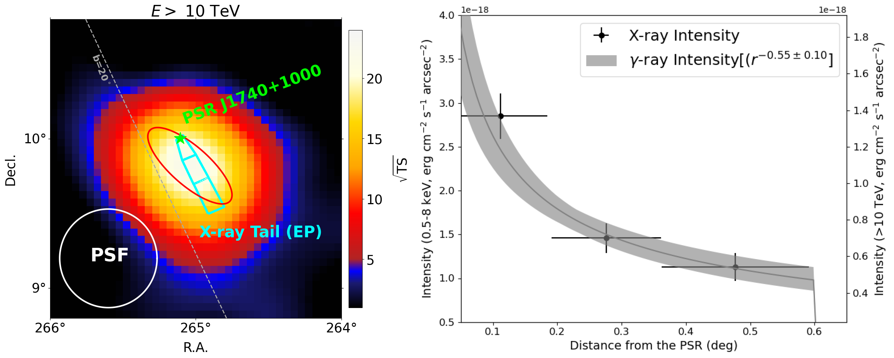
图注：Left: significance map of LHAASO J1740+0948 at energies above 10 TeV. Overlaid are the extended X-ray tail in cyan. Lime star represents the position of the pulsar PSR J1740+1000. The red ellipse represents a semi-major axis of 0.36$^\circ$ and a semi-minor axis of 0.12$^\circ$. The orientation angle is 49.6$^\circ$ east of north. Right: surface brightness as a function of the angular distance from the pulsar position. Points are measured X-ray data and the gray curve and region indicate the best-fit $\gamma$-ray profile.
对应解读：对应“建议重点查看的图表”第3、4、6项，以及“关键图表逐图导读”图2/图3和形态拟合段落。
入选理由：这是验证论文核心结论“LHAASO 伽马射线源沿 EP X 射线尾迹方向延展”的最关键图。左图给出 >10 TeV 显著性图、脉冲星位置、X 射线尾迹叠加和最佳椭圆形态参数，包括半长轴、半短轴和位置角；右图给出从脉冲星出发的面亮度随角距离变化，并与伽马射线最佳剖面比较，直接支撑延展性、主轴对齐和各向异性输运判断。
来源与置信度：\(arxiv_source\)；high；\(arxiv_source\) / ms.tex:figure[3]
Fig04
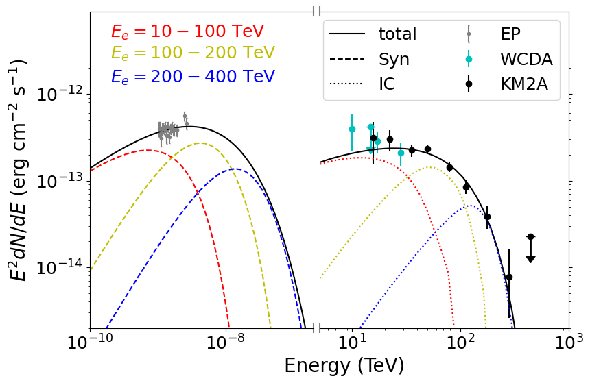
图注：Multiband SED of LHAASO J1740+0948 and spectral modeling. The dashed and dotted lines represent synchrotron and IC radiation, respectively, by the same population of electrons at a certain energy range (denoted by different colors).
对应解读：对应“建议重点查看的图表”第5项，“关键图表逐图导读”图4，以及谱能量分布拟合段落。
入选理由：这是物理解释的核心 SED 图，用同一电子族的同步辐射和逆康普顿辐射同时连接 X 射线与 LHAASO 伽马射线数据，直接检验是否需要额外强子成分或传播中再加速。相比单独的影像图，它支撑摘要中“单一相对论电子群解释多波段辐射”的关键论断。
来源与置信度：\(arxiv_source\)；high；\(arxiv_source\) / ms.tex:figure[4]
Fig01
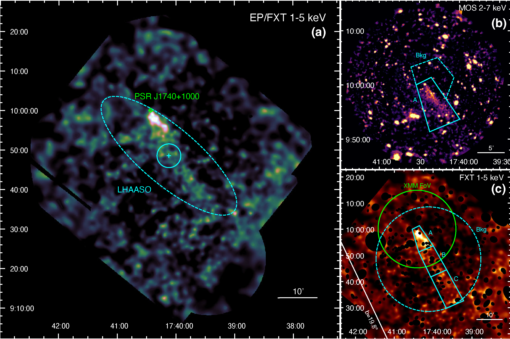
图注：X-ray images around the pulsar PSR~1740+1000 in celestial coordinators. \(\textbf{(a)}\): Point-like sources removed, background subtracted, vignetting corrected, adaptively smoothed FXT image in the 1--5 keV band, overlapped with the LHAASO $\gamma$-ray position (cross), position uncertainty (solid line), and $2\sigma$ elliptical extension (dashed line). The position of PSR~1740+1000 is marked in green. \(\textbf{(b)}\): XMM-Newton 2--7\,keV image with point-like sources remained. The solid lines encircle the source extraction region and the dashed lines encircle the background region. \(\textbf{(c)}\): same as \(\textbf{(a)}\) but with point-like sources masked. The solid lines encircle the three source regions marked as A, B, and C, respectively, and the dashed circle (excluding the source regions) encircles the sky background region. The green solid circle marks the field of view of XMM MOS shown in \(\textbf{(b)}.\) The white solid line indicates the Galactic latitude at $b = 19.8^\circ$. The horizontal lines indicates the scale bars labeled with the angular sizes.
对应解读：对应“建议重点查看的图表”第1、2项，以及“关键图表逐图导读”图1。
入选理由：该图展示 EP 1--5 keV 软 X 射线图像、点源剔除、背景扣除、视场范围、PSR J1740+1000 位置、LHAASO 位置和椭圆延展，并与 XMM-Newton 视场和旧图像对比。它是确认 EP 新发现长尾迹是否真实、是否连续于 XMM 结构、是否受点源或视场边界影响的基础证据。
来源与置信度：\(arxiv_source\)；high；\(arxiv_source\) / ms.tex:figure[1]
Fig02
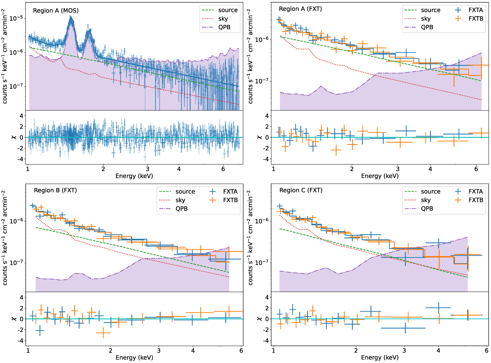
图注：XMM-Newton and EP spectra in different regions with best-fit models. The green dashed line indicates the synchrotron emission from the source, the red dotted line indicates the sky background, and the purple dash-dotted line indicates the instrumental quiescent particle background (QPB).
对应解读：对应“模型拟合”中关于 X 射线谱拟合、背景/QPB 分解和系统误差检查的段落。
入选理由：该图给出 XMM-Newton 与 EP 不同区域的 X 射线谱及最佳拟合模型，并显式分解同步辐射、天空背景和仪器 QPB。它不如形态图和 SED 图直接支撑各向异性输运，但有助于判断尾迹 X 射线谱是否可靠、背景处理是否充分，是检查低面亮度延展结构可信度的重要辅助图。
来源与置信度：\(arxiv_source\)；high；\(arxiv_source\) / ms.tex:figure[2]
强相关工作
这篇工作与 TeV halo 和延展 PWN 的一系列研究直接相关。同类源包括 Geminga、Monogem、HESS J1825-137、Vela X 和 Crab PWN 等；其中 Geminga/Monogem 常被用于讨论受抑制扩散和正电子过剩，HESS J1825-137 是能量依赖延展 PWN 的经典例子，Crab 则是 PWN 加速和辐射模型的基准源。建议检索关键词包括“PSR J1740+1000 pulsar wind nebula X-ray tail”、“LHAASO UHE gamma-ray PWN”、“anisotropic diffusion PWN”、“bow-shock pulsar wind nebula”、“TeV halo suppressed diffusion”。
这篇文章也与关于 PWN 周围粒子输运的相反观点有关。一类观点把 TeV halo 解释为近源区各向同性但强烈受抑制的扩散；另一类观点强调局域磁场、湍流级联、源年龄和脉冲星运动会导致低维或各向异性扩散。本文的 X 射线尾迹与伽马射线长轴对齐更偏向后一种图像，但仍需与纯扩散 halo、平流尾迹和多源叠加模型比较。由于这是命名源 PSR J1740+1000 的多波段结果，读者应同时查同一源早期 XMM-Newton 论文、LHAASO 源发现论文、以及 PWN/TeV halo 综述。
同一事件 / 同类源线索：
相似工作：
基础理论 / 方法工作：
- https://arxiv.org/abs/astro-ph/0601264
- https://arxiv.org/abs/0803.0685
- https://arxiv.org/abs/1706.03592
相反观点 / 张力线索：
2. The Galactic Neutrino Sky: Predictions from Gamma-ray Source Populations
- 来源：arXiv / astro-ph.HE
- 链接：https://arxiv.org/abs/2608.09849v1
- 作者：Leo Seen, Ke Fang
- 评分：novelty 8/10，importance 8/10，relevance 10/10，final 9.70/10
- 推荐理由：直接面向IceCube银河面高能中微子信号，并用GeV-PeV伽马射线源族群构建强子候选模板解释内银河 excess；伽马射线、宇宙线和中微子多信使相关性很高。
中文题目：银河系中微子天空：来自伽马射线源族群的预测
做了什么：这篇文章试图解释 IceCube 已报告的银河面高能中微子信号，尤其是内银河方向更强的超额。作者把从 GeV 到 PeV 能段的伽马射线源表合并，筛选可能由强子过程主导的银河源，构造了一个名为 ReGal-\(\gamma\) 的已分辨伽马射线源模板，并把它作为潜在中微子源空间分布的代理。结果是：相比只用银河弥散宇宙线相互作用模型，源族群模板会把中微子强度自然地集中到内银河；再加上弥散宇宙线发射和未分辨源贡献后，可以同时复现 IceCube 给出的能谱能量分布和银经方向计数剖面，而且不需要人为重新归一化。
为什么重要：IceCube 的银河面中微子探测已经达到约 \(5.7\sigma\)，但“这些中微子到底主要来自弥散宇宙线气体相互作用，还是来自一批银河加速源”仍是核心问题。本文重要之处在于，它把伽马射线源表中的实际源分布直接转化为中微子天空模板，说明内银河超额不一定需要新的弥散成分或异常宇宙线密度，而可能是银河强子源族群的空间分布所致。
理论 / 观测 / 仪器方法价值：对理论而言，本文把银河中微子建模从“平滑弥散模板”推进到“源族群加弥散背景”的混合图像，有助于区分宇宙线传播产生的中微子和加速器内部或近源环境产生的中微子。对观测而言，它给出了可被 IceCube、IceCube-Gen2、KM3NeT 等检验的银经、银纬和能量依赖预测。对方法而言，ReGal-\(\gamma\) 展示了如何用多能段伽马射线目录构造中微子空间模板，并用独立目录模板交叉验证源建模不确定性。
为什么应该关注：如果你关心银河宇宙线起源、PeVatron、源附近强子相互作用或多信使天文学，这篇文章值得看。它不是简单说“伽马射线和中微子相关”，而是提出一个可直接和 IceCube 计数剖面比较的模板框架。未来一旦中微子角分布和能量分布更精细，这类模板可能决定我们能否把银河中微子信号拆成弥散传播成分、未分辨源成分和少数明亮源族群成分。
展开详细解读：文章讲解、背景、理论、重点章节、图表与相关工作
文章详细讲解
科学问题：IceCube 已经报告银河面高能中微子发射，显著性约为 \(5.7\sigma\)，并且信号在内银河方向更强。传统解释通常从银河弥散发射出发：宇宙线质子和核在星际气体中发生 \(pp\) 碰撞，产生 \(\pi^0\)、\(\pi^\pm\)，继而产生伽马射线和中微子。但问题在于，平滑弥散模型的空间分布是否足以解释内银河的集中超额？如果不够，额外成分究竟是宇宙线传播模型的问题，还是一批真实银河源的贡献？本文正是围绕这个判别展开。
作者怎么做：作者收集跨越 GeV 到 PeV 能段的银河伽马射线源目录，筛选可能具有强子辐射成分的候选源，构造 ReGal-\(\gamma\) 模板。这个模板不是单个源的精细辐射模型，而是把已分辨伽马射线源族群的空间分布和相对强度转化为潜在高能中微子天空分布。随后作者把 ReGal-\(\gamma\) 与银河弥散宇宙线发射模型、未分辨伽马射线源模型组合，计算预期中微子强度、能谱能量分布以及沿银经的计数剖面，并与 IceCube 报告的结果比较。
关键结果：ReGal-\(\gamma\) 比传统银河弥散模型更集中于内银河，因此可以自然解释 IceCube 在内银河看到的突出超额。更重要的是，作者声称在把已分辨源模板、未分辨源和弥散宇宙线发射相加后，模型能够同时复现 IceCube 的谱能量分布和银经方向计数剖面，并且不需要对各发射模型做额外的经验重归一化。这一点在物理上很关键，因为它说明观测幅度和空间形态都可能来自已知伽马射线源族群及常规银河成分的组合，而不是必须引入任意调节的额外中微子源。
局限和下一步：这类工作最主要的不确定性在于伽马射线源是否真是强子源、源表完备性如何、不同能段目录选择函数是否一致，以及伽马射线到中微子的转换是否可用简单强子标度描述。伽马射线可能来自轻子逆康普顿或轫致辐射，源距离、扩展形态、能谱截断和吸收也会影响模板权重。作者用独立伽马射线源模板检验结论稳健性，但最终判别仍需要中微子数据本身给出能量依赖的银经和银纬剖面。如果未来高能样本显示内银河集中度随能量变化，或银纬宽度与伽马源族群不符，就能进一步限制源族群模型。
关键结果是怎么做出来的
本文的证据链从样本构造开始。作者没有只使用单一伽马射线目录，而是组合覆盖 GeV、TeV 到 PeV 能段的银河伽马射线源表，然后筛选可能产生强子伽马射线的候选体。这里的关键不是源数本身越多越好，而是源表要覆盖内银河拥挤区域、扩展源、硬谱源和高能无截断源；这些对象更可能与高能中微子产生有关。最终得到的 ReGal-\(\gamma\) 是一个已分辨源空间模板，用来预测银河中微子天空的非均匀部分。
核心比较对象是 IceCube 报告的银河面中微子信号，包括整体显著性约 \(5.7\sigma\)、谱能量分布以及银经方向计数剖面。作者关注的不是单个中微子事件与单个伽马源的逐一关联，而是统计意义上的天空模板匹配：如果中微子事件来自某一类银河源族群，那么在角分辨率、曝光和背景卷积后，沿银经方向的计数分布应当比平滑弥散模型更向内银河集中。ReGal-\(\gamma\) 正是给出了这种更陡的内银河权重。
模型比较上，本文把 ReGal-\(\gamma\)、弥散宇宙线发射和未分辨伽马射线源组合起来，检验是否能同时解释两个维度的观测：一是能谱能量分布，即不同能量区间的中微子强度是否达到 IceCube 测得的幅度；二是银经计数剖面，即内银河和外银河方向的相对事件数是否一致。摘要中特别强调“不需要额外重归一化”，意味着各成分的归一化在物理或伽马射线约束给定后，不再任意调到 IceCube 数据。这是判断模型是否有预测力的重要标准。
支撑结论的图表应包括：ReGal-\(\gamma\) 天图或银经投影、不同成分的中微子谱能量分布、模型与 IceCube 银经计数剖面的对比、以及独立伽马射线源模板的交叉检验。读者应重点看内银河区域的模型线是否只是在一个角度 bin 上贴合，还是在多个银经 bin 上都能解释趋势；也要看外银河是否被过度预测，因为源模板过于集中有时会牺牲全银河总通量的一致性。
系统误差主要来自三个层面。第一是源分类误差：许多伽马射线源可能是脉冲星风云、壳型超新星遗迹、致密源或混合系统，其伽马射线强子比例并不确定。第二是目录选择函数：内银河源拥挤、弥散背景强，源的探测阈值和扩展源分解会影响模板形态。第三是中微子观测响应：角分辨率、能量重建、南北天曝光和大气背景会把真实模板卷积成观测计数图。作者用独立目录构造另一套伽马源模板来检验结论，说明内银河集中结论并非完全依赖某一个源表选择。
展开背景、理论、公式、模型、章节和图表导读
背景知识
研究对象是银河系高能中微子天空。高能中微子通常来自强子过程：宇宙线质子或原子核与气体、辐射场碰撞，产生带电介子，随后衰变为中微子。由于中微子不受磁场偏折、吸收也弱，它们原则上能直接指向宇宙线强子加速和相互作用的位置。但中微子探测事件数少、角分辨率有限、背景高，因此从银河面中提取信号需要长期积累和模板统计。
历史上，银河伽马射线弥散发射一直是研究宇宙线传播的主要窗口。Fermi-LAT 在 GeV 能段给出了精细的银河弥散图，H.E.S.S.、HAWC、LHAASO 等在 TeV 到 PeV 能段揭示了越来越多硬谱和超高能银河源。由于 \(\pi^0\) 衰变伽马射线和 \(\pi^\pm\) 衰变中微子同源，伽马射线源表自然成为预测中微子天空的输入。但伽马射线也可能由电子逆康普顿散射或轫致辐射产生，因此“亮伽马源”等同于“亮中微子源”是常见但危险的简化。
IceCube 的银河面探测改变了问题的紧迫性。过去许多模型只需给出总通量上限或可检验预言，现在则必须解释实际观测到的空间形态和能谱。内银河方向拥有更高的气体柱密度、更强的恒星形成、更密集的超新星遗迹和分子云，也有更多候选 PeVatron，因此中微子超额集中在这里并不意外；但关键是区分这种集中来自平滑的气体和宇宙线分布，还是来自离散源族群。
现在值得重新看这个问题，是因为伽马射线目录和中微子数据都进入了新阶段。LHAASO 等设施发现了许多超过 \(100\,\mathrm{TeV}\) 的银河伽马源，这些源若为强子起源，就直接指向 PeV 级宇宙线加速。与此同时，IceCube 的银河面分析开始能给出统计上显著的空间模板偏好。用多能段伽马源表构造中微子模板，正好把这两方面连接起来。
该领域的常见误区包括：第一，把所有银河伽马射线都当作强子信号，忽略轻子辐射和源内吸收；第二，把弥散发射和未分辨源完全分开，实际上二者在有限角分辨率和源表不完备时会高度退化；第三，只比较总通量而不比较空间剖面，导致许多模型在能谱上看似可行，却在银经或银纬分布上失败；第四，忽视仪器响应卷积，真实天空模板不能直接和事件计数图逐像素比较。
基础理论 / 方法脉络
基本物理图像是强子宇宙线与星际介质或源附近气体碰撞。若高能质子谱近似为 \(E_p^{-s}\)，在 \(pp\) 碰撞中会产生中性和带电介子；中性介子产生伽马射线，带电介子产生中微子。在能量远高于介子产生阈值时，伽马射线和中微子谱形具有相似的幂律指数，因此伽马射线观测可以约束中微子发射的强度和空间分布。
本文的关键假设是：一部分已分辨银河伽马射线源是潜在强子中微子源，它们的空间分布可以作为中微子源族群分布的代理。ReGal-\(\gamma\) 模板因此更像一个经验空间模板，而不是对每个源逐一求解粒子输运方程。模板中的权重可能来自伽马射线通量、谱形、能段覆盖和源类型选择；经过归一化后，它给出不同天空方向上相对中微子强度。
观测方法上，IceCube 看到的不是真实强度 \(I_\nu(l,b,E_\nu)\)，而是经过有效面积、曝光时间、角扩散函数、能量响应和背景选择后的事件计数。一个模型若要与 IceCube 的银经剖面比较，必须把天空强度投影到观测空间：先在能量和方向上卷积仪器响应，再按银经 bin 汇总。否则内银河集中度可能被高估或低估。
本文涉及的主要退化是弥散发射、未分辨源和已分辨源模板之间的退化。弥散发射通常跟气体柱密度和宇宙线密度有关，也会在内银河增强；未分辨源在统计上可能表现为平滑增强；已分辨源模板则会呈现更强的非均匀性和内银河集中。若角分辨率不足，三者在银经剖面上可能相似，因此能量依赖、银纬宽度和源遮罩检验非常重要。
系统误差还包括伽马射线目录选择函数。内银河背景强，源分解困难，扩展源可能被拆成多个点源或被并入弥散背景；外银河源更容易因距离和灵敏度限制而缺失。这些效应都会改变 ReGal-\(\gamma\) 模板的归一化和形状。作者用独立目录构造模板，是为了检验“内银河集中”是否是某个目录处理流程造成的伪迹。
公式与推导
从强子相互作用的最简图像开始。设宇宙线质子微分密度为 \(n_p(E_p,\mathbf{r})\)，靶气体密度为 \(n_{\rm H}(\mathbf{r})\)，则介子产生率可写成近似卷积：
这里 \(c\) 是光速，\(d\sigma_{pp\to \pi}/dE_{\pi}\) 是微分截面。该式说明中微子和强子伽马射线都依赖同一组物理量：宇宙线密度、气体密度和碰撞截面。
中性介子和带电介子的衰变把介子产生率转化为伽马射线和中微子源函数。对幂律谱和近似同位旋对称的 \(pp\) 碰撞，可用标度关系表示：
其中 \(Q_{\nu_\alpha}\) 是单味中微子源函数，\(Q_\gamma\) 是伽马射线源函数。系数随谱指数、核增强因子和振荡后的味比例变化，但该式给出用伽马射线估算中微子量级的直观连接。
对某一方向 \((l,b)\)，弥散强度来自沿视线积分：
这里 \(s\) 是视线距离，\(q_\nu\) 是单位体积中微子发射率。平滑弥散模型的内银河增强主要由 \(n_{\rm H}\)、宇宙线源分布和传播模型共同决定。
离散源模板可写成源贡献叠加：
其中 \(\Phi_{\nu,i}\) 是第 \(i\) 个源的中微子通量谱，\(P_i(l,b)\) 是归一化的空间形态或点扩散后的源模板。ReGal-\(\gamma\) 的思想就是用伽马射线源表估计这些 \(P_i\) 和相对权重。
组合模型可写成：
这里三项分别代表银河弥散宇宙线发射、未分辨源贡献和已分辨伽马源模板贡献。本文强调这些项的组合可以复现 IceCube 的能谱和银经剖面，而不需要额外经验归一化。
观测事件数不是强度本身，而是响应卷积：
其中 \(\mu_k\) 是第 \(k\) 个银经或空间 bin 的期望计数，\(T\) 是曝光时间，\(A_{\rm eff}\) 是有效面积，\(R_k\) 表示角度和能量重建响应，\(\mu_k^{\rm bkg}\) 是大气和各向同性背景。
若对计数 bin 使用泊松统计，模板拟合似然为：
这里 \(n_k\) 是观测计数。不同模板或不同成分组合可通过 \(\ln\mathcal{L}\) 比较，判断源模板是否显著改善银经剖面或总能谱。
常用检验统计量可写为：
其中 \(\hat{\boldsymbol{\theta}}_{\rm src}\) 是含 ReGal-\(\gamma\) 或源族群模板的最佳拟合参数，\(\hat{\boldsymbol{\theta}}_{0}\) 是无该成分的基准模型参数。在大样本和正则条件下，\(TS\) 可近似转化为显著性，但边界参数和模板非正交会使简单 \(\sqrt{TS}\) 解释失效。
银经剖面的归一化残差可定义为：
其中 \(\sigma_{{\rm sys},k}\) 表示源表、背景和响应带来的系统误差。若 ReGal-\(\gamma\) 模型正确，内银河 bin 的 \(\Delta_k\) 应不再呈系统正偏，而外银河也不应出现系统负偏或正偏。
模型拟合 / 应用方法
本文这类分析的拟合对象通常包括中微子谱能量分布和空间计数剖面。谱能量分布约束总通量幅度和谱指数，银经或银纬剖面约束空间模板。若模型将 ReGal-\(\gamma\)、弥散发射和未分辨源都作为固定物理模板，那么真正可调的参数可能很少；若允许各成分归一化浮动，则需要检查拟合是否只是通过自由归一化吸收数据，而非给出有预测力的空间形态。
似然通常可基于泊松计数或 IceCube 已发布的模板拟合结果。理想做法是在事件级别使用方向、能量代理、角误差和事件类型构造非分箱似然；若只能使用公开的银经计数剖面，则多采用分箱 \(\chi^2\) 或泊松似然。本文摘要中的重点是“无需额外重归一化”，说明作者更强调模型的先验归一化与观测幅度相容，而不是通过大量自由参数获得形式上的好拟合。
参数退化是解读这篇文章时必须注意的。弥散宇宙线模型的归一化、源模板的总强度、未分辨源的空间分布都可能在内银河方向产生增强。若只看一维银经剖面，这些成分可能彼此替代；加入银纬宽度、高能端谱形、源遮罩后的残差，以及不同能段的模板变化，才能打破退化。特别是强子源模板通常预期与硬谱高能伽马源更相关，而纯弥散成分可能与气体柱密度更紧密。
系统误差的建模应包括伽马射线源表不完备、源分类错误、扩展源形态、伽马射线轻子污染、中微子有效面积和大气背景。对 ReGal-\(\gamma\) 而言，内银河源拥挤和弥散背景建模会影响源是否被列入目录以及通量如何分配；对 IceCube 而言，角分辨率和能量重建会影响模板在观测空间中的锐利程度。稳健性检验至少应比较不同伽马目录、不同候选强子源筛选、不同源权重方案和不同空间平滑尺度。
模型可能失败的方式也很明确。若未来 IceCube 或 KM3NeT 发现中微子银纬分布比源模板宽得多，说明弥散气体相互作用可能更重要；若高能端中微子集中度不随硬谱伽马源分布变化，说明伽马源到中微子的强子转换过于简单；若遮蔽明亮伽马源后信号仍几乎不变，则未分辨源或真正弥散成分可能占主导。反过来，如果更高角分辨率数据逐步显示与已知 TeV-PeV 源族群的统计相关增强，本文的模板框架会成为解释银河中微子天空的重要基线。
重点章节 / 结果段落怎么读
-
数据和样本构造：读者应首先看作者使用了哪些 GeV、TeV 和 PeV 伽马射线源目录，以及如何定义“候选强子发射源”。重点不是目录名称本身，而是源选择是否排除了明显轻子主导对象，是否处理了扩展源和内银河源混淆，以及不同目录之间的重复源如何合并。
-
ReGal-\(\gamma\) 模板定义：这一部分应解释每个源如何被赋权、如何从伽马射线通量或能谱转化为中微子相对强度、如何进行空间平滑和归一化。读者要检查模板是否保留了源族群的真实非均匀性，还是被过度平滑成近似弥散模型。
-
与弥散和未分辨源模型的组合：这里是物理解释的核心。应重点看作者采用了哪些银河弥散宇宙线发射模型、未分辨源如何估计、三个成分是否独立归一化，以及是否存在重复计数问题。例如某些扩展源既可能被源表计入，也可能已经包含在弥散伽马背景模型中。
-
与 IceCube 结果的比较：读者应关注谱能量分布和银经计数剖面两类图。真正有说服力的结果应同时解释通量幅度、谱形和内银河集中，而不是只在总显著性或单个 bin 上匹配。
-
稳健性检验和独立模板：摘要提到作者用不同目录构造了独立伽马射线源模板，并发现结论稳健。这部分应仔细读，因为它决定结论是否依赖某一套目录的选择函数、源分类或内银河源分解方法。
-
讨论和未来预言：最后应看作者对能量依赖银经、银纬分布的预测。未来观测能否区分源族群和弥散成分，取决于这些可检验预言是否足够具体。
建议重点查看的图表
-
ReGal-\(\gamma\) 全天或银河坐标模板图：看内银河、外银河和银纬方向的强度分布，注意是否由少数极亮源主导，还是由较连续的源族群产生。
-
伽马射线源样本分布图或源表统计表：看候选强子源在银经、银纬、能段和源类型上的分布，尤其是内银河源拥挤区域的处理。
-
中微子谱能量分布对比图：看 ReGal-\(\gamma\)、弥散发射、未分辨源和总模型分别贡献多少，是否在 IceCube 误差条内同时匹配低能和高能点。
-
银经方向计数剖面图：这是最关键诊断。看内银河峰值的位置和宽度、外银河计数是否过预测，以及不同模型线之间差别是否大于统计误差。
-
银纬剖面或二维残差图：如果论文提供，应检查模型是否过于贴近银河面。源族群模板通常比某些弥散模型更窄或更斑块化，银纬宽度是重要判据。
-
独立伽马源模板比较图：看替代目录构造的模板是否给出相似的内银河集中和中微子剖面，而不是只在总通量上相近。
-
系统误差或稳健性表：看改变源选择、权重、平滑尺度、强子候选标准后，模型结论是否仍成立。
关键图表逐图导读
图 1：若论文给出 ReGal-\(\gamma\) 的银河坐标天图，横轴通常是银经 \(l\)，纵轴是银纬 \(b\)，颜色表示模板强度或相对中微子亮度。应看颜色峰值是否集中在 \(|l|\) 较小的内银河，以及银纬方向是否贴近银河面。读图陷阱是不要把伽马模板亮斑直接理解为已探测中微子点源；它只是经过源选择和权重后的统计模板。
图 2：若有源样本或目录交叉匹配图，坐标可能是源通量、谱指数、最高探测能量或天空位置。重点看作者筛选“候选强子源”的边界条件，以及被排除或纳入的源类。读者要警惕选择效应：内银河背景复杂可能让源通量和扩展形态更不稳定，从而影响模板权重。
图 3：谱能量分布图通常以 \(E_\nu\) 为横轴，以 \(E_\nu^2\Phi_\nu\) 或类似量为纵轴。数据点应对应 IceCube 的银河中微子测量或其允许区间，模型线应分解为弥散、未分辨源、ReGal-\(\gamma\) 和总和。关键是看总模型是否在不重新归一化的情况下穿过误差条，以及各成分在哪些能段占主导。
图 4：银经计数剖面图通常以 \(l\) 或银经 bin 为横轴，以事件数、相对强度或归一化残差为纵轴。ReGal-\(\gamma\) 模型应比纯弥散模型在内银河更高。读图时要看峰值宽度，而不只是峰值高度；如果模型只在中心 bin 好、两侧 bin 差，说明空间形态可能仍有问题。
图 5：若有不同模型比较或残差图，重点看 \((n_k-\mu_k)/\sigma_k\) 是否在内银河系统偏正。一个好模型应减少结构化残差，而不是把残差从内银河转移到外银河或高银纬。置信带若包含系统误差，应区分统计误差和源建模误差。
图 6：独立模板检验图应展示用另一组伽马射线目录构造的模板与 ReGal-\(\gamma\) 的比较。读者应看结论是否对源表选择、源权重和空间平滑尺度敏感。如果两套模板都预测内银河集中并匹配 IceCube 剖面，那么“源族群解释”的可信度明显提高。
论文原图 / 可嵌入图片
Fig04
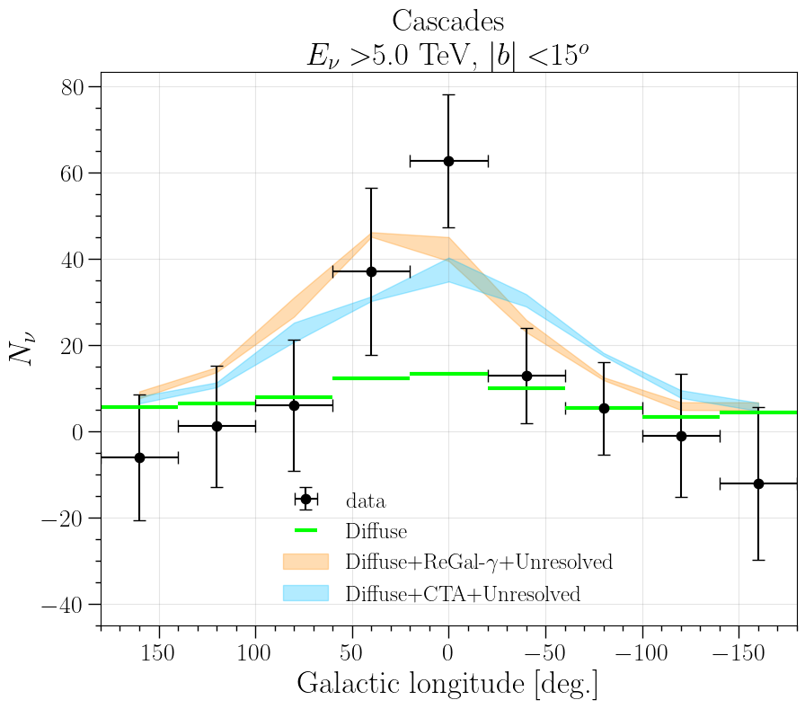
图注：{The black data points with errorbars are observed data in nine longitudinal bins as reported in \(\citet{IceCubeGP26}.\) The green lines indicate the CRINGE diffuse model expectations. The orange and light blue shaded regions are the model predictions that account for resolved and unresolved sources, in addition to the CRINGE GDNE model. The minimum and maximum of the shaded regions indicate the uncertainties in unresolved source models. }
对应解读：建议重点查看的图表第4项；关键图表逐图导读图4；模型拟合段落中关于银经计数剖面与IceCube观测的比较。
入选理由：这是日报中明确标为最关键诊断的银经方向计数剖面图，直接给出IceCube九个银经bin的数据点和误差条，并叠加CRINGE弥散模型以及加入已分辨、未分辨源后的预测带。它最能检验ReGal-γ是否真正改善内银河峰值、峰宽和外银河计数，而不只是匹配总通量。
来源与置信度：\(arxiv_source\)；high；\(arxiv_source\) / main.tex:figure[4]
Fig03
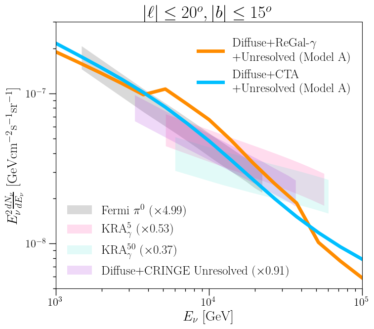
图注：Average per-flavor neutrino flux in the inner Galaxy. The colored bands show the average per-flavor neutrino flux reported by IceCube for various GDNE models as calculated from an all-sky fit. The corresponding flux renormalization factors are listed in the legend. The solid orange and blue lines are the model predictions that account for resolved and unresolved sources, in addition to the CRINGE GDNE model. Both the resolved and unresolved source models assume $\chi = 1$.
对应解读：建议重点查看的图表第3项；关键图表逐图导读图3；模型拟合段落中关于谱能量分布、归一化因子和无需额外重归一化的讨论。
入选理由：该图把内银河平均每味中微子通量与IceCube在不同GDNE模型下报告的通量带直接比较，并在图例中列出重归一化因子。它最适合支撑日报中“总模型是否在不重新归一化的情况下穿过IceCube允许区间”的核心解读。
来源与置信度：\(arxiv_source\)；high；\(arxiv_source\) / main.tex:figure[3]
Fig02
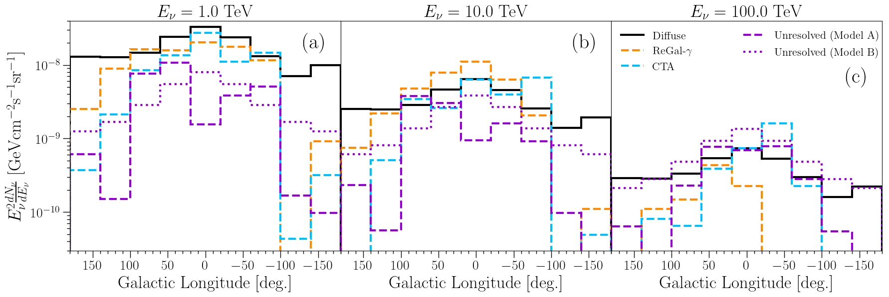
图注：{Longitudinal profiles of the per-flavor neutrino flux from resolved $\gamma$-ray sources, represented by ReGal-$\gamma$ (orange dashed) and CTA templates (blue dashed); unresolved $\gamma$-ray sources, represented by two models (purple dashed and dotted); and diffuse neutrino emission (black solid). All source models assume $\chi=1$. Panels (a), (b), and (c) show the neutrino flux profiles at 1, 10, and 100 TeV, respectively.}
对应解读：建议重点查看的图表第4项和第6项；关键图表逐图导读图4与图6；模型拟合段落中关于弥散、已分辨源、未分辨源空间模板退化的讨论。
入选理由：该图展示1、10、100 TeV三个能量下不同成分的银经通量剖面，包括ReGal-γ、CTA替代模板、未分辨源模型和CRINGE弥散发射。它不仅说明ReGal-γ相对弥散模型更集中于内银河，还提供独立CTA模板对照，是判断结论是否依赖源目录选择的重要图。
来源与置信度：\(arxiv_source\)；high；\(arxiv_source\) / main.tex:figure[2]
Fig01
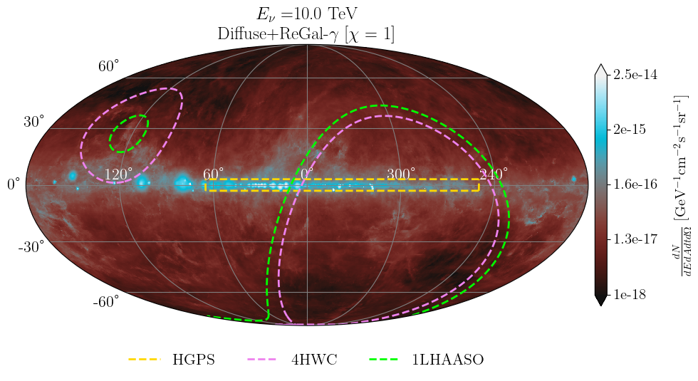
图注：{Skymap in Galactic coordinates showing the Galactic neutrino distribution at 10 TeV obtained by adding ReGal-$\gamma$ to the CRINGE diffuse emission model, under the assumption that all $\gamma$-ray emission originates from hadronic interactions ($\chi=1$). The colorbar shows the per-flavor differential neutrino flux in units of GeV$^{-1}$cm$^{-2}$s$^{-1}$sr$^{-1}$. The regions enclosed between the two pink and green dashed lines indicate the sky coverages of the 4HWC and 1LHAASO catalogs, respectively, while the yellow dashed box marks the survey region of HGPS. ReGal-$\gamma$ also includes sources from the full-sky 4FGL-DR4 catalog.}
对应解读：建议重点查看的图表第1项；关键图表逐图导读图1；详细解读中关于ReGal-γ模板空间分布和内银河集中的说明。
入选理由：这是ReGal-γ与CRINGE弥散模型相加后的银河坐标中微子天图，横纵坐标为银经和银纬，颜色给出每味微分中微子通量。它能直观看出内银河增强、银纬贴近银河面以及不同伽马射线目录覆盖区域，是理解模板构造和空间形态的入口图。
来源与置信度：\(arxiv_source\)；high；\(arxiv_source\) / main.tex:figure[1]
Fig07
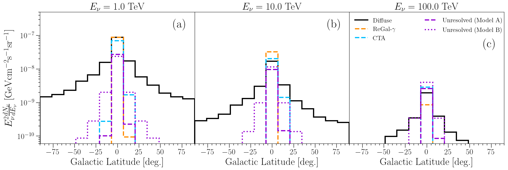
图注：Latitudinal per-flavor neutrino flux distribution. The solid black line shows the CRINGE diffuse model while the colored dash/dotted lines show the contribution from sources. Panels (a), (b), and (c) show the flux distributions at 1, 10, and 100 TeV, respectively.
对应解读：建议重点查看的图表第5项；关键图表逐图导读图5；模型拟合段落中关于银纬宽度、源模板是否过窄以及未来能量依赖检验的讨论。
入选理由：该图给出1、10、100 TeV下银纬方向的每味中微子通量分布，并区分CRINGE弥散模型与源成分贡献。银纬宽度是区分源族群模板和弥散气体相互作用的重要判据，因此它能补足仅看银经剖面时的空间退化问题。
来源与置信度：\(arxiv_source\)；high；\(arxiv_source\) / main.tex:figure[7]
Fig05
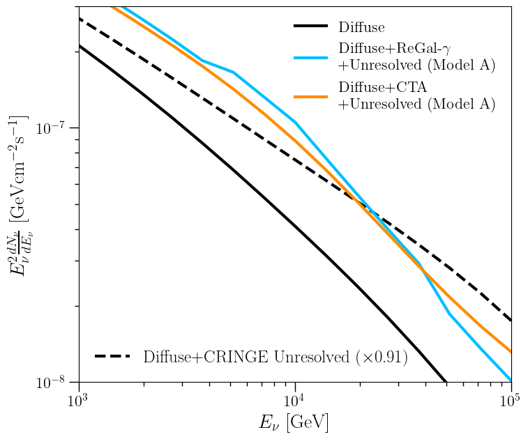
图注：{All-sky per-flavor neutrino flux spectrum. The black dashed line shows the energy spectrum of the combined CRINGE diffuse and unresolved-source models, normalized to the IceCube best-fit measurement. The solid lines show predictions from the diffuse emission only based on the CRINGE model (black) and diffuse emission plus resolved and unresolved sources models (orange and blue). All resolved and unresolved source models assume $\chi = 1$.}
对应解读：建议重点查看的图表第3项；关键图表逐图导读图3；模型拟合段落中关于全天天区中微子谱和各成分总贡献的讨论。
入选理由：该图展示全天每味中微子通量谱，比较CRINGE弥散模型、加入已分辨和未分辨源后的模型，以及归一化到IceCube最佳拟合的参考谱。虽然它不如Fig03直接对应内银河IceCube通量带，但能说明源成分对整体谱形和总通量预算的影响。
来源与置信度：\(arxiv_source\)；high；\(arxiv_source\) / main.tex:figure[5]
强相关工作
这篇工作直接关联 IceCube 对银河面中微子发射的探测论文，属于同一观测现象的理论/模板解释。应把它与纯弥散银河中微子模型、基于 Fermi-LAT 弥散伽马射线的宇宙线传播模型、以及基于 TeV-PeV 源表的 PeVatron 中微子预测放在一起读。检索关键词可用 “IceCube Galactic plane neutrino emission \(5.7\sigma\)”、“Galactic diffuse neutrino emission”、“hadronic gamma-ray sources neutrino template”、“PeVatron neutrino Galactic plane”。
相近工作还包括 HAWC、H.E.S.S.、LHAASO 对银河平面和超高能伽马源的目录研究，以及 Fermi-LAT 银河弥散发射模型。潜在张力来自两类观点：一类认为 IceCube 银河信号主要是宇宙线在星际气体中的弥散相互作用；另一类认为未分辨或已分辨源族群贡献不可忽略。本文站在后者更重要的位置，但并没有否认弥散成分，而是把源模板、弥散发射和未分辨源合并为一个混合解释。
同一事件 / 同类源线索：
- https://arxiv.org/abs/2307.04427
- https://www.science.org/doi/10.1126/science.adc9818
- https://arxiv.org/abs/2608.09849
相似工作：
基础理论 / 方法工作：
相反观点 / 张力线索：
3. Slow Cosmic-Ray Diffusion in Supersonic and Super-Alfvénic Turbulence
- 来源：arXiv / astro-ph.HE
- 链接：https://arxiv.org/abs/2608.08449v1
- 作者：Yue Hu
- 评分：novelty 8/10，importance 8/10，relevance 10/10，final 9.70/10
- 推荐理由：直接针对TeV-PeV伽马射线halo所需的慢且近各向同性宇宙线扩散，利用两流体MHD湍流与测试粒子模拟解释源区输运；与CR、TeV伽马源和PeVatron环境高度相关。
中文题目：超声速、超阿尔芬湍流中的慢宇宙线扩散
做了什么：这篇文章针对一个高能天体物理中的实际矛盾：一些 TeV–PeV 伽马射线晕暗示源附近宇宙线扩散系数只有银河系平均值的一小部分，而且扩散近似各向同性；但在有大尺度磁场的等离子体中，通常预期宇宙线沿磁场方向跑得更快。作者用两流体磁流体湍流模拟加相对论测试粒子追踪，研究部分电离环境中的离子—中性阻尼如何改变宇宙线散射。主要结论是：在跨声速湍流中，阻尼会清除小尺度共振涨落，使平行扩散显著变快；但在强超声速、强超阿尔芬湍流中，激波相关磁涨落和磁场方向快速退相关可以维持非共振俯仰角散射，使平行和垂直扩散都落在约 \(10^{27}\)–\(10^{28}\,\mathrm{cm^2\,s^{-1}}\) 的观测推断范围内，并趋于近各向同性。
为什么重要：TeV 伽马射线晕常被用来反推年轻源、脉冲星风云或分子云附近的宇宙线传播。如果慢扩散只能靠人为调低扩散系数解释，那么模型的物理基础很弱；本文给出一种具体环境机制：在强压缩、强超阿尔芬湍流中，即使离子—中性阻尼存在，宇宙线也不一定自由逃逸，扩散还可以又慢又近各向同性。这直接关系到源附近宇宙线滞留、银河宇宙线背景、PeVatrons 识别和扩展伽马射线源形态解释。
理论 / 观测 / 仪器方法价值：理论价值在于把离子—中性阻尼、可压缩湍流、激波磁结构和宇宙线测试粒子输运放在同一个数值框架里，指出传统只看小尺度回旋共振散射的图像并不完整。观测价值在于为 \(100\,\mathrm{TeV}\) 量级伽马射线源周围推断出的 \(D\sim10^{27}\)–\(10^{28}\,\mathrm{cm^2\,s^{-1}}\) 提供了可检验的物理条件：高声速马赫数 \(M_s\)、高阿尔芬马赫数 \(M_A\)、部分电离以及强密度/磁场压缩。方法价值在于展示了如何从两流体湍流模拟直接得到 \(D_\parallel\)、\(D_\perp\) 和各向异性，而不是只用解析标度外推。
为什么应该关注：如果你关心 LHAASO、HAWC、H.E.S.S.、CTA 或未来宽视场高能伽马巡天对扩展源的解释，这篇文章值得看，因为它把“慢扩散晕”从经验参数问题推进到源环境物理问题。它也提醒我们：部分电离介质中的阻尼不一定总是削弱散射、加速逃逸；在强超声速湍流中，激波和磁场弯折可能改写这一结论。对做宇宙线传播、星际介质湍流、伽马射线源建模的人来说，本文给出了一组可直接用于半解析模型和观测拟合的物理判据。
展开详细解读：文章讲解、背景、理论、重点章节、图表与相关工作
文章详细讲解
科学问题：扩展 TeV–PeV 伽马射线晕通常需要源附近宇宙线扩散比银河平均值慢一到两个数量级，并且形态上并不总是显示出很强的沿大尺度磁场拉长。标准图像下，带电宇宙线绕磁力线回旋，沿局部磁场的扩散系数 \(D_\parallel\) 往往大于垂直扩散系数 \(D_\perp\)。如果部分电离气体中的离子—中性碰撞又阻尼掉小尺度磁扰动，那么回旋共振散射应该变弱，宇宙线沿磁场逃逸更快。这与慢而近各向同性的伽马射线晕形成张力。本文要解决的就是：在真实源环境可能具有的强超声速、强超阿尔芬湍流中，这个张力是否仍然成立。
作者怎么做：论文使用两流体磁流体湍流模拟，把离子和中性组分的相互拖曳及阻尼效应纳入湍流演化，然后在模拟得到的磁场中投放相对论测试粒子，直接追踪粒子轨道和均方位移。核心控制参数包括声速马赫数 \(M_s\)、阿尔芬马赫数 \(M_A\)、离子—中性阻尼强度以及粒子刚度或回旋半径对应的能量尺度。作者比较跨声速和超声速情形，尤其关注阻尼是否消除负责回旋共振散射的小尺度磁涨落，以及是否仍有其他机制维持俯仰角散射。
关键结果：在跨声速湍流中，阻尼确实显著削弱小尺度磁扰动，使 \(D_\parallel\) 可增加约两个数量级，宇宙线沿磁场传播被大幅增强。这接近传统预期。但在超声速湍流中，激波相关的磁场压缩和非线性结构可以在阻尼存在时幸存下来，产生非共振俯仰角散射。因此 \(D_\parallel\) 的增加被限制在几倍到十倍量级。进一步，当 \(M_A\gtrsim5\) 时，局部磁场方向在阿尔芬尺度上迅速退相关，粒子沿“局部平行方向”的运动在全局坐标中被随机化，使 \(D_\parallel\) 与 \(D_\perp\) 趋于接近。对 \(M_s\simeq10\)、\(M_A\simeq5\)–\(10\) 的代表性百 TeV 伽马射线源环境，得到的扩散系数处于 \(10^{27}\)–\(10^{28}\,\mathrm{cm^2\,s^{-1}}\) 范围。
局限和下一步：这类测试粒子模拟通常不包含宇宙线对湍流和等离子体的反作用，也未必覆盖真实源环境的完整多尺度范围。数值盒子的惯性区有限，离子—中性阻尼尺度、粒子回旋半径和驱动尺度之间的层级关系可能与实际天体系统仍有差距。下一步应把这种微观输运结果嵌入三维源环境辐射模型，预测伽马射线表面亮度、能谱随半径变化和各向异性形态，并与 HAWC、LHAASO、CTA 等观测进行联合拟合。还需要检验不同电离度、湍流驱动方式、平均磁场强度和源年龄对 \(D_\parallel/D_\perp\) 的影响。
关键结果是怎么做出来的
本文最重要的证据链从模拟样本设计开始：作者不是简单指定一个标量扩散系数，而是在不同 \(M_s\) 与 \(M_A\) 的两流体湍流快照中追踪相对论测试粒子。样本维度包括跨声速与强超声速湍流、低到高阿尔芬马赫数、开启或关闭离子—中性阻尼，以及不同粒子刚度。这样的设计允许作者把“阻尼去掉共振尺度涨落”与“超声速激波保留非共振散射结构”分开比较。
扩散系数的估计来自粒子位移统计，而不是从磁谱解析公式间接推断。对每组模拟，粒子在局部或全局磁场方向上的均方位移随时间增长，进入扩散区后斜率给出 \(D_\parallel\) 和 \(D_\perp\)。关键诊断应包括均方位移曲线是否真的进入线性随时间增长的扩散阶段、早期弹道阶段是否被排除、有限盒子边界和最大相关时间是否影响斜率。本文的主张依赖于这些斜率在不同 \(M_s\)、\(M_A\) 和阻尼状态下的系统比较。
显著性在这类数值论文中通常不是天文源检测的 \(5\sigma\) 事件显著性，而是参数扫描中的稳健趋势：跨声速时阻尼使 \(D_\parallel\) 增加约两个数量级；超声速时增幅只有几倍到十倍；高 \(M_A\) 时 \(D_\parallel\) 与 \(D_\perp\) 接近。读者应看论文中扩散系数随时间、随 \(M_s\)、随 \(M_A\) 和随阻尼开关变化的图表，确认这些趋势不是由单个模拟点或单一粒子能量驱动。
模型比较的核心不是复杂贝叶斯证据，而是物理机制的对照实验。若只存在小尺度回旋共振散射，则离子—中性阻尼应显著增大 \(D_\parallel\) 并强化各向异性；若超声速激波磁结构有效，则即便共振尺度被阻尼，俯仰角散射仍存在；若强超阿尔芬湍流控制全局输运，则局部平行扩散在全局上会被磁场方向随机化，表现为 \(D_\parallel\approx D_\perp\)。本文结果支持后两者在 \(M_s\simeq10\)、\(M_A\simeq5\)–\(10\) 下占优。
主要系统误差来自数值分辨率、惯性区宽度、阻尼尺度设置、测试粒子数量、粒子回旋半径相对于网格尺度和驱动尺度的位置，以及如何定义局部平均磁场。稳健性检验应关注：改变粒子数后 \(D\) 的误差条是否收敛；不同时间窗口拟合斜率是否一致；磁功率谱和密度/速度统计是否达到准稳态；阻尼前后磁涨落在共振尺度与激波尺度上的差异是否与扩散变化对应。若这些诊断成立，本文关于慢、近各向同性扩散的结论就比简单经验参数化更有说服力。
展开背景、理论、公式、模型、章节和图表导读
背景知识
研究对象是源附近的高能宇宙线输运。宇宙线是带电粒子，主要通过磁场中的不规则性散射而扩散。银河尺度传播模型通常使用 \(D\sim10^{28}\)–\(10^{29}\,\mathrm{cm^2\,s^{-1}}\) 的能量相关扩散系数，但若把这个值直接用于某些 TeV 伽马射线晕，模型会预言粒子扩散得太快、伽马射线源太大或亮度太低。因此许多观测解释需要源附近慢扩散区。
历史问题可以追溯到 Geminga 和 Monogem 周围的 TeV 晕，以及更一般的脉冲星风云、超新星遗迹和分子云相互作用区。HAWC 对 Geminga 的结果把慢扩散问题推到前台：若电子正电子在源附近的扩散很慢，就会影响它们对地球正电子超额的贡献。随后 LHAASO 等探测到更多百 TeV 以上扩展辐射，使这个问题从单个源推广到高能宇宙线源环境的普遍输运物理。
观测背景是伽马射线并不直接测量扩散系数，而是测量辐射粒子的空间分布和能谱。强子宇宙线与气体碰撞产生 \(\pi^0\) 衰变伽马射线，电子通过逆康普顿散射和同步辐射损失产生多波段信号。源年龄、注入历史、气体分布、辐射场和扩散系数之间高度退化。因此，从伽马射线晕反推 \(D\) 总会带有模型依赖，但慢扩散的量级需求已经足够显著，要求理论解释。
为什么现在值得重新看：新一代高能伽马射线观测正在提供更高能段、更大样本和更好角分辨率的扩展源图像。与此同时，星际介质湍流理论已经从不可压缩、单流体、弱阻尼近似走向可压缩、多相、部分电离和高马赫数环境。源附近并不一定像弥散银河晕那样温和，超新星遗迹冲击、恒星形成区和分子云边界都可能具有强超声速湍流。
常见误区之一是把“离子—中性阻尼会削弱散射”理解成“部分电离环境中宇宙线一定快速逃逸”。这只在散射主要依赖小尺度回旋共振磁扰动时较可靠。若湍流中存在强压缩结构、激波相关磁镜或大幅度磁场方向弯折，非共振散射和场线随机游走仍可能重要。另一个误区是把 \(D_\parallel\) 与 \(D_\perp\) 的局部各向异性直接等同于观测图像中的全局各向异性；在强超阿尔芬湍流中，局部磁场方向本身快速变化，全局投影可能接近各向同性。
基础理论 / 方法脉络
基本物理图像是洛伦兹力控制带电粒子绕磁场回旋，磁场扰动改变粒子的俯仰角，从而把自由流动转化为扩散。若磁场有明确的大尺度方向，粒子沿磁场方向的扩散通常比横穿磁力线更容易，即 \(D_\parallel>D_\perp\)。在小扰动、准线性图像中，最有效的散射来自满足回旋共振条件的磁涨落，涨落尺度与粒子回旋半径相近。
部分电离介质引入离子—中性阻尼。中性粒子不直接受磁场约束，但通过碰撞拖曳离子，消耗阿尔芬波和磁流体涨落的能量。若阻尼尺度大于某些高能粒子的共振尺度，相应的磁功率会被削弱，俯仰角扩散系数下降，平均自由程变长，\(D_\parallel\) 增大。这是为什么很多解析模型会预期部分电离源环境难以维持慢扩散。
本文的关键转折在于可压缩、超声速湍流。高 \(M_s\) 意味着速度涨落超过声速，流体中容易形成激波、密度团块和强压缩磁结构。这些结构不一定像线性阿尔芬波那样被离子—中性阻尼完全清除，也不要求严格的回旋共振条件。粒子通过磁镜、非线性俯仰角扰动和穿越弯曲场线时的随机化，仍可获得有效散射。
另一个关键量是阿尔芬马赫数 \(M_A\)，即湍流速度相对于阿尔芬速度的比值。若 \(M_A\ll1\)，磁场强、湍流受场线约束，输运各向异性明显。若 \(M_A\gtrsim1\)，尤其 \(M_A\gtrsim5\)，湍流动能远大于磁张力约束，磁场方向在较短尺度上被强烈弯折。此时即使粒子在局部磁场坐标中仍有较大 \(D_\parallel\)，转换到全局坐标后也会因为场向退相关而表现得更接近各向同性。
观测或数值诊断上，本文关注的是扩散张量而非单一标量。\(D_\parallel\) 和 \(D_\perp\) 可由大量测试粒子的位移方差估计，必须避开早期弹道阶段和晚期有限盒子影响。常见退化包括粒子能量与共振尺度、阻尼尺度与数值分辨率、局部平均磁场定义与 \(D_\parallel/D_\perp\) 的关系，以及不同湍流驱动方式对激波结构的影响。
公式与推导
第一步从带电粒子的回旋运动开始。相对论粒子在磁场 \(B\) 中的回旋半径可写为
其中 \(p\) 是动量，\(E\) 是超相对论能量，\(Z e\) 是电荷，\(c\) 是光速。这个量决定粒子最容易与哪个尺度的磁扰动相互作用，也是判断数值模拟是否解析相关散射尺度的基本标尺。
准线性回旋共振条件可写成
其中 \(k_\parallel\) 是沿局部磁场的波数，\(v\) 是粒子速度，\(\mu\) 是俯仰角余弦，\(n\) 是共振阶数，\(\Omega=ZeB/(\gamma mc)\) 是相对论回旋频率。若离子—中性阻尼清除了满足该条件的磁功率，传统预期是俯仰角散射变弱。
扩散系数与平均自由程的关系为
其中 \(\lambda_\parallel\) 是沿磁场方向的散射平均自由程。若散射频率降低，\(\lambda_\parallel\) 增大，\(D_\parallel\) 随之增大。本文在跨声速湍流中看到的 \(D_\parallel\) 大幅增加正符合这个阶梯。
从俯仰角扩散到平均自由程，可以写成近似关系
其中 \(D_{\mu\mu}\) 是俯仰角扩散系数。离子—中性阻尼降低共振尺度磁涨落时，通常会降低 \(D_{\mu\mu}\)，从而增大 \(\lambda_\parallel\)。但在超声速湍流中，激波相关磁结构可通过非共振机制维持有效的 \(D_{\mu\mu}\)。
离子—中性阻尼可用波能衰减的示意形式表示为
其中 \(W(k)\) 是磁涨落谱能量，\(\Gamma_{\rm in}(k)\) 是离子—中性阻尼率，\(Q(k)\) 是湍流注入项，\(\Pi(k)\) 是级联通量项。该式说明阻尼并非简单删除所有结构，而是与驱动和级联竞争；强超声速激波可以在部分尺度上持续补充磁结构。
马赫数定义给出本文参数空间的物理含义：
其中 \(v_{\rm turb}\) 是湍流速度，\(c_s\) 是声速，\(v_A\) 是阿尔芬速度，\(\rho_i\) 是离子质量密度。\(M_s\simeq10\) 表示强可压缩激波环境，\(M_A\simeq5\)–\(10\) 表示磁场被湍流强烈弯折。
数值上扩散张量可由均方位移定义：
若选择局部磁场方向为基底，可得到 \(D_\parallel\) 与 \(D_\perp\)。这里 \(\Delta x_i\) 是粒子在 \(i\) 方向的位移，角括号表示对测试粒子集合和可能的时间窗口平均。判断进入扩散区的关键是 \(\langle \Delta x^2\\)
angle) 对 \(t\) 呈线性。
各向异性可用比值诊断：
当 \(\mathcal{A}\to1\) 时输运强各向异性；当 \(\mathcal{A}\to0\) 时近各向同性。本文的物理结论是，在高 \(M_A\) 下磁场方向退相关会把 \(\mathcal{A}\) 压低，即使局部散射机制仍与磁场几何相关。
与伽马射线晕尺度相连的简单扩散标度为
其中 \(R_{\rm diff}\) 是扩散长度，\(D\) 是有效扩散系数，\(t_{\rm age}\) 是源年龄或粒子注入后的传播时间。观测上若扩展源半径较小而年龄不太小，就会反推出较低的 \(D\)。本文得到的 \(D\sim10^{27}\)–\(10^{28}\\,\mathrm{cm^2\\,s^{-1}}\) 正落在许多 TeV–PeV 源附近慢扩散解释需要的范围。
若从数据拟合角度看，常用的高斯近似显著性可写为
其中 \(\mathcal{L}(D_{\rm slow})\) 是慢扩散模型似然，\(\mathcal{L}(D_{\rm Gal})\) 是银河平均扩散模型似然。本文不是直接拟合某一个源，但它提供的 \(D_\parallel\)、\(D_\perp\) 和 \(\mathcal{A}\) 可以作为这类观测似然中的物理先验或模拟输入。
模型拟合 / 应用方法
本文本身更接近数值实验与参数扫描，而不是对单个观测源的直接拟合。拟合量主要来自测试粒子轨迹统计：对 \(\langle\Delta x_\parallel^2\rangle\) 与 \(\langle\Delta x_\perp^2\rangle\) 的线性时间段做斜率估计，从而得到 \(D_\parallel\) 和 \(D_\perp\)。实际读论文时，应重点看作者如何选择扩散阶段时间窗口，是否剔除了早期弹道传播，以及不同窗口给出的斜率是否稳定。
参数估计中的“先验”主要是物理参数空间选择：\(M_s\)、\(M_A\)、电离状态、阻尼强度、湍流驱动尺度、粒子能量或刚度。由于数值模拟无法覆盖所有天体尺度，作者需要选择代表性源环境参数，再用无量纲标度转换到百 TeV 伽马射线源附近的 \(D\) 范围。这里的关键退化是：同样的 \(D\) 可能由更强散射、更弯曲的磁场、较小有效相关长度或不同粒子能量共同造成。
残差诊断在数值论文中表现为拟合线与均方位移曲线的偏离。如果曲线在所选时间段内不是线性，而是亚扩散或超扩散，则用常数 \(D\) 描述会有问题。另一个诊断是 \(D_\parallel/D_\perp\) 对局部磁场平均尺度的敏感性：若改变局部场定义后各向异性大幅变化，则说明结论可能更依赖几何定义而非真实全局输运。
系统误差包括网格分辨率不足导致阻尼尺度或回旋尺度未被解析、测试粒子数量不足导致尾部分布噪声、周期边界导致长时间相关被人为重复、以及湍流未达到统计稳态。离子—中性阻尼模型本身也可能简化了真实多相介质中的化学、电离率和温度结构。若把本文结果用于观测建模，最好把 \(D\) 作为范围或先验分布，而不是固定常数。
在实际应用场景中，可以把本文给出的 \(D_\parallel\)、\(D_\perp\) 和各向异性趋势嵌入源附近扩散—损失方程，拟合伽马射线表面亮度和能谱径向软化。对强子源，需要同时拟合气体柱密度；对轻子源，需要拟合同步辐射、逆康普顿损失和辐射场。模型失败的表现包括：需要的 \(M_s\) 或 \(M_A\) 与源环境观测完全不符，预测形态过于圆或过于拉长，或能量依赖扩散斜率与多能段伽马图像不一致。
重点章节 / 结果段落怎么读
数据/模拟设置部分应首先读清楚两流体磁流体方程、离子—中性耦合项、湍流驱动方式和边界条件。尤其要确认 \(M_s\)、\(M_A\) 的定义、模拟达到准稳态的判据，以及阻尼尺度相对于网格尺度和驱动尺度的位置。这决定了后续粒子输运结果是否可解释为物理效应而非数值效应。
测试粒子方法部分是第二个重点。读者应查看粒子能量、回旋半径、初始位置和俯仰角分布，轨道积分精度以及是否忽略粒子反作用。本文结论依赖于大量粒子在给定湍流磁场中的统计平均，因此粒子数、采样时间和误差估计方法都很关键。
主结果部分应按三条线读：第一，跨声速湍流中阻尼如何提高 \(D_\parallel\)；第二，超声速湍流中激波相关磁涨落如何维持散射；第三，高 \(M_A\) 下为什么 \(D_\parallel\) 和 \(D_\perp\) 趋于相等。不要只看最后的 \(D\) 数值，要看磁谱、场线结构和俯仰角散射诊断是否一致支持同一物理图像。
讨论部分应关注作者如何把无量纲模拟转换为源环境中的 \(10^{27}\)–\(10^{28}\,\mathrm{cm^2\,s^{-1}}\)。这里涉及磁场强度、密度、电离度、湍流速度和源年龄的代表性取值。若这些取值只适用于某类分子云或超新星遗迹环境，就不能轻易推广到所有 TeV 晕。
附录或稳健性检验若存在，应优先检查分辨率、粒子数、不同随机种子、不同拟合时间窗口和不同局部磁场定义。慢扩散与近各向同性都是由相对细致的数值统计得出，稳健性比单张漂亮图更重要。
建议重点查看的图表
-
湍流磁场和密度结构图：看跨声速与 \(M_s\simeq10\) 情形的形态差异，尤其是激波、密度团块和磁场压缩是否明显。
-
磁功率谱或涨落谱图：看离子—中性阻尼是否确实削弱小尺度功率，以及超声速情况下是否仍保留与激波相关的较强磁结构。
-
均方位移随时间图：看 \(\langle\Delta x_\parallel^2\rangle\) 和 \(\langle\Delta x_\perp^2\rangle\) 是否出现清晰线性扩散段，拟合窗口是否合理。
-
\(D_\parallel\) 和 \(D_\perp\) 随 \(M_s\) 的比较图：看跨声速到超声速转变时，阻尼对 \(D_\parallel\) 的影响是否从约两个数量级降到几倍至十倍。
-
\(D_\parallel/D_\perp\) 或各向异性参数随 \(M_A\) 的图：看 \(M_A\gtrsim5\) 后是否系统趋向近各向同性，而不是某个偶然点。
-
俯仰角分布或 \(D_{\mu\mu}\) 诊断图：若论文提供，应看超声速湍流中非共振散射是否直接体现在俯仰角随机化上。
-
与观测推断范围对比的标度图或表：看模拟转换到物理单位后是否落在 \(10^{27}\)–\(10^{28}\,\mathrm{cm^2\,s^{-1}}\)，以及该转换依赖哪些环境参数。
关键图表逐图导读
图 1：通常应是模拟结构或参数空间示意。若横轴和纵轴对应 \(M_s\)、\(M_A\) 或不同阻尼开关，读者要确认本文覆盖的区域是否真的包括源环境所需的强超声速、强超阿尔芬区。若展示密度或磁场切片，颜色代表密度、磁场强度或速度散度时，应看超声速模型中是否出现清晰压缩层和激波结构；读图陷阱是把视觉上的团块性直接等同于有效散射，二者还需要粒子统计支持。
图 2：若为磁能谱或不同模式功率谱，横轴多半是波数 \(k\)，纵轴是磁涨落能量或功率。关键是比较有无离子—中性阻尼时小尺度功率的下降，以及超声速模型中是否在较宽尺度上保留强磁扰动。读图时要注意数值耗散区，不要把接近网格尺度的谱形当作物理阻尼。
图 3：均方位移图应是本文最核心的数值诊断之一。横轴为时间，纵轴为 \(\langle\Delta x^2\rangle\)，不同颜色或线型区分平行、垂直、阻尼开关或不同马赫数。斜率为 \(1\) 的对数关系对应正常扩散，斜率乘以常数给出 \(D\)。读图陷阱是早期斜率接近 \(2\) 的弹道段和晚期受盒子大小影响的饱和段不能用于估计扩散系数。
图 4：扩散系数随 \(M_s\) 或阻尼状态变化的图应支撑“跨声速中 \(D_\parallel\) 增加约两个数量级，超声速中只增加几倍至十倍”的结论。横轴可能是 \(M_s\)，纵轴是 \(D_\parallel\) 或相对增益。需要看误差条是否小于趋势幅度，以及不同粒子刚度是否给出一致趋势。
图 5：扩散各向异性随 \(M_A\) 的图应支撑“高 \(M_A\) 下 \(D_\parallel\) 与 \(D_\perp\) 趋于相等”。若纵轴是 \(D_\parallel/D_\perp\)，接近 \(1\) 表示近各向同性；若是 \(\mathcal{A}\)，接近 \(0\) 表示近各向同性。读者要注意这里的平行和垂直是相对于局部场还是全局平均场定义，定义不同会影响物理解读。
图 6：若论文给出与观测推断 \(D\) 范围的对比图，横轴可能是粒子能量或源环境参数，纵轴是物理单位扩散系数。重点看 \(M_s\simeq10\)、\(M_A\simeq5\)–\(10\) 的模型带是否覆盖 \(10^{27}\)–\(10^{28}\,\mathrm{cm^2\,s^{-1}}\)。读图陷阱是该物理单位转换通常依赖磁场、密度和尺度归一化，不能脱离假设直接套用到所有源。
论文原图 / 可嵌入图片
Fig03
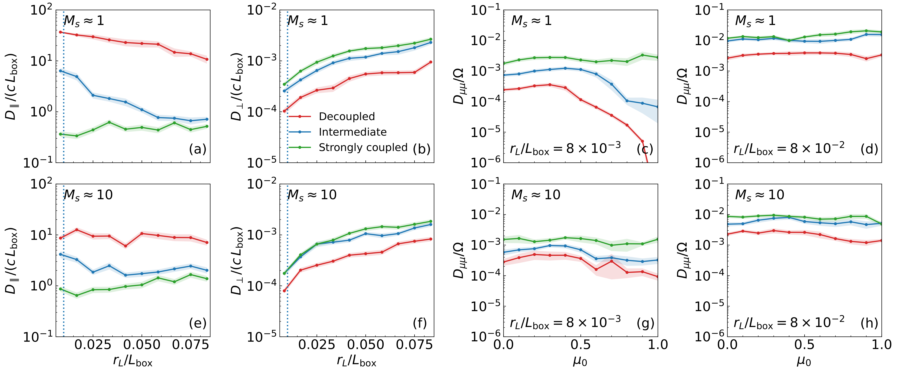
图注：Dimensionless CR transport coefficients in two-fluid turbulence at $M_A\simeq1$. The upper and lower rows show $M_s\simeq1$ and $M_s\simeq10$, respectively. Panels (a, e) and (b, f) give $D_\parallel/(cL_{\rm box})$ and $D_\perp/(cL_{\rm box})$ as functions of $r_L/L_{\rm box}$. Panels (c, d, g, h) give $D_{\mu\mu}/\Omega$ as a function of $\mu_0$ for $r_L/L_{\rm box}\simeq8\times10^{-3}$ and $8\times10^{-2}$ ($r_L=10$ and $100$ cells). Red, blue, and green denote decoupled, intermediate, and strongly coupled runs; shaded regions indicate statistical uncertainties. The blue dotted lines in panels (a, b, e, f) denote the decoupling scale of the intermediate decoupled run.
对应解读：对应“建议重点查看的图表”第2、4、6项，以及“关键图表逐图导读”中关于图2、图4和俯仰角散射诊断的内容。
入选理由：这是最核心的输运诊断图：同时给出跨声速与超声速、不同离子—中性耦合状态下的D_parallel、D_perp随粒子回旋半径变化，以及D_mumu随初始俯仰角变化。它直接检验日报强调的结论：阻尼在M_s≈1时显著提高D_parallel，而在M_s≈10时因激波/压缩结构保留非共振散射，D_parallel增幅被限制在几倍至十倍。阴影不确定度也有助于判断趋势是否显著。
来源与置信度：\(arxiv_source\)；high；\(arxiv_source\) / sample631.tex:figure[3]
Fig04
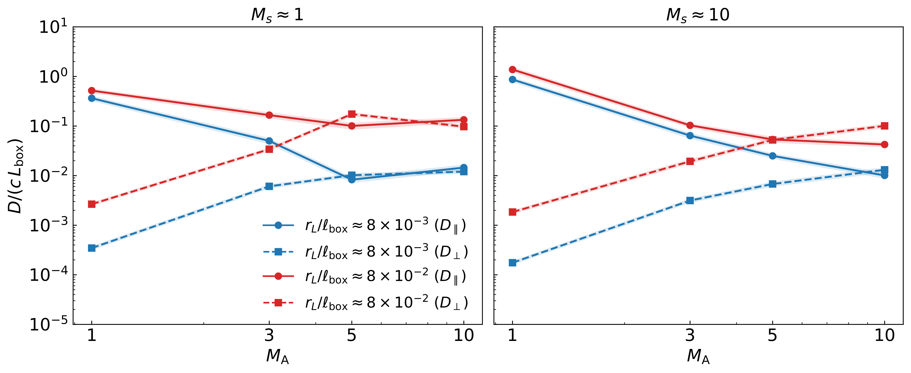
图注：Dimensionless diffusion coefficients as functions of Alfv\'enic Mach number in solenoidally driven single-fluid turbulence. The left and right panels show $M_s\simeq1$ and $M_s\simeq10$, respectively. Solid and dashed curves denote $D_\parallel/(cL_{\rm box})$ and $D_\perp/(cL_{\rm box})$ for $r_L/L_{\rm box}\simeq8\times10^{-3}$ and $8\times10^{-2}$. Increasing $M_A$ reduces $D_\parallel$ and drives $D_\parallel/D_\perp$ toward unity.
对应解读：对应“建议重点查看的图表”第5项，以及“关键图表逐图导读”图5：\(D_parallel\)/D_perp或各向异性随M_A趋向近各向同性。
入选理由：该图直接展示D_parallel和D_perp随阿尔芬马赫数M_A变化，是支撑“\(M_A\)≳5后D_parallel与D_perp趋于相等”的关键证据。相比只展示单个高M_A案例的图，它提供了系统参数扫描，能判断近各向同性是否是随M_A增加的趋势而非偶然点。
来源与置信度：\(arxiv_source\)；high；\(arxiv_source\) / sample631.tex:figure[4]
Fig05
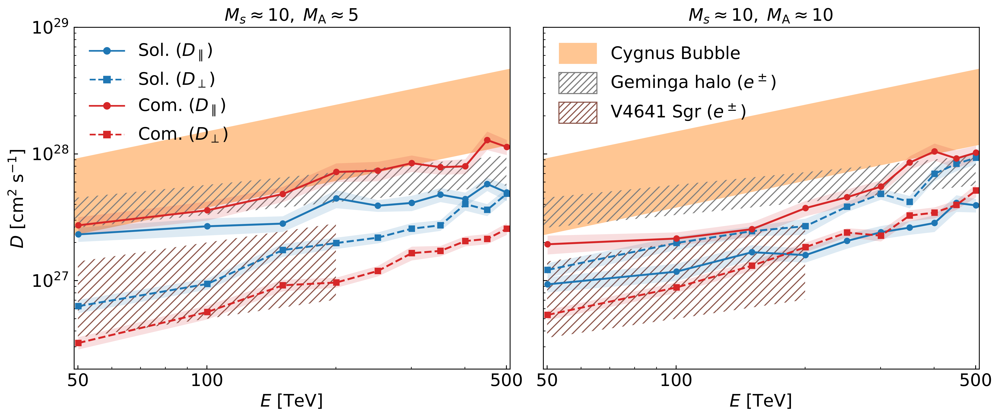
图注：Physical diffusion coefficients for $M_s\simeq10$ turbulence, adopting $L_{\rm box}=1\,\mathrm{pc}$. The left and right panels show $M_A\simeq5$ and $M_A\simeq10$, respectively. Solid and dashed curves denote $D_\parallel$ and $D_\perp$; blue and red denote solenoidal and compressive forcing. Shaded bands indicate representative diffusion ranges inferred for the Cygnus Bubble, the Geminga halo, and the V4641~Sgr microquasar.
对应解读：对应“建议重点查看的图表”第7项，以及“关键图表逐图导读”图6：与观测推断扩散系数范围的物理单位对比。
入选理由：该图把M_s≈10、\(M_A\)≈5和10模型转换为物理扩散系数，并与Cygnus Bubble、Geminga halo、V4641 Sgr等观测推断范围作对比，直接支撑日报中关于10^27–10^28 \(cm^2\) s^-1范围的解读。它也是连接数值模拟与TeV–PeV伽马射线晕观测的最重要图。
来源与置信度：\(arxiv_source\)；high；\(arxiv_source\) / sample631.tex:figure[5]
Fig01
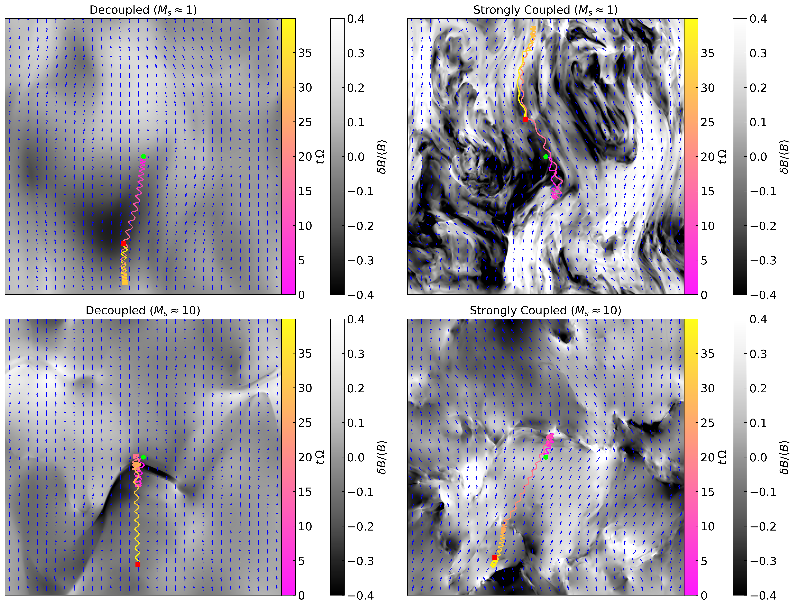
图注：Representative CR trajectories with $r_L/L_{\rm box}=8\times10^{-3}$ ($r_L=10$ cells) overlaid on the normalized magnetic fluctuation $\delta B/\langle B\rangle$ in a slice through each particle's initial position. Blue arrows indicate the in-plane magnetic-field direction. The left and right columns show decoupled and strongly coupled two-fluid turbulence, respectively; the upper and lower rows show $M_s\simeq1$ and $M_s\simeq10$, with $M_A\simeq1$ in all panels. Trajectory color denotes $t\Omega$, and green and red markers indicate the initial and final positions.
对应解读：对应“建议重点查看的图表”第1项，以及“关键图表逐图导读”图1：湍流磁场结构、跨声速与超声速形态差异。
入选理由：该图展示代表性宇宙线轨迹叠加在磁涨落切片上，并比较M_s≈1与M_s≈10、解耦与强耦合两流体湍流。它能直观看到超声速情形中的磁场压缩和结构化扰动，为后续非共振散射和慢扩散解释提供形态背景。
来源与置信度：\(arxiv_source\)；high；\(arxiv_source\) / sample631.tex:figure[1]
Fig02
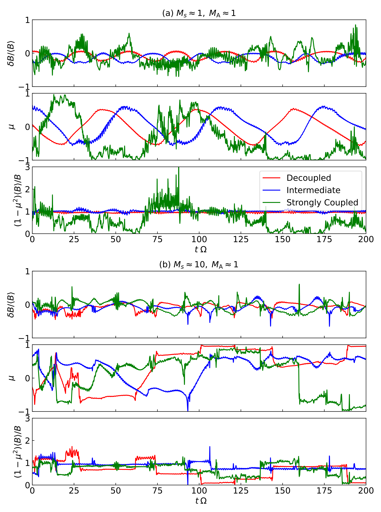
图注：Evolution along the representative trajectories associated with Fig.~\(\ref\) {fig:map}. For $M_s\simeq1$ (left) and $M_s\simeq10$ (right), the panels show $\delta B/\langle B\rangle$, the pitch-angle cosine $\mu$, and the normalized first adiabatic invariant $(1-\mu^2)\langle B\rangle/B$ as functions of $t\Omega$. Red, blue, and green denote decoupled, intermediate, and strongly coupled runs. Approximate conservation of $(1-\mu^2)\langle B\rangle/B$ indicates adiabatic mirror motion, whereas abrupt changes indicate non-adiabatic pitch-angle scattering.
对应解读：对应“建议重点查看的图表”第6项，以及“关键图表逐图导读”中关于俯仰角随机化、绝热镜像运动和非绝热散射的诊断。
入选理由：该图沿Fig01中的代表性轨迹展示δB、俯仰角余弦μ和归一化第一绝热不变量随时间变化，能直接区分绝热镜像运动与突发非绝热俯仰角散射。它对解释超声速湍流中为何阻尼后仍能维持散射尤其有价值。
来源与置信度：\(arxiv_source\)；high；\(arxiv_source\) / sample631.tex:figure[2]
Fig06
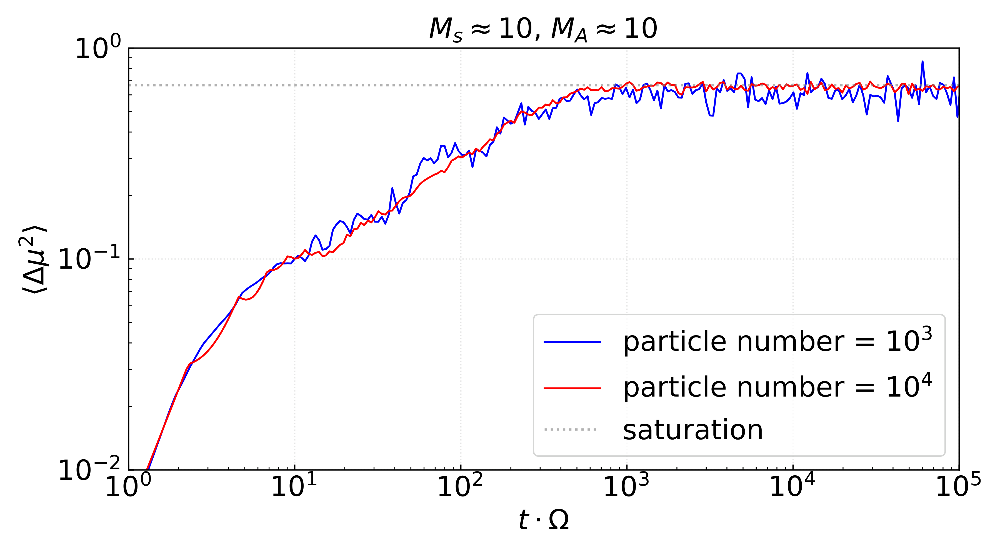
图注：Pitch-angle mean-square variations $\langle(\Delta\mu)^2\rangle$, as a function of the normalized time $t\Omega$ for the $M_{\rm s}\simeq10$ and $M_{\rm A}\simeq10$ simulation. The initial pitch angle distribution is isotropic with $r_L/L_{\rm box}\simeq8\times10^{-3}$. The blue and red curves show results obtained using $10^3$ and $10^4$ particles, respectively. The gray dotted line marks the saturation value.
对应解读：对应“建议重点查看的图表”第6项，以及模型拟合段落中关于测试粒子统计、俯仰角随机化和粒子数系统误差的讨论。
入选理由：该图给出M_s≈10、\(M_A\)≈10条件下俯仰角均方变化随时间的演化，并比较10^3与10^4粒子结果，可用于判断俯仰角扩散/随机化是否达到饱和以及粒子数统计是否稳定。它比Fig02更偏统计收敛诊断，适合作为对俯仰角散射结论的补充。
来源与置信度：\(arxiv_source\)；high；\(arxiv_source\) / sample631.tex:figure[6]
强相关工作
这篇工作与 TeV 晕慢扩散问题直接相关。同类观测包括 HAWC 对 Geminga 和 Monogem 周围扩展 TeV 辐射的研究，以及后来 HAWC、LHAASO、H.E.S.S. 对脉冲星风云、超新星遗迹和候选 PeVatron 周围扩展伽马射线源的统计。检索关键词可用 “TeV halo slow diffusion Geminga HAWC cosmic-ray diffusion”、“LHAASO extended gamma-ray source diffusion”、“pulsar halo anisotropic diffusion”。这些研究提供了本文要解释的观测约束：源附近 \(D\) 低于银河平均，并且形态有时不显示极端磁场各向异性。
基础理论方面，本文连接了宇宙线俯仰角散射、磁流体湍流级联、离子—中性阻尼和超声速湍流结构。相关关键词包括 “cosmic ray scattering ion-neutral damping”、“MHD turbulence super-Alfvenic cosmic ray diffusion”、“nonresonant pitch-angle scattering shocks turbulence”。相反或张力观点主要来自传统准线性理论：若散射依赖共振阿尔芬波，部分电离阻尼应让宇宙线更快沿磁场逃逸。本文的贡献是指出强超声速和强超阿尔芬环境下这个推论不一定成立。
若要追踪同类源或历史原型，可从 Geminga TeV halo、Monogem TeV halo、HAWC extended sources、LHAASO PeVatron candidates 和 CTA TeV halo forecasts 入手。若要追踪理论脉络，可检索 Jokipii cosmic-ray diffusion、Kulsrud Pearce ion-neutral damping、Goldreich Sridhar MHD turbulence、Yan Lazarian cosmic ray scattering 和 recent numerical test-particle MHD turbulence diffusion。
同一事件 / 同类源线索：
相似工作：
基础理论 / 方法工作：
- https://ui.adsabs.harvard.edu/abs/1966RvGSP...4..155J/abstract
- https://ui.adsabs.harvard.edu/abs/1969ApJ...156..445K/abstract
- https://ui.adsabs.harvard.edu/abs/1995ApJ...438..763G/abstract
相反观点 / 张力线索：
4. The large-scale ordered magnetic field in the Galactic halo and the Local Bubble
- 来源：arXiv / astro-ph.HE
- 链接：https://arxiv.org/abs/2608.07679v1
- 作者：Elena Orlando
- 评分：novelty 8/10，importance 8/10，relevance 9/10，final 9.35/10
- 推荐理由：自洽结合宇宙线电子传播和Planck同步辐射偏振，推断银河晕有强有序随机磁场并约束CR传播晕尺度；对宇宙线传播、弥散伽马前景和银河磁场建模都有重要影响。
中文题目：银河晕与本地泡中的大尺度有序磁场
做了什么：这篇文章用 Planck \(30\,\mathrm{GHz}\) 全天同步辐射偏振图，重新估计银河晕中的大尺度有序磁场强度。核心做法不是把宇宙线电子分布当成外部固定输入，而是把宇宙线传播、电子能谱、多频同步辐射约束和最新由法拉第旋转量扣除本地污染后得到的相干磁场几何一起自洽处理。作者发现，仅有旋转量所追踪的相干磁场不足以解释大尺度偏振同步辐射，必须加入峰值约 \(3.2\text{--}4.3\,\mu\mathrm{G}\) 的晕部有序环向磁场；这个有序场比 Xu 与 Han 从旋转量推得的相干场强 \(4\text{--}6\) 倍，说明银河晕里存在显著的“有序随机场”，它贡献同步辐射偏振但在旋转量中大体相消。
为什么重要：银河磁场模型同时影响宇宙线传播、伽马射线前景、CMB 偏振前景、银河外磁场外推以及高能粒子各向异性解释。过去同步辐射给出的磁场强度常受宇宙线电子模型牵制，而旋转量只对视线方向相干场敏感。本文的重要性在于把这两个信息源的物理差异拆开：旋转量测的是带符号的相干分量，同步辐射偏振测的是投影到天球面的有序分量平方。由此得到的结论不是简单“磁场更强”，而是银河晕有一大块此前被旋转量低估的有序随机磁能。
理论 / 观测 / 仪器方法价值：对理论而言，结果要求银河发电机、银河风或晕部湍流模型能产生微高斯量级的环向有序随机场，而不只是一条弱相干螺旋场。对观测而言，它给出用偏振同步辐射校准银河晕磁场的具体路径，也指出把高纬偏振过量归因于本地泡需要非常规参数。对方法而言，文章强调宇宙线电子和磁场不能分开拟合；传播晕高度、电子冷却和磁场强度之间的退化会直接改变从同步辐射反推的磁场。
为什么应该关注：如果你做银河前景、CMB \(B\)-模清除、宇宙线传播、TeV 伽马射线漫辐射或银河磁场建模，这篇文章都值得看。它给出的 \(4\,\mathrm{kpc}\) 传播晕高度偏好、晕部 \(\mu\mathrm{G}\) 级有序环向场，以及“同步辐射强而旋转量弱”这一诊断，都会影响你如何选择银河磁场模板和电子分布模板。
展开详细解读：文章讲解、背景、理论、重点章节、图表与相关工作
文章详细讲解
科学问题：银河系大尺度磁场通常分为相干场、随机场和有序随机场。相干场在大尺度上方向保持一致，因此会在法拉第旋转量中以带符号积分出现；有序随机场在局部方向可反转，但在统计上具有偏好取向，因此能产生偏振同步辐射，却不一定给出强旋转量。本文要解决的问题是：Planck \(30\,\mathrm{GHz}\) 的全天偏振同步辐射是否能被最新旋转量约束的相干磁场和标准宇宙线电子模型解释？如果不能，缺失的是银河晕磁场、本地泡结构，还是宇宙线电子模型？
作者怎么做：文章采用 Xu 与 Han 基于旋转量并修正本地污染后得到的最新相干磁场几何作为基线，然后将其放入宇宙线传播和同步辐射计算框架中。关键点是作者没有任意指定宇宙线电子密度，而是要求模型同时符合直接宇宙线电子测量和多频同步辐射数据。由于电子在银河晕中的分布强烈依赖传播晕高度，作者系统比较不同宇宙线传播晕尺寸，并把这些模型投影成全天 Stokes \(Q\) 与 \(U\) 或偏振强度图，与 Planck \(30\,\mathrm{GHz}\) 大尺度偏振图比较。
关键结果：只使用旋转量追踪的相干磁场时，模型在大尺度同步辐射偏振上显著偏低，形成所谓大尺度同步辐射过量。为解释该过量，作者加入晕部有序环向磁场分量，得到峰值约 \(3.2\text{--}4.3\,\mu\mathrm{G}\)，具体数值随传播晕高度变化。文章还发现，Planck 偏振图更偏好传播晕高度约 \(4\,\mathrm{kpc}\) 的宇宙线模型。由于该有序场比 Xu 与 Han 从旋转量推得的相干场强 \(4\text{--}6\) 倍，最自然解释是银河晕中存在强有序随机场：它能在同步辐射偏振中出现，但在旋转量中因方向反转或符号抵消而弱化。
局限和下一步：结论仍依赖若干建模选择，包括宇宙线源分布、电子注入谱、扩散系数、再加速或对流参数、尘埃与自由自由辐射前景分离、Planck 零点和大尺度系统误差，以及本地泡几何和磁场假设。作者讨论了把过量完全归因于本地泡的可能性，但认为那需要非标准本地泡性质，因此不受青睐。下一步应把更多频率的偏振图、低频 Faraday tomography、脉冲星旋转量、尘埃偏振和更高分辨率三维本地星际介质模型联合起来，检验晕部有序随机场的空间形态是否唯一。
关键结果是怎么做出来的
本文最重要的证据链从样本和数据选择开始：目标数据是 Planck \(30\,\mathrm{GHz}\) 全天同步辐射偏振图，因为该频段在高纬处以同步辐射偏振为主，且受热尘埃偏振污染比更高频段小。作者关注的是大尺度结构而不是小尺度湍流，因此模型比较的重点应是经适当平滑、掩膜和前景处理后的 \(Q\)、\(U\) 或派生偏振强度分布。模型端使用与直接宇宙线电子观测和多频无线电数据相容的传播解，而不是在每个方向上自由调节电子归一化。
事件数这个概念在全天图拟合中对应的是有效像素数或独立角尺度数。由于 Planck 像素之间经过平滑后并不独立，显著性不能简单按像素数开方理解；真正有意义的是大尺度残差图、经协方差或经验误差加权后的 \(\chi^2\) 改善，以及不同传播晕高度和磁场模型之间的相对拟合优度。文章的关键比较是：基线相干场模型在大面积天区系统性低估同步辐射偏振，而加入晕部有序环向场后残差显著减小。
统计上，读者应关注作者如何定义偏振数据向量、噪声或系统误差权重、掩膜区域，以及是否分别比较 \(Q\)、\(U\) 而非只比较正定的偏振强度 \(P=\sqrt{Q^2+U^2}\)。如果只用 \(P\)，噪声偏置和角度信息损失可能会夸大一致性；如果用 \(Q\) 与 \(U\)，则模型必须同时解释偏振振幅和偏振角。本文结论的强处在于过量是大尺度、结构化的，不像局部噪声或少数点源残余。
支撑结论的图表通常应包括：不同传播晕高度下的模型全天偏振图，Planck 数据与模型的残差图，晕部有序场峰值强度随传播晕高度变化的曲线，以及本地泡替代模型的对比图。关键数值是峰值有序环向场 \(3.2\text{--}4.3\,\mu\mathrm{G}\)，以及相对于旋转量相干场的 \(4\text{--}6\) 倍增强。若论文给出模型比较统计量，读者应检查加入有序随机场带来的拟合改善是否超过增加自由参数的惩罚。
主要系统误差包括宇宙线电子注入谱和局部测量代表性、传播晕高度与扩散系数退化、同步辐射谱指数空间变化、Planck 低频通道的零点和泄漏误差、未完全扣除的自由自由和反常微波辐射，以及本地泡壁的磁化壳层贡献。稳健性检验应看作者是否更换传播晕高度、改变本地泡假设、比较多频数据，并检查大尺度残差是否仍要求一个晕部有序环向分量。
本文对 \(4\,\mathrm{kpc}\) 传播晕高度的偏好也要按证据链理解：它不是单靠宇宙线核素比给出的传统传播约束，而是由同步辐射偏振形态和强度对电子垂直分布的敏感性给出的独立约束。若晕高度更大或更小，电子在高纬方向的数量和冷却史会变，所需磁场强度也随之改变。因此这里的偏好本质上是磁场和电子传播联合模型在 Planck 偏振图上的最优折中。
展开背景、理论、公式、模型、章节和图表导读
背景知识
研究对象是银河系的磁场，尤其是盘面外的银河晕磁场。银河磁场并不是单一向量场，而是由相干大尺度分量、各向同性随机湍流分量和有序随机分量叠加而成。相干分量决定带符号的法拉第旋转量，有序随机分量则在方向上有统计排列但可能频繁反转，因此更容易被同步辐射偏振看到而不被旋转量完整追踪。
历史上，银河磁场主要由三类观测约束：脉冲星和河外源旋转量、总强度与偏振同步辐射、尘埃偏振。旋转量对热电子密度和视线方向磁场的乘积敏感，能提供磁场方向反转信息；同步辐射对宇宙线电子和垂直于视线的磁场平方敏感，能约束磁能和有序程度；尘埃偏振主要追踪星际尘埃和冷气体相关区域的磁场方向。不同观测测到的不是同一个物理量，因此把它们直接相互替代是常见误区。
这个问题现在值得重看，原因有三。第一，Planck 提供了高质量全天微波偏振图，使大尺度同步辐射偏振的形态可被系统建模。第二，Gaia 时代的本地星际介质和本地泡三维结构认识改善，使人们可以更认真地区分银河全局信号与本地污染。第三，新的旋转量资料和本地污染修正改变了相干磁场几何的基线模型，重新计算同步辐射预期变得必要。
该领域一个常见误区是认为“旋转量给出的磁场强度”就是“同步辐射需要的磁场强度”。实际上旋转量权重是热电子密度 \(n_e\) 与视线磁场 \(B_{\parallel}\) 的带符号积分，而同步辐射偏振权重是宇宙线电子密度 \(n_{\mathrm{cre}}\) 与天球面磁场分量 \(B_{\perp}\) 的非线性组合。若磁场在小尺度上沿同一轴来回反转，旋转量会抵消，但偏振同步辐射不会同样抵消。
另一个误区是把所有高纬同步辐射异常都归因于本地泡。本地泡确实可能贡献显著偏振结构，特别是在太阳附近低密度腔体和壳层磁场处；但若要解释全天大尺度、环向形态的过量，本地泡模型必须同时满足几何、场强、电子密度和频谱约束。本文认为，把过量完全压到本地泡上需要非标准性质，因此更合理的是银河晕存在强有序随机场。
基础理论 / 方法脉络
基础物理图像是：相对论电子在磁场中绕磁力线回旋并辐射同步辐射。单个电子的辐射集中在与电子能量和垂直磁场强度相关的特征频率附近；一群具有幂律能谱的宇宙线电子会产生近似幂律的无线电到微波同步辐射。偏振方向垂直于投影磁场方向，因此 Stokes \(Q\) 与 \(U\) 保留了天球面磁场几何的信息。
银河磁场分量在观测中的可见性不同。相干场在每个位置有明确方向，既贡献同步辐射偏振，也贡献旋转量。有序随机场具有偏好轴向但符号可能频繁翻转，因此对同步辐射偏振仍然有效，却在法拉第旋转量中显著抵消。各向同性随机场主要增加总强度并造成退偏振，对大尺度有序偏振的贡献较弱。
本文的模型假设可以概括为：先采用由旋转量推断的相干磁场几何作为低阶结构，再求解与该磁场和银河传播参数相容的宇宙线电子分布，然后计算全天同步辐射偏振并与 Planck \(30\,\mathrm{GHz}\) 图比较。传播晕高度 \(z_h\) 是关键量，因为它决定宇宙线电子能在盘面外扩散多远，也决定高纬同步辐射来自多大体积。
观测方法的核心不是只看总亮度，而是比较 Stokes 参数或偏振强度的空间形态。给定电子谱指数，同步辐射亮度大致随 \(n_{\mathrm{cre}} B_{\perp}^{(p+1)/2}\) 增长，其中 \(p\) 是电子能谱指数。因此磁场强度、电子归一化和电子谱指数之间存在明显退化。本文通过直接宇宙线测量和多频同步辐射约束电子模型，试图减少这种退化。
主要系统误差来自三方面。第一，宇宙线电子在太阳附近的直接测量不一定完全代表银河平均，且受太阳调制影响。第二，低频和微波前景分离可能把自由自由、反常微波辐射或尘埃泄漏混入同步辐射模板。第三，本地泡会在高纬产生近邻偏振结构，若其磁场和壳层电子分布建模不足，可能被误判为银河晕信号。
公式与推导
第一步，从相对论电子在磁场中的回旋辐射出发。洛伦兹因子为 \(\gamma\) 的电子在垂直磁场 \(B_{\perp}\) 中的特征同步辐射频率近似为
这里 \(e\) 是电子电荷，\(m_e\) 是电子质量，\(c\) 是光速。这个式子说明，Planck \(30\,\mathrm{GHz}\) 主要选取给定 \(B_{\perp}\) 下某一能段的 \(\mathrm{GeV}\) 量级宇宙线电子。
第二步，若宇宙线电子能谱近似为幂律
其中 \(N(E)\) 是单位体积单位能量电子数密度，\(K\) 是归一化，\(p\) 是谱指数，则同步辐射体发射率可写成标度关系
这一步把观测频率 \(\nu\)、电子密度和磁场强度连接起来，也显示了 \(K\) 与 \(B_{\perp}\) 的退化。
第三步，线偏振发射率可用内禀偏振率 \(\Pi(p)\) 表示：
对典型电子谱，\(\Pi(p)\) 可达几十个百分点，但实际观测会因视线混合、湍流和法拉第效应降低。本文利用的是微波频段，法拉第旋转相对较小，因此更适合追踪大尺度投影磁场。
第四步，沿视线积分得到 Stokes 参数。若偏振角为 \(\psi(s)\)，视线坐标为 \(s\)，则
这里 \(Q_{\nu}\) 和 \(U_{\nu}\) 对磁场方向角敏感，是检验模型几何的关键量。只比较总强度会丢掉 \(\psi\) 的信息。
第五步，对比旋转量。法拉第旋转量为
其中 \(n_e\) 是热电子密度，\(B_{\parallel}\) 是视线方向磁场。若 \(B_{\parallel}\) 符号频繁反转，\(\mathrm{RM}\) 会相消；但同步辐射的 \(B_{\perp}^{(p+1)/2}\) 不会按同样方式相消，这正是有序随机场可被偏振同步辐射发现的原因。
第六步，宇宙线电子分布来自传播方程的稳态近似：
这里 \(D\) 是扩散系数，\(b(E)=-dE/dt\) 是能损率，\(q(E,\mathbf{x})\) 是源项，\(n_e\) 是电子数密度。边界条件通常在 \(|z|=z_h\) 处设定逃逸，因而传播晕高度 \(z_h\) 会直接改变高纬同步辐射预期。
第七步，若用参数 \(A_B\) 表示额外有序环向晕场的幅度，则可把模型数据比较写成
其中 \(\mathbf{d}\) 是 Planck 偏振数据向量，\(\mathbf{m}\) 是模型图，\(\mathbf{C}\) 是噪声和系统误差协方差。最优 \(A_B\) 给出所需有序场强度，比较不同 \(z_h\) 的 \(\chi^2\) 可评估传播晕高度偏好。
第八步，若要判断加入晕部有序场是否值得，可考虑似然比统计量
这里 \(\mathcal{L}_{\mathrm{base}}\) 是只有相干场的似然，\(\mathcal{L}_{\mathrm{halo}}\) 是加入额外有序晕场后的似然。若系统误差处理合理，较大的 \(\Delta\mathrm{TS}\) 表明同步辐射过量不是偶然噪声。
第九步，用一个简化标度可理解为什么推得场强随电子模型变化：
其中 \(B_{\mathrm{ord}}\) 是有效有序场，\(I_{\nu}^{\mathrm{obs}}\) 是观测同步辐射强度。若传播模型给出更高的晕部电子密度 \(K(s)\)，所需磁场会降低；反之则升高。这解释了本文 \(3.2\text{--}4.3\,\mu\mathrm{G}\) 范围为何依赖传播晕高度。
模型拟合 / 应用方法
本文拟合的核心量不是单个光谱点，而是全天偏振图的空间结构。模型参数至少包括宇宙线传播晕高度 \(z_h\)、电子源谱与传播参数、相干磁场几何，以及额外有序环向晕场的幅度和空间分布参数。实际比较时，作者将这些物理参数通过宇宙线传播和同步辐射辐射转移转换为 \(Q\)、\(U\) 或偏振强度图，再与 Planck \(30\,\mathrm{GHz}\) 数据比较。
似然或拟合统计量的关键是误差模型。Planck 低频偏振图的随机噪声不是唯一误差，大尺度前景分离、零点、带通泄漏、掩膜选择、点源残余和本地结构都会贡献系统误差。因此读者在看拟合时，不应只问形式上的 \(\chi^2\) 是否降低，还要看残差是否有物理一致的空间模式：例如高纬或特定经度范围内是否存在系统性欠预测，加入环向晕场后这些模式是否同时消失。
参数退化主要有三组。第一，电子密度归一化与磁场强度退化，因为同步辐射近似依赖 \(K B_{\perp}^{(p+1)/2}\)。第二，传播晕高度 \(z_h\) 与晕部场强退化，因为更大的 \(z_h\) 可能提供更厚的辐射体积。第三，本地泡贡献与银河晕贡献退化，因为两者都可能在高纬产生偏振结构，但它们的角尺度、对称性和频谱行为不同。
模型失败的典型表现包括：能够拟合偏振强度但拟合不了偏振角；在一个半球改善而另一个半球变差；需要与直接宇宙线电子谱冲突的电子归一化；或要求本地泡磁场、壳层厚度、电子密度达到不合理范围。本文的结论之所以有价值，是因为它把旋转量相干场固定为独立观测给出的基线，再显示 Planck 偏振仍有剩余，从而把“缺失磁场分量”的证据变得更清楚。
实际应用上，这类拟合可为 CMB 前景模板提供更物理的先验。若银河晕有 \(\mu\mathrm{G}\) 级有序随机场，那么同步辐射偏振的高纬形态不能只用局部模板外推。对宇宙线研究而言，\(4\,\mathrm{kpc}\) 传播晕高度偏好也提示无线电偏振可作为独立传播约束，与 \(^{10}\mathrm{Be}/^{9}\mathrm{Be}\)、\(\mathrm{B}/\mathrm{C}\) 和伽马射线漫辐射互补。
重点章节 / 结果段落怎么读
数据和基线模型部分应首先读。这里要确认作者使用哪一版 Planck \(30\,\mathrm{GHz}\) 偏振图、如何处理掩膜和平滑、如何分离同步辐射，以及 Xu 与 Han 的旋转量相干磁场模型如何被实现。读者应特别注意本地污染修正后的相干场几何，因为它决定“旋转量能解释多少”。
宇宙线传播模型部分是第二个重点。这里说明电子源项、传播晕高度、扩散和损失如何设定，以及哪些直接宇宙线和多频同步辐射数据用于约束。读者应看不同 \(z_h\) 模型是否都能满足非偏振数据，否则 Planck 偏振对 \(z_h\) 的偏好可能只是先验模型集选择造成的。
同步辐射建模和 Planck 对比部分是论文核心。应重点看模型图、数据图和残差图，而不仅是文字给出的最佳场强。若残差具有大尺度相干结构，并且加入晕部有序环向场后显著减弱，则结论较强；若改善只发生在少数掩膜边缘或局部结构，解释就更脆弱。
本地泡讨论部分需要仔细读。作者将同步辐射过量归因于本地泡的替代解释与银河晕有序场解释相比较，并认为前者需要非标准本地泡性质。读者应检查所谓“非标准”具体指场强、壳层厚度、电子密度、几何取向还是频谱假设。
讨论和结论部分应放在最后读，用来理解物理含义而非寻找新数据。这里的关键是有序随机场与相干场的区别：本文不是推翻旋转量相干场，而是指出旋转量只给出磁场的一部分。银河晕磁能预算、发电机模型和 CMB 前景建模都需要纳入这个差别。
建议重点查看的图表
-
Planck \(30\,\mathrm{GHz}\) 同步辐射偏振数据图：看高纬大尺度结构、掩膜区域、是否展示 \(Q\)、\(U\) 还是偏振强度 \(P\)，以及银河平面附近是否主导拟合。
-
基线相干场模型预测图：看只用 Xu 与 Han 旋转量相干场时，模型在哪些经纬度系统性偏低，偏振角是否也不匹配。
-
数据减模型残差图：这是判断同步辐射过量是否真实的关键。应看残差是否呈大尺度连续形态，而不是局限在点源、掩膜边缘或本地结构。
-
加入晕部有序环向场后的模型和残差图：看残差是否整体收敛，是否引入新的过预测区域，南北半球是否同时改善。
-
最佳有序场强随传播晕高度 \(z_h\) 的变化图或表：看 \(3.2\text{--}4.3\,\mu\mathrm{G}\) 范围如何产生，以及 \(4\,\mathrm{kpc}\) 模型为何被偏好。
-
本地泡替代解释的对比图或参数表：看如果把过量归因于本地泡，需要怎样的场强、几何或电子密度；这些参数是否与独立本地星际介质约束冲突。
-
多频同步辐射或直接宇宙线电子约束图：看电子模型是否被外部数据锁定，避免用任意电子归一化吸收磁场问题。
关键图表逐图导读
图 1：通常应是观测数据或研究区域示意。若图上给出 Planck \(30\,\mathrm{GHz}\) 偏振强度或 Stokes \(Q\)、\(U\) 的全天 Mollweide 投影，横轴是银经、纵轴是银纬，颜色表示亮度或温度单位。读图时要注意颜色条是否线性、是否经过平滑、是否掩掉银河平面和强点源。陷阱是偏振强度 \(P\) 为正定量，低信噪区域会有噪声偏置；若图是 \(Q\)、\(U\)，则正负结构更能检验磁场方向。
图 2：基线模型图通常展示由旋转量相干场和自洽宇宙线电子模型产生的同步辐射偏振。坐标同样是银经和银纬，模型线或色块对应预测亮度。应比较它与图 1 的高纬亮度和形态是否一致。主要结论若是模型系统性偏低，读者要确认偏低不是只出现在掩膜边缘或少数局部泡状结构。
图 3：残差图是关键诊断，通常为数据减模型。颜色接近零表示模型好，成片正残差表示模型低估观测。读者应看残差是否沿大尺度环向或双极结构分布，这会支持银河晕场解释；若残差与本地泡壁、北极支或 Loop I 等局部结构高度重合，则本地解释仍需严肃考虑。
图 4：加入额外有序环向晕场后的最佳拟合图应显示模型改善。若图中有多条模型线或多个面板，横向比较不同场强或不同传播晕高度。关键读法是看振幅和偏振角是否同时改善，而不是仅靠提高整体亮度。陷阱是强行增加 \(B_{\perp}\) 可能拟合高纬，却在中纬或银河平面附近过预测。
图 5：参数约束图或 \(\chi^2\) 曲线通常以传播晕高度 \(z_h\) 或有序场峰值为横轴，拟合优度、残差均方或似然为纵轴。应看最低点是否清楚、置信区间是否宽、不同系统误差处理下最低点是否仍在 \(4\,\mathrm{kpc}\) 附近。若曲线很平，所谓偏好应理解为温和偏好而非精确测量。
图 6：本地泡解释图若存在，通常展示本地泡壳层几何或其同步辐射贡献。读者应看其空间模板是否与残差真正重合，以及所需物理参数是否超出常规本地泡模型。陷阱是本地泡可以解释若干局部高纬特征，但未必能解释全天大尺度对称的偏振过量。
图 7：外部约束图可能展示宇宙线电子谱、多频无线电亮度或同步辐射谱指数。横轴可能是能量或频率，纵轴是通量、亮温或谱指数。关键是看模型是否同时通过这些外部检验；如果电子谱已被数据限定，那么剩余偏振过量更有理由归因于磁场，而不是任意调电子。
论文原图 / 可嵌入图片
Fig04
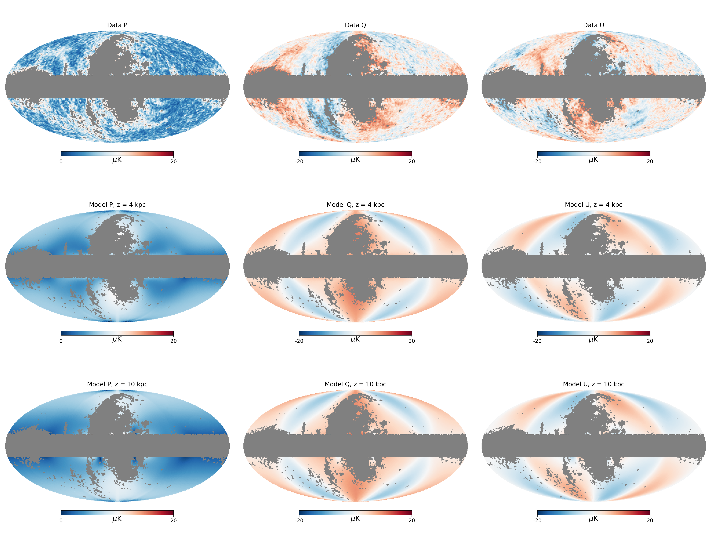
图注：{\(\it\) Planck} synchrotron maps (top row) and our all-sky synchrotron prediction maps for both best-fit models with \(z = 4~\mathrm{kpc}\) (second row) and \(z = 10~\mathrm{kpc}\) (bottom row) in Mollweide projection and at 30~GHz. Left to right: polarized intensity $P$, Stokes $Q$, and Stokes $U$. The colorscale is the same for Stokes $Q$ and $U$, while is positive only for P. The gray region is masked.
对应解读：对应“建议重点查看的图表”第1、2、4项，以及“关键图表逐图导读”中关于Planck 30 GHz偏振数据、基线/最佳模型预测和不同传播晕高度对比的部分。
入选理由：这张图同时给出Planck 30 GHz全天同步辐射偏振观测与模型预测，并分成偏振强度P、Stokes Q、Stokes U三个诊断量，直接支撑日报中关于高纬大尺度结构、Q/U符号形态、掩膜区域以及z=4 kpc和z=10 kpc模型差异的解读。它是判断模型是否能同时拟合振幅和偏振方向的核心图。
来源与置信度：\(arxiv_source\)；high；\(arxiv_source\) / ms.tex:figure[4]
Fig05
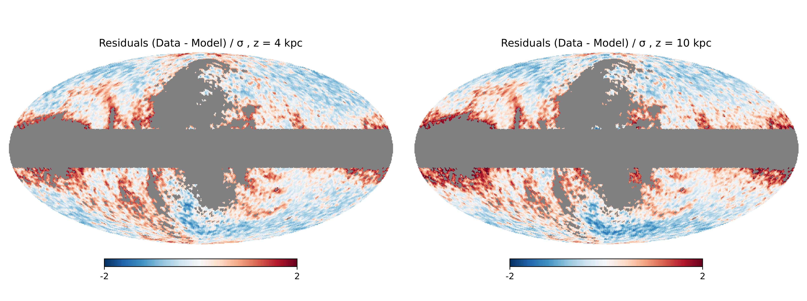
图注：Polarized residual maps for the two best-fit models with \(z = 4~\mathrm{kpc}\) (top map) and \(z = 10~\mathrm{kpc}\) (bottom map).
对应解读：对应“建议重点查看的图表”第3项，以及“关键图表逐图导读”图3关于数据减模型残差是否呈大尺度连续形态的部分。
入选理由：残差图是验证同步辐射过量是否真实存在的关键诊断。该图直接展示两个最佳拟合传播晕高度模型的偏振残差，可用于判断模型欠预测是否是全天大尺度结构，而非点源、掩膜边缘或局部结构造成，因此科学价值最高。
来源与置信度：\(arxiv_source\)；high；\(arxiv_source\) / ms.tex:figure[5]
Fig06
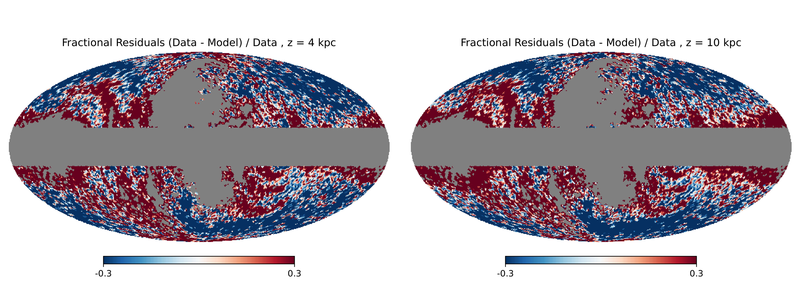
图注：Polarized fractional residual maps for the two best-fit models with \(z = 4~\mathrm{kpc}\) (top map) and \(z = 10~\mathrm{kpc}\) (bottom map).
对应解读：对应“模型拟合”中关于误差模型、系统性残差和不同区域相对偏差的讨论，也补充“关键图表逐图导读”中残差是否整体收敛的判断。
入选理由：相比绝对残差， fractional residual 能显示模型在哪些区域相对偏差最大，帮助判断改进是否只来自亮区权重，或是否在高纬、中纬、南北半球同时改善。它对识别系统误差和空间模式非常有用。
来源与置信度：\(arxiv_source\)；high；\(arxiv_source\) / ms.tex:figure[6]
Fig02
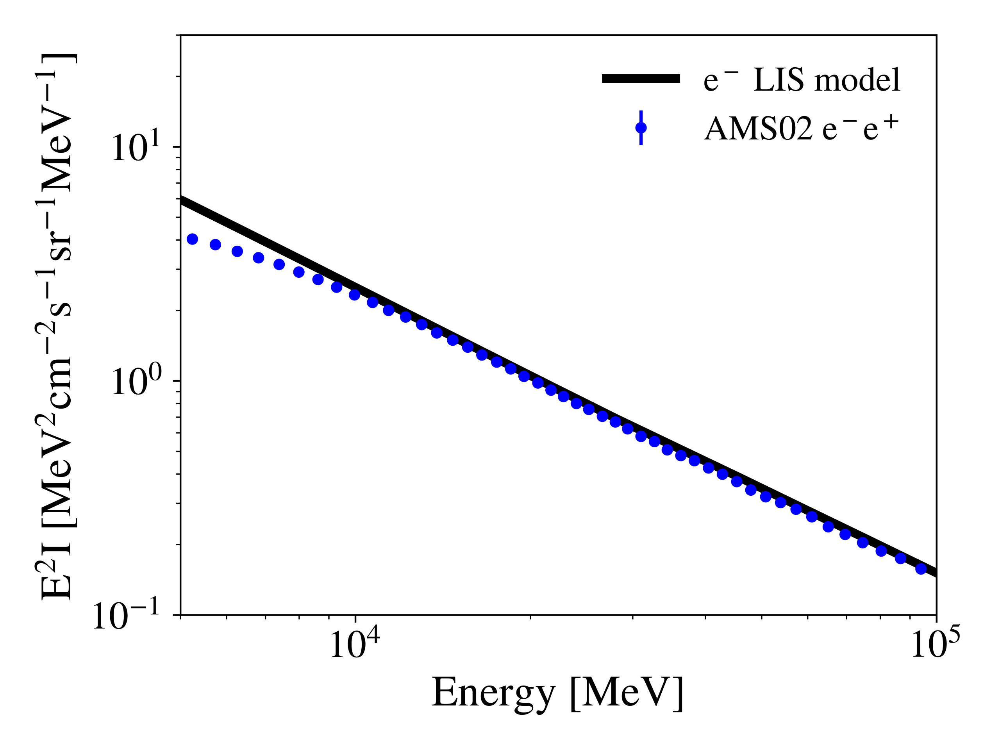
图注：Propagated interstellar CRe spectrum of the best-fit model compared with AMS-02 CRe data from \(\citep{AMS02}.\)
对应解读：对应“建议重点查看的图表”第7项，以及“关键图表逐图导读”图7关于直接宇宙线电子约束的部分。
入选理由：该图将传播后的星际宇宙线电子谱与AMS-02数据比较，直接支撑日报强调的核心前提：电子模型受到外部数据约束，不能任意调节电子归一化来吸收磁场问题。因此它能强化将偏振过量归因于缺失磁场分量的论证。
来源与置信度：\(arxiv_source\)；high；\(arxiv_source\) / ms.tex:figure[2]
Fig03
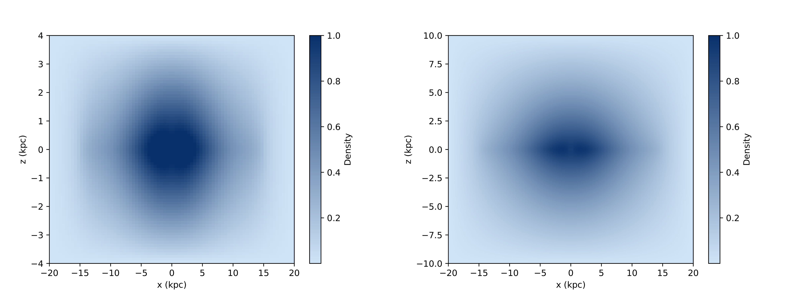
图注：Spatial distribution of CRe at 20 GeV after propagation for the section through the 3D model, in x and z directions for y=0. Upper plot: model with halo size 4 kpc; lower plot: model with halo size 10 kpc. The density has arbitrary units and has the same normalization for both models.
对应解读：对应“建议重点查看的图表”第5、7项，以及“模型拟合”中传播晕高度zh与晕部场强退化的讨论。
入选理由：该图比较z=4 kpc与z=10 kpc传播晕模型下20 GeV宇宙线电子在x-z截面的空间分布，能够解释为什么不同传播晕高度会改变同步辐射体积和所需磁场强度。虽然它不是直接的chi方曲线或场强约束图，但对理解zh依赖很重要。
来源与置信度：\(arxiv_source\)；high；\(arxiv_source\) / ms.tex:figure[3]
Fig01
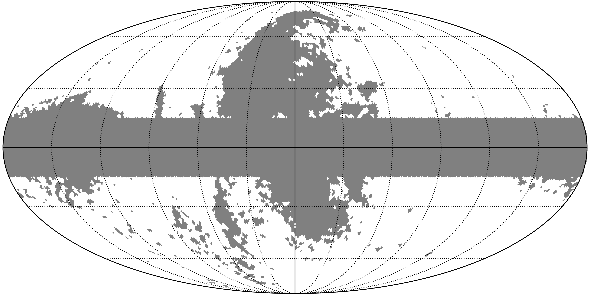
图注：Mask used for this work.
对应解读：对应“建议重点查看的图表”第1项中关于掩膜区域、银河平面和点源/污染区域是否参与拟合的说明。
入选理由：该图只展示本文使用的掩膜，本身不包含观测量、模型线或残差，但它决定了哪些天区进入Planck偏振图与模型的比较。对于判断残差是否受银河平面、强源或局部污染影响仍有辅助价值。
来源与置信度：\(arxiv_source\)；high；\(arxiv_source\) / ms.tex:figure[1]
强相关工作
这篇工作与银河磁场全局模型文献直接相连，特别是 Jansson 与 Farrar 这类用同步辐射和旋转量联合建立银河磁场模型的工作，以及近年利用更大旋转量样本修正本地污染后重建相干场的研究。检索关键词可用 “Galactic magnetic field coherent ordered random field synchrotron polarization rotation measures”、“Xu Han Galactic halo magnetic field rotation measures”、“Planck 30 GHz synchrotron polarization Galactic magnetic field”。
它也与宇宙线传播晕高度的长期争论有关。传统约束来自次级初级核素比、放射性同位素、漫伽马射线和无线电同步辐射；本文强调偏振同步辐射也能给出传播晕高度信息。相关检索关键词包括 “cosmic-ray propagation halo height synchrotron polarization”、“GALPROP cosmic ray electrons synchrotron”、“radio constraints cosmic ray halo height”。
潜在相反观点主要是本地结构解释，例如本地泡、Loop I、北极支或局部磁化壳层导致高纬偏振异常。要评估这种张力，应检索 “Local Bubble synchrotron polarization”、“Loop I microwave polarization”、“local interstellar magnetic field Planck polarization”。本文的立场是本地泡可能贡献一部分，但若解释全部过量，需要非标准本地泡性质。
同一事件 / 同类源线索：
相似工作：
基础理论 / 方法工作：
- https://galprop.stanford.edu/
- https://arxiv.org/abs/astro-ph/9807150
- https://arxiv.org/abs/1009.5305
相反观点 / 张力线索：
5. Unsupervised Domain Adaptation for Multitask Image Analysis in Realistic Context with Extreme Label Shift; Application to the CTAO first Large Sized Telescope
- 来源：arXiv / astro-ph.IM
- 链接：https://arxiv.org/abs/2608.09630v1
- 作者：Michaël Dell'aiera, Thomas Vuillaume, Alexandre Benoit
- 评分：novelty 7/10，importance 7/10，relevance 10/10，final 9.05/10
- 推荐理由：面向CTAO首台LST的无监督域适应和多任务图像分析，处理真实观测中的极端标签偏移；IACT/CTA方法论文，且代码结果开放，值得关注。
中文题目：面向真实类别偏移的无监督域自适应多任务图像分析：应用于 CTAO 首台大型望远镜
做了什么：这篇文章研究一个很实际的仪器数据分析问题：用有标签的模拟或源域数据训练出的深度模型，怎样迁移到没有标签、且类别比例严重不同的目标域数据。作者把无监督域自适应和多任务学习放在同一框架下，重点考察极端标签偏移对分类、回归或图像分析任务的影响，并以 Cherenkov Telescope Array Observatory 的首台 Large-Sized Telescope 数据场景作为物理应用。主要结论是，常规域对齐方法在类别先验严重改变时可能被误导，必须显式处理重要性加权和任务平衡，否则模型看似学到了域不变特征，实际会牺牲稀有类或关键物理性能。
为什么重要：CTAO 这类切伦科夫望远镜高度依赖模拟训练：空气簇射、望远镜响应、夜天背景、触发和重建链条都很难在真实观测中获得完备标签。无监督域自适应如果能可靠工作，就能减少模拟—实测差异带来的能量重建、粒子分类和事件选择偏差。但本文强调，在天文仪器数据中常见的极端类别不平衡和标签偏移会让标准机器学习迁移方法失效，这一点对 CTAO 未来大规模自动化分析尤其关键。
理论 / 观测 / 仪器方法价值：本文的价值不在于提出一个单一神经网络技巧，而在于把域自适应、任务损失平衡、类别先验偏移和 CTAO-LST 物理图像分析放进同一个可复现实验框架。对方法学读者，它给出如何比较不同无监督域自适应策略、如何加入重要性权重、如何诊断负迁移的路线。对仪器和观测读者，它提醒：模拟到观测的迁移不能只看整体准确率，还要看类别条件性能、物理量残差、稀有事件效率和系统偏差。
为什么应该关注：如果你关心 CTAO、LST、IACT 图像重建或天文机器学习，这篇文章值得看，因为它触及一个常被低估的问题：真实观测目标域不只是图像分布变了，类别比例也变了。一个在验证集上表现漂亮的模型，可能只是学会了目标域的主导类别，而不是学会了可迁移的切伦科夫图像物理。本文提供的框架和开源结果可作为以后做模拟—观测迁移、半监督训练和系统误差评估的基准。
展开详细解读：文章讲解、背景、理论、重点章节、图表与相关工作
文章详细讲解
科学问题：这篇文章面对的是 Cherenkov Telescope Array Observatory 首台 Large-Sized Telescope 图像分析中非常典型的“模拟训练、真实应用”困境。IACT 图像分析通常需要从相机图像中完成多个任务，例如区分伽马射线诱发簇射和强子背景、估计入射能量或方向、提取图像形态等。训练标签主要来自 Monte Carlo 模拟，而目标域可能是实测数据或另一套观测条件下的数据。源域与目标域存在域偏移，且类别比例可能极端不同，例如背景事件远多于伽马候选事件。标准无监督域自适应默认域差异主要来自特征分布变化，但当天文数据同时存在强标签偏移时，这个假设会变得危险。
作者怎么做：文章把无监督域自适应和多任务学习结合起来。无监督域自适应利用有标签源域和无标签目标域，通过额外的域判别、分布匹配或对齐损失，让特征提取器学习更接近“域不变”的表示。多任务学习则把多个物理或图像分析任务整合进一个网络，并引入任务损失平衡，避免某个任务或某类样本支配训练。作者特别在“现实且困难”的极端类别不平衡环境下评估这些方法，并进一步研究重要性加权，用目标域和源域之间的类别先验差异修正训练目标。
关键结果：本文强调，域自适应在标签偏移存在时并不自动可靠。若目标域类别先验与源域相差很大，简单地让边缘特征分布对齐可能把不同类别混在一起，导致分类边界偏移，甚至出现负迁移。重要性加权可以部分修正这一问题，因为它把源域中每类样本对损失的贡献按目标域先验重新加权。多任务平衡同样重要，因为分类、回归、域判别等损失的尺度和梯度方向不同，不合理的权重会让网络优化到一个统计上“对齐”但物理上有偏的解。
局限和下一步：从摘要可知，本文主要提供框架、比较和 CTAO-LST 场景验证，但具体性能仍取决于目标域无标签样本是否足够代表真实观测、类别先验是否可估、模拟是否覆盖关键仪器状态以及网络是否能分离物理变化与仪器变化。下一步值得关注的是：在真实 LST 或 CTAO 早期数据上做端到端验证；把不确定度传播到能谱、光变曲线和源显著性；把标签偏移估计和观测选择函数联合建模；以及用开源代码复现实验，检查这些方法在不同夜天背景、天顶角、偏轴角和触发配置下是否稳定。
关键结果是怎么做出来的
这篇文章最重要的证据链从样本构造开始：源域是带标签的训练数据，目标域是无标签数据，两者在图像分布和类别比例上都不同。CTAO-LST 场景下，源域很可能代表物理模拟或某一组模拟条件，目标域代表另一组更接近真实观测的条件。核心不是单纯比较一个分类准确率，而是系统地制造或利用极端标签偏移，使源域类别先验 \(p_s(y)\) 与目标域类别先验 \(p_t(y)\) 明显不同，然后观察不同自适应算法的稳定性。
事件数和类别比例虽然摘要未给出具体数值，但文章的问题设置要求读者重点看每个实验表格中的源域样本数、目标域样本数、每类比例、训练/验证/测试划分，以及是否对稀有类保留了足够统计量。若一个方法在总体指标上提升，但在少数类召回率、伽马效率或强子误判率上恶化，那么这在 CTAO 分析中不能算成功。读者应特别关注作者是否报告了宏平均指标、类条件指标和任务条件指标，而不仅是按样本数加权的总体损失。
显著性和置信度方面，这类机器学习仪器论文通常不是用单一天体物理发现显著性来论证，而是用多次训练、不同随机种子、不同域偏移强度和不同标签偏移强度下的性能分布来建立稳健性。本文提到比较若干相关适应技术，并扩展重要性加权调查，因此关键表格应当包含基线模型、无自适应模型、若干域自适应模型、加入任务平衡后的模型、加入标签偏移校正后的模型之间的成对比较。读者要看均值、标准差或置信区间，而不是只看最佳一次运行。
统计和模型比较的核心应是训练目标的组成：监督源域任务损失、目标域无监督对齐损失、域判别损失或分布距离、以及任务平衡项。若使用重要性加权，关键诊断是权重 \(w_y=p_t(y)/p_s(y)\) 的估计误差如何影响最终性能。支持主要结论的图表通常应包括：不同标签偏移强度下的性能曲线、特征嵌入可视化、类别混淆矩阵、任务损失随训练轮次变化、以及物理量残差分布。
主要系统误差来自四个方面。第一，目标域类别先验未知，若估计错误，重要性权重会放大噪声。第二，域判别器或分布匹配损失可能对齐的是背景主导的特征，而不是伽马—强子分离所需的特征。第三，多任务损失权重会改变梯度竞争，导致某个任务受益、另一个任务退化。第四，模拟本身可能漏掉真实仪器效应，例如相机增益漂移、坏像素、夜天背景变化或大气透明度变化。稳健性检验应包括不同偏移强度、不同目标域大小、不同随机种子、去除或替换某个自适应模块、以及对类条件指标的检查。
展开背景、理论、公式、模型、章节和图表导读
背景知识
IACT 图像分析的基本对象是大气切伦科夫光相机图像。高能伽马射线或宇宙线进入大气后产生级联簇射，带电次级粒子发出切伦科夫光，望远镜相机记录为短暂的二维像素图案。传统分析依赖 Hillas 参数等手工特征，现代分析越来越多使用卷积神经网络或图神经网络直接处理相机图像。CTAO 的 Large-Sized Telescope 主要面向较低能段阈值，对触发、噪声和图像形态变化更敏感。
历史上，IACT 分析几乎总是依赖大量模拟，因为真实伽马事件无法逐个获得完美标签，强子背景也难以完全用观测数据标注。模拟可以提供入射能量、方向、粒子类型等真值，但模拟与真实观测之间存在系统差异。过去这些差异常通过质量选择、响应矩阵、背景控制区和系统误差预算处理；深度学习引入后，问题变成了网络是否会把模拟特有特征当成物理特征。
无监督域自适应是机器学习中解决“有标签源域到无标签目标域”迁移的一类方法。它通常假设可以学到一个特征表示，使源域和目标域在该表示下分布相近，同时保留源域标签预测能力。这个思路对天文仪器很有吸引力，因为真实观测可以提供大量无标签目标域样本。但在天文和粒子物理中，目标域事件构成往往与模拟训练集差别巨大，特别是稀有信号和海量背景之间的比例差异。
为什么现在值得重新看：CTAO 将产生更大规模、更复杂状态空间的数据，手工调校每个观测条件下的响应和分类器越来越困难。早期 LST 数据和模拟之间的差异为方法开发提供了现实压力。与此同时，深度学习社区的域自适应方法很多，但多数基准数据集的类别比例变化远没有 CTAO 场景极端。把这些方法直接搬到天文仪器分析中，可能得到误导性的乐观结论。
一个常见误区是把“域对齐”理解为一定有利。事实上，如果源域和目标域的类别先验不同，边缘分布 \(p(x)\) 的对齐可能与条件分布 \(p(y\mid x)\) 的保持相冲突。另一个误区是只报告总体准确率或总体损失。在背景压倒信号的场景中，总体指标可能主要反映背景类表现，而物理上最重要的伽马效率、能量偏差或源检出显著性反而被掩盖。
基础理论 / 方法脉络
从物理图像看，LST 相机图像是入射粒子类型、能量、方向、冲击参数、大气状态和望远镜响应共同作用的结果。机器学习模型看到的是像素强度和时序等观测量，而不是这些物理因子的真值。分类任务希望从图像中判断事件更像伽马射线还是强子背景；回归任务可能估计能量、方向或其他连续物理量；域自适应任务则试图消除模拟条件和目标观测条件之间的非物理差异。
无监督域自适应的基础假设是：有一个源域分布 \(p_s(x,y)\) 和目标域分布 \(p_t(x,y)\)，源域标签 \(y\) 可用，目标域标签不可用。模型由特征提取器 \(f_\theta(x)\)、任务头 \(g_\phi\) 和可能的域判别器 \(d_\psi\) 组成。训练时既要让 \(g_\phi(f_\theta(x_s))\) 在源域上预测正确，又要让 \(f_\theta(x_s)\) 与 \(f_\theta(x_t)\) 在某种意义上不可区分。
本文特定困难在于标签偏移。若 \(p_s(y)\neq p_t(y)\)，但类条件分布 \(p(x\mid y)\) 相对接近，理论上可以通过重要性加权修正源域风险。若反过来 \(p_s(x\mid y)\) 与 \(p_t(x\mid y)\) 也显著不同，则重要性加权只能解决部分问题，还需要特征层面的域自适应。极端不平衡会放大这个矛盾：主导背景类决定了边缘分布，而少数信号类决定了许多关键科学性能。
多任务学习引入另一个层次。分类损失、回归损失和域对齐损失的数值尺度、梯度大小和收敛速度不同。若直接相加，网络可能优先优化最容易降低的损失，而不是最重要的物理目标。因此需要任务平衡，例如固定权重、动态权重、基于不确定度的权重或基于梯度范数的权重。本文关注的是在这些任务平衡策略与域自适应策略共同存在时，标签偏移如何改变结论。
常见退化和系统误差包括：类别先验偏移与条件分布偏移难以分离；目标域无标签样本中可能混有未知类别或异常观测状态；域判别器无法保证类条件对齐；重要性权重在稀有类上方差很大；物理选择函数会把训练集和科学分析样本变成不同分布。实际应用中，模型评价必须连接到仪器响应和科学产品，而不能只停留在机器学习指标。
公式与推导
第一步，把源域和目标域写成两个联合分布。设图像或特征输入为 \(x\)，标签或任务真值为 \(y\)，源域和目标域分别为 \(p_s(x,y)\) 与 \(p_t(x,y)\)。监督学习在源域上最小化经验风险：
这里 \(f_\theta\) 是特征提取器，\(g_\phi\) 是任务头，\(\ell\) 是分类或回归损失。若直接把最小化 \(R_s\) 的模型用于目标域，隐含假设是源域和目标域足够相似。
第二步，真正关心的是目标域风险：
无监督域自适应的难点是目标域 \(y\) 不可见，不能直接计算 \(R_t\)。因此方法需要借助无标签 \(x_t\sim p_t(x)\) 的分布信息，再用源域标签保持任务可辨识性。
第三步，若主要差异是标签偏移，即 \(p_s(y)\\)
eq \(p_t(y)\))，并近似假设 \(p_s(x\mid y)\approx p_t(x\mid y)\)，则目标域风险可由加权源域风险估计：
这里 \(w_y\) 是重要性权重。它的物理含义是：如果目标域中某类事件比例更高，那么源域中该类样本在训练中应贡献更大；如果更低，则贡献应降低。
第四步，域自适应常加入域判别损失。令域标签 \(d=0\) 表示源域，\(d=1\) 表示目标域，域判别器输出 \(D_\psi(f_\theta(x))\)。二分类域损失可写为：
判别器 \(D_\psi\) 试图区分域，特征提取器 \(f_\theta\) 则通过梯度反转或对抗优化让域不可区分。
第五步，综合任务损失和域损失，可写成极小极大目标：
其中 \(\lambda_{\rm dom}\) 控制域对齐强度。若 \(\lambda_{\rm dom}\) 太小，模型几乎不适应目标域；若太大，模型可能牺牲类别可分性来追求边缘分布对齐。
第六步，多任务设置下，任务损失通常是多个分量的加权和：
其中 \(K\) 是任务数，\(\mathcal{L}_k\) 可以是粒子分类、能量回归、方向回归或图像辅助任务损失，\(\alpha_k\) 是任务权重。本文关心的任务平衡就是如何选择或学习这些 \(\alpha_k\)，使各任务不会互相压制。
第七步，加入标签偏移校正后，分类任务可写成加权交叉熵：
这里 \(N_s\) 是源域样本数，\(C\) 是类别数，\(\hat{p}_{ic}\) 是模型给第 \(i\) 个样本属于类别 \(c\) 的预测概率。该式显示，稀有或目标域更重要的类别可以被显式放大。
第八步，若模型输出连续物理量，例如能量 \(E\)，常看相对残差：
这里 \(\hat{E}\) 是重建能量，\(E_{\rm true}\) 是模拟真值。域自适应是否有用，不仅要看分类准确率，还要看 \(\Delta_E\) 的均值是否接近零、宽度是否变窄、以及在不同能量或观测条件下是否稳定。
第九步，对于二分类事件选择，科学分析常进一步关心效率和误判率：
\(\epsilon_\gamma\) 是伽马保留效率，\(\epsilon_{\rm bkg}\) 是背景通过率。极端标签偏移下，一个模型可能通过降低 \(\epsilon_\gamma\) 获得较高总体准确率，但这会直接损害源探测灵敏度。
第十步，在天体源检出层面，粗略显著性可用信号数与背景涨落比较表示：
这里 \(N_{\rm on}\) 是源区计数，\(N_{\rm off}\) 是背景控制区计数，\(\eta\) 是曝光或接受度归一化因子。机器学习模型改变 \(\epsilon_\gamma\) 和 \(\epsilon_{\rm bkg}\)，最终会改变 \(N_{\rm on}\)、\(N_{\rm off}\) 和 \(S\)。这就是为什么本文讨论的域偏移和标签偏移不是纯算法问题，而会传导到 CTAO 的科学灵敏度。
模型拟合 / 应用方法
这类工作中的“拟合”主要是神经网络参数估计，而不是传统天体物理模型拟合。参数包括特征提取器权重 \(\theta\)、任务头权重 \(\phi\)、域判别器权重 \(\psi\)，以及可能存在的任务平衡权重 \(\alpha_k\) 或域损失权重 \(\lambda_{\rm dom}\)。训练数据由带标签源域样本和无标签目标域样本组成，优化目标是监督任务损失、无监督对齐损失和任务平衡项的组合。
似然或损失的选择决定了模型偏好。分类通常用交叉熵，回归可用均方误差、平均绝对误差或对数能量残差损失，域判别可用二分类交叉熵，分布匹配可用最大均值差异或相关矩阵差异等统计距离。若引入重要性加权，每个源域样本的损失会乘以与类别有关的权重。这个权重可以来自已知实验设定，也可以通过目标域预测分布估计；后一种情况下，权重本身带有模型误差。
参数退化非常突出。域损失权重 \(\lambda_{\rm dom}\) 与任务权重 \(\alpha_k\) 之间存在竞争：更强的域对齐可能降低源域分类边界清晰度；更强的分类损失可能保留源域特有特征而削弱迁移。标签权重 \(w_y\) 与类别条件分布偏移也退化：性能变化究竟来自类别先验修正，还是来自对某些目标域图像形态的过拟合，需要通过类条件指标和特征可视化区分。
残差诊断应从机器学习指标扩展到物理指标。分类应看混淆矩阵、接收者操作特征曲线、精确率—召回率曲线和按能量分箱的伽马效率。回归应看 \(\Delta_E\) 或方向残差的均值、宽度和尾部。域自适应应看源域与目标域在嵌入空间中的分离程度，但不能把“完全混合”当作充分条件，因为不同类别被错误混合也会让域判别器失败。
模型可能失败的方式包括负迁移、权重爆炸、少数类过拟合和目标域异常状态污染。负迁移表现为加入自适应后目标域指标反而下降。权重爆炸常发生在 \(p_s(y)\) 很小或 \(p_t(y)\) 估计不稳定时。少数类过拟合会让验证集不稳定，尤其在极端不平衡场景。目标域若包含源域中没有模拟的仪器状态，域对齐可能把这些异常状态硬拉到错误类别附近。
实际应用中，比较模型不能只挑最高平均分。更合理的是把模型作为分析链的一部分评价：在不同观测条件下训练和测试；把输出分数转化为事件选择；计算有效面积、能量偏差、能量分辨率和背景率；最后评估对源显著性、能谱和系统误差预算的影响。本文的框架价值正在于提醒读者把域自适应性能放回 CTAO 数据分析的物理闭环中。
重点章节 / 结果段落怎么读
数据和问题设置部分应优先阅读。读者需要弄清楚源域和目标域分别是什么，标签如何获得，哪些任务被纳入多任务框架，类别不平衡和标签偏移如何构造或测量。特别要看是否明确区分了特征偏移、标签偏移和极端类别不平衡，因为这三者混在一起会让结论难以解释。
方法部分的重点是统一框架。建议读者把网络结构拆成特征提取器、任务头、域适应模块和任务平衡模块四块来读。每个模块对应什么损失、损失权重如何设置、是否动态更新、重要性权重如何估计，是判断结果可复现和可解释的关键。
比较实验部分是论文的核心。这里应关注基线模型与若干域自适应技术的横向比较，尤其是在无标签目标域、强类别偏移和多任务训练同时存在时的表现。不要只看最终分数，要看不同偏移强度、不同任务、不同类别上的趋势是否一致。
重要性加权和标签偏移分析部分应作为主结果阅读。作者强调极端标签偏移的影响，并扩展重要性加权调查，因此这一部分很可能展示了常规域对齐为何失败、加权何时有效、何时仍然不够。读者应检查权重估计误差、权重截断或正则化是否被讨论。
讨论和稳健性检验部分决定这项工作能否迁移到真实 CTAO 分析。重点看作者如何处理随机种子、样本量、类别比例、目标域大小、任务权重和不同自适应算法的敏感性。若附录包含完整结果或开源复现实验配置，应优先用于核查主文结论是否依赖少数设置。
建议重点查看的图表
-
数据分布和类别比例图：看源域与目标域的类别先验 \(p_s(y)\) 和 \(p_t(y)\) 相差多大，是否达到了论文所称的极端标签偏移。
-
方法框架图：看特征提取器、任务头、域判别器、任务平衡模块和重要性加权分别接在哪里，训练时哪些梯度会反向传播到共享特征。
-
不同方法的性能汇总表：比较无自适应基线、标准域自适应、多任务平衡、加入重要性加权后的模型。重点看均值和离散度，而不是单个最佳值。
-
标签偏移强度扫描图：横轴通常应是目标域类别比例或偏移强度，纵轴是分类、回归或综合指标。关键是看哪些方法在偏移增强时退化最快。
-
类条件混淆矩阵或精确率—召回率图：检查少数类是否被牺牲。对于 CTAO 场景，伽马效率和背景误判率比总体准确率更有物理意义。
-
特征嵌入可视化或域判别诊断：看源域和目标域是否混合，以及这种混合是否按类别保持结构。读图陷阱是把不同类别混成一团误认为好对齐。
-
物理量残差图：若包括能量或方向回归，应看残差均值、宽度和尾部是否在目标域改善，尤其要按能量、天顶角或图像亮度分箱检查。
-
稳健性或消融实验表：看去掉重要性加权、去掉任务平衡、改变域损失权重后性能如何变化，这能判断主结论是否由某个脆弱超参数驱动。
关键图表逐图导读
图 1：通常应是任务和数据设置示意图。横向可能展示源域有标签样本、目标域无标签样本和多任务输出；纵向可能展示分类、回归、域判别等损失。读者要看清楚标签只在源域监督任务中使用，目标域主要通过无监督域损失进入训练。陷阱是忽略目标域虽然无标签，但其类别组成会通过边缘分布强烈影响域对齐。
图 2：若论文给出类别比例或标签偏移构造图，坐标轴一般是一类或多类样本占比与实验设置编号。关键结论应是源域和目标域的 \(p(y)\) 差异很大，足以让标准域自适应假设失效。读图时不要只看主导类比例，还要看少数类是否小到会造成权重估计高方差。
图 3：性能比较图可能以方法为横轴、指标为纵轴，或以偏移强度为横轴、指标为纵轴。数据点代表不同训练配置或随机种子平均，误差条代表不确定性。应重点看加入重要性加权是否在目标域指标上稳定优于未加权方法，以及这种提升是否也体现在类条件指标上。
图 4：混淆矩阵或精确率—召回率图用于判断模型是否牺牲稀有类。横轴和纵轴若是真实类别与预测类别，主对角线越高越好，但在不平衡数据中主导类的对角线很容易掩盖少数类失败。读者要检查伽马类召回率、背景误判率和阈值依赖，而不是只读总体准确率。
图 5：特征嵌入图，如 t-SNE、UMAP 或二维投影，通常用颜色表示类别或域。理想情况不是所有点无结构地混在一起，而是同类源域和目标域接近、不同类仍可分。若图中只按域着色而不按类别着色，读者应谨慎，因为域不可分并不等于分类边界正确。
图 6：训练曲线和消融实验图用于检查优化稳定性。横轴是训练轮次或实验变体，纵轴是任务损失、域损失或目标域性能。关键是看域损失下降是否伴随任务性能提升；若域判别器失败但目标任务下降，说明模型可能过度追求域不变性。
图 7：物理残差或响应类图若存在，应按能量、图像亮度、天顶角或偏轴角分箱阅读。模型线或点列若显示目标域残差均值接近零、分辨率变窄，才说明迁移对物理重建有实际价值。读图陷阱是只看全样本残差，因为不同观测条件的偏差可能互相抵消。
论文原图 / 可嵌入图片
Fig03
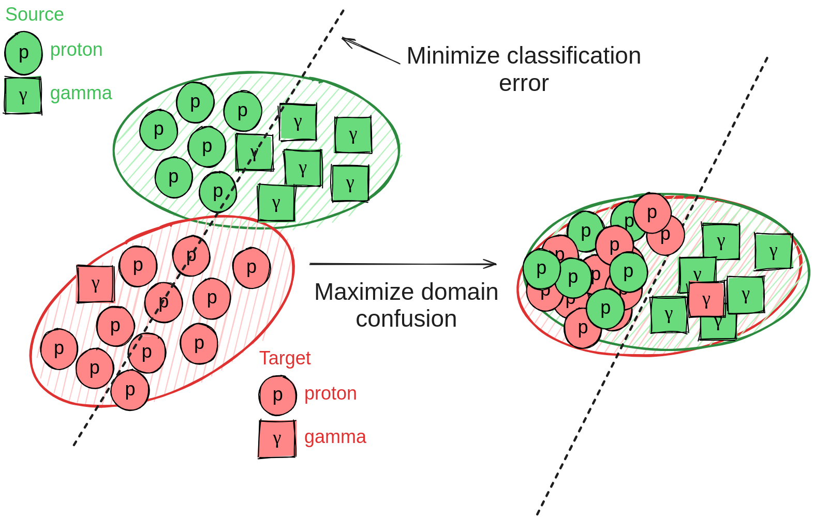
图注：Illustration of UDA. While maintaining good performance on the source data with the minimization of the classification error, the addition of the domain confusion task allows to find a shared representation of both domains. This objective is more difficult when accompanied with label shift, that is to say the unbalanced ratio of particle classes across both domains, in our case protons and gammas. In real life scenarios, this ratio can reach $10^{4}$ in favor of protons.
对应解读：对应“建议重点查看的图表”中的数据分布和类别比例图、方法框架图，以及“关键图表逐图导读”中关于图 1/图 2 的无监督域自适应与极端标签偏移说明。
入选理由：该图直接展示 UDA 的源域—目标域共享表示目标，并明确指出质子与伽马类别比例在真实场景中可达到 10^4 的极端标签偏移，最能支撑日报关于标准域自适应在标签偏移下可能失效、边缘分布对齐会混淆类别的核心解读。
来源与置信度：\(arxiv_source\)；high；\(arxiv_source\) / main.tex:figure[3]
Fig02
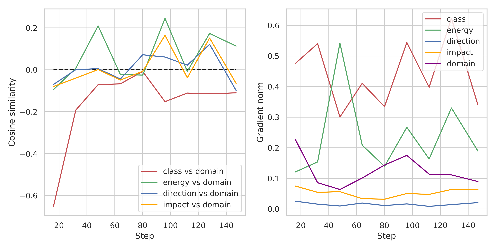
图注：The cosine similarity between the domain task and the full-event reconstruction tasks is shown on the left panel. The gradient norms of each task are plotted on the right panel. In both cases, the domain adaptation method is DANN. Conflicting tasks, for example \(\textit{class}\) versus \(\textit{domain}\) (depicted in red) exhibit a negative similarity which, associated with strong gradients, may affect the quality of convergence of the model.
对应解读：对应“建议重点查看的图表”中的训练曲线和消融/稳健性诊断，以及“模型拟合”段落中域损失权重、任务权重和梯度冲突的讨论。
入选理由：该图给出 DANN 中域任务与事件重建任务之间的余弦相似度和梯度范数，直接诊断分类任务与域混淆任务的负相似和强梯度冲突，比单纯架构图更能说明多任务平衡为何是本文关键问题。
来源与置信度：\(arxiv_source\)；high；\(arxiv_source\) / main.tex:figure[2]
Fig01
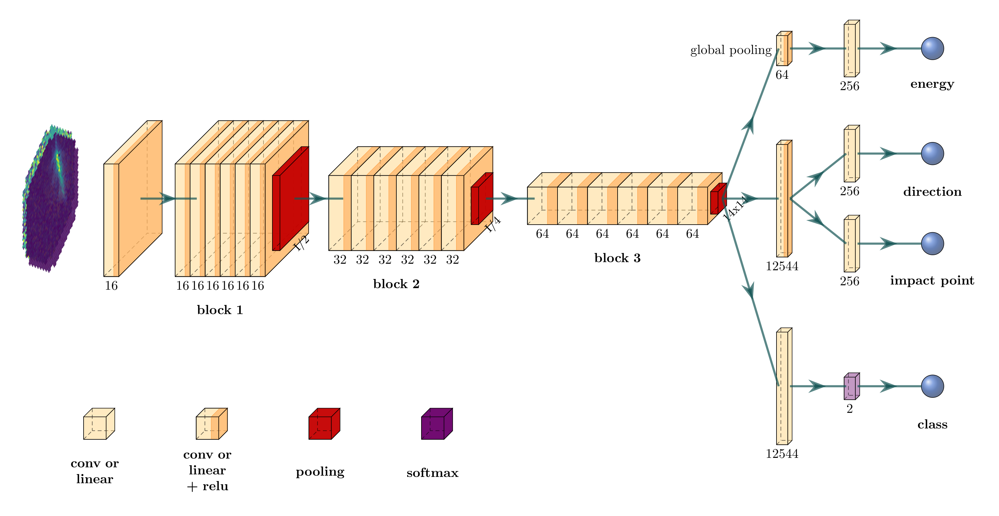
图注：The $\gamma$-PhysNet architecture. This illustration represents the feature maps that output from the convolution filters or the fully-connected layers (that can be associated with a non-linearity) of the network. For example, \(\textit{conv}\) designates the feature maps that output a convolution layer. The backbone is composed of three blocks and the identity mapping corresponds to full-activation \(\cite{he2016identity}.\)
对应解读：对应“建议重点查看的图表”中的方法框架图，以及“关键图表逐图导读”中关于特征提取器、任务头和共享网络结构的说明。
入选理由：该图展示 gamma-PhysNet 的主干网络和特征图流向，可帮助读者理解后续域自适应、多任务输出和共享特征学习依附的基础架构；虽然没有直接画出域判别器或重要性加权，但仍是理解模型实现的必要背景图。
来源与置信度：\(arxiv_source\)；high；\(arxiv_source\) / main.tex:figure[1]
Fig04
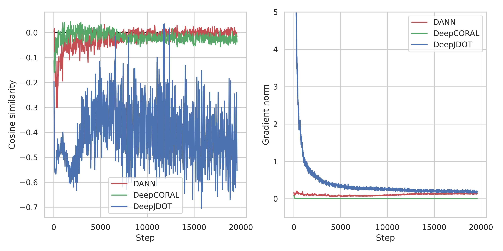
图注：Cosine similarity between the domain confusion task and the digit classification task (left), and the gradient norms (right), using DANN, DeepCORAL and DeepJDOT on the SVHN$\rightarrow$MNIST scenario. In the case of DeepJDOT, the domain and digit classification tasks are highly conflicting. Moreover, the norm of the DeepJDOT gradients is very high at the beginning of the training, suggesting that the domain confusion task is not optimize properly.
对应解读：对应“模型拟合”段落中关于不同域自适应损失、梯度范数和任务冲突的泛化诊断，也部分对应“稳健性或消融实验表/图”的建议。
入选理由：该图比较 DANN、DeepCORAL 和 DeepJDOT 在 SVHN→MNIST 场景下的任务冲突与梯度范数，能辅助说明不同 UDA 方法的优化稳定性差异；但它不是 CTAO-LST 物理场景，和日报中伽马/质子标签偏移及物理指标的直接关系弱于 Fig03 和 Fig02。
来源与置信度：\(arxiv_source\)；high；\(arxiv_source\) / main.tex:figure[4]
强相关工作
这篇工作处在三个文献交叉点上：IACT/CTAO 图像重建的深度学习，机器学习中的无监督域自适应，以及不平衡学习/标签偏移校正。与传统 CTA 或 LST 分析论文相比，它更偏方法学，但应用对象是明确的 CTAO 首台 Large-Sized Telescope。建议检索关键词包括“CTAO Large-Sized Telescope deep learning image analysis”、“IACT gamma hadron separation domain adaptation”、“unsupervised domain adaptation label shift”、“importance weighting label shift”和“multitask learning gradient balancing”。
在机器学习基础工作中，Domain-Adversarial Neural Network 是域判别加梯度反转的代表；Deep CORAL、MMD 类方法则用显式分布距离对齐特征。与这些工作相比，本文的关键补充是把极端标签偏移和多任务平衡放入天文仪器场景，而不是在类别先验较温和的通用视觉基准上验证。相反观点或张力主要来自域自适应理论中的已知问题：若只对齐边缘分布 \(p(x)\)，而不保证类条件结构 \(p(x\mid y)\)，就可能造成负迁移。本文正是把这个理论风险放到了 CTAO-LST 的现实数据结构中检验。
同源或同类上下文方面，本文不是一个命名瞬变、天体源或同一事件论文，而是 CTAO/LST 仪器数据分析方法论文。应把它放在同类源和仪器方法文献中阅读：CTAO/LST 性能、IACT 深度学习重建、模拟到观测的系统差异、机器学习域自适应基准和标签偏移理论。若要追踪后续影响，可在 arXiv 和 ADS 中用本文题名、作者名以及“CTAO LST domain adaptation multitask label shift”组合检索。
同一事件 / 同类源线索：
相似工作：
基础理论 / 方法工作：
相反观点 / 张力线索：
（未提供）
6. Constraints on magnetic monopoles from X-ray observations of neutron stars
- 来源：arXiv / astro-ph.HE
- 链接：https://arxiv.org/abs/2608.07652v1
- 作者：Mainak Mukhopadhyay, Daniele Perri, Edward W. Kolb
- 评分：novelty 8/10，importance 8/10，relevance 8/10，final 9.00/10
- 推荐理由：利用中子星X射线观测约束磁单极子俘获和诱导加热，结合致密星、X射线数据和粒子天体物理；给出特定质量区间最强约束，值得高能天体物理读者关注。
中文题目：用中子星 X 射线观测限制磁单极子通量
做了什么：这篇文章把老年孤立毫秒脉冲星和“壮丽七星”的档案 X 射线数据用作磁单极子探测器。核心想法是：如果银河系中存在磁单极子，它们会被中子星高效俘获；若单极子能催化重子数破坏，核子衰变产物会在星内热化，给老中子星表面提供额外热源，表现为软 X 射线热辐射。作者用 Chandra、XMM-Newton 和 Swift-XRT 的非探测或低热辐射测量，给出银河单极子通量 \(F_{\rm M}\) 随单极子质量 \(m_{\rm M}\) 的保守上限。对基准催化截面 \(\sigma_{\Delta B}\sim 10^{-27}\,{\rm cm^2}\)，他们得到的限制在 \(m_{\rm M}\sim 10^{11}-10^{13}\,{\rm GeV}/c^2\) 区间优于既有中子星约束，并在该情景下达到当前最强或有竞争力的水平。
为什么重要：磁单极子是大统一理论、拓扑缺陷和早期宇宙相变中的经典预言，但直接实验和宇宙线搜索长期没有发现。中子星提供了一个完全不同的实验环境：极强引力、巨大重子数、长时间积分和很低的内部热本底，使极稀薄的单极子通量也可能累积成可观热源。本文的重要性不在于声称发现，而在于把可观测的老中子星热光度系统地转化为粒子物理参数空间中的约束。
理论 / 观测 / 仪器方法价值：对理论而言，它把单极子催化核子衰变的微观截面、单极子质量和银河通量同中子星热演化连接起来。对观测而言，它说明档案 X 射线数据，尤其是老毫秒脉冲星的软 X 射线上限，可作为暗弱热源探针。对方法而言，它强调保守处理中子星半径、距离、吸收、表面温度和背景辐射后，仍能得到有竞争力的 \(F_{\rm M}\) 限制。
为什么应该关注：如果你关心紧致星作为基本物理实验室，这篇文章值得看：它展示了“没有热辐射”本身如何约束超高能粒子物理。如果你做 X 射线观测，它给出一个明确动机：寻找更老、更近、更干净的中子星热上限，可以直接推进磁单极子参数空间。如果你做早期宇宙或大统一模型，本文给出的质量依赖约束是判断某些单极子丰度模型是否仍可存活的实用输入。
展开详细解读：文章讲解、背景、理论、重点章节、图表与相关工作
文章详细讲解
科学问题：磁单极子若存在，通常质量很大、通量极低，地面实验和宇宙线阵列只能覆盖有限的速度、质量和相互作用参数空间。中子星的优势是俘获效率极高：只要单极子穿过中子星附近，其强引力聚焦会显著增加截面；进入星体后，若能量损失足够，它会被束缚在星内。若单极子具有 Rubakov-Callan 型催化重子数破坏能力，每个被俘获的单极子就像一个持续工作的微观热源，将核子静质量能量转化成热，最后从中子星表面以热光子形式辐射出去。本文要回答的问题是：现有老中子星的 X 射线热光度上限，能把银河单极子通量 \(F_{\rm M}\) 压到多低？
作者怎么做：他们选择老的孤立毫秒脉冲星作为主样本，因为这类天体年龄大、自身冷却热光度低、通常没有强吸积污染，适合寻找额外加热。数据来自 Chandra、XMM-Newton 和 Swift-XRT 的档案观测。作者把观测到的计数率、非探测上限或热分量约束转化为表面热光度上限，再将该上限与单极子俘获率和催化加热率相比较。对于催化截面，他们采用 \(\sigma_{\Delta B}\sim 10^{-27}\,{\rm cm^2}\) 作为基准，并讨论约束如何随 \(m_{\rm M}\) 变化。论文还用“壮丽七星”的已测热辐射给出互补限制，因为这些近邻孤立中子星的热谱相对干净，但它们不是毫秒脉冲星，热演化解释也不同。
关键结果：论文摘要给出的主约束可写为 \(F_{\rm M}(m_{\rm M})\lesssim 6\times 10^{-19}\,{\rm cm^{-2}\,s^{-1}\,sr^{-1}}\times \max[4\times 10^{-6},\min(2\times 10^{11}\,{\rm GeV}/c^2/m_{\rm M},1)]\)。这个表达式体现三段质量依赖：低质量区限制接近常数，中间质量区大致按 \(m_{\rm M}^{-1}\) 变化，高质量区因俘获或能量损失条件变差而出现下限平台。作者声称在 \(m_{\rm M}\sim 10^{11}-10^{13}\,{\rm GeV}/c^2\) 区间，这些限制改进了过去中子星约束，并且在同类催化情景下与其他实验约束相比很有竞争力。
局限和下一步：这类约束的核心前提是单极子确实催化核子衰变，且有效截面接近基准值；如果 \(\sigma_{\Delta B}\) 很小，热源会显著变弱。另一个限制来自中子星热辐射建模：距离、吸收柱密度、表面大气成分、热斑几何、自转调制以及非热磁层辐射都会影响光度上限。下一步最直接的方向是对近邻老中子星进行更深软 X 射线观测，改进紫外—X 射线联合谱能分布，并用更一致的中子星冷却和表面大气模型重做样本化约束。
关键结果是怎么做出来的
本文最重要的结果是把若干老孤立毫秒脉冲星的 X 射线热光度上限合并为对银河磁单极子通量 \(F_{\rm M}\) 的质量依赖上限。样本选择逻辑很关键：作者优先选年龄较大、没有明显伴星吸积、X 射线辐射弱且可用档案数据约束热分量的毫秒脉冲星。这样的对象本底加热小，若观测不到足够强的热软 X 射线，就可反推任何额外加热机制不能太强。
数据处理上，Chandra、XMM-Newton 和 Swift-XRT 的作用不是发现单个新源，而是提供计数率、谱形或非探测上限。作者需要把仪器计数空间中的约束转成未吸收热通量，再用距离转为光度。对毫秒脉冲星，非热磁层分量可能在硬 X 射线占优，因此真正有约束力的是软热分量的上限，而不是总 X 射线光度本身。论文的证据链应从目标表或观测表开始读：看每个源的距离、年龄、自转参数、曝光时间、计数数目或上限，以及采用了哪些吸收柱密度和谱模型。
统计意义通常来自“模型预测热通量不能超过观测允许热通量”的单边限制，而不是传统意义上的源检出显著性。若观测是非探测，常用泊松计数上限；若有探测，则需在热分量、非热幂律分量和背景之间做谱拟合或保守分解。模型比较的核心不是在多个复杂天体模型之间挑最佳模型，而是给定 \(m_{\rm M}\)、\(\sigma_{\Delta B}\) 和 \(F_{\rm M}\) 后计算单极子加热光度 \(L_{\rm heat}\)，并要求它不超过热光度上限 \(L_{\rm th}^{\rm max}\)。由此得到每个源的 \(F_{\rm M}^{\rm max}\)，再取最强或合并限制。
支撑结论的关键图表应包括：单个中子星热光度上限表、\(F_{\rm M}\) 随 \(m_{\rm M}\) 的限制曲线、与 Parker bound、古云/白矮星/地面探测等既有约束的比较图，以及“壮丽七星”约束的互补曲线。特别要看 \(m_{\rm M}\sim 10^{11}-10^{13}\,{\rm GeV}/c^2\) 区间为何由这些中子星主导，曲线的折点是否来自俘获效率、能量损失条件还是饱和催化加热。
主要系统误差包括距离误差、星际吸收 \(N_{\rm H}\)、半径和质量假设、表面发射模型、热斑覆盖因子以及非热分量扣除。稳健性检验应关注作者是否采用了保守的热光度上限、是否允许较宽的中子星参数范围、是否避免把磁层非热辐射误判为热分量，以及是否单独展示不同目标对总限制的贡献。若限制由少数近邻目标支配，读者尤其应检查这些目标的距离和谱分解是否可靠。
展开背景、理论、公式、模型、章节和图表导读
背景知识
磁单极子最早在 Dirac 的量子化条件中出现：只要存在一个磁荷，电荷量子化就有自然解释。后来大统一理论中的拓扑相变进一步预言了非常重的单极子，其质量可远高于加速器能标。问题在于，宇宙学上若单极子丰度太高会导致“单极子过剩问题”，这也是暴胀理论的重要动机之一；而若暴胀或相变历史把它们稀释得很低，直接探测又极其困难。
天体物理对磁单极子的限制历史很长。经典 Parker bound 来自银河磁场不能被单极子电流快速耗散的要求；直接探测实验则寻找高电离径迹、超导环磁通跳变或地下探测器事件。中子星约束属于另一类：不是看单极子经过探测器时的瞬时信号，而是利用中子星在数十亿年内积累极少量单极子后的长期热效应。
本文关注的是“催化重子数破坏”的磁单极子。Rubakov-Callan 机制指出，在某些大统一理论中，单极子核心附近可有效催化核子衰变，释放约 \({\rm GeV}\) 量级能量。中子星内部几乎全是高密度核物质，单极子若被俘获，就会穿行或停留在星内并不断接触核子，因此微观截面即使很小，也可能累积成宏观热功率。
为什么现在值得重新看？一是 Chandra、XMM-Newton 和 Swift-XRT 已积累大量老脉冲星和孤立中子星观测，很多非探测结果过去没有被用于基本物理约束。二是毫秒脉冲星距离、年龄和高能辐射性质的资料越来越好，可筛出更适合做冷却和加热约束的对象。三是多信使和暗物质研究推动了“紧致星作为粒子物理探测器”的方法学，类似思路已用于暗物质俘获、轴子冷却、非标准中微子发射等。
常见误区有几个。第一，不应把所有中子星 X 射线辐射都当成单极子加热；年轻中子星的冷却热辐射、磁层辐射、极冠返流加热都可能更强。第二，非探测并不等于零光度，而是给出依赖模型的上限。第三，单极子通量限制不是单一数字，它依赖 \(m_{\rm M}\)、速度分布、俘获条件和 \(\sigma_{\Delta B}\)。第四，“壮丽七星”虽热辐射干净，但它们本身较年轻且磁场较强，热演化解释和老毫秒脉冲星不同。
基础理论 / 方法脉络
基础物理图像可以从能量守恒理解：中子星在晚期若没有额外热源，表面热光度会随年龄降低；若存在被俘获的单极子，每个单极子催化核子衰变，单位时间释放的能量会转化成内部热，最后以表面热辐射逃逸。当年龄足够大且热平衡近似成立时，观测热光度上限可直接限制额外加热功率。
单极子进入中子星的几率由几何截面和引力聚焦共同决定。中子星逃逸速度接近相对论量级，远处速度较小的银河单极子会被强烈聚焦，因此有效俘获截面远大于 \(\pi R^2\)。不过俘获还要求单极子穿过星体时损失足够动能；对很重的 \(m_{\rm M}\)，同样的能量损失未必能把它束缚住，这就是限制曲线出现质量依赖的重要原因。
催化加热率取决于星内核子数密度 \(n_b\)、单极子在星内的速度 \(v\)、催化截面 \(\sigma_{\Delta B}\) 和每次反应释放的能量 \(Q\)。在简化估算中，单个单极子的功率可写成反应率乘以 \(Q\)。若 \(\sigma_{\Delta B}\) 足够大，反应率还可能受到几何、扩散或局域供给限制；若足够小，加热功率近似正比于 \(\sigma_{\Delta B}\)。本文采用 \(\sigma_{\Delta B}\sim 10^{-27}\,{\rm cm^2}\) 作为基准，因此读者要把结论理解为该催化情景下的约束。
观测侧的关键量是表面热光度 \(L_{\rm th}\) 或红移到无穷远处的 \(L_{\rm th}^{\infty}\)。望远镜测到的是能段内计数率，必须经过响应矩阵、吸收模型和辐射谱模型转成未吸收通量。对老毫秒脉冲星，热分量常来自极冠或全表面低温辐射，非热幂律分量可能混入；因此热光度上限与所假设的黑体或氢大气模型、发射面积和 \(N_{\rm H}\) 强相关。
主要退化关系包括：更大的距离会允许更高的内禀光度；更大的 \(N_{\rm H}\) 会隐藏更软的热光子；更小的发射面积会提高有效温度并改变能段内可见度；非热幂律斜率与软热分量之间也会在低计数谱中退化。本文强调“保守限制”，意味着作者倾向于不把不确定的软 X 射线信号过度解释为单极子热源，从而避免得到过强但脆弱的上限。
公式与推导
第一步是把各向同性单极子通量与撞击中子星的速率联系起来。若远处单极子通量为 \(F_{\rm M}\)，单位为 \({\rm cm^{-2}\,s^{-1}\,sr^{-1}}\)，有效俘获截面为 \(A_{\rm eff}\)，则数量级上有
其中 \(P_{\rm cap}\) 是穿过星体后被束缚的概率，依赖单极子质量 \(m_{\rm M}\) 和远处速度 \(v_\infty\)。
第二步加入引力聚焦。非相对论近似下，有效截面常写成
其中 \(R\) 是中子星半径，\(v_{\rm esc}\) 是表面逃逸速度。对中子星，\(v_{\rm esc}\gg v_\infty\)，所以 \(A_{\rm eff}\) 可远大于几何截面。
第三步是俘获条件。单极子进入星体前后的能量变化可用
来表示，其中 \(\Delta E_{\rm loss}\) 是穿越中子星物质时的能量损失。这个式子说明，当 \(m_{\rm M}\) 太大时，同样的物质阻尼更难俘获单极子，约束会随 \(m_{\rm M}\) 变弱。
第四步计算随时间累积的单极子数。若中子星年龄为 \(t_\star\)，且忽略单极子湮灭或流失，则
这里假设银河通量和俘获条件在中子星生命中近似不变。
第五步估算单个单极子的催化反应率。若核子数密度为 \(n_b\)，相对速度为 \(v\)，催化截面为 \(\sigma_{\Delta B}\)，则
每次反应释放能量 \(Q\sim 1\,{\rm GeV}\)，因此单个单极子的加热功率为 \(P_1\simeq \Gamma_{\Delta B}Q\)。
第六步得到总加热光度：
在未饱和催化区，\(L_{\rm heat}\) 正比于 \(F_{\rm M}\)、\(t_\star\) 和 \(\sigma_{\Delta B}\)。这正是用老中子星做约束的原因：长时间积分提高灵敏度。
第七步把观测通量转为光度上限。若未吸收热通量上限为 \(f_{\rm th}^{\rm max}\)，距离为 \(d\)，则
更严格地，红移修正会把表面量与无穷远量联系为 \(L_{\rm th}^{\infty}=L_{\rm th}(1-2GM/Rc^2)\)，但数量级限制常由距离和通量上限主导。
第八步给出通量限制条件：
解这个不等式即可得到 \(F_{\rm M}^{\rm max}\)。本文对 \(\sigma_{\Delta B}\sim 10^{-27}\,{\rm cm^2}\) 的汇总结果为
这个分段形式编码了俘获效率、质量依赖和低限平台。
第九步是观测计数的统计上限。若源区观测计数为 \(C\)，背景期望为 \(B\)，模型预测源计数为 \(S(\theta)\)，泊松似然可写为
这里 \( heta\) 包括热温度、吸收柱密度、距离和可能的非热分量参数。单边置信上限可由似然比或累积分布给出，并最终映射到 \(f_{\rm th}^{\rm max}\) 和 \(F_{\rm M}^{\rm max}\)。
模型拟合 / 应用方法
这篇文章的拟合问题可分成两层。第一层是 X 射线数据层：给定仪器响应、背景和谱模型，把计数率或谱计数转换成热通量上限。可拟合量包括黑体或中子星大气温度、归一化、吸收柱密度 \(N_{\rm H}\)、非热幂律光子指数和背景归一化。对于低计数观测，适合使用泊松统计或 Cash statistic，而不是简单的 \(\chi^2\) 近似。
第二层是物理约束层：给定中子星质量、半径、年龄、距离、单极子质量 \(m_{\rm M}\)、催化截面 \(\sigma_{\Delta B}\) 和通量 \(F_{\rm M}\)，计算单极子俘获数和加热光度。拟合或限制的核心参数是 \(F_{\rm M}\)，而 \(m_{\rm M}\) 通常作为横轴扫描。若采用贝叶斯写法，可把距离、\(N_{\rm H}\)、半径和年龄作为 nuisance parameters，并边缘化得到 \(F_{\rm M}\) 的后验上限；若采用保守 frequentist 写法，则对这些参数选取使限制较弱的一组值。
残差诊断在这里很重要。若某个目标的软 X 射线残差可由热分量解释，也可由背景、非热尾或校准误差解释，那么把它当作严格热光度会使约束不稳。读者应检查拟合残差是否在低能端系统偏正，是否存在未建模吸收边或背景线，是否有脉冲相位依赖提示极冠加热而非全表面加热。对于非探测目标，则应检查源区和背景区选择、曝光校正和点扩散函数包围能量。
主要参数退化包括 \(d\) 与 \(L_{\rm th}\) 的平方关系、\(N_{\rm H}\) 与低温热分量的强退化、发射半径与温度的退化，以及 \(\sigma_{\Delta B}\) 与 \(F_{\rm M}\) 的近似反比关系。在未饱和区，如果 \(L_{\rm heat}\propto F_{\rm M}\sigma_{\Delta B}\)，那么把 \(\sigma_{\Delta B}\) 降低一阶会把 \(F_{\rm M}\) 上限放宽约一阶。若进入饱和或俘获受限区，这种简单缩放会失效。
模型可能失败的地方也很清楚。老毫秒脉冲星并非完全冷却的黑体球，它们有自转供能、磁层粒子返流和局部极冠热斑。若这些常规加热机制比单极子加热更强，观测到的热辐射只能给单极子加热上限，而不能分离其贡献。反过来，若非热辐射被误判为热辐射，上限会偏松；若吸收被低估，上限可能偏紧。实际应用中，最稳健的策略是优先使用近邻、低吸收、低背景、距离可靠且软热分量受限清楚的目标。
重点章节 / 结果段落怎么读
-
引言和物理动机：先读作者如何界定磁单极子、催化重子数破坏和中子星加热之间的关系。重点不是单极子理论综述，而是为什么老中子星的低热光度能约束 \(F_{\rm M}\)，以及本文相对过去中子星约束改进在哪里。
-
俘获和加热模型：这一节应仔细看质量依赖如何进入。读者需要确认作者对引力聚焦、能量损失、俘获概率、单极子累积时间和 \(\sigma_{\Delta B}\) 的处理。摘要中的分段限制公式应能在这一节找到物理来源。
-
X 射线样本和档案数据：重点看老孤立毫秒脉冲星的选择标准、观测仪器、曝光时间、距离和热光度上限。若论文列出表格，应检查哪些目标真正驱动最终约束，以及每个目标是否存在已知的非热 X 射线或伴星污染。
-
结果和约束曲线：这一节应把单源限制和合并限制与既有限制放在同一图上。读者要看 \(m_{\rm M}\sim 10^{11}-10^{13}\,{\rm GeV}/c^2\) 区间为何特别强，以及低质量和高质量端限制为何变平或变弱。
-
“壮丽七星”和稳健性讨论：这部分给出互补约束，但解释上应更谨慎。读者应关注作者是否把这些对象的已测热辐射全部当成允许上限，是否讨论冷却年龄、磁场衰减加热和表面大气模型对约束的影响。
建议重点查看的图表
-
样本/观测表：检查每个毫秒脉冲星的距离、年龄、曝光、计数率或通量上限。最关键的是哪些源给出最小的 \(L_{\rm th}^{\rm max}/t_\star\)，因为它们通常驱动最强 \(F_{\rm M}\) 限制。
-
单极子俘获效率或质量依赖图：看横轴 \(m_{\rm M}\)，纵轴可能是俘获概率、俘获率或限制因子。重点是曲线折点是否对应 \(m_{\rm M}\sim 2\times10^{11}\,{\rm GeV}/c^2\) 一类尺度。
-
\(F_{\rm M}\) 上限主图：检查纵轴单位是否为 \({\rm cm^{-2}\,s^{-1}\,sr^{-1}}\)，横轴是否为 \(m_{\rm M}\)。要看本文曲线与 Parker bound、直接探测和过去中子星约束的相对位置。
-
X 射线谱或计数上限诊断：若论文展示谱图，重点看低能端热分量是否真的被限制，背景是否主导，非热幂律与热模型是否可区分。
-
“壮丽七星”互补约束图或表：看已测热光度被如何用作上限，以及这些限制在哪些 \(m_{\rm M}\) 区间接近或弱于老毫秒脉冲星。
-
系统误差或参数变化图：检查半径、质量、距离、\(N_{\rm H}\)、\(\sigma_{\Delta B}\) 变化时，\(F_{\rm M}\) 上限移动多少。若没有图，也应看附录或表格中的缩放关系。
关键图表逐图导读
图 1：很可能是物理流程或俘获/加热示意，横轴可能为 \(m_{\rm M}\)，纵轴为俘获效率、有效截面或加热归一化。读图时要分清几何截面、引力聚焦截面和真正被束缚的俘获率。陷阱是把穿过中子星等同于被俘获；对高质量 \(m_{\rm M}\)，能量损失不足会削弱俘获。
图 2：若为样本 X 射线限制图，通常会把不同中子星的 \(L_{\rm th}^{\rm max}\) 或温度上限列出。坐标轴可能是年龄、距离或光度。读者应看最强限制是否来自少数近邻老毫秒脉冲星；若是，应回到表格检查这些目标的距离和 \(N_{\rm H}\)。模型线若表示单极子加热，只有位于观测上限以下的参数才允许。
图 3：主结果图应是 \(F_{\rm M}\) 对 \(m_{\rm M}\) 的上限曲线。横轴一般为对数质量，纵轴为对数通量。本文曲线的关键读法是三段结构：低质量近似常数，中间区随 \(m_{\rm M}\) 变化，高质量端进入平台或削弱。不要只看最低点，还要看与其他约束曲线交叉的质量范围。
图 4：比较既有约束的图会包含 Parker bound、直接搜索、可能的地下实验或天体物理限制。不同约束常假设不同单极子速度、质量和相互作用，因此不能机械比较线的高低。要确认图例中每条线是否针对同样的催化截面 \(\sigma_{\Delta B}\) 或是否可直接重标定。
图 5：若展示“壮丽七星”约束，应看数据点对应的是已测热光度而非非探测上限。坐标轴可能仍是 \(F_{\rm M}\) 与 \(m_{\rm M}\)。读图陷阱是这些对象的热辐射有常规冷却和磁场衰减来源，因此它们给出的通常是保守上限，不代表热辐射就是单极子导致。
图 6：稳健性或附录图若存在，应检查参数扰动造成的带宽。若距离、半径或 \(N_{\rm H}\) 的变化只使曲线移动小于数量级，结论较稳；若移动多个数量级，则主图中“最强限制”的说法应理解为在特定保守假设下成立。
论文原图 / 可嵌入图片
Fig01
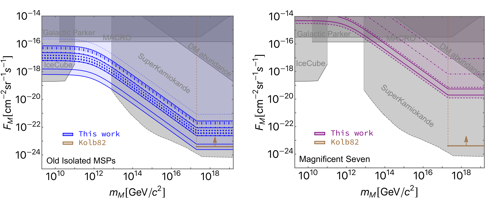
图注：Comparison of bounds obtained in this work from nucleon decay catalysis using observed X-ray measurements of old isolated millisecond pulsars (\emph{left}), including both measured X-ray fluxes and $3\sigma$ X-ray flux upper limits, and observed redshifted bolometric thermal luminosities of the Magnificent Seven (M7) neutron stars (\emph{right}), with previous bounds in the literature. The solid, dashed, dot-dashed, and dotted lines represent the luminosity distance bins. The parameter space above the lines is excluded, showing that our results provide the most stringent bounds to date on $F_M$ for $m_M$ between $10^{11} - 10^{13}\ {\rm GeV/c^2}$ and are competitive with existing limits.
对应解读：对应“建议重点查看的图表”第3项“\(F_M\) 上限主图”、第5项“壮丽七星互补约束图”，以及“关键图表逐图导读”中图3/图4/图5关于 \(F_M-m_M\) 主结果和既有约束比较的解读。
入选理由：这是论文最核心的结果图，直接给出单极子通量上限 \(F_M\) 随质量 \(m_M\) 的变化，并同时展示老毫秒脉冲星与 Magnificent Seven 的约束以及文献已有界限。它最能支撑日报中关于三段质量依赖、10^11–10^13 GeV/\(c^2\) 区间最强限制、与 Parker bound 或其他既有约束比较等关键结论。
来源与置信度：\(arxiv_source\)；high；\(arxiv_source\) / main.tex:figure[1]
Fig02
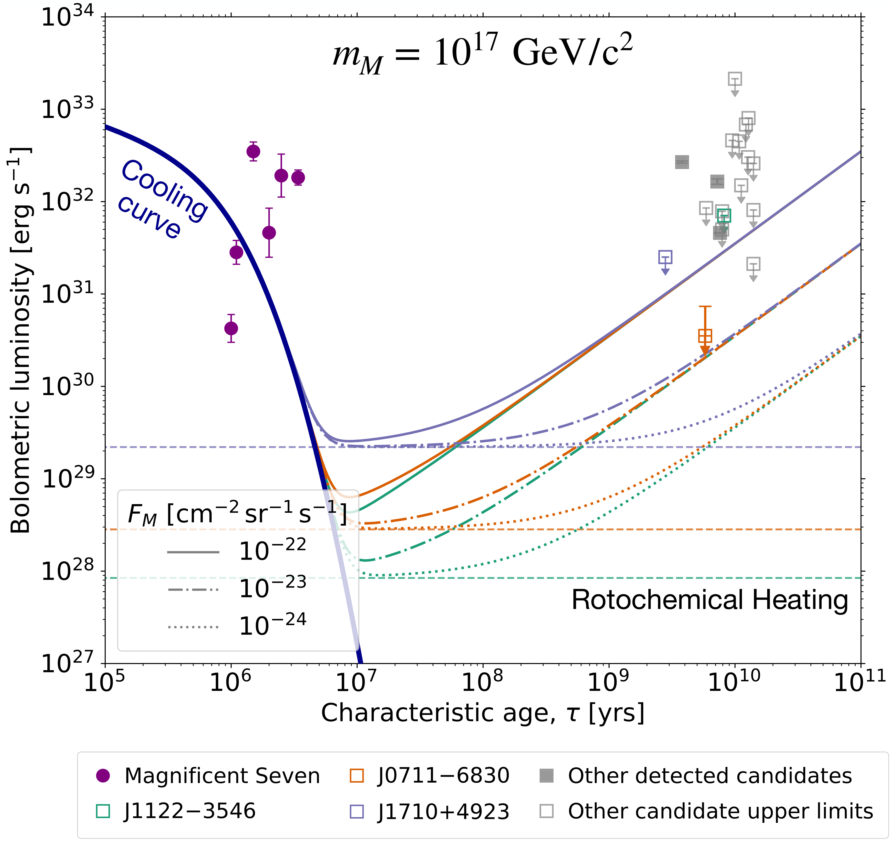
图注：Standard cooling curve (solid dark-blue), rotochemical-heating plateaus (dashed colored lines), and the corresponding total bolometric luminosities including monopole-induced heating (colored curves) for representative monopole fluxes $F_M$. The rotochemical-heating and total-luminosity curves are shown for clarity only for three representative MSPs spanning the range of rotochemical heating levels in our sample. The observed bolometric thermal luminosities of the detected MSPs are shown as filled squares, the $3\sigma$ U.L.s as open squares, and the M7 as purple filled circles.
对应解读：对应“建议重点查看的图表”第1项样本热光度/上限诊断、第2项单极子加热质量或通量依赖的物理解释，以及“模型拟合”中观测热光度上限如何转化为单极子加热限制的段落。
入选理由：该图把标准冷却、rotochemical heating、单极子诱导加热曲线与 MSP 探测值、3σ 上限和 M7 热光度放在同一图中，能解释 X 射线热光度约束为何可转化为 \(F_M\) 上限。相比主约束图，它更适合支撑物理建模和样本诊断：哪些源的热光度或上限足够低、常规加热背景如何影响单极子加热解释。
来源与置信度：\(arxiv_source\)；high；\(arxiv_source\) / main.tex:figure[2]
强相关工作
这篇工作处在三条文献脉络的交叉点。第一条是磁单极子的基础理论和实验限制，包括 Dirac 量子化条件、\('t\) Hooft-Polyakov 单极子、大统一理论单极子、Parker bound 以及 MACRO、IceCube 等直接或间接搜索。检索关键词可用 “magnetic monopole Parker bound Galactic magnetic field”、“Rubakov Callan monopole catalysis nucleon decay”、“MACRO magnetic monopole search”、“IceCube relativistic magnetic monopoles”。
第二条是紧致星约束新物理。中子星被用来约束暗物质俘获加热、轴子冷却、非标准中微子过程、原初黑洞和其他稀有粒子。本文与这些工作共享同一方法论：把微观粒子相互作用转成长期能量注入或能量损失，再用表面温度、热光度或冷却曲线约束。检索关键词可用 “neutron star heating dark matter capture”、“old millisecond pulsar thermal X-ray constraints”、“neutron star magnetic monopole catalysis”。
第三条是观测对象本身。同一事件不存在，因为本文不是单次暂现源论文；它涉及同一类源，即老孤立毫秒脉冲星，以及同类/原型样本“壮丽七星”。读者应查 ATNF Pulsar Catalogue 获取脉冲星自转参数和距离信息；查 “Magnificent Seven neutron stars XMM Chandra thermal emission” 获取这些近邻孤立中子星的热谱历史研究。
同一事件 / 同类源线索：
- https://arxiv.org/abs/2608.07652
- https://www.atnf.csiro.au/research/pulsar/psrcat/
- https://arxiv.org/abs/0711.3650
相似工作：
基础理论 / 方法工作：
- https://doi.org/10.1098/rspa.1931.0130
- https://doi.org/10.1016/0550-3213(74)90486-6
- https://doi.org/10.1134/1.1886476
相反观点 / 张力线索：
（未提供）
7. Locating the missing baryons in the warm-hot intergalactic medium with fast radio bursts and the Sunyaev-Zel'dovich effect
- 来源：arXiv / astro-ph.HE
- 链接：https://arxiv.org/abs/2608.09014v1
- 作者：Dao-Hong Zhai, F. Y. Wang, Zi-Gao Dai, Renyue Cen
- 评分：novelty 9/10，importance 9/10，relevance 6/10，final 8.95/10
- 推荐理由：报告CHIME/FRB色散量与Planck tSZ图的首次空间互相关检测，用于定位WHIM缺失重子；虽偏宇宙学/FRB应用，但结果新颖且重要。
中文题目：用快速射电暴和热 Sunyaev–Zel'dovich 效应定位暖热星系际介质中的缺失重子
做了什么：这篇文章把第二个 CHIME/FRB 目录中快速射电暴的色散量与 Planck 的热 Sunyaev–Zel'dovich Compton-\(y\) 天图做空间互相关，目标是寻找宇宙网中弥散暖热星系际介质的联合信号。色散量测量电子柱密度，热 Sunyaev–Zel'dovich 效应测量电子热压，两者相关就能把“有多少气体”和“气体有多热”联系起来。作者在遮蔽已成团星系团后仍发现正相关，给出大于 \(99.77\%\) 的相关概率，并在平均温度 \(2.4\times10^6\,{\rm K}\) 附近推断暖热星系际介质重子分数 \(f_{\rm WHIM}=0.48\)，\(68\%\) 置信区间为 \(0.27 为什么重要：低红移宇宙的重子数长期存在“账面缺口”：早期宇宙由宇宙微波背景和大爆炸核合成给出的重子密度很精确，但近邻宇宙中可见恒星、冷气体、热星系团气体和吸收线气体加起来不足。水动力学模拟早就预言缺口应在 \(10^5\) 至 \(10^7\,{\rm K}\) 的暖热星系际介质中，但这种气体太稀、太热又不够亮，单靠传统发射或吸收观测很难普查。本文的重要性在于把快速射电暴的电子柱密度探针与热 Sunyaev–Zel'dovich 热压探针合并，直接针对弥散宇宙网做统计探测。 理论 / 观测 / 仪器方法价值：对理论而言，这项工作给宇宙网反馈模型和低红移重子闭合问题提供了一个独立约束，尤其约束了暖热星系际介质的重子分数与平均温度组合。对观测而言，它展示了快速射电暴目录可以从单个宿主研究扩展为大尺度结构气体层析工具。对方法而言，\({\rm DM}\)-\(y\) 互相关比单独使用色散量或单独使用热 Sunyaev–Zel'dovich 图更有判别力，因为它同时对电子数密度和温度敏感，并且可通过遮蔽星系团来检验信号来源。 为什么应该关注：如果你关心宇宙重子闭合、宇宙网气体、快速射电暴宇宙学或星系反馈，这篇文章都值得看。它不是又一次“发现缺失重子”的单一探针声明，而是用两个物理量不同的观测场做互相关：一个积分 \(n_e\)，一个积分 \(n_e T_e\)。随着 CHIME、DSA、ASKAP、MeerKAT 和未来 SKA 级快速射电暴样本增大，这类分析很可能从首次统计探测变成低红移重子层析和反馈热历史测量的常规工具。 科学问题：低红移宇宙的重子预算一直不闭合。宇宙微波背景给出的平均重子密度 \(\Omega_b\) 很精确，但在 \(z\lesssim1\) 的直接普查中，恒星、星系内冷气体、热星系团介质和已知吸收线系统只能解释一部分。数值模拟认为相当多的重子被结构形成激波和星系反馈加热到 \(10^5\) 至 \(10^7\,{\rm K}\)，分布在丝状宇宙网中，即暖热星系际介质。问题是这种气体密度低、发射弱、吸收线稀少且依赖背景源，长期缺乏大面积直接定位。 作者怎么做：本文把两个互补观测量叠加起来。快速射电暴的色散量 \({\rm DM}\) 是沿视线自由电子数密度积分，Planck 的热 Sunyaev–Zel'dovich Compton-\(y\) 图是沿视线电子热压积分。若某些快速射电暴视线穿过更多暖热宇宙网气体，它们应同时表现为较大的星系际 \({\rm DM}\) 和较强的 \(y\) 信号。作者使用第二个 CHIME/FRB 目录中的快速射电暴位置与 \({\rm DM}\)，并与 Planck \(y\) 图做空间互相关；为排除高密度星系团主导，他们遮蔽了维里化星系团区域，并测试更严格遮蔽策略。 关键结果：作者报告快速射电暴 \({\rm DM}\) 与 Planck \(y\) 图存在正相关，相关概率大于 \(99.77\%\)，约等价于常见高斯直觉中的 \(3\sigma\) 量级证据。联合参数推断给出暖热星系际介质的宇宙重子分数 \(f_{\rm WHIM}=0.48\)，在平均温度固定或锚定于 \(2.4\times10^6\,{\rm K}\) 附近时，\(68\%\) 置信区间为 \(0.27 局限和下一步：这仍是统计探测而非单条视线成像，结果依赖快速射电暴宿主贡献、银河系前景扣除、Planck \(y\) 图残余前景、星系团遮蔽完备性和红移缺失处理。CHIME 的定位角分辨率、样本选择函数和重复暴处理也会影响互相关幅度。下一步需要更多有红移和亚角秒定位的快速射电暴、与 eROSITA 和 CMB-S4 等数据交叉、使用星系巡天重建宇宙网环境，并把 \(f_{\rm WHIM}\) 与温度分布而非单一平均温度同时拟合。 本文最重要的证据链从样本和天图开始：快速射电暴端使用第二个 CHIME/FRB 目录，核心观测量是每个爆发的天空位置和总色散量 \({\rm DM}_{\rm obs}\)。为了提取星系际部分，分析必须扣除或边缘化银河系盘、银河系晕、快速射电暴宿主星系和局域环境的贡献。热气体端使用 Planck 卫星构建的 Compton-\(y\) 图，它不是单个源目录，而是全天像素化热压投影场。作者关注的是快速射电暴位置处的 \(y\) 值是否相对随机位置系统性偏高，以及这种偏高是否随 \({\rm DM}\) 或星系际 \({\rm DM}\) 增大而增强。 事件数方面，论文摘要未列出最终清洗后的精确样本量，因此读者应在正文的数据选择表中核对：原始第二 CHIME/FRB 目录包含多少事件，去掉银河面、低质量定位、重复暴、异常高 \({\rm DM}\) 或缺失参数后剩余多少；若使用无红移快速射电暴，作者如何用 \({\rm DM}\) 近似距离权重；若仅保留某些定位精度或信噪比阈值，样本量是否显著变化。这个步骤直接决定互相关误差条，因为当前快速射电暴样本仍不是连续场，而是稀疏采样点。 显著性来自与零相关假设比较。合理的读法是检查作者是否使用随机重排快速射电暴位置、旋转或打乱 \({\rm DM}\)、在同一 Planck \(y\) 图上抽取随机点、或使用 jackknife 天区重采样来构造零分布。摘要给出的“概率 \(>99.77\%\)”应理解为相关信号超过随机期望的置信水平，而不是单条视线探测暖热气体。读者需要看互相关估计量的协方差如何获得，是否考虑 Planck 像素间相关、快速射电暴定位误差、银河前景残余和非均匀巡天曝光。 模型比较的关键是把观测到的 \({\rm DM}\)-\(y\) 相关幅度映射到 \(f_{\rm WHIM}\) 和平均温度。因为 \({\rm DM}\) 近似正比于电子柱密度，而 \(y\) 正比于电子压强柱密度，二者的比值或联合幅度天然约束 \(T_e\) 与气体质量分数的组合。作者报告在平均温度 \(2.4\times10^6\,{\rm K}\) 锚定下得到 \(f_{\rm WHIM}=0.48\)，这说明拟合不是只看 \(y\) 的绝对振幅，也用 \({\rm DM}\) 校准了电子数量。读者应检查参数后验是否呈现 \(f_{\rm WHIM}\)-\(T_{\rm WHIM}\) 退化，以及该退化是否由外部模拟先验或温度锚点打破。 支撑结论的图表应包括快速射电暴位置与遮蔽图、\({\rm DM}\)-\(y\) 互相关曲线、随机对照或置换检验直方图、\(f_{\rm WHIM}\) 与 \(T_{\rm WHIM}\) 的置信区间图，以及不同星系团遮蔽强度下的信号对比。尤其要看更严格遮蔽是否只降低误差还是改变中心值；若遮蔽星系团后相关仍稳定，才支持信号来自弥散暖热气体。若中心值随遮蔽半径强烈漂移，则可能仍有群团气体或未遮蔽低质量团贡献。 主要系统误差包括银河系电子模型不确定性、宿主 \({\rm DM}\) 分布、快速射电暴选择函数、Planck \(y\) 图中尘埃和宇宙红外背景泄漏、射电源污染、星系团目录不完备、以及低红移大尺度结构样本方差。稳健性检验应包括不同银河面遮蔽、不同 \(y\) 图版本、不同快速射电暴子样本、不同星系团遮蔽目录和半径、重复暴处理方式、以及随机目录构造方式。若这些测试都保持正相关，本文的“首次探测”说法才比较有分量。 研究对象是暖热星系际介质，通常指温度约 \(10^5\) 至 \(10^7\,{\rm K}\)、密度接近或略高于宇宙平均的弥散电离气体。它不是星系团中 \(10^7\) 至 \(10^8\,{\rm K}\) 的致密热气体，也不是星系盘中的冷中性气体，而是沿宇宙网丝状结构铺展的低表面亮度等离子体。由于温度处在软 \(X\) 射线和紫外吸收线的尴尬区间，且金属丰度和电离状态不确定，直接观测长期困难。 历史问题是“缺失重子”而非“缺失暗物质”。早期宇宙的重子总量由大爆炸核合成和宇宙微波背景精确确定；到低红移时，若把恒星、冷气体、热星系团介质、Lyman-\(\alpha\) 森林和已探测吸收系统加总，仍会少掉一大块。水动力学模拟从二十世纪末就预言，结构形成激波会把大量低红移重子加热并推入宇宙网，这使暖热星系际介质成为最自然的藏身处。 观测背景上，寻找暖热星系际介质有几条路线：用 \(X\) 射线发射测高温尾部，用 \(O\,{\rm VI}\)、\(O\,{\rm VII}\)、\(O\,{\rm VIII}\) 等吸收线测含金属气体，用星系团附近的热 Sunyaev–Zel'dovich 信号追踪热压，用快速射电暴色散量测自由电子总柱密度。每条路线都有偏差：吸收线需要明亮背景源且依赖金属丰度，\(X\) 射线发射依赖密度平方，热 Sunyaev–Zel'dovich 效应偏向高温高压气体，而快速射电暴 \({\rm DM}\) 对温度不敏感。 现在值得重新看，是因为快速射电暴样本从零星个例变成目录级样本，Planck 已提供全天 \(y\) 图，星系团目录和遮蔽技术也更成熟。单个快速射电暴视线的信息有限，但数百到上千条视线可作为宇宙网电子柱密度的随机采样。把这些视线与全天热压图叠加，等价于用稀疏背景灯塔给热气体图做交叉检验。 常见误区之一是把快速射电暴 \({\rm DM}\) 直接等同于星系际介质质量。实际上观测到的 \({\rm DM}\) 包含银河系、宿主星系和局域环境项，且没有红移时距离权重不清楚。另一个误区是把热 Sunyaev–Zel'dovich 信号全都归因于星系团；对缺失重子问题而言，关键恰恰是遮蔽已知维里化结构后剩余的低表面亮度热压场。还有一个误区是认为一次 \(3\sigma\) 级统计相关已经“完全关闭”问题；更准确的说法是，它为暖热宇宙网解释缺失重子提供了强支持，但温度分布、空间分布和反馈历史仍需更精细数据。 物理图像可以从自由电子开始。快速射电暴是毫秒射电脉冲，穿过电离介质时不同频率的到达时间不同，延迟量由沿视线电子数密度积分决定。因此 \({\rm DM}\) 本质上是电子柱密度，低红移宇宙中若大量重子以电离气体存在，就会增加星系际 \({\rm DM}\)。它不关心电子温度，所以很适合数重子，但不告诉我们气体是否处于暖热相。 热 Sunyaev–Zel'dovich 效应来自宇宙微波背景光子与热电子的逆康普顿散射。其无量纲 Compton-\(y\) 参数是电子压强沿视线积分乘以 Thomson 截面再除以电子静能。它对 \(n_e T_e\) 敏感，因此偏向更热或更高密度气体。星系团的 \(y\) 信号最强，但弥散宇宙网若覆盖大面积，也能在统计上贡献可测热压。 本文的核心假设是：快速射电暴视线穿过的星系际电子柱密度与同一方向或邻近角尺度上的 \(y\) 信号有共同的大尺度结构来源。如果相关由暖热星系际介质产生，遮蔽高质量星系团后信号应减弱但不消失，且其幅度可由重子分数和温度解释。若相关主要来自星系团或尘埃前景，则遮蔽和前景测试会显著改变结果。 关键量包括观测色散量 \({\rm DM}_{\rm obs}\)、估计星系际色散量 \({\rm DM}_{\rm IGM}\)、Compton 参数 \(y\)、暖热星系际介质重子分数 \(f_{\rm WHIM}\)、平均温度 \(T_{\rm WHIM}\) 和互相关估计量。若缺少快速射电暴红移，\({\rm DM}\) 同时承担距离代理和电子柱密度代理的角色，这会引入宿主项和选择函数退化。若有红移，则可把 \({\rm DM}(z)\) 与 \(y(z)\) 的核函数写得更清楚。 常见退化是 \(f_{\rm WHIM}\) 与 \(T_{\rm WHIM}\)：同样的热 Sunyaev–Zel'dovich 振幅可由较少但更热的气体，或较多但较冷的气体产生；快速射电暴 \({\rm DM}\) 能部分打破这个退化，因为它对总电子数敏感。系统误差则集中在银河系 \({\rm DM}\) 模型、宿主星系贡献、Planck \(y\) 图前景泄漏、星系团遮蔽不完备和快速射电暴天空选择函数。 第一步是把快速射电暴的色散延迟写成电子柱密度。冷等离子体中的群速度导致两个观测频率 \(\nu_1\) 与 \(\nu_2\) 的到达时间差为 其中 \(K_{\rm DM}\) 是色散常数，\({\rm DM}\) 是沿视线电子柱密度，\(\nu_1\) 和 \(\nu_2\) 是观测频率。这个式子说明快速射电暴直接提供自由电子积分，而不是热发射亮度。 第二步把观测色散量分解为不同物理区域的贡献： 这里 \({\rm DM}_{\rm MW}\) 是银河系盘贡献，\({\rm DM}_{\rm halo}\) 是银河晕贡献，\({\rm DM}_{\rm IGM}\) 是星系际介质贡献，\({\rm DM}_{\rm host}\) 与 \({\rm DM}_{\rm src}\) 分别表示宿主星系和源局域环境项，\(z\) 是快速射电暴红移。无红移样本中，后两项会成为互相关分析的重要噪声源。 第三步给出均匀宇宙中星系际色散量的基准标度： 其中 \(c\) 是光速，\(H_0\) 是 Hubble 常数，\(\Omega_b\) 是重子密度参数，\(G\) 是引力常数，\(m_p\) 是质子质量，\(f_{\rm IGM}\) 是处在星系际介质中的重子比例，\(\chi_e\) 是每个重子贡献的自由电子数，\(E(z)=H(z)/H_0\)。本文关心其中属于暖热相的部分，可用 \(f_{\rm WHIM}\) 表示。 第四步写热 Sunyaev–Zel'dovich 的 Compton 参数： 这里 \(\hat{\boldsymbol n}\) 是天球方向，\(\sigma_T\) 是 Thomson 截面，\(m_e\) 是电子质量，\(n_e\) 是电子数密度，\(T_e\) 是电子温度，\(k_B\) 是 Boltzmann 常数，\(\ell\) 是物理路径长度。与 \({\rm DM}\) 的 \(n_e\) 积分相比，\(y\) 多了 \(k_BT_e/(m_ec^2)\) 权重。 第五步，在近似等温暖热介质下，沿同一气体柱的 \(y\) 与 \({\rm DM}\) 有简单比例： 这里 \(T_{\rm WHIM}\) 是有效电子温度，\({\rm DM}_{\rm WHIM}\) 是暖热相贡献的电子柱密度。这个式子揭示本文联合探针的直觉：\({\rm DM}\) 数电子，\(y\) 给热压，两者组合约束气体温度和质量分数。 第六步，把暖热相电子柱密度与宇宙重子分数联系起来，可写成 这里 \(f_{\rm WHIM}\) 表示总宇宙重子中处于暖热星系际介质的比例。本文报告的 \(f_{\rm WHIM}=0.48\) 可理解为使上式预测的电子柱密度与 \(y\) 互相关幅度共同匹配数据的最佳值。 第七步，实际观测不是单条视线完全重合的理想情况，而是稀疏快速射电暴点集与像素化 \(y\) 图的互相关。一个简单估计量可写为 其中 \(i\) 标记快速射电暴，\(j\) 标记 \(y\) 图像素，\(\theta\) 是角分离分箱，\(N_{\rm pair}\) 是该分箱内的配对数，\(\bar{\rm DM}\) 和 \(\bar y\) 是样本均值或加权均值。若 \(\hat C_{{\rm DM},y}\) 在多个角尺度上为正并超过随机目录，则支持共同大尺度结构来源。 第八步，用高斯近似的协方差矩阵进行参数拟合时，似然可写为 这里 \(\boldsymbol\theta\) 可包含 \(f_{\rm WHIM}\)、\(T_{\rm WHIM}\)、宿主 \({\rm DM}\) 参数和前景残余幅度，\(\hat{\boldsymbol C}\) 是测得的互相关向量，\(\boldsymbol C_{\rm model}\) 是模型预测，\({\bf Cov}\) 是协方差矩阵。显著性可由零相关模型与最佳拟合模型的 \(\Delta\chi^2\) 或随机置换分布评估。 第九步，若用模型比较表达探测显著性，可定义 这里 \({\rm S/N}\) 是互相关模板的总信噪比，\(\Delta\chi^2\) 衡量相对于零信号模型的改进。摘要中的 \(>99.77\%\) 相关概率应对应于这类统计量或其置换检验等价物，但具体自由度和非高斯性需从正文核对。 这类分析的拟合量通常不是单个 \(y\) 值，而是快速射电暴位置上的 \(y\) 叠加信号、\({\rm DM}\)-\(y\) 互相关函数、或按 \({\rm DM}\) 分箱后的平均 \(y\) 偏置。模型参数至少包括 \(f_{\rm WHIM}\) 和 \(T_{\rm WHIM}\)，还可能包括平均宿主贡献、银河晕贡献、前景残余项、星系团遮蔽残余项和快速射电暴选择函数权重。本文摘要给出的温度锚点 \(2.4\times10^6\,{\rm K}\) 说明推断中温度不是完全自由地由当前数据单独确定，或者至少需要外部物理假设稳定后验。 似然方面，若互相关向量近似高斯，可以用协方差矩阵构造 \(\chi^2\) 或 Gaussian likelihood。协方差可来自 jackknife 天区、随机快速射电暴目录、\({\rm DM}\) 打乱、Planck \(y\) 图随机旋转或模拟 mock。关键是这些方法要保留真实巡天掩膜和噪声相关，否则显著性会偏高。对于稀疏快速射电暴样本，Poisson 采样噪声和大尺度结构样本方差都不可忽略。 参数退化最重要的是 \(f_{\rm WHIM}\)-\(T_{\rm WHIM}\) 退化。由于 \(y\) 近似随 \(f_{\rm WHIM}T_{\rm WHIM}\) 增长，而 \({\rm DM}\) 主要随 \(f_{\rm WHIM}\) 增长，如果 \({\rm DM}_{\rm IGM}\) 提取不准，二者会互相补偿。宿主 \({\rm DM}\) 若被低估，会把过多电子柱密度归给星系际介质，从而影响 \(f_{\rm WHIM}\)；银河系前景若扣除不足，也会产生与天空位置相关的假信号。 残差诊断应看三个层面。第一，互相关曲线相对最佳模型是否在所有角尺度上随机散布，还是只由某个角尺度或少数天区驱动。第二，遮蔽星系团后残差是否仍有团尺度峰值，若有说明未遮蔽群团可能污染。第三，按银河纬度、快速射电暴 \({\rm DM}\)、定位误差、重复暴状态或 Planck 前景强度分样本后，拟合中心值是否一致。 模型可能失败的场景包括：快速射电暴宿主贡献与大尺度结构环境相关，导致 \({\rm DM}\) 不再是纯星系际柱密度代理；Planck \(y\) 图残留尘埃或宇宙红外背景前景，并且这些前景与 CHIME 选择函数或银河掩膜相关；星系团遮蔽目录漏掉大量低质量星系群，使信号实际来自晕气体而非真正低密度宇宙网；温度分布高度非等温，使单一 \(T_{\rm WHIM}\) 的解释过于压缩。实际应用上，未来若有快速射电暴红移，可把模型从二维角相关升级为三维层析，显著降低这些退化。 数据与样本部分应首先阅读。重点核对第二 CHIME/FRB 目录中哪些事件被纳入，如何处理重复暴、低银河纬度事件、定位误差较大的事件和极端 \({\rm DM}\) 事件；同时看 Planck \(y\) 图采用哪个版本、分辨率如何、是否使用额外前景掩膜。样本选择是本文结论可信度的第一道门槛。 前景扣除与遮蔽方法部分是第二个重点。读者应检查 \({\rm DM}_{\rm MW}\)、银河晕、宿主项如何建模，星系团遮蔽使用什么目录和遮蔽半径，是否按 \(R_{500}\)、\(R_{200}\) 或固定角半径扩展。若论文给出逐步遮蔽结果，要优先看遮蔽强度与互相关幅度之间的关系。 互相关估计与显著性部分是核心方法段。需要弄清楚互相关是在零角度叠加、有限角分箱、还是模板拟合中测量；协方差来自解析估计、jackknife、随机目录还是模拟；\(>99.77\%\) 的概率对应单尾、双尾、置换检验还是 \(\Delta\chi^2\)。这决定该结果应被理解为“约 \(3\sigma\) 证据”还是更复杂的非高斯置信陈述。 联合参数推断部分应重点看 \(f_{\rm WHIM}\) 和 \(T_{\rm WHIM}\) 的后验图。摘要给出 \(f_{\rm WHIM}=0.48\) 和 \(68\%\) 区间 \(0.27 讨论与稳健性检验部分决定论文的外推力度。应看作者如何论证信号不是星系团、星系群、银河前景或 Planck 前景残余；如何与水动力学模拟预测比较；是否说明当前快速射电暴红移缺失带来的限制；以及未来多大样本能把 \(f_{\rm WHIM}\) 与温度分布同时测出来。 快速射电暴天空分布与分析掩膜图：看 CHIME/FRB 事件是否避开银河面，Planck \(y\) 图掩膜、星系团遮蔽和可用天区是否与快速射电暴选择函数耦合。 Planck Compton-\(y\) 图及星系团遮蔽前后对比：看强 \(y\) 源是否被遮蔽，遮蔽后剩余结构是否仍与大尺度丝状环境相关，而不是由少数残余亮斑主导。 \({\rm DM}\)-\(y\) 互相关函数或快速射电暴位置叠加 \(y\) 信号图：看数据点是否系统性高于零，误差条是否包含协方差，信号是否集中在小角尺度。 随机目录、置换检验或 null test 分布：看真实统计量在零分布中的位置，\(>99.77\%\) 概率是否受少数离群点影响。 不同星系团遮蔽策略下的相关幅度表或图：看遮蔽半径增加、质量阈值降低后信号中心值和误差如何变化，这是区分暖热宇宙网与群团污染的关键。 \(f_{\rm WHIM}\)-\(T_{\rm WHIM}\) 后验置信区间图：看两参数退化方向、温度锚点位置、\(68\%\) 与 \(95\%\) 区间，以及是否存在多峰后验。 系统误差预算表：看银河系 \({\rm DM}\)、宿主 \({\rm DM}\)、Planck 前景、星系团目录不完备和快速射电暴选择函数哪一项主导误差。 图 1：通常应是样本和掩膜导览图。横轴与纵轴可能是银经和银纬或赤经和赤纬，点表示 CHIME/FRB 事件，背景或阴影表示 Planck \(y\) 图、银河掩膜和星系团遮蔽区域。读图时不要只看快速射电暴数量，而要看它们是否与未遮蔽区域均匀重叠；若样本集中在 CHIME 可见天区而随机目录没有复制这一选择函数，互相关显著性会偏乐观。 图 2：可能展示快速射电暴位置处的平均 \(y\) 或按 \({\rm DM}\) 分箱的 \(y\) 偏置。横轴可为 \({\rm DM}\)、估计 \({\rm DM}_{\rm IGM}\) 或角尺度 \(\theta\)，纵轴为平均 \(y\) 或互相关 \(\hat C_{{\rm DM},y}\)。模型线应表示最佳拟合暖热星系际介质模型，阴影表示置信区间。关键看趋势是否随 \({\rm DM}\) 增大而增强；陷阱是高 \({\rm DM}\) 分箱可能只有少数事件，误差非高斯。 图 3：可能是 null test 或随机化检验。横轴为随机目录得到的统计量，纵轴为出现次数或概率密度，竖线表示真实数据。真实值若落在零分布 \(99.77\%\) 之外，就支持正相关。读图陷阱是零分布是否足够多次随机化、是否保留 CHIME 天区曝光和 Planck 掩膜、是否有 look-elsewhere correction。 图 4：应重点寻找星系团遮蔽稳健性图。横轴可能是遮蔽半径、星系团质量阈值或不同目录选择，纵轴是相关信号幅度、\({\rm S/N}\) 或推断的 \(f_{\rm WHIM}\)。若遮蔽更严格后信号仍在误差内稳定，说明不是由已知维里化团主导。陷阱是遮蔽面积增加会减少有效天区并放大误差，因此中心值稳定性比显著性单调变化更重要。 图 5：参数约束图一般为 \(f_{\rm WHIM}\) 对 \(T_{\rm WHIM}\) 的二维后验。横轴可为 \(f_{\rm WHIM}\)，纵轴为 \(T_{\rm WHIM}\) 或 \(\log T_{\rm WHIM}\)，等高线表示 \(68\%\) 和 \(95\%\) 置信区域。要看最佳点是否接近 \(f_{\rm WHIM}=0.48\) 和 \(T_{\rm WHIM}=2.4\times10^6\,{\rm K}\)，以及 \(f_{\rm WHIM}\) 是否被温度先验强烈限制。 图 6：若有系统误差或子样本检验图，应按子样本读取。横轴可能列出不同前景模型、不同银河纬度切割、不同 \({\rm DM}\) 宿主先验、不同 Planck \(y\) 图版本，纵轴为 \(f_{\rm WHIM}\) 或互相关幅度。关键不是所有点完全一致，而是它们是否在统计和系统误差范围内保持正相关。 Fig03 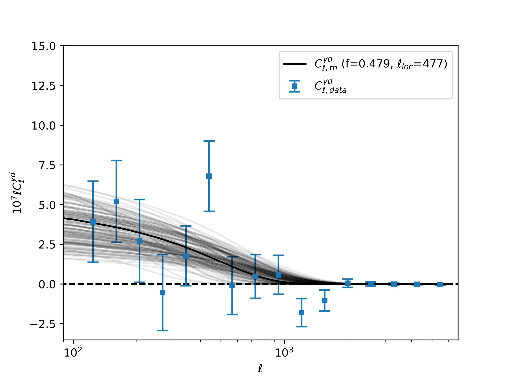 Fig04 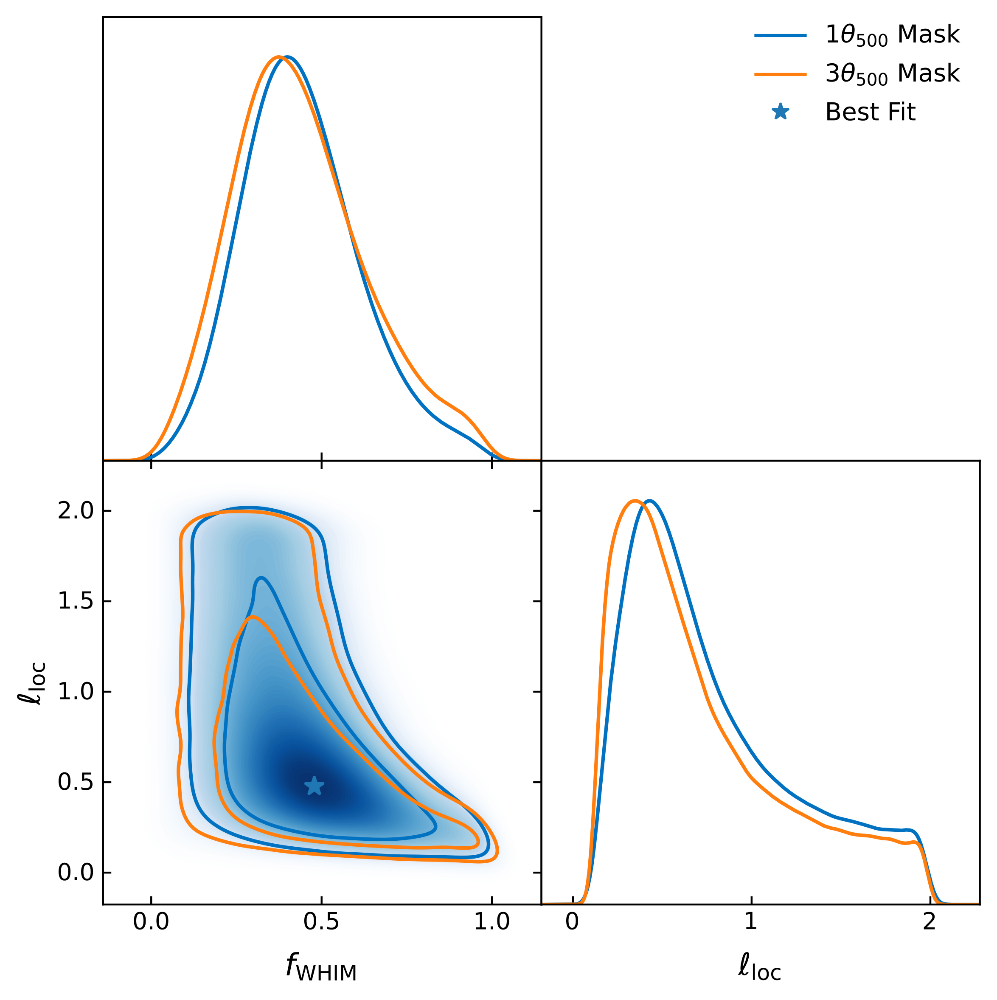展开详细解读：文章讲解、背景、理论、重点章节、图表与相关工作
文章详细讲解
关键结果是怎么做出来的
展开背景、理论、公式、模型、章节和图表导读
背景知识
基础理论 / 方法脉络
公式与推导
模型拟合 / 应用方法
重点章节 / 结果段落怎么读
建议重点查看的图表
关键图表逐图导读
论文原图 / 可嵌入图片
图注：\textbf{Angular cross-power spectrum between the FRB dispersion measures and the tSZ Compton-$y$ parameter.} The blue data points represent the measured decoupled-$C_\ell$ with error bars derived from spatial jackknife resampling (using a $1\theta_{500}$ cluster mask). The solid black line denotes the theoretical best-fit cross-power spectrum. The semi-transparent background curves are generated by randomly sampling the parameter posteriors from the MCMC chains within $5\%$ to $95\%$ percentiles, illustrating the theoretical uncertainty envelopes.
对应解读：对应“建议重点查看的图表”第3项，以及“关键图表逐图导读”中关于DM-tSZ互相关函数、模型线、误差条和理论不确定性包络的解读。
入选理由：这是本文核心探测图，直接展示FRB色散量与Planck Compton-y的角向互功率谱。图中包含观测数据点、jackknife误差条、最佳拟合理论曲线以及由MCMC后验抽样得到的理论不确定性包络，最能检验正相关是否系统性高于零、是否由特定角尺度驱动，以及模型是否能解释观测信号。
来源与置信度：\(arxiv_source\)；high；\(arxiv_source\) / main.tex:figure[3]
图注：\(\textbf{Posterior constraints on the WHIM baryon fraction and FRB localization scale.}\) The corner plot displays the 1D marginalized probability distributions and the 2D covariance contours for $f_{\rm WHIM}$ and $\ell_{\rm loc}$. Blue and orange contours are results with $1\theta_{500}$ and $3\theta_{500}$ masks, respectively. The best-fit values for $1\theta_{500}$ result, calculated via the 2-dimensional KDE, are $f_{\rm WHIM} = 0.48$ and $\ell_{\rm loc} = 477$. The $68\%$ confidence intervals of marginalized distribution are $0.27
入选理由：该图给出f_WHIM的后验约束，并比较1θ500与3θ500星系团遮蔽下的结果。虽然横轴/纵轴不是日报预期的f_WHIM-T_WHIM二维退化，而是f_WHIM与FRB定位尺度ell_loc，但它直接承载摘要中的f_WHIM=0.48和68%置信区间，也是判断更严格群团遮蔽后推断是否稳定的关键图。
来源与置信度：\(arxiv_source\)；high；\(arxiv_source\) / main.tex:figure[4]
Fig01

图注：\(\textbf{Sky distribution of the FRB sample and the masked tSZ map.}\) \(\textbf{(a)}\) The spatial distribution of FRBs and galaxy clusters. Blue and green dots represent clusters from the PSZ2 and MCXC-II catalogs, respectively. Crosses indicate FRBs located within a $3\theta_{500}$ exclusion radius of any cluster and these are discarded. Orange dots represent the final FRB sample retained for the cross-correlation measurement. \(\textbf{(b)}\) The masked Compton-$y$ parameter map. Circular regions within a $3\theta_{500}$ radius around all cataloged clusters are excluded to isolate the diffuse WHIM signal. The exclusion mask is smoothed using a cosine apodization to prevent ringing artifacts. The Galactic plane and bright point sources are also masked out.
对应解读：对应“建议重点查看的图表”第1、2项，以及“关键图表逐图导读”中样本、Planck y图、银河面掩膜、点源掩膜和星系团遮蔽的导览。
入选理由：该图同时展示FRB样本、PSZ2/MCXC-II星系团、被3θ500排除的FRB、最终保留样本以及遮蔽后的Compton-y图。它是理解互相关是否可能受银河面、强y源、星系团遮蔽和可用天区选择函数影响的基础，比单纯结果图更能支撑系统误差解读。
来源与置信度：\(arxiv_source\)；high；\(arxiv_source\) / main.tex:figure[1]
Fig05
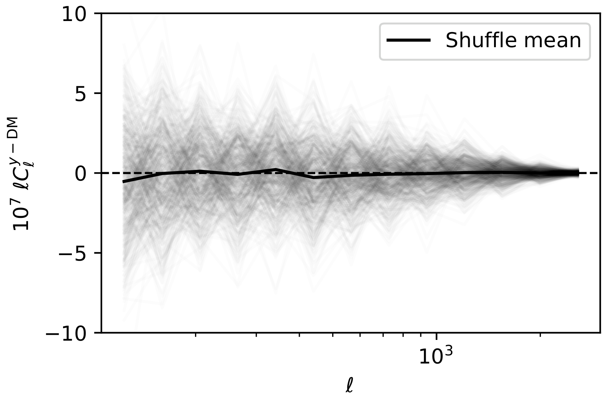
图注：\(\textbf{Non-uniform CHIME sky coverage and detection sensitivity.}\) The semi-transparent lines show the power spectra of 512 RA-randomized catalogs. The solid black line shows the mean value of randomized power spectra.
对应解读：对应“建议重点查看的图表”第4项，以及“模型拟合”部分关于随机目录、CHIME非均匀天区覆盖和选择函数保留的讨论。
入选理由：该图展示512个RA随机化目录的功率谱及其均值，用于诊断CHIME非均匀天空覆盖和探测灵敏度对互相关统计量的影响。虽然它不是完整的显著性零分布直方图，也没有直接标出真实统计量在99.77%分位的位置，但它是候选图中最接近null test/随机目录系统检验的图。
来源与置信度：\(arxiv_source\)；high；\(arxiv_source\) / main.tex:figure[5]
Fig02
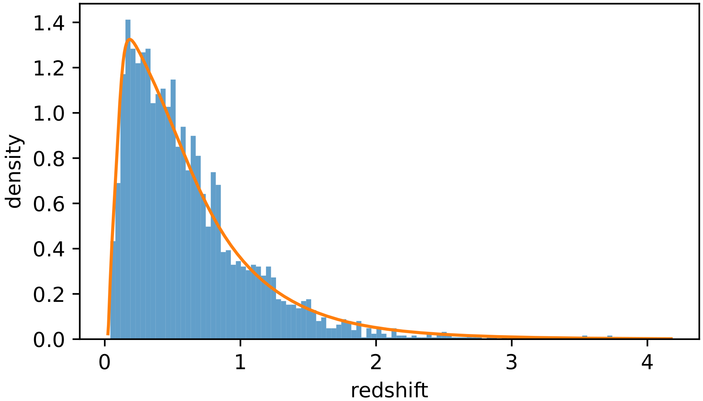
图注：\(\textbf{Redshift distribution of FRBs in CHIME Catalog 2.}\) Blue bars are histogram of median pseudo redshift of each FRB. Red curve is the interpolated redshift distribution given by smoothing the logarithmic KDE curve.
对应解读：对应“模型拟合”部分关于FRB伪红移分布、DM到IGM柱密度解释以及缺失红移处理的讨论。
入选理由：该图给出CHIME第二目录FRB的中位伪红移分布及平滑KDE曲线，有助于理解理论互相关模型中视线距离权重和样本选择。它不直接展示DM-y相关、遮蔽稳健性或f_WHIM后验，因此科学诊断价值低于Fig01、Fig03和Fig04。
来源与置信度：\(arxiv_source\)；high；\(arxiv_source\) / main.tex:figure[2]
Fig06
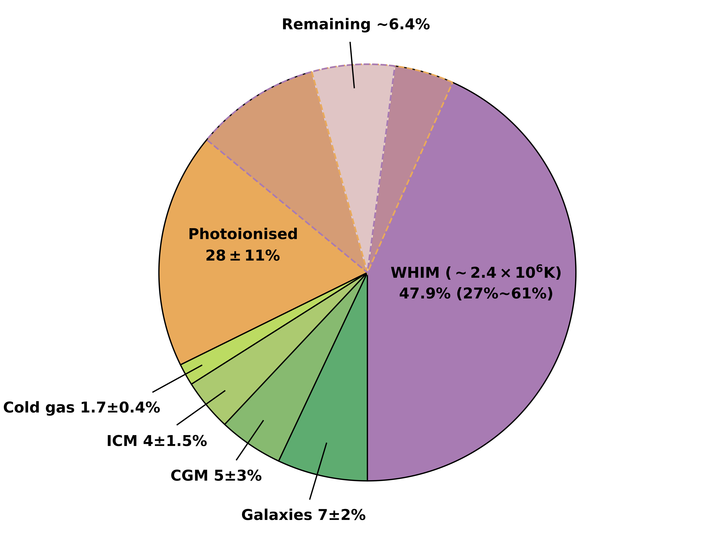
图注：\(\textbf{The closed cosmic baryon budget.}\) The pie chart illustrates the partitioning of baryonic matter into various cosmological components. Dense and collapsed phases, including galaxies (stars and ISM), cold gas, the CGM and ICM, comprise roughly $18\%$ of the total budget. The diffuse photoionized gas (Ly$\alpha$ forest) accounts for $28\% \pm 11\%$. Our FRB-tSZ cross-correlation analysis constrains the warm-hot intergalactic medium (WHIM, anchored at $T_e \sim 2.4 \times 10^6 \ {\rm K}$) to be the dominant component, containing $47.9\%$ of the baryons with an estimated uncertainty of $\sim 13\%$. The semitransparent wedges with dashed contours represent the upper $1\sigma$ uncertainty boundaries for the photoionized and WHIM components. The remaining unassigned fraction of $6.4\%$ is fully enclosed by the overlapping $1\sigma$ error margins of these two diffuse phases.
对应解读：对应“详细解读”中的关键结果和宇宙重子预算闭合讨论。
入选理由：该图以饼图形式总结本文推断的WHIM重子占比及其在整体宇宙重子预算中的位置，适合呈现结论性图像。但它不是互相关测量、null test、遮蔽稳健性或参数拟合诊断图，不能直接检验信号来源和系统误差，因此优先级最低。
来源与置信度：\(arxiv_source\)；high；\(arxiv_source\) / main.tex:figure[6]
强相关工作
这篇工作与快速射电暴“称重宇宙重子”的路线直接相连。Macquart 等基于有红移快速射电暴建立了 \({\rm DM}\)-\(z\) 关系，证明快速射电暴可以追踪星系际重子；本文进一步把 \({\rm DM}\) 与热 Sunyaev–Zel'dovich \(y\) 结合，试图区分电子柱密度和热状态。检索关键词可用“fast radio bursts missing baryons dispersion measure redshift relation”、“FRB baryon census”、“FRB Sunyaev Zel'dovich cross correlation”。
它也与 Planck、ACT、SPT 等 CMB 实验通过热 Sunyaev–Zel'dovich 效应寻找弥散气体的工作相关。过去很多研究用星系对之间的 \(y\) 叠加、星系团外缘热压剖面或星系巡天与 \(y\) 图互相关寻找宇宙网热气体，但这些方法容易受星系晕和群团反馈模型影响。本文用快速射电暴提供独立电子柱密度权重，因此与传统星系-\(y\) 互相关互补。检索关键词可用“Planck tSZ cosmic web WHIM”、“galaxy pair thermal SZ filaments”、“missing baryons warm-hot intergalactic medium”。
基础理论方面，Cen 与 Ostriker 等早期宇宙水动力学模拟提出低红移重子大量进入暖热星系际介质，是本文解释框架的历史原型。相反或张力来源主要不是否认暖热相存在，而是关于它的温度分布、金属丰度、是否主要在星系晕或星系群中、以及不同探针对 \(f_{\rm WHIM}\) 的归因是否一致。读者应检索“WHIM simulations feedback baryon fraction”、“OVII OVIII absorption missing baryons controversy”、“CGM versus WHIM baryon budget”。
同一事件 / 同类源线索：
相似工作：
基础理论 / 方法工作：
相反观点 / 张力线索：
（未提供）
8. NASA ASTRA Initiative White Paper: Space-Based Mission for Ultrahigh Energy Particles
- 来源：arXiv / astro-ph.HE
- 链接：https://arxiv.org/abs/2608.09835v1
- 作者：Mauricio Bustamante, Johannes Eser, Ke Fang, Claire Guépin, John Krizmanic, Eric Mayotte, Keith McBride, Kohta Murase
- 评分：novelty 6/10，importance 8/10，relevance 9/10，final 8.75/10
- 推荐理由：NASA ASTRA空间UHE粒子任务白皮书，覆盖EeV宇宙线、PeV-EeV中微子和高能光子，虽新结果有限但对未来高能多信使仪器规划有参考价值。
中文题目：NASA ASTRA 倡议白皮书：面向超高能粒子的空间任务
做了什么：这篇白皮书讨论为什么需要一个空间平台来同时观测超高能宇宙线、极高能中微子和高能光子。核心问题是：地面阵列已经把 \(E_{\rm CR}\gtrsim 1\,{\rm EeV}\) 宇宙线研究推进到高统计量时代，但源、成分、加速机制和传播损失仍然没有闭合；而 \(E_\nu\gtrsim 1\,{\rm PeV}\) 的中微子事件数太少，难以系统连接到宇宙线起源。作者主张，空间观测器利用大视场和巨大大气靶体，可显著增加对极端能量多信使事件的曝光量，为宇宙线源定位、宇宙源演化、宇宙线成分以及新物理检验提供新的观测维度。
为什么重要：超高能粒子天文学的瓶颈不是单个探测器灵敏度的小幅提升，而是对稀有事件的全局曝光、全天覆盖和多信使联合能力。若能从轨道上监测大气荧光、切伦科夫光或地球掠射 \(\tau\) 中微子诱发级联，任务可能把目前由地面阵列和冰/水中微子望远镜分割的参数空间连接起来。
理论 / 观测 / 仪器方法价值：它的价值主要在仪器和任务定义层面：把超高能宇宙线、宇宙源中微子和光子放进同一空间任务框架，强调共同的曝光量、能量阈值、角分辨率、瞬变触发和多信使告警需求。对白皮书读者来说，它不是给出某个已建仪器的最终结果，而是定义未来十年空间极端粒子天文学应优化哪些科学指标。
为什么应该关注：如果你关心宇宙线源、瞬变喷流、活动星系核、伽马暴、潮汐瓦解事件、宇宙背景辐射吸收或超高能截面，这篇文章值得看，因为它把这些问题转化为任务设计约束：需要多大曝光、怎样的能区覆盖、怎样的视场、怎样的背景抑制和怎样的多信使响应，才能把“可能的源模型”变成可检验的统计结论。
展开详细解读：文章讲解、背景、理论、重点章节、图表与相关工作
文章详细讲解
科学问题：白皮书针对的是 \(E_{\rm CR}\gtrsim 1\,{\rm EeV}\) 宇宙线和 \(E_\nu\gtrsim 1\,{\rm PeV}\) 中微子这一稀有粒子领域的核心缺口。超高能宇宙线已经观测了一百多年，地面阵列测到能谱的 ankle、通量抑制和到达方向各向异性线索，但源天体、核成分、最大加速能量、银河外磁场偏转和传播损失之间仍高度纠缠。中微子本来可以提供几乎不受磁场偏转的方向信息，并直接标记强子相互作用，但在 PeV 以上的统计量仍很小，难以区分宇宙源中微子、宇宙线传播产生的 cosmogenic 中微子和可能的瞬变关联。
作者怎么做：文章以 NASA ASTRA 倡议白皮书的形式组织论证，重点不是报告一个新数据集，而是提出空间任务的科学理由和观测需求。它把三类信使放在一起：宇宙线诱发的大气广延空气簇射、极高能中微子诱发的上行或近地平线簇射，以及伴随强子过程或传播过程产生的高能光子。空间平台的关键思想是从轨道俯视巨大大气体积和地表区域，用荧光、切伦科夫或混合观测方式获得远大于单个地面站的瞬时几何接收度，并通过全天空巡天补足地面阵列在视场和半球覆盖上的限制。
关键结果：白皮书的主要结论是，若要真正推进超高能粒子天文学，任务设计必须同时服务于几个可量化目标：在最高能宇宙线端提高曝光以研究谱形和各向异性；在 \({\rm PeV}\) 到 \({\rm EeV}\) 中微子能区扩大有效体积以寻找宇宙源和 cosmogenic 通量；在多信使框架下响应伽马暴、活动星系核耀发、潮汐瓦解事件和引力波事件；并且需要把系统误差、能量标定、云层和夜光背景纳入任务级指标。它强调的是一个平台级科学收益：同一任务可同时约束源模型、传播模型、强子相互作用和极端能量下粒子物理。
局限和下一步：作为白皮书，它通常不会像实验论文那样给出完整的事件选择、最终灵敏度曲线和盲分析显著性；读者应把它视为科学需求文档，而不是已完成探测声明。下一步应包括具体载荷方案、轨道选择、触发架构、背景模型、云监测方案、端到端蒙特卡罗、与地面阵列交叉标定以及与 IceCube-Gen2、Pierre Auger Observatory、Telescope Array 等设施的联合观测策略。特别需要警惕的是，空间平台的大几何孔径并不自动等于高发现率；阈值、占空比、背景、云覆盖和重建系统误差可能决定最终科学产出。
关键结果是怎么做出来的
本文最重要的“结果”不是某个源的发现，而是对未来空间超高能粒子任务的证据链式论证。数据层面，作者从现有观测事实出发：地面宇宙线阵列已经积累 \(E_{\rm CR}\gtrsim 1\,{\rm EeV}\) 事件，但最高能端通量极低；IceCube 等中微子实验已经开启 \({\rm TeV}\) 到 \({\rm PeV}\) 天文学，但 \(E_\nu\gtrsim 1\,{\rm PeV}\) 的事件数仍少，尚不能绘出清晰源族图像。这种“宇宙线有事件但难指源、中微子可指源但事件少”的互补性，是白皮书提出空间任务的直接依据。
样本和事件数方面，白皮书关注的是未来曝光而非已有样本再分析。对超高能宇宙线，关键量应是年曝光 \({\cal E}(E)\)、全天覆盖率、能量阈值和到达方向重建；对中微子，关键量应是有效面积 \(A_{\rm eff}(E_\nu,\Omega)\)、地球吸收、\(\tau\) 出射概率、触发效率和占空比。读者在文中若看到任务概念图或灵敏度比较图，应检查它们是否把这些因子显式纳入，而不仅仅引用“可观测体积很大”的几何直觉。
统计显著性在这类白皮书中通常表现为预测事件数和通量上限的可达性，而不是正式的 \(p\)-value。其基本逻辑是用源模型或传播模型给出通量 \(\Phi(E)\)，再与任务响应卷积得到期望计数 \(\mu\)，并用 Poisson 统计估计发现潜力或排除能力。若文章给出不同模型曲线，读者应关注它们相对于现有 IceCube、Auger、Telescope Array 和 ANITA 类约束的距离；如果模型之间相差小于仪器系统误差，则任务宣称的“区分能力”需要谨慎解读。
支撑结论的图表通常会包括三类：一是宇宙线能谱、成分或各向异性现状图，说明现有张力和未解问题；二是中微子灵敏度或曝光量比较图，显示空间平台可覆盖的 \({\rm PeV}\) 到 \({\rm EeV}\) 区域；三是任务观测几何图，说明下视大气荧光、临边切伦科夫或地球掠射 \(\tau\) 中微子通道。读者要重点看坐标是否是 \(E^2\Phi\)、积分通量还是微分通量，能区是否统一，曝光时间是否一致，以及曲线是否已经包含真实占空比。
系统误差和稳健性是本文论证最需要检查的部分。空间荧光观测受夜侧占空比、月光、气辉、云层、气溶胶和大气透明度影响；临边切伦科夫通道受地表反照率、触发阈值和瞬态光背景影响；中微子通道受 \(\nu N\) 截面、\(\tau\) 能量损失和地形影响。一个强健的任务论证应展示这些系统误差如何传播到能量标定、有效面积、背景率和最终灵敏度，而不只是给出理想化有效孔径。
模型比较方面，本文隐含的比较对象包括纯质子和重核宇宙线源模型、强源演化和弱源演化 cosmogenic 中微子模型、瞬变源和稳态源贡献，以及标准模型和可能的新相互作用。关键不是某一模型是否漂亮，而是空间任务是否能把目前都还可行的一大类模型压缩到少数可检验分支。
展开背景、理论、公式、模型、章节和图表导读
背景知识
研究对象是宇宙中最高能的已知粒子。\(E_{\rm CR}\gtrsim 1\,{\rm EeV}\) 的宇宙线粒子宏观上像极稀有的天然加速器输出，单个粒子能量可达到实验室加速器无法直接复制的尺度。它们进入地球大气后产生广延空气簇射，地面阵列通过水切伦科夫探测器、闪烁体、荧光望远镜或射电天线重建能量、方向和成分。
历史问题有三个层次。第一，能谱为什么在 ankle 附近变硬、在最高能端变软，是源最大能量、传播中的 GZK 损失，还是成分变化共同造成的？第二，到达方向为何没有出现简单的点源图像，是因为磁场偏转、源太多、源太暗，还是成分偏重？第三，超高能宇宙线在源内和传播途中应产生中微子和伽马射线，但这些副产物的观测约束尚未形成单一图像。
观测背景是地面和地下设施各有所长。Pierre Auger Observatory 和 Telescope Array 在超高能宇宙线方面提供最大统计量和能谱、成分、各向异性约束；IceCube 在 \({\rm TeV}\) 到 \({\rm PeV}\) 中微子天文学上已有突破；ANITA、ARA、ARIANNA、RNO-G 等实验探索更高能中微子；Fermi、HAWC、LHAASO、CTA 类设施补充高能伽马射线视角。空间任务试图在极端能区用大视场弥补事件稀少的根本限制。
为什么现在值得重新看：多信使天文学已经从概念变成工作模式。IceCube-170922A 与 blazar 关联、GW170817 的电磁对应体、LHAASO 对 PeVatrons 的发现、Auger 的大尺度各向异性等结果都显示，单一信使很难独立锁定源物理。未来十年如果有 IceCube-Gen2、CTA、Rubin、Roman、Einstein Probe、COSI、引力波三代探测器等同时运行，空间超高能粒子任务的瞬变联动价值会明显上升。
常见误区之一是把“空间观测”简单理解为“比地面阵列大”。实际有效灵敏度取决于触发阈值、夜侧占空比、大气条件、背景抑制、能量重建和长期稳定性。另一个误区是把 cosmogenic 中微子看作必然很快发现；它的通量对宇宙线成分、源演化和最高能端注入谱极其敏感，重核主导模型可以显著降低预期事件率。还有一个误区是忽视磁场：即便中微子可指源，宇宙线到达方向仍可能因银河和银河外磁场发生复杂偏转，联合解释必须把成分和磁场纳入。
基础理论 / 方法脉络
基础物理图像从空气簇射开始。一个 \(E_{\rm CR}\gtrsim 1\,{\rm EeV}\) 的原初宇宙线进入大气后，与空气核发生强相互作用，产生高能强子、电磁级联和缪子分量。荧光观测记录氮分子受激后发出的近紫外光，近似量热地追踪簇射纵向发展；地面粒子探测器记录到达地面的粒子密度和时间结构；射电或切伦科夫技术记录电磁级联的相干或瞬时辐射。
对中微子，关键是它既穿透性强又相互作用弱。下行中微子可能在大气中深处相互作用，产生深穿透簇射；地球掠射 \(\nu_\tau\) 可在地壳中相互作用生成 \(\tau\)，\(\tau\) 逃出地表后在大气衰变，产生向上的空气簇射。空间平台若能从轨道上看地球临边，就可利用很大的地表和大气体积作为靶体。
本文隐含的任务模型假设包括：粒子通量可用能量和方向的函数 \(\Phi(E,\Omega)\) 描述；仪器响应可用有效面积或有效孔径 \(A_{\rm eff}(E,\Omega,t)\) 表示；触发和重建效率可通过蒙特卡罗标定；背景包括大气瞬变光、闪电、流星、卫星反光、夜光和云层散射。科学能力最终体现在曝光量 \({\cal E}(E)\) 与背景率 \(b\) 的组合，而不是单独的几何视场。
常见退化关系包括能量标定与能谱斜率退化、成分与强子相互作用模型退化、源演化与注入谱退化、宇宙线最大刚度与源组成退化。对中微子，\(\nu N\) 截面、\(\tau\) 能量损失、地球密度模型和触发效率会共同影响有效面积。对光子，宇宙背景辐射吸收和电磁级联会把源内产生的高能光子重分布到较低能段，造成与源谱和传播环境的混淆。
观测方法上，读者应把这类任务理解为“响应函数驱动”的天文实验。不是看到一个光点就完成探测，而是需要从瞬态光迹重建簇射几何、最大深度 \(X_{\max}\)、能量、方向和可能的粒子类型，再把重建事件通过选择函数转化为通量或上限。因此白皮书若讨论任务需求，最关键的是它是否把响应、背景、系统误差和多信使触发闭合在同一个统计框架中。
公式与推导
第一步是从通量到计数。设粒子微分通量为 \(\Phi(E,\Omega)\)，单位可理解为每单位面积、时间、立体角和能量的粒子数；仪器对能量 \(E\)、方向 \(\Omega\) 和时间 \(t\) 的有效面积为 \(A_{\rm eff}(E,\Omega,t)\)。期望事件数为
这条式子是白皮书中所有“曝光量”“发现潜力”和“灵敏度”论证的共同基础。
第二步定义曝光量。若把时间和方向响应合并，可写成
这里 \({\cal E}(E)\) 包含视场、占空比、云覆盖、触发效率和质量选择。空间任务的优势通常体现在 \({\cal E}(E)\) 在极高能端较大，但低能阈值可能受光学口径和背景限制。
第三步连接宇宙线空气簇射的量热能量。荧光光子数 \(N_\gamma\) 与能量沉积 \(dE_{\rm dep}/dX\) 的关系可近似写为
其中 \(X\) 是大气深度，\(Y_\gamma(X)\) 是荧光产额，\(T(X)\) 是大气透过率。重建原初能量还需补偿不可见能量 \(E_{\rm inv}\)，即
这说明大气模型、荧光产额和不可见能修正会直接进入能量系统误差。
第四步是成分诊断。簇射最大深度 \(X_{\max}\) 对原初核质量数 \(A\) 的一阶近似可写为
其中 \(D\) 是 elongation rate，\(X_0\) 和 \(E_0\) 是模型相关常数。这个关系说明质子通常比重核发展得更深，但强子相互作用模型会改变 \(X_{\max}\) 的解释。
第五步描述地球掠射 \(\nu_\tau\) 通道。中微子在地球中存活并相互作用产生可出射 \(\tau\) 的概率可概念化为
其中 \(n_N\) 是核子数密度，\(\sigma_{\nu N}\) 是中微子核子截面，\(\theta\) 是入射角，\(P_\tau\) 表示 \(\tau\) 出射和存活概率。该式说明有效面积强烈依赖地球吸收和 \(\tau\) 能量损失。
第六步把中微子有效面积写成几何面积与概率因子的乘积：
其中 \(A_{\rm geom}\) 是可视靶区几何面积，\(P_{\rm dec}\) 是 \(\tau\) 在可观测大气体积内衰变的概率，\(\epsilon_{\rm trig}\) 是触发效率。空间任务真正要优化的是这些因子的乘积。
第七步给出背景下的计数似然。若观测到 \(n_i\) 个事件落在能量或方向 bin \(i\)，模型预期为 \(s_i(\boldsymbol{\theta})+b_i\)，则
这里 \(\boldsymbol{\theta}\) 可代表通量归一化、谱指数、源演化或成分参数。白皮书中的灵敏度曲线本质上都对应这种似然或其简化版本。
第八步是发现或排除的检验统计量。常用似然比可写为
其中 \(\hat{\boldsymbol{\theta}}\) 是最佳拟合参数，\(\boldsymbol{\theta}_0\) 是零信号或基准模型。若满足渐近条件，\(TS\) 可近似转化为显著性；在稀有事件和边界参数问题中，则应使用蒙特卡罗或 Feldman-Cousins 类构造。
第九步是零事件上限的直观标尺。若背景可忽略且观测到 \(n=0\)，则约 \(90\\%\) 置信水平的信号上限满足
其中 \(S(E)\) 是假设谱形的归一化模板。这个关系让读者快速检查一条灵敏度曲线是否与给定曝光量相符。
模型拟合 / 应用方法
这类白皮书背后的模型拟合通常分两层。第一层是仪器响应拟合或标定：用端到端蒙特卡罗把真实粒子能量 \(E\)、方向 \(\Omega\)、相互作用位置和大气条件映射到触发概率、重建能量、角分辨率、\(X_{\max}\) 分辨率和误分类率。这里拟合的不是天体参数，而是响应矩阵 \(R(d|E,\Omega)\)，其中 \(d\) 代表观测数据特征。
第二层是天体模型拟合。对宇宙线，常见参数包括注入谱指数、最大刚度 \(R_{\max}\)、源红移演化、核组成分量和本地源密度；对中微子，常见参数包括通量归一化、谱指数、风味比例、瞬变率和源演化；对光子，还要加入源内吸收和星系际背景光吸收。拟合对象可以是能谱、到达方向、成分指标、事件时间分布和多信使关联概率。
似然选择取决于数据类型。计数稀少时常用 Poisson likelihood；能量和方向连续分布时可用 unbinned likelihood；对瞬变关联可加入时间窗和空间窗项；对已有实验约束的预测比较可用 profile likelihood 或 Bayesian posterior predictive checks。白皮书级别的灵敏度通常会采用 Asimov 数据集或代表性模型，而真正任务实施后需要盲分析、背景控制区和注入恢复检验。
参数退化非常关键。宇宙线能谱的最高能截断既可能来自源最大刚度，也可能来自传播能量损失；\(X_{\max}\) 的浅化既可能表示成分变重，也可能受强子模型影响；中微子通量低既可能表示源不强，也可能表示宇宙线为重核、源环境低光深或源演化弱。空间任务若只提高事件数而不能改善能量标定、角分辨和成分敏感性，仍可能无法打破这些退化。
系统误差应作为 nuisance parameters 纳入拟合，而不是事后说明。典型项包括荧光产额、光学效率、夜光背景、云层遮挡、气溶胶、轨道姿态、触发阈值、\(\nu N\) 截面、\(\tau\) 能量损失、地磁场和地形模型。实际应用中，最好与地面阵列重叠观测一部分事件，用交叉标定减少能量尺度差异，并用实时云监测和大气激光系统约束大气传输。
模型失败的信号也值得提前定义。例如，若空间任务测到的宇宙线各向异性与重核成分不一致，可能指向磁场模型错误；若 cosmogenic 中微子仍未发现但宇宙线成分偏轻且源演化强，则会对传播模型或源分布产生压力；若发现候选中微子瞬变关联但缺少伽马射线对应体，则可能需要考虑隐藏源或源内高光深环境。
重点章节 / 结果段落怎么读
数据与科学动机部分应优先阅读。这里通常会回顾超高能宇宙线能谱、成分、各向异性和 PeV 以上中微子现状。读者要把注意力放在“现有观测无法回答什么”上，而不是只看任务愿景。
任务概念与观测通道部分是全文技术核心。应检查作者如何区分大气荧光、临边切伦科夫、地球掠射 \(\nu_\tau\) 和高能光子通道；每个通道的阈值、占空比、视场、角分辨和背景来源是否被单独说明。
灵敏度、曝光量或科学可达性部分最值得细读。读者应追踪每条曲线的假设：观测年限、占空比、触发效率、云层处理、能量阈值、背景率、谱形假设和置信水平。白皮书中的结论强度主要取决于这些假设。
多信使与源模型讨论部分需要和当前观测文献对照。它通常会谈到伽马暴、活动星系核、潮汐瓦解事件、星暴星系、隐藏源和 cosmogenic 中微子。读者应关注任务能否区分稳态源和瞬变源，以及是否能与 IceCube、Auger、Telescope Array、LIGO-Virgo-KAGRA、Fermi 和 Rubin 等协同。
系统误差、技术成熟度和下一步部分决定方案可信度。重点看光学系统、触发电子学、轨道选择、数据下传、大气监测、交叉标定和仿真验证是否形成闭环。如果这些内容很薄，就应把科学收益视为愿景而非定量承诺。
建议重点查看的图表
-
超高能宇宙线能谱现状图：看 \(E^3J(E)\) 或类似缩放后能谱中 ankle 和最高能抑制的位置，注意不同实验能量尺度是否统一。
-
成分或 \(X_{\max}\) 诊断图：看 \(\(\langle\) X_{\max}\
angle) 和方差随能量的变化，关注强子相互作用模型带来的解释范围。 -
到达方向各向异性图：看全天或半天覆盖、热点、偶极方向和置信区间，注意磁场偏转和 trial factor。
-
中微子灵敏度比较图：看纵轴是 \(E^2\Phi\)、积分通量还是 fluence；横轴能区是否覆盖 \({\rm PeV}\) 到 \({\rm EeV}\)；比较曲线是否采用相同置信水平和观测时间。
-
空间任务观测几何图：看下视、临边、地球掠射通道对应的大气体积和视场，注意几何接收度与真实有效面积之间的区别。
-
背景和占空比诊断表：看月光、云层、闪电、气辉、城市光和卫星反光如何削减有效曝光。
-
多信使响应或瞬变灵敏度图：看不同持续时间的瞬变 fluence 阈值，注意告警延迟和视场覆盖概率。
-
系统误差预算表：看能量尺度、角分辨、触发效率和大气透过率对最终通量上限或发现率的影响。
关键图表逐图导读
图 1：若论文给出宇宙线能谱综述图，横轴通常是粒子能量 \(E\)，纵轴可能是 \(J(E)\)、\(E^3J(E)\) 或 \(E^2J(E)\)。数据点应来自 Auger、Telescope Array 或历史实验，模型线可能代表不同注入谱和组成。主要结论是最高能端事件极少且谱形包含源和传播信息。读图陷阱是不同实验能量尺度存在系统偏移，不能把点间差异直接解释为天体物理差异。
图 2：若有 \(X_{\max}\) 或成分图，横轴是 \(E_{\rm CR}\)，纵轴是平均 \(X_{\max}\) 或其涨落。模型带通常对应质子、氮、铁等不同原初核以及不同强子模型。主要结论应是成分解释并不唯一。读图陷阱是把某条模型带当成真实成分标尺，而忽略高能强子相互作用外推的不确定性。
图 3：若有中微子灵敏度图，横轴是 \(E_\nu\)，纵轴多为 (E_\
\(u^2\Phi_\nu\))。现有上限和未来任务曲线会与 cosmogenic 或源模型曲线叠加。主要结论是空间任务希望打开 \({\rm PeV}\) 到 \({\rm EeV}\) 稀有事件窗口。读图陷阱是不同曲线可能对应微分灵敏度、积分上限或模型相关上限，不能直接逐点比较。
图 4：若有任务观测几何图，图上通常显示卫星轨道、视场锥、大气簇射轨迹、地球临边和 \(\tau\) 出射路径。主要结论是同一平台可以覆盖宇宙线和中微子不同通道。读图陷阱是几何面积很大不等于有效面积很大；触发阈值、衰变位置和大气透明度会大幅改变可探测概率。
图 5：若有预测事件率或曝光随能量变化图，横轴是能量，纵轴是年曝光 \({\cal E}(E)\)、有效面积 \(A_{\rm eff}\) 或期望事件数。应检查曲线是否在低能端迅速下降、在高能端受通量限制。读图陷阱是忽略观测年限和占空比，尤其是荧光观测的夜侧限制。
图 6：若有多信使源类别图或瞬变 fluence 灵敏度图，横轴可能是持续时间、距离或能量，纵轴是 fluence 阈值或可探测率。主要结论是空间平台可能补充现有中微子望远镜的高能端和全天覆盖。读图陷阱是瞬变关联显著性高度依赖时间窗、空间窗和事后选择，不能只看几何覆盖率。
论文原图 / 可嵌入图片
（未提供 verified figure；为避免编造图片链接，本节只在能确认官方图片 URL 或成功提取论文原图时嵌入图片。）
强相关工作
这篇白皮书属于“未来空间极端多信使任务”类工作，应与 POEMMA、JEM-EUSO、EUSO-SPB、TUS、ANITA、GRAND、IceCube-Gen2 radio、RNO-G 等任务或概念一起阅读。检索关键词可用 “space-based ultra-high-energy cosmic rays mission”、“extreme energy neutrino tau air shower”、“POEMMA white paper”、“JEM-EUSO exposure”、“cosmogenic neutrino sensitivity”。
它与现有观测的关系主要是互补而非替代。Auger 和 Telescope Array 提供超高能宇宙线的地面基准，IceCube 提供高能中微子天文学基准，ANITA 和射电阵列探索 EeV 中微子参数空间。若这些实验之间在能谱、成分或中微子上限上存在张力，空间任务的价值在于用独立系统误差和更大天空覆盖交叉检查。
基础理论方面，应同时检索 GZK 截断、cosmogenic neutrinos、Hillas criterion、UHECR composition、hadronic interaction models at ultra-high energy。相反观点或谨慎观点主要集中在：重核主导宇宙线模型会压低 cosmogenic 中微子通量；空间荧光任务的真实占空比和阈值可能削弱低能性能；以及极高能中微子截面和 \(\tau\) 能损模型会影响事件率预测。
同一事件 / 同类源线索：
- https://arxiv.org/abs/2608.09835
- https://www.auger.org/
- https://www.telescopearray.org/
- https://icecube.wisc.edu/
- https://www.nasa.gov/
相似工作：
- https://arxiv.org/abs/2012.07945
- https://arxiv.org/abs/1603.07349
- https://arxiv.org/abs/1907.12526
- https://arxiv.org/abs/2008.04323
基础理论 / 方法工作：
- https://ui.adsabs.harvard.edu/abs/1966PhRvL..16..748G/abstract
- https://ui.adsabs.harvard.edu/abs/1966JETPL...4...78Z/abstract
- https://ui.adsabs.harvard.edu/abs/1984ARA%26A..22..425H/abstract
- https://arxiv.org/abs/1305.1607
相反观点 / 张力线索：
9. Exploring the multi-wavelength properties of the high energetic event ZTF20abbiixp/GRB 200524A: from prompt emission to afterglow
- 来源：arXiv / astro-ph.HE
- 链接：https://arxiv.org/abs/2608.09704v1
- 作者：A. Ghosh, Dimple, K. Misra, P. Yu. Minaev, Y. Yao, D. A. Kann, M. Blazek, A. S. Pozanenko
- 评分：novelty 6/10，importance 7/10，relevance 10/10，final 8.75/10
- 推荐理由：Fermi-GBM长GRB 200524A的多波段prompt到afterglow分析，涉及伽马暴谱演化、反向激波和致密ISM环境；单源研究创新性中等，但GRB相关性很高。
中文题目：高能长暴 ZTF20abbiixp/GRB 200524A 的多波段性质：从瞬时辐射到余辉
做了什么：这篇文章对长时标伽马暴 ZTF20abbiixp/GRB 200524A 做了从 \(\gamma\) 射线瞬时辐射到 X 射线、光学、射电余辉的联合分析。作者利用 \(\textit{Fermi}\)-GBM 等空间高能数据和多台地面望远镜的光谱、测光跟进，发现该暴虽然属于长暴，却几乎没有谱滞后，瞬时谱参数呈明显的强度跟踪演化；余辉宽波段光变在 \(10^{5}\,\mathrm{s}\) 左右需要断裂幂律描述。进一步的正向激波加反向激波建模表明，早期光学辐射需要反向激波贡献，整体更支持一个高能爆发在较致密的类均匀星际介质中展开，并可能具有较高的电子和磁场能量分配比例。
为什么重要：长暴通常有可测的正谱滞后、与大质量恒星坍缩环境相关，并在余辉阶段被正向激波主导；GRB 200524A 同时表现出长暴持续时间、高能量、近零谱滞后和早期反向激波迹象，是检验“长暴内部多脉冲重叠如何影响瞬时辐射诊断”以及“早期光学余辉如何约束喷流磁化和外部介质”的有用样本。它的重要性不在于单独刷新某个极值，而在于把瞬时辐射、谱演化、光变断裂和宽波段激波建模接在一起。
理论 / 观测 / 仪器方法价值：对理论而言，本文给出一个需要同时解释近零谱滞后、强度跟踪谱演化、正向激波与反向激波共存的长暴案例；对观测而言，它展示了 ZTF 光学暂现源发现、GBM 高能触发、多设施光谱测光和射电跟进的联合作用；对方法而言，文章的价值在于用同一套多波段数据约束外部密度、动能、微物理参数和早期反向激波，而不是只用单波段光变斜率做环境判断。
为什么应该关注：如果你关心长暴分类、谱滞后作为物理或宇宙学指标的可靠性、反向激波的可探测条件，或余辉建模中 \(n\)、\(E_{\mathrm{K,iso}}\)、\(\epsilon_{e}\)、\(\epsilon_{B}\) 的退化，这篇文章值得看。它提醒我们：单靠持续时间、谱滞后或闭合关系很容易误判；真正有约束力的是覆盖足够早、足够宽波段的数据以及对正向、反向激波分量的联合拟合。
展开详细解读：文章讲解、背景、理论、重点章节、图表与相关工作
文章详细讲解
科学问题：GRB 200524A 是一个由 \(\textit{Fermi}\)-GBM 探测到的高能长时标伽马暴，并有光学暂现源编号 ZTF20abbiixp。长暴通常被理解为大质量恒星坍缩产生的相对论喷流，其瞬时辐射和余辉分别探测喷流内部耗散和喷流与外部介质相互作用。本文关注的核心问题是：这个长暴为何几乎没有谱滞后？它的瞬时谱演化是硬到软还是强度跟踪？余辉光变中的早期光学过量和 \(10^{5}\,\mathrm{s}\) 左右的断裂，能否由标准外激波解释，还是必须加入反向激波成分？这些问题共同指向喷流结构、辐射区时间重叠、外部介质密度和微物理能量分配。
作者怎么做：文章把高能瞬时辐射和余辉分成两条证据链。瞬时阶段使用 \(\textit{Fermi}\)-GBM 等空间高能数据，分析持续时间、能谱、谱滞后以及时间分辨谱参数的演化，特别检查谱峰能量 \(E_{\mathrm{p}}\)、谱指数和能流是否随光变强度同步变化。余辉阶段则收集 X 射线、光学、近红外和射电数据，并结合多台地面望远镜，包括 \(3.6\,\mathrm{m}\) Devasthal Optical Telescope 的测光和光谱资料，构造宽波段光变与谱能量分布。光变先用经验断裂幂律描述，再用定制的正向激波 \(\mathrm{FS}\) 加反向激波 \(\mathrm{RS}\) 模型做物理拟合。
关键结果：瞬时辐射方面，GRB 200524A 的谱滞后几乎可以忽略，这在长暴中并不常见。作者倾向于把它解释为多个相互重叠的发射 episode 造成的时间结构混合，而不是简单地把它归为短暴式辐射机制。谱参数演化呈强度跟踪，即 \(E_{\mathrm{p}}\) 或相关谱硬度随光变脉冲增强而变硬、随脉冲衰减而变软。余辉方面，宽波段光变可由在约 \(10^{5}\,\mathrm{s}\) 发生断裂的断裂幂律较好描述；仅用时间斜率和谱斜率推导电子能谱指数 \(p\) 时，闭合关系无法唯一地区分类均匀 \(\mathrm{ISM}\) 与风状 \(r^{-2}\) 介质。物理建模进一步表明早期光学数据需要 \(\mathrm{RS}\) 贡献，而整体参数更支持高能爆发进入较致密的类 \(\mathrm{ISM}\) 环境，并具有相对较大的 \(\epsilon_{e}\) 和 \(\epsilon_{B}\)，尤其是较高的磁场能量分配。
局限和下一步：这类多波段余辉拟合的主要局限是参数退化很强，尤其是 \(E_{\mathrm{K,iso}}\)、外部密度 \(n\)、\(\epsilon_{e}\)、\(\epsilon_{B}\)、喷流开角和反向激波磁化之间的相关性。早期光学覆盖决定了 \(\mathrm{RS}\) 结论的可信度，射电覆盖决定了自吸收频率和密度的约束力；如果射电采样较稀疏，密度和磁场参数会更依赖模型假设。下一步最有价值的是对类似“长持续时间但近零谱滞后”的 GBM/ZTF 样本做系统比较，检查近零谱滞后是否普遍对应脉冲重叠、是否与高亮度或高洛伦兹因子相关，并通过早期光学和毫米波观测判定反向激波的出现频率。
关键结果是怎么做出来的
本文最重要的证据链从样本定义开始：对象是单个命名事件 ZTF20abbiixp/GRB 200524A，其高能触发来自 \(\textit{Fermi}\)-GBM，光学对应体由 ZTF 暂现源系统标识，随后有 X 射线、光学、近红外和射电跟进。因此这不是统计样本论文，而是一个事件级的多波段个案研究。读者应首先确认作者如何选取 GBM 探测器、时间区间和背景区间，如何把触发时刻之后的高能时间结构分成不同发射 episode，以及哪些地面测光点经过了银河消光、宿主消光和滤光片转换校正。
谱滞后结果依赖能段划分和互相关函数或脉冲峰时测量。文章报告该长暴几乎没有谱滞后，关键不是简单说“滞后为零”，而是误差条是否覆盖典型长暴的正滞后范围，以及不同能段组合是否给出一致结果。作者给出的解释是多重发射 episode 相互重叠会让硬、软能段峰值在总光变中对齐，从而冲淡单个脉冲的内禀滞后。读者应检查相应光变图和谱滞后表：若每个 episode 单独拟合后仍无滞后，物理含义会更强；若只有总光变无滞后，则更支持“重叠导致观测滞后变小”的解释。
瞬时谱演化的结论来自时间分辨谱拟合。作者强调谱参数随强度跟踪，而非单调硬到软。这里需要看每个时间 bin 的 \(E_{\mathrm{p}}\)、谱指数和能流点列，最好检查 \(E_{\mathrm{p}}\)-flux 关系是否在多个脉冲中重复出现，以及低能谱指数是否接近同步辐射常见限制。模型比较上，GBM 谱通常会比较 Band 函数、cutoff power law 或 power law 等经验模型；核心诊断是拟合统计量、残差和 \(E_{\mathrm{p}}\) 是否被数据能段真正夹住，而不是由模型外推得到。
余辉结论的第一层是经验光变：宽波段数据整体可用断裂幂律描述，断裂时间约为 \(10^{5}\,\mathrm{s}\)。证据应来自多波段光变图和断裂幂律拟合参数表，包括断裂前后衰减指数、断裂平滑度和各波段归一化。关键问题是该断裂是否无色；如果 X 射线和光学在相近时刻、相近幅度发生变陡，更像喷流断裂或动力学变化；若只在某些波段明显，则可能是冷却频率穿越、能量注入结束或额外成分衰退。
余辉结论的第二层是物理建模。作者说明由时间斜率和谱斜率得到的 \(p\) 不能可靠区分 \(\mathrm{ISM}\) 与风状介质，因此进一步使用定制宽波段模型联合拟合 \(\mathrm{FS}\) 和 \(\mathrm{RS}\)。支持 \(\mathrm{RS}\) 的直接证据是早期光学点相对于纯 \(\mathrm{FS}\) 模型存在过量或衰减更快的成分。支持致密 \(\mathrm{ISM}\) 的证据应来自射电到光学的谱形、自吸收约束、峰值时间和多波段归一化的组合，而不是单一闭合关系。
主要系统误差包括光学绝对定标、宿主星消光、红移与 \(k\)-校正、X 射线吸收柱密度、射电闪烁、GBM 背景选择、以及余辉模型中固定参数对后验的影响。稳健性检验应看：去掉早期光学点后 \(\mathrm{RS}\) 是否仍被需要；改变介质剖面后拟合统计量是否明显变差；允许不同 \(\epsilon_{B}\) 或 \(\mathrm{RS}\) 磁化后参数是否仍物理合理。若这些检验都支持同一图像，本文“高能、致密 \(\mathrm{ISM}\)、早期 \(\mathrm{RS}\)”的结论就比较稳。
展开背景、理论、公式、模型、章节和图表导读
背景知识
长时标伽马暴通常定义为持续时间 \(T_{90}\gtrsim 2\,\mathrm{s}\) 的高能暂现，经典图像是大质量恒星核心坍缩形成黑洞或磁星，并驱动超相对论喷流。瞬时 \(\gamma\) 射线辐射来自喷流内部耗散，例如内激波、磁重联或光球附近耗散；余辉来自喷流扫过外部介质产生的正向激波。GRB 200524A 属于这一大类，但它的近零谱滞后和早期光学行为让它不只是一个普通长暴。
谱滞后是 GRB 研究中的老问题。许多长暴表现为高能光子峰值早于低能光子峰值，即正谱滞后；短暴的谱滞后通常更小。因此谱滞后一度被用作长短暴分类和亮度关联的诊断量。但这类诊断受光变脉冲重叠、信噪比、能段选择和宇宙学时间膨胀影响很大。一个长暴出现近零谱滞后，并不自动意味着它有短暴起源，也可能说明瞬时辐射由多个时间相近的 episode 叠加。
余辉领域的历史问题是如何从光变斜率和谱斜率反推出喷流能量、外部介质和微物理参数。标准火球模型给出一系列闭合关系，把时间衰减指数、谱指数、电子能谱指数 \(p\) 和环境剖面联系起来。但现实数据经常包含能量注入、喷流断裂、反向激波、密度起伏、宿主消光和观测选择效应。GRB 200524A 的 \(10^{5}\,\mathrm{s}\) 光变断裂和早期光学过量正好落在这些解释的交叉区。
为什么现在值得重新看？一方面，ZTF 等大视场光学巡天能快速发现或独立标识 GRB 光学对应体，使早期光学采样更完整；另一方面，\(\textit{Fermi}\)-GBM、Swift/XRT、地面中大口径望远镜和射电阵列的联合数据，使单个事件也能获得接近全谱段的约束。对反向激波而言，早期观测窗口很短，漏掉最初几小时就很难区分 \(\mathrm{RS}\) 与单纯的 \(\mathrm{FS}\) 上升或能量注入。
该领域常见误区有三点。第一，把 \(T_{90}\) 或谱滞后当成物理起源的充分判据；事实上它们只是观测分类量。第二，把闭合关系给出的 \(\mathrm{ISM}\) 或 wind 判断看得过重；当误差、消光、冷却频率位置和额外成分未被充分约束时，闭合关系往往并不唯一。第三，把高 \(\epsilon_{B}\) 直接理解为喷流必然高度磁化；余辉中的 \(\epsilon_{B}\) 是激波后区域有效磁场能量比例，可能受微湍流、压缩、反向激波磁化和模型简化共同影响。
基础理论 / 方法脉络
基础物理图像是，一个能量为 \(E\) 的相对论壳层以初始洛伦兹因子 \(\Gamma_{0}\) 向外传播。瞬时辐射阶段记录的是喷流内部的耗散历史，因此光变脉冲、谱峰能量 \(E_{\mathrm{p}}\)、低高能谱指数和谱滞后反映了辐射区半径、冷却、几何曲率效应和中心引擎时间结构。若多个发射 episode 在时间上重叠，互相关测得的整体谱滞后会被“混合”，不再等于单个脉冲的内禀硬软演化时间。
余辉阶段的关键是外激波。正向激波 \(\mathrm{FS}\) 向外部介质传播并加速电子，反向激波 \(\mathrm{RS}\) 向抛射物内部传播并在早期产生低频、光学或射电辐射。电子通常假设服从幂律分布 \(N(\gamma_{e})\propto \gamma_{e}^{-p}\)，其中 \(p\) 决定同步辐射谱斜率。微物理参数 \(\epsilon_{e}\) 和 \(\epsilon_{B}\) 分别表示激波后内能进入非热电子和磁场的比例。
外部介质通常有两种理想化剖面：类均匀星际介质满足 \(n(r)=n_{0}\)，风状介质满足 \(n(r)\propto r^{-2}\)。大质量恒星前身星自然可能产生风状介质，但许多长暴余辉却被类 \(\mathrm{ISM}\) 模型拟合得更好，这可能与终止激波、局部泡结构或参数退化有关。本文的重要点是，仅靠闭合关系得到的 \(p\) 无法明确区分两种环境，因此作者转向宽波段联合建模。
观测方法上，瞬时辐射需要从探测器计数谱反演光子谱，余辉则需要把不同滤光片和频段的通量统一到物理单位，校正银河消光、宿主消光和吸收，并在共同时间轴上拟合。X 射线谱约束吸收和高频谱斜率，光学约束衰减和消光，射电约束低频峰值、自吸收和介质密度。早期光学点若高于纯 \(\mathrm{FS}\) 外推，且衰减较快，常是 \(\mathrm{RS}\) 的候选证据。
主要退化包括 \(E_{\mathrm{K,iso}}\) 与 \(n\) 同时提高可增强通量，\(\epsilon_{B}\) 与 \(n\) 都影响冷却频率和射电峰，宿主消光可模仿光学谱变红，喷流断裂可与能量注入结束或冷却频率穿越混淆。对于本文，近零谱滞后的解释也有退化：它可以来自脉冲重叠、辐射区快速冷却、几何效应减弱，或高信噪比下不同 episode 的对齐；因此必须结合时间分辨谱演化而非单独使用滞后。
公式与推导
第一步是把观测分类量和源系时间联系起来。若观测到的持续时间为 \(T_{90,\mathrm{obs}}\)，红移为 \(z\)，源系持续时间为
这里 \(T_{90}\) 是累积计数从 \(5\%\) 到 \(95\%\) 的时间宽度。它帮助判断事件在观测分类上属于长暴，但不等同于中心引擎真实活动时间。
谱滞后可用两个能段光变 \(C_{h}(t)\) 和 \(C_{s}(t)\) 的互相关函数估计：
使 \(\mathrm{CCF}(\Delta t)\) 最大的 \(\Delta t\) 就是观测谱滞后；若 \(\Delta t\approx 0\) 且误差较小，说明高、低能段峰值几乎同步。但若 \(C_{h}\) 和 \(C_{s}\) 都是多个脉冲叠加，\(\Delta t\) 会受到脉冲重叠影响。
瞬时能谱常用 cutoff power law 或 Band 函数描述。一个简化的 cutoff power law 可写成
其中 \(N(E)\) 是光子数谱，\(A\) 是归一化，\(E_{0}\) 是枢轴能量，\(\alpha\) 是低能光子指数，\(E_{\mathrm{p}}\) 是 \(\nu F_{\nu}\) 谱峰能量。强度跟踪演化可通过比较不同时间 bin 的 \(E_{\mathrm{p}}(t)\) 与能流 \(F(t)\) 来检验。
由观测能流得到各向同性等效能量需要积分：
其中 \(d_{L}\) 是光度距离，\(S_{\mathrm{bolo}}\) 是校正到指定源系能段后的 bolometric fluence。该量刻画瞬时辐射能量规模，但真实喷流能量还需乘以准直因子。
外激波减速的基本条件是扫掠外部物质的静能与喷流惯性能量相当。对均匀介质，减速半径近似为
其中 \(E_{\mathrm{K,iso}}\) 是各向同性等效动能，\(n\) 是数密度，\(m_{p}\) 是质子质量，\(c\) 是光速，\(\Gamma_{0}\) 是初始洛伦兹因子。反向激波光学峰常与减速时刻接近。
同步辐射模型的电子最低洛伦兹因子可写为
适用于 \(p>2\) 且电子获得固定比例内能的情形。这里 \(m_{e}\) 是电子质量，\(\Gamma\) 是激波后流体洛伦兹因子。这个式子说明 \(\epsilon_{e}\)、\(p\) 和 \(\Gamma\) 控制低能端特征频率。
激波后磁场可由能量分配写为
其中 \(B'\) 是共动系磁场。于是典型同步频率满足
其中 \(q_{e}\) 是电子电荷。\(\nu_{m}\) 的位置决定早期光学是否位于谱峰以上或以下。
冷却频率近似为
其中 \(\sigma_{T}\) 是 Thomson 截面，\(t\) 是观测时间，\(Y\) 是 Compton 参数。\(\epsilon_{B}\) 越大，\(B'\) 越强，\(\nu_{c}\) 越低；这就是 \(\epsilon_{B}\) 与 X 射线、光学谱斜率强相关的原因。
在给定频段内，余辉通量常近似为
闭合关系把 \(\alpha_{t}\)、\(\beta\)、\(p\) 和介质类型联系起来。例如慢冷却且 \(\nu_{m}<\nu<\nu_{c}\) 的均匀介质有 \(\beta=(p-1)/2\) 与 \(\alpha_{t}=3(p-1)/4\)。若观测斜率误差较大或存在 \(\mathrm{RS}\)，这个诊断会失效。
模型拟合可用高斯误差下的卡方或等价似然表示：
其中 \(\boldsymbol{\theta}\) 包括 \(E_{\mathrm{K,iso}}\)、\(n\)、\(p\)、\(\epsilon_{e}\)、\(\epsilon_{B}\)、喷流几何和 \(\mathrm{RS}\) 参数。比较纯 \(\mathrm{FS}\) 与 \(\mathrm{FS}+\mathrm{RS}\) 时，关键是早期光学残差是否系统性降低，而不是单个点偶然改善。
模型拟合 / 应用方法
本文的拟合分两类：瞬时辐射谱拟合和余辉多波段拟合。瞬时谱拟合通常以探测器计数谱为输入，通过仪器响应矩阵把光子模型折叠到计数空间，拟合 \(A\)、\(\alpha\)、\(E_{\mathrm{p}}\) 以及可能的高能指数 \(\beta\)。时间积分谱给出总体能量尺度，时间分辨谱则用于判断 \(E_{\mathrm{p}}\) 与能流是否强度跟踪。残差图很重要：如果 \(E_{\mathrm{p}}\) 位于 GBM 有效能段边缘，参数会受模型先验或背景选择影响。
余辉经验拟合先用单幂律或断裂幂律描述各波段光变。拟合量包括断裂时间 \(t_{b}\)、断裂前后时间指数、归一化和可能的平滑参数。这里读者应关注断裂是否在多个波段一致出现，以及拟合残差是否在早期光学存在系统性正偏差。若早期点显著高于后期 \(\mathrm{FS}\) 外推，并且衰减较陡，加入 \(\mathrm{RS}\) 就有物理动机。
物理模型拟合把通量写成 \(F_{\nu}^{\mathrm{tot}}=F_{\nu}^{\mathrm{FS}}+F_{\nu}^{\mathrm{RS}}\)，参数可能包括 \(E_{\mathrm{K,iso}}\)、\(n\)、\(p\)、\(\epsilon_{e}\)、\(\epsilon_{B}\)、初始洛伦兹因子、喷流开角、宿主消光和反向激波磁化或归一化。本文结论倾向于致密 \(\mathrm{ISM}\) 和较高 \(\epsilon_{B}\)，但这些参数不是独立由单一数据点测得，而是由光学、X 射线和射电谱形共同约束。射电数据尤其能帮助限制 \(n\) 和自吸收，但也会受星际闪烁影响。
参数退化是解读这篇文章的重点。提高 \(E_{\mathrm{K,iso}}\) 和降低 \(\epsilon_{B}\) 有时可以产生相似的光学/X 射线通量；改变 \(n\) 会同时影响峰值通量、冷却频率和自吸收频率；宿主消光 \(A_{V}\) 与光学谱斜率 \(\beta\) 退化；喷流断裂时间与能量注入结束也可能混淆。闭合关系不能区分 \(\mathrm{ISM}\) 与 wind，正是因为这些退化和额外成分破坏了简单幂律假设。
一个好的稳健性检查是分别拟合纯 \(\mathrm{FS}\)、\(\mathrm{FS}+\mathrm{RS}\)、\(\mathrm{ISM}\) 与 wind 环境，并比较信息准则、后验预测和残差结构。若 \(\mathrm{FS}+\mathrm{RS}\) 只改善一个早期异常点，结论较弱；若它同时解释早期光学峰、后续衰减、射电演化和宽波段谱能量分布，则反向激波结论更可信。本文给出的图像应被理解为“在当前数据和模型假设下最一致的物理解释”，而非对每个微物理参数的唯一测量。
重点章节 / 结果段落怎么读
-
数据与观测部分：优先看作者列出的高能、X 射线、光学、近红外和射电数据来源。这里决定了后面所有结论的上限。要确认 GBM 的时间覆盖、地面望远镜的最早观测时间、光谱是否给出红移或分类信息、以及不同光学系统的定标是否统一。
-
瞬时辐射分析部分：重点读 \(T_{90}\)、光变结构、谱滞后和时间分辨谱拟合。不要只看“negligible lag”的文字结论，要看能段选择、互相关峰值误差和多 episode 分解。谱演化部分应检查 \(E_{\mathrm{p}}\) 与能流随时间的对应关系。
-
经验余辉光变部分：重点看断裂幂律拟合和 \(t_{b}\approx 10^{5}\,\mathrm{s}\) 的证据。读者应判断断裂是否由所有波段共同驱动，还是主要由某一波段的少数点决定。断裂前后的时间斜率与谱斜率将直接进入闭合关系讨论。
-
闭合关系与环境判断部分：这里的关键信息是由 \(p\)、时间斜率和谱斜率无法明确区分 \(\mathrm{ISM}\) 与 wind。建议把这一节当作“简单解析诊断的失败案例”来读，因为它说明为什么必须做宽波段物理建模。
-
\(\mathrm{FS}+\mathrm{RS}\) 宽波段建模部分：这是本文最值得细读的部分。关注模型参数表、最佳拟合曲线、早期光学点的解释、射电数据对密度的贡献，以及作者如何得到致密 \(\mathrm{ISM}\)、高能量和较大 \(\epsilon_{B}\) 的结论。
-
讨论与局限部分：重点看作者如何解释近零谱滞后、强度跟踪谱演化和反向激波之间是否存在统一物理图像。还要看他们是否讨论了宿主消光、射电闪烁、模型非唯一性和样本比较。
建议重点查看的图表
-
高能光变图：检查不同能段的 GBM 光变、多个 emission episode 是否重叠，以及高低能峰值是否真的同步。近零谱滞后的可信度首先取决于这张图。
-
谱滞后诊断图或表：看互相关函数峰值、滞后误差、能段组合和可能的脉冲分段结果。若只有总光变滞后，需警惕脉冲混合效应。
-
时间分辨谱演化图：检查 \(E_{\mathrm{p}}\)、谱指数和能流随时间的轨迹。重点看是否每个光变峰都表现强度跟踪，而不是少数时间 bin 造成的视觉印象。
-
多波段余辉光变图：看 X 射线、光学、射电是否在同一时间轴上，断裂时间 \(t_{b}\approx 10^{5}\,\mathrm{s}\) 是否由多波段共同支持，以及早期光学点相对模型是否有明显过量。
-
宽波段 SED 图：检查光学到 X 射线谱斜率、宿主消光修正和吸收修正。这里决定 \(p\)、\(A_{V}\) 和冷却频率位置。
-
\(\mathrm{FS}\) 与 \(\mathrm{RS}\) 分量分解图：看纯 \(\mathrm{FS}\) 是否低估早期光学，\(\mathrm{RS}\) 是否只在早期贡献并合理衰减，射电端是否出现相应预测。
-
参数表或后验角图：关注 \(E_{\mathrm{K,iso}}\)、\(n\)、\(p\)、\(\epsilon_{e}\)、\(\epsilon_{B}\) 的误差范围和相关性。若没有完整后验，也要看作者给出的允许区间是否很宽。
-
残差或模型比较表：确认加入 \(\mathrm{RS}\) 和选择 \(\mathrm{ISM}\) 环境是否显著改善拟合，而不是凭肉眼偏好。
关键图表逐图导读
图 1：通常应是 \(\textit{Fermi}\)-GBM 多能段光变。横轴为触发后时间，纵轴为计数率或背景扣除计数率，不同颜色代表不同能段。读图时看各能段脉冲峰值是否对齐，以及是否存在多个相互重叠的 episode。陷阱是总光变峰值对齐不一定说明单个脉冲无谱滞后，因为重叠脉冲可压低互相关滞后。
图 2：谱滞后或互相关函数诊断图。横轴为试探时间延迟 \(\Delta t\)，纵轴为 \(\mathrm{CCF}\) 或相关统计量；峰值位置给出滞后。重点看峰值宽度和置信区间是否覆盖 \(\Delta t=0\)，以及不同能段组合是否一致。陷阱是低信噪比或背景区间选择会让 \(\mathrm{CCF}\) 峰变宽，导致“近零”只是约束不足。
图 3：时间分辨谱参数演化图。横轴为触发后时间，纵轴可能分别是 \(E_{\mathrm{p}}\)、\(\alpha\)、能流或拟合统计量。若 \(E_{\mathrm{p}}\) 随光变增强而升高、随衰减而降低，则支持强度跟踪。读图陷阱是要检查误差条和时间 bin 宽度；过宽 bin 会平均掉快速硬软演化。
图 4：多波段余辉光变和断裂幂律拟合。横轴为触发后时间，通常取对数；纵轴为通量密度或星等转换通量，也取对数；不同符号代表 X 射线、光学、射电。模型线应显示 \(t_{b}\approx 10^{5}\,\mathrm{s}\) 的变陡。关键是断裂是否无色，以及早期光学点是否明显高于后期外推。
图 5：光学到 X 射线或射电到 X 射线的谱能量分布。横轴为频率 \(\nu\)，纵轴为 \(F_{\nu}\) 或 \(\nu F_{\nu}\)。数据点与吸收、消光修正后的模型线比较可约束 \(\beta\)、\(A_{V}\) 和 \(\nu_{c}\)。陷阱是不同时间的非同时数据若未经演化校正，会制造假的谱弯曲。
图 6：\(\mathrm{FS}+\mathrm{RS}\) 物理模型分量图。横轴为时间，纵轴为通量，通常用实线表示总模型，虚线或点划线表示 \(\mathrm{FS}\) 和 \(\mathrm{RS}\) 分量。读者应看 \(\mathrm{RS}\) 是否主要解释早期光学并迅速衰减，而 \(\mathrm{FS}\) 是否控制后期多波段。若 \(\mathrm{RS}\) 在后期仍被人为调高以补残差，模型物理性就要谨慎。
图 7：参数约束表、角图或模型比较图。坐标轴可能是 \(n\)、\(E_{\mathrm{K,iso}}\)、\(\epsilon_{B}\)、\(\epsilon_{e}\) 等参数两两关系。重点看置信区间是否闭合，以及 \(n\) 与 \(\epsilon_{B}\) 是否强相关。陷阱是最佳拟合值看起来很精确，但如果没有展示后验相关性，参数不确定度可能被低估。
论文原图 / 可嵌入图片
Fig11
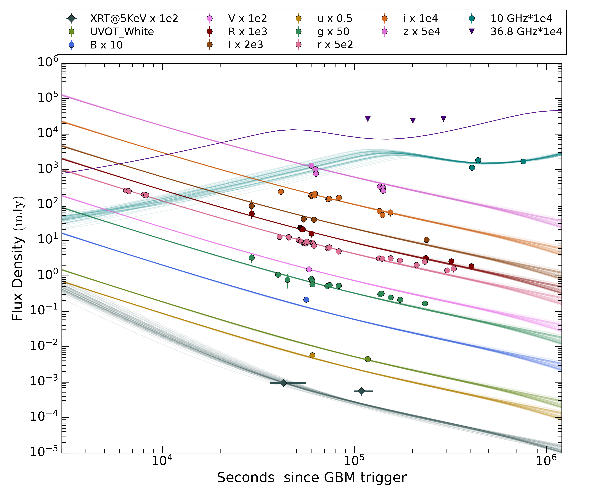
图注：The forest plot obtained from the multi-wavelength modeling of ZTF20abbiixp / GRB~200524A from X-ray to radio bands using our custom-developed FS-RS model. Similar color and marker conventions were followed as in Fig.~\(\ref{fig:lcmult}.\) The radio upper limits are shown with downward triangles.
对应解读：对应“建议重点查看的图表”第6项“FS 与 RS 分量分解图”，以及模型拟合段落中关于定制 FS+RS 多波段余辉模型、早期光学过量和致密 ISM 环境的讨论。
入选理由：这是最直接支撑论文核心物理结论的图：从 X 射线到射电的多波段数据被 FS-RS 模型统一拟合，并包含射电上限。它比单纯经验光变图更能检验反向激波是否确实需要、是否只解释早期光学、以及模型对后期多波段数据是否一致。
来源与置信度：\(arxiv_source\)；high；\(arxiv_source\) / \(GRB200524A_manuscript.tex\):figure[11]
Fig10
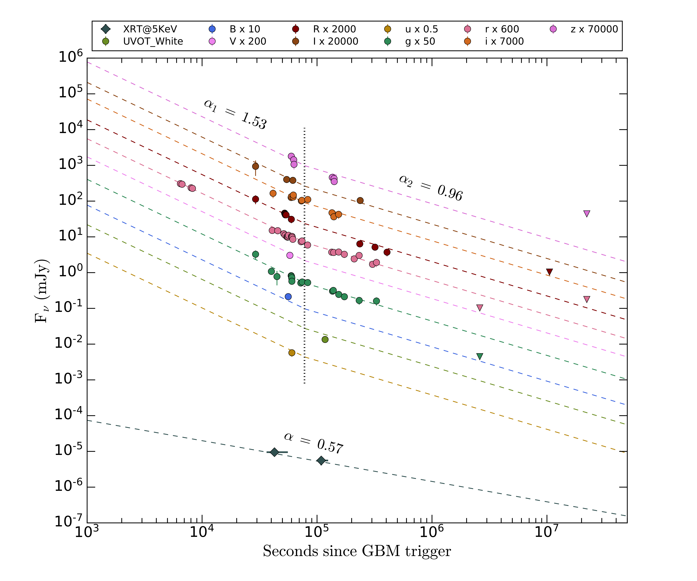
图注：Multi-wavelength afterglow light curves of ZTF20abbiixp / GRB~200524A, including the X-ray flux density at 5 keV (black diamonds) and optical observations in different filters (Coloured symbols). The dashed lines represent the best-fitting powerlaw components in different bands. The dotted vertical line marks the transition time $t_{\rm flat}$
对应解读：对应“建议重点查看的图表”第4项“多波段余辉光变图”，以及“关键图表逐图导读”中的图4：多波段余辉光变和断裂幂律拟合。
入选理由：该图展示 X 射线和多滤光片光学余辉光变及各波段幂律拟合，是检查约 10^5 s 附近光变转折、早期光学行为和经验拟合基础的关键图。它为后续 FS+RS 物理建模提供直接观测依据。
来源与置信度：\(arxiv_source\)；high；\(arxiv_source\) / \(GRB200524A_manuscript.tex\):figure[10]
Fig03
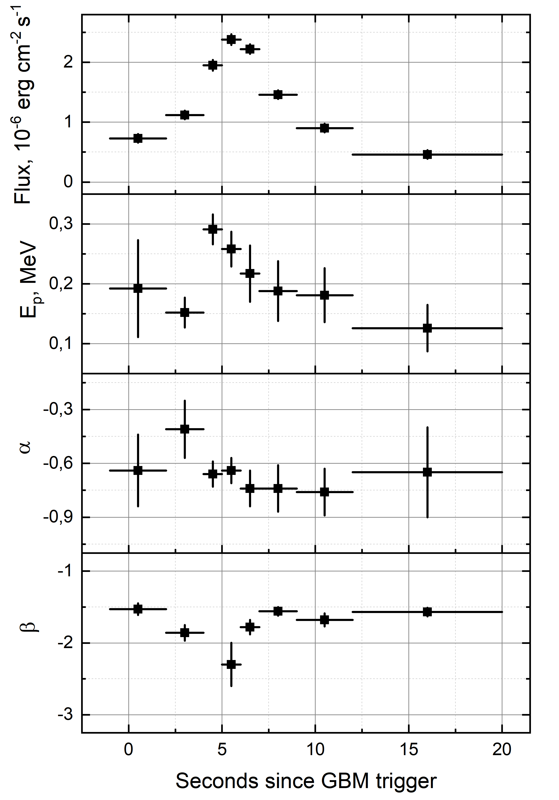
图注：Spectral evolution of ZTF20abbiixp / GRB~200524A main phase based on {\(\it\) Fermi} - GBM data (see Table~\ref{tab:gbm_spec}). From top to bottom: the light curve in units of $10^{-7}$ erg cm$^{-2} $ s$^{-1}$, the evolution of the parameter $ E_\text{p} $ in MeV units, the spectral indices $\alpha $ and $ \beta $. The horizontal axis is the time in s relative to the GBM trigger.
对应解读：对应“建议重点查看的图表”第3项“时间分辨谱演化图”，以及“关键图表逐图导读”中的图3：\(E_p\)、谱指数和能流随时间演化。
入选理由：该图逐时段展示 GBM 主峰的能流、\(E_p\)、alpha 和 beta 演化，是判断瞬时辐射是否呈强度跟踪的核心证据。相比单一总光变，它能直接检验谱峰能量是否随脉冲强弱变化。
来源与置信度：\(arxiv_source\)；high；\(arxiv_source\) / \(GRB200524A_manuscript.tex\):figure[3]
Fig07
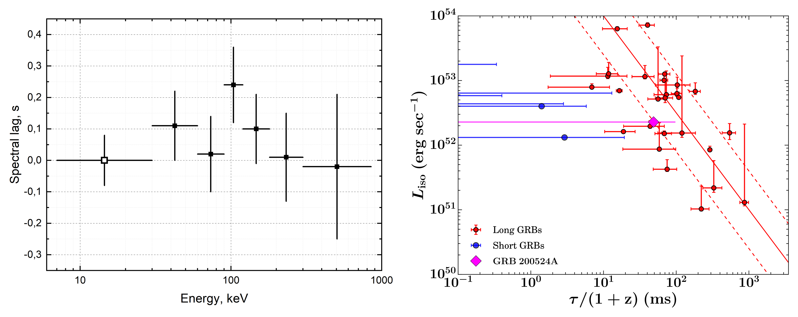
图注：The top panel shows the spectral evolution of ZTF20abbiixp / GRB~200524A based on \(\textit{Fermi}-GBM\) data. The horizontal axis -- the energy in units of keV, the vertical axis -- the spectral lag in units of ms relative to the (7, 30) keV channel, shown by an unfilled symbol. The bottom panel shows the spectral lag--luminosity correlation in the rest frame for long soft and short hard GRBs. Long soft and short hard GRBs are shown with red and blue filled circles, respectively. ZTF20abbiixp / GRB~200524A is highlighted with a magenta diamond. The solid red line denotes the best-fitting lag--luminosity anti-correlation for long soft GRBs, and the dashed red lines show the associated 3-$\sigma$ error bars.
对应解读：对应“建议重点查看的图表”第2项“谱滞后诊断图或表”，以及“关键图表逐图导读”中的图2：谱滞后与滞后-光度关系。
入选理由：论文强调该长暴具有近零谱滞后，而此图直接给出相对低能道的能量依赖谱滞后，并将其放入长暴/短暴的 lag-luminosity 关系中。它是评估“近零谱滞后”是否异常、误差范围是否支持该结论的关键图。
来源与置信度：\(arxiv_source\)；high；\(arxiv_source\) / \(GRB200524A_manuscript.tex\):figure[7]
Fig01
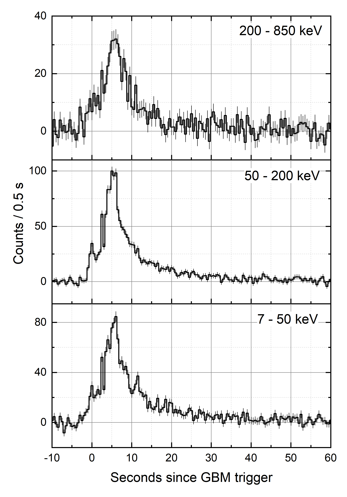
图注：Multichannel light curve of ZTF20abbiixp / GRB~200524A based on {\(\it\) Fermi} - GBM data with time resolution of 0.5 s. The boundaries of the energy channels are indicated on the legend.
对应解读：对应“建议重点查看的图表”第1项“高能光变图”，以及“关键图表逐图导读”中的图1：Fermi-GBM 多能段光变。
入选理由：该图展示不同 GBM 能段、0.5 s 时间分辨率的多通道光变，可用于检查多个 emission episode 是否重叠、高低能脉冲峰是否同步。它是理解近零谱滞后可能由脉冲混合造成的基础观测图。
来源与置信度：\(arxiv_source\)；high；\(arxiv_source\) / \(GRB200524A_manuscript.tex\):figure[1]
Fig04
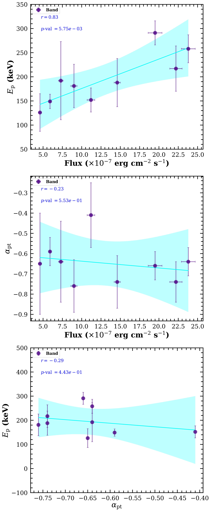
图注：Correlations between spectral model parameters: (a) peak energy vs flux, (b) low-energy spectral index vs flux, (c) peak energy vs low-energy spectral index. Correlations shown in (a), (b), and (c) are obtained using the {\(\it\) Fermi} - GBM observations and modelling with the Band function. The best-fit lines are shown in solid indigo, and the indigo-shaded region shows the 3-$\sigma$ confidence interval for the correlations.
对应解读：对应“建议重点查看的图表”第3项中关于 \(E_p\)、谱指数和能流关系的诊断，以及模型拟合段落中“强度跟踪”谱演化的统计检验。
入选理由：该图给出 \(E_p-flux\)、alpha-flux 和 \(E_p-alpha\) 的相关关系，并标出最佳拟合线和 3σ 置信区间。它比时间序列图更定量地支持强度跟踪结论，可检验相关性是否显著而非视觉印象。
来源与置信度：\(arxiv_source\)；high；\(arxiv_source\) / \(GRB200524A_manuscript.tex\):figure[4]
强相关工作
这篇工作属于同一事件 ZTF20abbiixp/GRB 200524A 的多波段个案研究；同事件材料应优先检索 \(\mathrm{GRB\ 200524A}\)、\(\mathrm{ZTF20abbiixp}\)、\(\mathrm{Fermi\ GBM}\)、\(\mathrm{GCN}\)、\(\mathrm{afterglow}\)、\(\mathrm{reverse\ shock}\) 等关键词。若存在 GCN Circulars、ZTF transient report、Swift/XRT 页面或射电跟进报告，它们会提供最原始的触发、定位、早期测光和光谱信息。本文的 arXiv 页面是目前可确信的公开入口。
同类工作方面，GRB 990123 和 GRB 021004 等早期光学余辉常被用作反向激波或复杂环境讨论的原型；GRB 130427A 则是高能、近邻、宽波段覆盖极好的长暴标杆。理论上，Sari、Piran 与 Narayan 的标准余辉模型，Kobayashi 关于反向激波早期光学闪光的工作，以及 Zhang 与 Mészáros 的 GRB 综述是理解本文的基础。建议检索关键词包括 \(\mathrm{GRB\ spectral\ lag}\)、\(\mathrm{intensity\ tracking\ E_{p}}\)、\(\mathrm{forward\ reverse\ shock\ afterglow}\)、\(\mathrm{ISM\ wind\ closure\ relations}\)、\(\mathrm{GRB\ microphysical\ parameters}\)。
潜在张力来自两方面：一是谱滞后与长短暴分类的关系，近零滞后可能被误解为短暴特征，但长暴中多脉冲重叠、高亮度或特殊几何也能导致小滞后；二是长暴前身星预期有风状环境，而许多个案拟合却偏向类 \(\mathrm{ISM}\)。GRB 200524A 若确实位于致密 \(\mathrm{ISM}\) 中，应放在风终止激波、恒星形成区局部介质和参数退化的背景下理解，而不是简单否定 collapsar 图像。
同一事件 / 同类源线索：
相似工作：
- https://arxiv.org/abs/astro-ph/9903239
- https://arxiv.org/abs/1303.4743
- https://arxiv.org/abs/1305.1563
基础理论 / 方法工作：
- https://arxiv.org/abs/astro-ph/9712005
- https://arxiv.org/abs/astro-ph/9909291
- https://arxiv.org/abs/astro-ph/0311321
相反观点 / 张力线索：
10. Astrophysical origins of TeV features in the cosmic-ray lepton spectrum
- 来源：arXiv / astro-ph.HE
- 链接：https://arxiv.org/abs/2608.09336v1
- 作者：Zhen Xie, Ruizhi Yang
- 评分：novelty 7/10，importance 7/10，relevance 9/10，final 8.70/10
- 推荐理由：讨论TeV宇宙线电子/正电子谱结构的附近脉冲星和SNR样源解释，结合GALPROP、DAMPE和随机IC冷却；宇宙线高能轻子方向相关性高。
中文题目：宇宙线轻子能谱中 TeV 结构的天体物理起源
做了什么：这篇文章重新审视高能宇宙线电子和正电子能谱中接近 \(\mathrm{TeV}\) 的非平滑结构：这些结构过去常被拿来讨论邻近脉冲星、超新星遗迹，甚至暗物质湮灭或衰变。作者先用由宇宙线核素和弥散伽马射线约束的 \(\mathrm{GALPROP}\) 模型建立常规弥散电子背景，再用包含辐射能损的格林函数传播解计算邻近离散源，重点比较脉冲星的爆发式与连续注入、随机逆康普顿冷却对谱形的影响，并用 \(\mathrm{DAMPE}\) 最高能段数据点作示例。核心结论是：\(\mathrm{TeV}\) 轻子谱特征的形状本身是判别源物理的强约束，许多看似“尖锐”的局部结构更自然地要求非常具体的近邻源年龄、距离和注入历史，而不是任意加一个光滑背景外的成分。
为什么重要：高能轻子传播距离短、能损快，因此 \(\mathrm{TeV}\) 电子和正电子能谱对几百秒差距到几千秒差距内、过去几十万年内的源特别敏感。只要能把常规背景、邻近脉冲星和超新星遗迹式爆发源的谱形区分开，宇宙线轻子就不只是“暗物质异常”的候选证据，而是局域银河高能源人口、粒子注入史和传播环境的探针。
理论 / 观测 / 仪器方法价值：对理论的价值在于把同一传播框架下的弥散背景和离散源贡献放在一起比较，避免把背景不确定性误读成新物理；对观测的价值在于强调 \(\mathrm{DAMPE}\)、\(\mathrm{CALET}\)、\(\mathrm{AMS}\text{-}02\)、\(\mathrm{Fermi}\text{-}\mathrm{LAT}\) 等实验的高能端谱形、能量刻度和系统误差如何直接影响源判别；对方法的价值在于把格林函数传播解、脉冲星注入史和随机逆康普顿冷却纳入同一诊断语言。
为什么应该关注：如果你关心正电子超额、\(\mathrm{TeV}\) 电子谱折断、暗物质间接探测或邻近脉冲星贡献，这篇文章值得看，因为它提醒我们：最关键的不是“能不能拟合某几个数据点”，而是拟合所需的源年龄、距离、注入能量、截止能量和冷却物理是否同时合理。它也给出一个实用判断标准：真正可信的天体物理解释应当在核素、伽马射线和轻子谱数据之间保持一致。
展开详细解读：文章讲解、背景、理论、重点章节、图表与相关工作
文章详细讲解
科学问题：高能宇宙线电子和正电子的能谱从 \(\mathrm{GeV}\) 到 \(\mathrm{TeV}\) 并不是一个简单幂律。\(\mathrm{PAMELA}\) 和 \(\mathrm{AMS}\text{-}02\) 发现正电子分数上升，\(\mathrm{ATIC}\) 曾报告全电子谱超额，\(\mathrm{DAMPE}\) 给出了高精度全电子谱并显示高能端存在明显软化，最高能数据点还曾引发对局部窄结构的讨论。问题在于：这些结构究竟来自常规银河弥散背景的不确定性、邻近脉冲星和超新星遗迹，还是需要暗物质等更奇异解释？本文的目标不是宣称发现某个唯一源，而是建立一个物理上更受约束的比较框架。
作者怎么做：文章先用 \(\mathrm{GALPROP}\) 生成常规弥散电子背景。这个选择很重要，因为 \(\mathrm{GALPROP}\) 配置通常要同时面对宇宙线核素、次级粒子和弥散伽马射线约束，而不是只为电子谱调参。然后作者用带辐射能损的格林函数解描述邻近离散源传播。对脉冲星，文章考虑爆发式注入和连续注入两种历史；前者近似把粒子在某个释放时刻一次性注入，后者则更贴近脉冲星随自转减慢逐渐释放 \(e^\pm\) 的情形。作者还讨论随机逆康普顿冷却，也就是高能电子在离散光子场中散射时能损并非完全连续光滑，这会改变传播后谱形的尖锐程度。
关键结果：本文强调 \(\mathrm{TeV}\) 特征的形状是源判别的关键。近邻离散源可以在全电子谱中产生凸起、软化或类线状局部结构，但这种结构的宽度、峰值能量和高能截断与源年龄 \(t\)、距离 \(r\)、扩散系数 \(D(E)\)、注入谱指数、注入截止能量以及能损率 \(b(E)\) 强耦合。脉冲星连续注入通常比理想爆发式注入产生更平滑的谱形；随机逆康普顿冷却可能让高能端出现额外展宽或非平滑性。因此，若只用少数 \(\mathrm{DAMPE}\) 最高能数据点追求窄峰拟合，容易把统计起伏或能量响应系统误差误认为物理源特征。
局限和下一步：从摘要可见，最高能 \(\mathrm{DAMPE}\) 数据在文中主要作为说明性案例，而非完成源关联的决定性证据。邻近脉冲星的真实注入历史、逃逸时间、磁层到星风云的转换效率、局域扩散系数以及 \(\mathrm{TeV}\) 电子的逆康普顿能损环境仍有显著不确定性。下一步需要把 \(\mathrm{DAMPE}\)、\(\mathrm{CALET}\)、\(\mathrm{Fermi}\text{-}\mathrm{LAT}\)、\(\mathrm{AMS}\text{-}02\) 的能谱系统误差联合处理，并与候选脉冲星的年龄、距离、伽马射线晕、脉冲星风云观测一起做层级贝叶斯或全局似然分析，而不是单独拟合某一条全电子谱。
关键结果是怎么做出来的
这篇文章最重要的证据链从背景建模开始。作者没有把常规电子背景写成任意幂律，而是采用由宇宙线核素和弥散伽马射线观测校准的 \(\mathrm{GALPROP}\) 配置。这样做的意义是把 \(e^-\) 的主背景、二级 \(e^\pm\) 和传播参数限制在相对物理的范围内。样本层面，论文关注的是已发表的高能轻子谱数据，特别是 \(\mathrm{PAMELA}\)、\(\mathrm{AMS}\text{-}02\)、\(\mathrm{ATIC}\) 和 \(\mathrm{DAMPE}\) 所揭示的正电子分数上升、全电子超额和 \(\mathrm{TeV}\) 能段结构，而不是新观测事件计数目录。
离散源部分的关键比较是同一个候选源在不同注入历史下给出的传播后谱形。爆发式注入的格林函数解会把源年龄 \(t_s\) 和能量损失上限直接映射到一个较明确的高能截止；连续注入则相当于对不同时刻的爆发解积分，因而更容易洗平尖锐结构。作者把这种差异用于判断：如果某个 \(\mathrm{TeV}\) 特征要求极窄能谱峰，那么它对注入时间和冷却模型的要求会非常苛刻；如果特征较宽，则脉冲星或超新星遗迹式局部源更容易解释。
统计显著性方面，摘要没有显示作者报告了某个新峰的固定 \(\sigma\) 值，因此应把本文理解为模型诊断和物理可行性比较，而非发现论文。读者应在正文中重点查看作者是否使用 \(\chi^2\)、轮廓似然或信息准则比较“弥散背景”“背景加脉冲星”“背景加爆发源”等模型，以及是否对 \(\mathrm{DAMPE}\) 最高能数据点的能量刻度和通量误差做了稳健性检验。对这类问题，显著性不能只看加源后 \(\chi^2\) 下降，还要考虑额外自由参数、试验因子和候选源先验。
支撑结论的图表通常应包括：常规弥散背景与全电子数据的比较图、不同脉冲星注入历史的谱形图、随机逆康普顿冷却打开和关闭时的谱形差异图、以及针对 \(\mathrm{DAMPE}\) 高能点的局部源示例拟合图。最该看的不是某条模型线是否穿过所有点，而是高能残差是否有系统趋势、误差条是否包含能量尺度系统误差、不同传播参数下结论是否保持，以及候选源所需注入能量是否超过脉冲星自转能或超新星爆炸能的合理比例。
主要系统误差来自四类：第一，弥散背景的传播参数和源分布不唯一；第二，高能轻子实验的有效几何因子、能量重建和质子误判会影响 \(\mathrm{TeV}\) 端通量；第三，局域辐射场和磁场决定 \(b(E)\)，进而决定冷却截断；第四，脉冲星注入效率、逃逸延迟和连续释放历史与观测年龄之间有退化。稳健性检验应包括改变 \(D_0\)、\(\delta\)、\(b_0\)、源距离和年龄，在这些扰动下检查 \(\mathrm{TeV}\) 特征是否仍需同类物理解释。
展开背景、理论、公式、模型、章节和图表导读
背景知识
研究对象是宇宙线轻子，即高能电子 \(e^-\) 和正电子 \(e^+\)。与质子和较重原子核不同，\(\mathrm{GeV}\) 到 \(\mathrm{TeV}\) 的轻子会通过同步辐射和逆康普顿散射快速损失能量，因此它们在到达地球前可传播的典型距离有限。能量越高，视界越近；\(\mathrm{TeV}\) 轻子主要探测银河系局域区域，而不是整个银河盘的平均源人口。
历史问题来自多个实验的连续结果。\(\mathrm{PAMELA}\) 首先清楚显示正电子分数随能量上升，随后 \(\mathrm{AMS}\text{-}02\) 大幅提高精度，确认常规纯次级正电子模型不足。\(\mathrm{ATIC}\) 曾报告全电子谱在几百 \(\mathrm{GeV}\) 附近有超额，\(\mathrm{Fermi}\text{-}\mathrm{LAT}\)、\(\mathrm{HESS}\)、\(\mathrm{DAMPE}\) 和 \(\mathrm{CALET}\) 则从不同能区和系统误差角度测量全电子谱。\(\mathrm{DAMPE}\) 的高能分辨率使 \(\mathrm{TeV}\) 附近结构尤其受关注。
观测和理论背景中长期存在三类解释。第一类是邻近脉冲星及其脉冲星风云，它们天然产生 \(e^\pm\) 对，并且 Geminga、Monogem 等近邻对象年龄和距离合适。第二类是邻近超新星遗迹或类超新星爆发源，它们主要加速电子，也可能通过源内相互作用产生次级正电子。第三类是暗物质湮灭或衰变，能产生相对特征化的谱形，但同时受伽马射线、反质子、宇宙微波背景和矮星系约束。
为什么现在值得重新看：高能端数据比十多年前精确得多，但不同实验在 \(\mathrm{TeV}\) 附近仍存在能量刻度和通量归一化差异；同时 \(\gamma\) 射线观测已经发现若干脉冲星周围的 \(\mathrm{TeV}\) 晕，提示局域扩散可能与银河平均值不同。若局域扩散和冷却环境不同，早期用简单均匀扩散模型得到的源参数可能需要重估。
常见误区有两个。一个误区是把任何高能谱硬化或凸起都叫作“暗物质信号”，但常规背景误差、局部源随机性和实验系统误差都能产生类似现象。另一个误区是以为只要某个脉冲星能量预算足够，就自动解释数据；实际上谱形宽度、截止位置、连续注入历史、逃逸延迟和各向异性上限同样关键。本文的价值正在于把这些谱形诊断放到传播模型中系统比较。
基础理论 / 方法脉络
基础物理图像是扩散加冷却。高能电子和正电子在银河磁湍流中作随机游走，空间输运可用扩散系数 \(D(E)\) 描述；同时它们在磁场中同步辐射，并与星光、红外和宇宙微波背景光子发生逆康普顿散射，能量损失率通常近似为 \(b(E)\propto E^2\)。这使 \(\mathrm{TeV}\) 轻子的冷却时间远短于 \(\mathrm{GeV}\) 轻子，源的时间结构不能忽略。
本文的常规背景部分依赖 \(\mathrm{GALPROP}\) 这类数值传播框架。它从银河源分布、扩散、再加速、对流、能量损失、核反应截面和辐射场出发，同时计算宇宙线核素、轻子和弥散伽马射线。对本文而言，关键不是 \(\mathrm{GALPROP}\) 的某个单独参数，而是用被核素和伽马射线约束过的背景来减少任意性，避免把背景调得过于灵活。
离散源部分常用格林函数解。若源距离为 \(r_s\)、年龄为 \(t_s\)，爆发式注入可写成传播核与注入谱的卷积。由于高能粒子从注入能量 \(E_s\) 冷却到观测能量 \(E\)，观测谱会出现一个由 \(t_s\) 和 \(b(E)\) 决定的最高能量。连续注入则需要对源活动时间积分，等效于许多不同年龄的爆发分量相加，通常使谱峰变宽。
随机逆康普顿冷却是本文中特别值得注意的物理点。在连续损失近似中，电子能量平滑下降；但真实逆康普顿散射是离散碰撞过程，尤其在高能端和 Klein-Nishina 区域，单次散射能量转移和散射率会影响谱形。若忽略这种随机性，模型可能高估或低估局部谱结构的尖锐程度。
主要退化关系包括：源年龄 \(t_s\) 与能损系数 \(b_0\) 共同决定截止能量；源距离 \(r_s\) 与扩散系数 \(D(E)\) 共同决定通量归一化和低能展宽；注入谱指数与背景谱指数可互相补偿；能量刻度系统误差可把宽峰移动到不同能量。实际读这篇文章时，要把每条模型曲线理解为这些退化参数组合的投影，而不是唯一解。
公式与推导
第一步从扩散-损失方程出发。设 \(\psi(E,\mathbf{r},t)\) 为单位能量、单位体积的电子或正电子数密度，\(Q(E,\mathbf{r},t)\) 为源项，\(D(E)\) 为扩散系数，\(b(E)=-dE/dt\) 为能损率，则高能轻子的基本输运方程可写为
这里忽略了对流、再加速和灾变损失，适用于讨论局域高能轻子的主导物理。
第二步近似高能辐射损失。若同步辐射和 Thomson 区域逆康普顿占主导，能损率常写为
其中 \(b_0\) 由磁场能量密度和辐射场能量密度决定。该式给出冷却时间
它说明能量越高，粒子记忆的源越近、越年轻。
第三步连接注入能量和观测能量。若粒子在源处以能量 \(E_s\) 注入，经过时间 \(t_s\) 后观测为 \(E\)，连续损失近似给出
反解得
因此只有当 \(E<1/(b_0 t_s)\) 时爆发源仍能贡献观测能量 \(E\)。这个上限直接决定局部源谱的高能截断。
第四步写出能量相关扩散长度。令 \(D(E)=D_0(E/E_0)^\delta\)，从 \(E_s\) 冷却到 \(E\) 的有效扩散尺度为
在 \(b(E)=b_0E^2\) 且 \(\delta\ne 1\) 时，近似有
若源距离 \(r_s\gg \lambda\)，通量会被指数压低。
第五步给出爆发点源的格林函数解。若注入谱为 \(Q(E_s)=Q_0 E_s^{-\gamma}\exp(-E_s/E_c)\)，观测处数密度可写为
其中 \(dE_s/dE=(1-b_0Et_s)^{-2}\) 是能量映射的雅可比因子。该式是判断某个邻近爆发源能否制造 \(\mathrm{TeV}\) 结构的核心。
第六步把连续注入写成时间卷积。若脉冲星注入功率随时间为 \(L(t)\)，观测谱为
其中 \(G\) 表示上一式中的传播核，\(T\) 是源年龄。这个积分说明连续注入会叠加不同冷却年龄的粒子，因此通常比单一爆发注入更平滑。
第七步从数密度到可观测通量。各向同性近似下，全电子微分通量为
这里 \(\psi_{\rm diff}\) 是 \(\mathrm{GALPROP}\) 弥散背景，\(\psi_i\) 是各邻近离散源贡献。不同实验实际比较的是经过能量响应卷积后的通量。
第八步写出谱拟合的常用统计量。若第 \(j\) 个能量箱观测通量为 \(\Phi_j^{\rm obs}\)，模型预测为 \(\Phi_j^{\rm mod}(\boldsymbol{\theta})\)，协方差矩阵为 \(C\)，则
比较有无局部源模型时可看 \(\Delta\chi^2\)，但必须结合新增参数数目、系统误差和试验因子解释其显著性。
模型拟合 / 应用方法
这类工作的拟合量通常包括常规弥散背景归一化和谱形、邻近源距离 \(r_s\)、年龄 \(t_s\)、注入谱指数、截止能量、总注入能量或效率，以及传播参数 \(D_0\)、\(\delta\)、晕高、能损系数 \(b_0\)。如果候选源是已知脉冲星，距离和特征年龄可以作为先验而非完全自由参数；如果只是“类超新星遗迹爆发源”，源参数自由度更高，拟合的物理可证伪性也相应降低。
似然函数通常基于各实验能谱点的通量误差，可以用对角误差近似的 \(\chi^2\)，也可以使用包含能量相关系统误差的协方差矩阵。对 \(\mathrm{DAMPE}\) 高能端尤其要小心：能量刻度偏移、能量分辨率、质子污染和有效接受度误差会改变局部峰或折断的显著性。严格拟合应把能量响应矩阵卷入模型，而不是只在图上比较未卷积的理论曲线。
参数退化是解读结果的关键。较年轻的源和较强的能损都能把截止推到较低能量；较大的扩散系数和较近的源都能提高地球处通量；较硬注入谱和较硬背景都能解释中能段上升；连续注入和多源叠加都能洗平爆发式源的尖峰。因此，一个看似好的最优拟合点不一定有唯一物理含义，必须看置信区间、轮廓似然和替代模型。
残差诊断应关注高能端是否有连贯结构，而不是单点偏离。若模型只改善一个最高能数据点，却在相邻能箱留下交替正负残差，这更像响应或统计问题；若多个相邻能箱呈现一致硬化、峰和软化，并且不同实验看到相近趋势，局部源解释才更强。本文强调谱形诊断，正是因为源年龄、距离和冷却会给出可预期的宽度，而暗物质或人为加线模型常在谱形上过于自由。
模型可能失败的场景包括：\(\mathrm{GALPROP}\) 背景配置与局域真实传播条件不一致；脉冲星注入效率超过自转能预算；候选源产生的各向异性超过 \(\mathrm{AMS}\text{-}02\) 或 \(\mathrm{Fermi}\text{-}\mathrm{LAT}\) 上限；\(\gamma\) 射线晕观测要求的局域扩散系数与轻子谱拟合相冲突；或随机逆康普顿冷却使原本预测的窄结构被显著展宽。实际应用中，应将能谱、各向异性、伽马射线晕和源人口统计联合使用。
重点章节 / 结果段落怎么读
数据和背景模型部分应优先读。这里作者如何选择 \(\mathrm{GALPROP}\) 配置、哪些宇宙线核素和弥散伽马射线约束被采用、背景模型在 \(\mathrm{GeV}\) 到 \(\mathrm{TeV}\) 区间的自由度有多大，直接决定后面对局部源的需求是否可信。读者要特别看背景是否只是事后归一化，还是传播参数本身有外部约束。
邻近源传播方法部分是全文技术核心。应检查作者如何写爆发式源的格林函数解、如何处理能量损失、是否采用能量依赖扩散、边界条件是否可忽略，以及源距离和年龄的取值范围。若文章列出候选脉冲星或超新星遗迹参数表，这张表应与模型曲线一起读。
脉冲星爆发式与连续注入比较部分最能体现本文的物理判断。读者应看连续注入是否显著改变 \(\mathrm{TeV}\) 谱形、注入效率是否合理、特征年龄与实际粒子逃逸时间是否区分。很多脉冲星模型的隐含假设是粒子能迅速逃逸到星际介质；若逃逸延迟很长，地球处谱形会明显变化。
随机逆康普顿冷却部分值得单独读。它决定本文是否只是传统连续损失模型的重复，还是对 \(\mathrm{TeV}\) 端谱形细节做了更真实处理。应关注作者如何模拟随机散射、与连续损失近似的差异在哪个能区最大、这种差异是否足以改变对 \(\mathrm{DAMPE}\) 高能点的解释。
结果与讨论部分应围绕模型比较读，而不是只看最漂亮的拟合曲线。重点是：哪些谱形可由邻近脉冲星自然产生，哪些需要类超新星遗迹爆发源，哪些情况会显得过于精细调节；作者是否明确区分“可说明”与“被数据显著要求”。若有附录或稳健性检验，应检查传播参数、能损环境和实验系统误差变化后结论是否稳定。
建议重点查看的图表
-
常规弥散背景与全电子谱数据对比图：看 \(\mathrm{GALPROP}\) 背景在 \(\mathrm{AMS}\text{-}02\)、\(\mathrm{Fermi}\text{-}\mathrm{LAT}\)、\(\mathrm{DAMPE}\)、\(\mathrm{CALET}\) 数据上的残差，尤其是 \(100\,\mathrm{GeV}\) 以上是否系统偏低。
-
正电子分数或 \(e^+\) 谱分解图：看背景二级正电子与脉冲星 \(e^\pm\) 贡献如何叠加，是否同时解释正电子分数上升和全电子谱。
-
爆发式脉冲星源谱形图：看不同 \(r_s\)、\(t_s\)、注入截止能量下峰值位置和高能截断如何移动，特别注意模型线宽度是否与数据点间距相称。
-
连续注入与爆发注入对比图：看同一源参数下连续注入是否把尖峰洗平，以及低能尾部是否过强。
-
随机逆康普顿冷却影响图：看连续损失近似与随机冷却模拟在 \(\mathrm{TeV}\) 端的差异，重点检查是否改变对窄结构的判断。
-
\(\mathrm{DAMPE}\) 最高能点示例拟合图：看模型是否只是穿过最高能一两个点，还是在相邻能箱也给出合理残差；同时注意能量尺度系统误差可能造成的水平移动。
-
参数或能量预算表：看候选源所需注入能量占脉冲星自转能或超新星能量的比例，超过合理范围的拟合不应被视为物理解。
关键图表逐图导读
图 1：通常应是全电子谱 \(E^3\Phi(E)\) 或类似加权通量随能量 \(E\) 的图。横轴为能量，纵轴为加权后的全电子通量；数据点来自 \(\mathrm{DAMPE}\)、\(\mathrm{AMS}\text{-}02\)、\(\mathrm{Fermi}\text{-}\mathrm{LAT}\)、\(\mathrm{CALET}\) 等，模型线包括常规 \(\mathrm{GALPROP}\) 背景。读图时不要只看视觉上的峰，要看 \(\mathrm{TeV}\) 前后模型残差是否连续偏离，以及不同实验归一化是否彼此一致。
图 2：可能展示常规背景加邻近脉冲星后的全电子谱或正电子分数。横轴仍为能量，纵轴可能为 \(e^+/(e^-+e^+)\) 或全电子通量。模型线若分成背景、脉冲星和总和，应检查脉冲星分量是否在解释正电子分数的同时不过度抬高全电子谱。读图陷阱是把总和线贴合数据误认为唯一源解；实际上背景归一化和注入效率可能强退化。
图 3：爆发式注入源的谱形比较图。横轴为能量，纵轴为单源贡献或总通量；不同颜色可能对应不同源年龄、距离或截止能量。关键趋势应是源越老，高能截止越低；源越远，通量越低且谱形更受扩散抑制。读者应看峰宽是否自然由传播给出，而不是靠过窄注入谱人为制造。
图 4：连续注入和爆发式注入的对比图。若两组模型使用相同源年龄和总能量，连续注入曲线一般更平滑，低能贡献更长。坐标轴与图 3 类似。读图陷阱是忽略归一化调整：若作者为两种模型分别重新归一化，应比较的是形状和能量预算，而不只是最高点。
图 5：随机逆康普顿冷却的诊断图。横轴为能量，纵轴为传播后通量或相对偏差；模型线可能包括连续损失近似和随机冷却结果。关键是 \(\mathrm{TeV}\) 以上谱形是否被展宽、是否出现非平滑尾部，以及这种差异是否大于实验误差。若图中只显示理论比值，需回到数据图判断其观测可检验性。
图 6：\(\mathrm{DAMPE}\) 高能端示例拟合或残差图。横轴为能量，纵轴为通量、加权通量或标准化残差。应重点看最高能数据点的误差条、相邻点是否支持同一结构、模型比较是否列出 \(\Delta\chi^2\) 或等效指标。最大陷阱是把单个高能箱的上跳当作强证据；在低计数和大系统误差区，单点特征必须经过响应和试验因子检验。
论文原图 / 可嵌入图片
Fig05
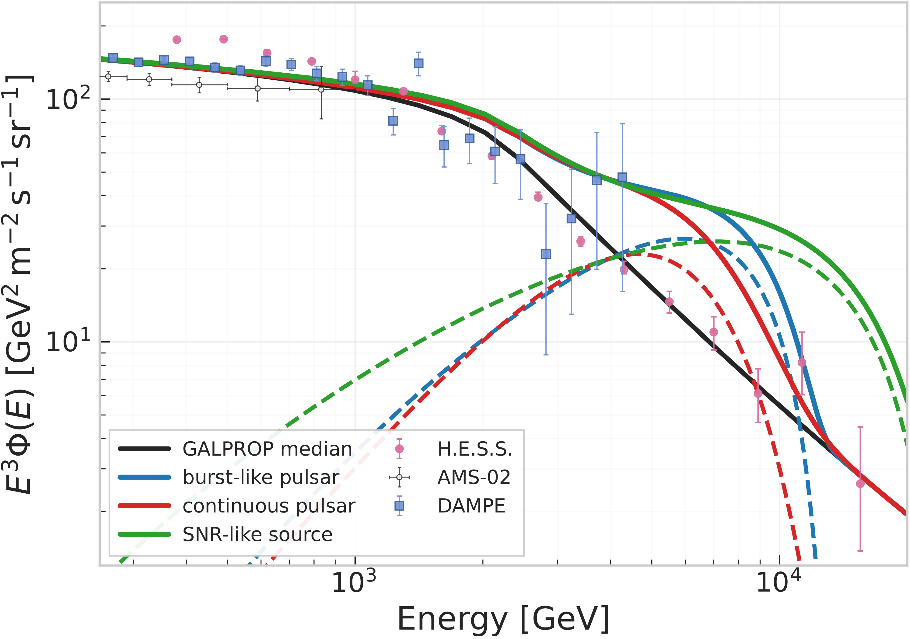
图注：Illustrative local-source contributions normalized to the positive residuals of the two highest-energy DAMPE points relative to the median GALPROP diffuse background. Dashed curves show the source components alone, while solid colored curves show the sum of the GALPROP background and the corresponding source contribution. The three examples correspond to a burst-like pulsar, a continuous-injection pulsar, and an SNR-like burst source. Here we do not use the H.E.S.S. points to normalize the source templates.
对应解读：建议重点查看的图表第6项“DAMPE最高能点示例拟合图”，以及关键图表逐图导读图6和模型拟合段落中的高能端残差诊断。
入选理由：该图直接把局域源模板归一到DAMPE最高能两个正残差点，并同时给出GALPROP背景加源后的总谱；还区分爆发式脉冲星、连续注入脉冲星和类SNR爆发源，是判断模型是否只是追随最高能少数点、相邻能箱是否合理的核心图。
来源与置信度：\(arxiv_source\)；high；\(arxiv_source\) / main.tex:figure[5]
Fig01
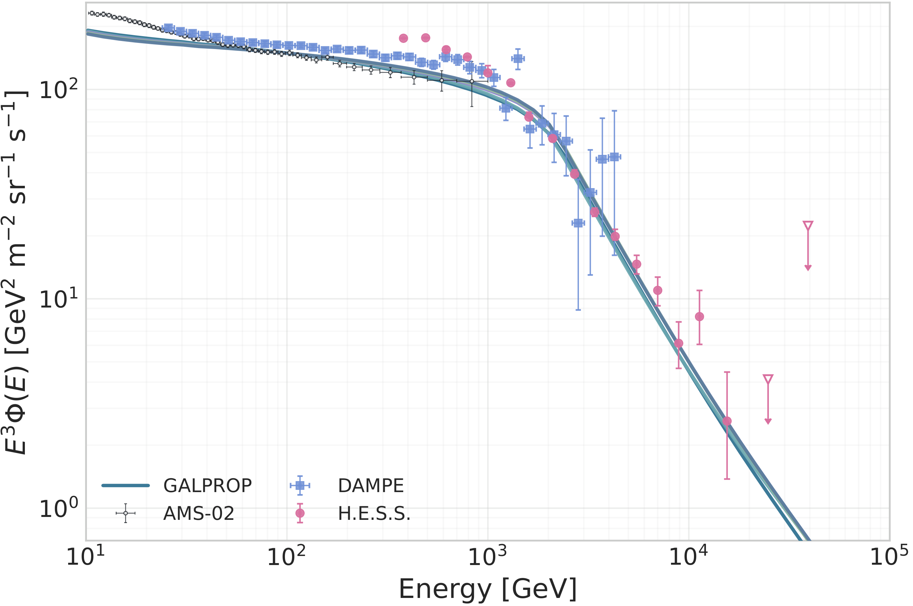
图注：Comparison of representative GALPROP all-electron diffuse-background spectra with AMS-02\cite{Aguilar2014AMSElectron}, DAMPE\cite{Ambrosi2017DAMPE} and H.E.S.S.\(\cite{HESS2024CRE}\) measurements. The colored curves show a set of representative GALPROP models selected from the retained propagation-model ensemble to span the range of high-energy spectral shapes. All model curves are normalized to the AMS-02 all-electron flux at $100\,{\rm GeV}$ in order to emphasize differences in spectral shape rather than absolute normalization. The AMS-02 and DAMPE points show the measured all-electron fluxes, while the H.E.S.S. points are the CR-electron-candidate fluxes from Table I of the Supplemental Material of Ref.~\(\cite{HESS2024CRE}\); the two highest-energy H.E.S.S. entries are shown as $99\%$ C.L. upper limits.
对应解读：建议重点查看的图表第1项“常规弥散背景与全电子谱数据对比图”，以及关键图表逐图导读图1。
入选理由：该图展示代表性GALPROP全电子弥散背景与AMS-02、DAMPE、H.E.S.S.数据的直接比较，并统一在100 GeV归一化，最适合检查TeV前后常规背景是否系统偏离以及不同实验高能谱形的一致性。
来源与置信度：\(arxiv_source\)；high；\(arxiv_source\) / main.tex:figure[1]
Fig03
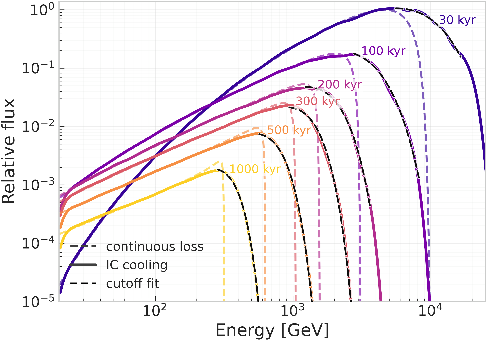
图注：Burst-like propagated electron spectra for a source distance $d=500~{\rm pc}$. The injected spectrum is $Q(E_s)\propto E_s^{-1.5}\exp(-E_s/10~{\rm TeV})$, so the turnover is shaped jointly by radiative cooling and the source cutoff. Dashed curves show the standard continuous-loss calculation, while solid curves include stochastic inverse-Compton cooling using the path-averaged ISRF~\(\citep{Popescu2017ISRF}\) along the Geminga line of sight. All curves are computed with the same total injected electron energy and are rescaled by the maximum value among all curves in the figure. The black dashed curves show the empirical fits, $A E^{-p}\exp[-(E/E_{\rm eff})^{\beta_{\rm eff}}]$, performed over $E_{\rm pk}\leq E\leq 3E_{\rm pk}$ with $p$ fixed to the corresponding injection index.
对应解读：建议重点查看的图表第3项“爆发式脉冲星源谱形图”和第5项“随机逆康普顿冷却影响图”，对应关键图表逐图导读图3和图5。
入选理由：该图给出500 pc爆发式源传播谱，明确比较连续能损近似的虚线与包含随机逆康普顿冷却的实线，并含经验截断拟合，可直接读出峰宽、高能截断和随机冷却对TeV结构判断的影响。
来源与置信度：\(arxiv_source\)；high；\(arxiv_source\) / main.tex:figure[3]
Fig04
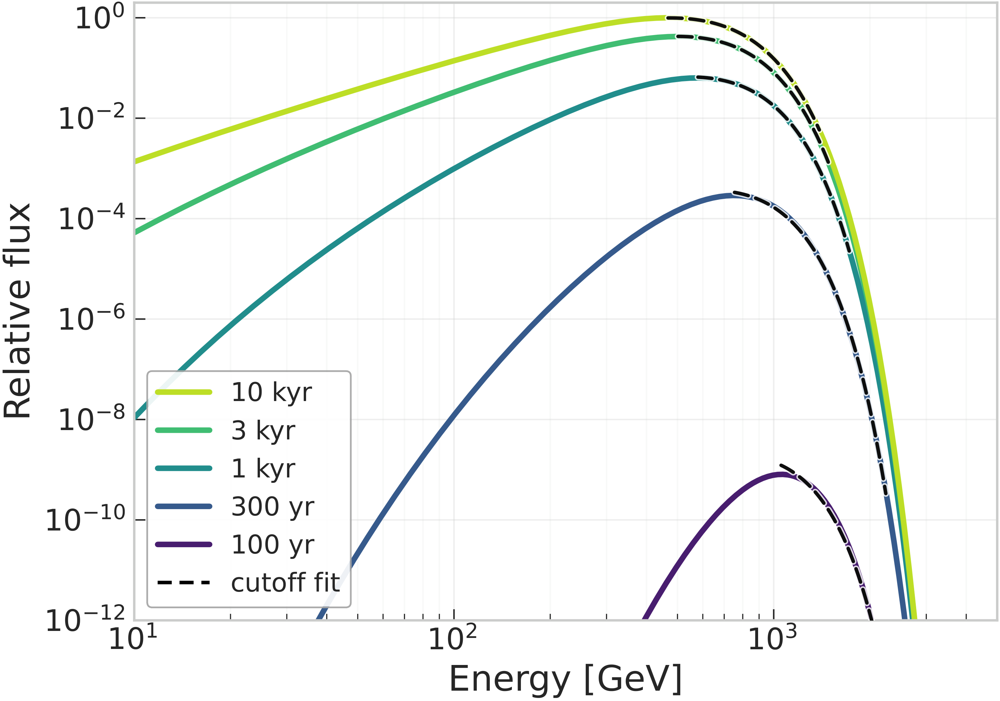
图注：Propagated electron spectra for the continuous-injection intrinsic-cutoff case at a fixed source distance of $d=100~{\rm pc}$. The injected spectrum is $Q(E_s)\propto E_s^{-1}\exp[-(E_s/500~{\rm GeV})^2]$, and different curves correspond to source ages from $100~{\rm yr}$ to $10~{\rm kyr}$. All curves are computed with the same injection normalization and are rescaled by the maximum value among all curves in the figure, so the relative flux differences between different ages are retained. The black dashed curves show the empirical fits, $A E^{-p}\exp[-(E/E_{\rm eff})^{\beta_{\rm eff}}]$, performed over $E_{\rm pk}\leq E\leq 3E_{\rm pk}$ with $p$ fixed to the corresponding injection index.
对应解读：建议重点查看的图表第4项“连续注入与爆发注入对比图”的连续注入部分，以及关键图表逐图导读图4中关于连续注入谱形平滑和低能尾部的讨论。
入选理由：虽然该图没有与爆发注入在同一面板逐线对比，但它系统展示连续注入、固定距离下不同源年龄导致的传播谱变化，能够支撑日报中关于连续注入更平滑、年龄影响峰值和截断位置的解读。
来源与置信度：\(arxiv_source\)；high；\(arxiv_source\) / main.tex:figure[4]
Fig02
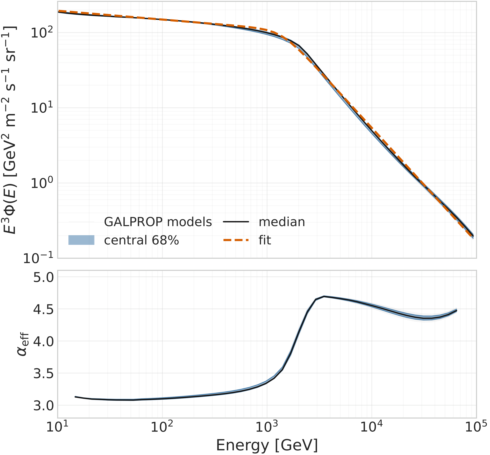
图注：Diffuse all-electron backgrounds obtained from the GALPROP model ensemble. The upper panel shows the individual model spectra, the central $68\%$ interval, the median spectrum, and its smoothly broken power law fit. All spectra are normalized at $100~{\rm GeV}$. The lower panel presents the corresponding effective spectral indices, calculated directly from the individual GALPROP spectra.
对应解读：建议重点查看的图表第1项的背景不确定性补充，以及模型拟合段落中常规弥散背景谱形和传播模型退化的讨论。
入选理由：该图展示GALPROP模型集合、68%区间、中位谱及有效谱指数，比Fig01更偏理论背景诊断；它有助于说明常规背景高能谱形的不确定性，但不直接叠加主要实验残差，因此科学嵌入优先级低于Fig01。
来源与置信度：\(arxiv_source\)；high；\(arxiv_source\) / main.tex:figure[2]
强相关工作
同一类问题的关键相关工作包括正电子分数测量、全电子谱测量、近邻脉冲星解释、暗物质解释以及 \(\mathrm{TeV}\) 伽马射线晕对局域扩散的约束。建议检索关键词：\(\mathrm{PAMELA}\) positron fraction、\(\mathrm{AMS}\text{-}02\) positron fraction、\(\mathrm{DAMPE}\) electron spectrum、\(\mathrm{CALET}\) all-electron spectrum、\(\mathrm{Geminga}\) \(\mathrm{TeV}\) halo、cosmic-ray lepton nearby pulsars、stochastic inverse Compton cooling。
与本文最接近的是用 Geminga、Monogem 或其它近邻脉冲星解释正电子超额和全电子谱结构的系列论文，以及用 \(\mathrm{GALPROP}\) 或半解析传播模型计算银河背景的工作。相反或有张力的方向包括暗物质湮灭到轻子末态的解释、\(\gamma\) 射线和宇宙微波背景对暗物质的限制，以及 \(\mathrm{HAWC}\) 对 Geminga 周围低扩散区的测量：如果低扩散区延伸很大，Geminga 对地球正电子的贡献会受限；如果低扩散只局限在源附近，仍可能兼容轻子谱。
这篇文章讨论的是同类源和同类观测数据，而不是单个新瞬变事件。源背景链接应优先看观测目录和原始谱测量论文，再看模型解释论文。若要做延伸阅读，可从 \(\mathrm{GALPROP}\) 传播模型、\(\mathrm{DAMPE}\) 首篇全电子谱、\(\mathrm{AMS}\text{-}02\) 正电子分数和 \(\mathrm{HAWC}\) Geminga \(\mathrm{TeV}\) 晕论文开始。
同一事件 / 同类源线索：
- https://arxiv.org/abs/2608.09336
- https://arxiv.org/pdf/2608.09336
- https://arxiv.org/abs/1711.10981
- https://arxiv.org/abs/1304.7720
- https://arxiv.org/abs/0810.4995
相似工作：
- https://arxiv.org/abs/1711.10981
- https://arxiv.org/abs/1304.7720
- https://arxiv.org/abs/0810.4995
- https://arxiv.org/abs/0809.0760
基础理论 / 方法工作：
相反观点 / 张力线索：
11. Simulation-based inference for AGN jet population modelling: Towards more robust comparisons of black hole jet speeds
- 来源：arXiv / astro-ph.HE
- 链接：https://arxiv.org/abs/2608.08733v1
- 作者：Clara Lilje, James H. Matthews, Rob Fender
- 评分：novelty 7/10，importance 8/10，relevance 8/10，final 8.70/10
- 推荐理由：用simulation-based inference重新建模MOJAVE射电AGN喷流洛伦兹因子分布，改进通量限样本的母族推断和误差估计；对blazar/AGN喷流人口与高能辐射研究有可复用统计价值。
中文题目：用模拟推断重建活动星系核喷流族群：更稳健地比较黑洞喷流速度
做了什么：这篇文章重新建模了 MOJAVE 1.5 Jy Quarter Century 的活动星系核喷流样本，核心目标是从一个受强烈流量限制、相对论性增亮和多观测量选择效应影响的观测样本中，反推出母体喷流洛伦兹因子分布。作者没有写显式似然，而是用 likelihood-free 的 simulation-based inference 和 normalizing flow 直接学习参数后验。主要结论是，母体洛伦兹因子分布可写成 \(N(\Gamma)\propto \Gamma^b\)，斜率为 \(b=-1.32_{-0.19}^{+0.20}\)；相比早期估计，误差更大、后验明显非高斯。这个结果使 AGN 喷流速度分布与 X 射线双星喷流速度分布的比较更可信，二者在 \(2\sigma\) 内相容。
为什么重要：AGN 喷流的速度分布不是一个只影响“喷流有多快”的参数，它会进入相对论性增亮、视向选择、表观超光速运动、耀变体统计、射电核光度函数以及喷流功率估计。MOJAVE 这类 VLBI 亮源样本天然偏向小视角和高多普勒因子对象，因此直接把观测到的 \(\beta_{\rm app}\)、红移或流量分布当成母体分布会有系统偏差。本文的重要性在于把这个反问题明确当作“模拟观测样本与真实观测样本的多维统计匹配”来处理，并展示传统近似似然可能低估不确定度。
理论 / 观测 / 仪器方法价值：方法价值在于，它给出了一个适合天体物理族群反演的工作流：先生成带选择函数的母体模拟，再把模拟摘要统计量送入 normalizing flow，最后得到复杂、非高斯、带退化的后验。理论价值在于，它更新了 AGN 喷流洛伦兹因子分布斜率及其可信区间，使超大质量黑洞喷流与恒星质量黑洞喷流的统一比较更有统计基础。观测价值在于，它提醒读者在使用流量限制 VLBI 样本时，必须同时拟合多个观测分布，而不能只看单一的表观速度直方图。
为什么应该关注：如果你关心喷流发射机制、黑洞质量标度关系、耀变体族群合成、VLBI 选择效应，或者想把 AGN 与 XRB 放在同一喷流物理框架下比较，这篇文章值得看。它的核心信息不是“得到一个新斜率”这么简单，而是：在强选择效应样本中，后验形状本身就是科学结果；不正确处理似然和退化，会让喷流速度分布看起来比实际更确定。
展开详细解读：文章讲解、背景、理论、重点章节、图表与相关工作
文章详细讲解
科学问题：MOJAVE 1.5 Jy Quarter Century 样本由亮射电 AGN 构成，具有高质量 VLBI 监测和表观喷流运动测量，是研究相对论性喷流速度分布的关键数据集。但它也是一个典型的“被观测选择函数重塑过”的样本：流量限制会优先选出多普勒增亮强、视线夹角小、洛伦兹因子较大的喷流。问题在于，我们真正想知道的是母体 AGN 喷流的 \(\Gamma\) 分布，而不是被流量阈值筛选后的 \(\beta_{\rm app}\) 分布。
作者怎么做：论文采用 simulation-based inference，特别是 likelihood-free 的 normalizing flow 方法。作者设定一组母体族群参数，包括洛伦兹因子分布形状、取向分布、内禀光度或相关变量的分布，然后前向模拟 AGN 族群，加入相对论性增亮、红移和流量限制，得到“若这些参数为真，MOJAVE 会看见什么”的模拟观测样本。之后不写传统解析似然，而是让 normalizing flow 从大量模拟中学习参数与观测摘要统计量之间的后验关系。
关键结果：本文得到的母体洛伦兹因子分布形状为 \(N(\Gamma)\propto \Gamma^b\)，其中 \(b=-1.32_{-0.19}^{+0.20}\)。这一斜率意味着高 \(\Gamma\) 喷流存在但数量随 \(\Gamma\) 增大下降，并且下降并不极端陡峭。更重要的是，作者发现早期同类模型给出的参数误差显著偏小，主要原因是传统似然处理难以正确捕捉多观测量、选择效应和参数退化共同造成的非高斯后验。新后验允许更稳健地比较 AGN 与 XRB 的喷流速度分布，结果显示二者在 \(2\sigma\) 水平内一致。
局限和下一步：这类工作仍然依赖前向模型的正确性。若内禀射电光度函数、喷流辐射模型、样本完备性、VLBI 运动成分识别或红移缺失处理存在系统偏差，simulation-based inference 会给出“在该模拟宇宙内正确”的后验，而不一定消除物理模型误差。下一步自然是把更丰富的多波段信息、变源性、喷流开角、谱指数分布、不同 AGN 子类，以及其他 VLBI 或耀变体样本联合纳入同一 SBI 框架。
关键结果是怎么做出来的
本文最重要的证据链从 MOJAVE 1.5 Jy Quarter Century 样本开始。该样本是一个射电流量限制 AGN 喷流样本，重点优势是长期 VLBI 监测给出了表观运动、射电核流量和源分类等信息。作者关心的不是每个源的单独动力学建模，而是整个样本在多维观测空间中的分布：例如红移、流量、表观速度 \(\beta_{\rm app}\) 以及与选择函数相关的观测量。样本量由 MOJAVE quarter-century 亮源目录决定，具体读文时应查看数据表中最终进入 SBI 的源数、被剔除源的标准、缺失红移或不可靠运动测量的处理。
统计方法上，作者没有构造一个形如 \(\mathcal{L}(\theta)=p(d|\theta)\) 的解析似然，因为对流量限制样本同时拟合多个分布时，选择效应会让不同观测量之间高度相关，简单相乘的一维似然会给出错误置信区间。他们转而使用大量前向模拟：对每组参数 \(\theta\) 生成母体 AGN，经过相对论性增亮和流量阈值筛选，再计算与真实样本相同的摘要统计量。normalizing flow 学习的是 \(\theta\) 与摘要统计量之间的条件概率结构，因此可以表达偏斜、多峰或长尾后验。
核心参数是洛伦兹因子分布斜率 \(b\)，结果 \(b=-1.32_{-0.19}^{+0.20}\) 来自后验边缘化，而不是传统最小二乘误差条。读者应重点检查论文中展示后验 corner plot、模拟检验覆盖率、posterior predictive check 的图表：如果真实数据的摘要统计落在后验预测模拟的典型范围内，才说明模型不仅在某一个直方图上拟合得好，而是在多个观测投影上同时合理。
显著性或置信度的关键不在于一个单独的 \(p\)-value，而在于后验校准和模型比较。作者强调旧估计低估误差，说明他们应当进行了 coverage test、simulation-based calibration 或类似诊断：从已知参数生成 mock data，再看推断后验是否以正确频率覆盖真值。若 \(68\%\) 可信区间实际只覆盖远低于 \(68\%\)，那就说明方法过度自信。本文的结论依赖这些校准图和后验预测图，而不仅是最终斜率数值。
系统误差主要来自母体模型假设、MOJAVE 流量阈值、射电谱指数、多普勒增亮指数、红移分布、喷流成分速度是否代表 bulk flow，以及不同 AGN 子类是否应共享同一 \(\Gamma\) 分布。稳健性检验应关注：更换摘要统计量、改变 flow 架构或训练集规模、改变先验范围、排除极端高 \(\beta_{\rm app}\) 源、分开处理 BL Lac 和 FSRQ 后，\(b\) 是否稳定。若这些变动只移动 \(b\) 小于后验宽度，结论才比较稳健。
展开背景、理论、公式、模型、章节和图表导读
背景知识
研究对象是具有相对论性喷流的活动星系核，尤其是射电明亮、VLBI 可解析的 blazar 或近似 blazar 取向源。喷流 bulk 洛伦兹因子 \(\Gamma\) 决定了多普勒增亮、表观超光速运动和观测亮度，因此也是连接中央黑洞吸积、磁场抽取能量和大尺度反馈的重要量。
历史上，AGN 喷流速度分布常通过表观速度 \(\beta_{\rm app}\) 的直方图、射电亮度函数或耀变体统计来反推。经典难点是 \(\beta_{\rm app}\) 不是 \(\Gamma\) 的直接测量，而是 \(\Gamma\)、喷流速度 \(\beta\)、视线夹角 \(\theta\) 的组合；而流量限制样本又强烈偏向小 \(\theta\) 和高多普勒因子 \(\delta\)。因此，观测样本的速度分布往往比母体更“快”。
MOJAVE 项目之所以重要，是因为它提供了长期、系统的 parsec 尺度 VLBI 监测，能够测量喷流成分的角速度、结构演化和射电核性质。Quarter Century 样本进一步积累了足够时间基线，使很多源的表观速度统计更加可靠。但正因样本质量高，模型误差和选择效应也更容易成为主导不确定度。
现在值得重新看这个问题，是因为一方面 VLBI 样本和 XRB 喷流样本都更成熟，另一方面 simulation-based inference 已经在宇宙学、引力波和高能天体物理中证明可以处理复杂选择函数和难写似然的问题。对于 AGN 喷流族群，传统手工似然容易把多个投影分布当成独立，或者把选择函数简化得过强，从而低估误差。
常见误区包括：把最大观测 \(\beta_{\rm app}\) 当成源的唯一 \(\Gamma\)；认为流量限制只影响亮度不影响速度统计；把 posterior 的对称误差条当成真实不确定度；以及默认 AGN 与 XRB 的喷流速度分布不能比较。本文的立场更谨慎：只有在统一的选择函数和后验框架下，跨质量尺度比较才有意义。
基础理论 / 方法脉络
基础物理图像是相对论性喷流以速度 \(v=\beta c\) 沿与视线夹角 \(\theta\) 的方向运动。由于光行时效应，天空投影上的运动可表现为超光速，表观速度 \(\beta_{\rm app}\) 可超过 \(1\)，但这不违反相对论。与此同时，喷流辐射因多普勒因子 \(\delta\) 被增强，导致朝向我们的喷流更容易进入流量限制样本。
本文关心的关键母体量是 bulk 洛伦兹因子 \(\Gamma\) 的分布。若母体喷流取向各向同性，则 \(\cos\theta\) 近似均匀分布；但观测到的亮源样本不再各向同性，因为观测流量 \(S_{\rm obs}\) 通常与内禀流量 \(S_{\rm int}\) 和 \(\delta^p\) 成正比，其中 \(p\) 与喷流几何和谱指数有关。流量阈值 \(S_{\rm obs}>S_{\rm lim}\) 会把参数空间中高 \(\delta\) 区域放大。
观测方法上，MOJAVE 通过多历元 VLBI 图像追踪喷流成分位置随时间的变化，得到角速度，再结合角径距离和红移转换为 \(\beta_{\rm app}\)。但是喷流成分速度可能不是 bulk flow 的完美示踪；不同成分可能代表激波、图样速度或局部流体扰动。因此族群模型通常把观测到的速度统计视为母体速度分布的带噪投影。
SBI 的方法假设是：虽然解析似然难写，但我们可以足够真实地模拟观测过程。给定参数 \(\theta\)，模拟器生成母体源、赋予 \(\Gamma\)、\(\theta\)、光度和红移，计算 \(\delta\)、\(S_{\rm obs}\)、\(\beta_{\rm app}\)，施加样本选择，再提取与真实数据相同的摘要统计量。normalizing flow 学习这些摘要统计量对 \(\theta\) 的约束。
主要退化包括 \(\Gamma\) 分布斜率与内禀光度函数的退化、\(\delta^p\) 中 \(p\) 与谱指数的退化、红移分布与流量阈值的退化，以及 \(\theta\) 选择与 \(\Gamma\) 上限的退化。系统误差还可能来自样本非完备性、极端耀变状态、VLBI 成分识别、人为摘要统计选择，以及 normalizing flow 训练覆盖不足。
公式与推导
第一步从喷流 bulk 运动定义开始。速度 \(v=\beta c\)，洛伦兹因子为
这里 \(\beta\) 是以光速 \(c\) 为单位的真实速度，\(\Gamma\) 是本文要反演的母体分布核心变量；当 \(\Gamma\gg 1\) 时，\(\beta\) 非常接近 \(1\)，小的 \(\theta\) 差异会造成很大的观测差异。
第二步考虑光行时效应。沿视线夹角 \(\theta\) 运动的喷流成分，其表观横向速度为
这说明观测到的 \(\beta_{\rm app}\) 是 \(\beta\) 和 \(\theta\) 的组合，不能直接等同于 \(\Gamma\)。当 \(\theta\sim 1/\Gamma\) 时，\(\beta_{\rm app}\) 近似达到最大值。
第三步写出多普勒因子：
\(\delta\) 控制辐射频率、时间尺度和通量的变换。流量限制样本偏好大的 \(\delta\)，因此偏好小 \(\theta\) 和较高 \(\Gamma\) 的对象。
第四步把内禀通量与观测通量联系起来。对连续喷流或离散喷流团，可用近似关系
其中 \(\alpha\) 是谱指数，\(S_\nu\propto \\)
\(u^{-\alpha}\))，\(p\) 依赖几何和辐射模型。选择条件可写成 \(S_{\nu,{\rm obs}}>S_{\nu,{\rm lim}}\)，这正是 MOJAVE 类样本选择函数的主要来源。
第五步设定母体洛伦兹因子分布。本文核心结果对应的模型形式为
其中 \(b\) 是待估参数，\(\Gamma_{\min}\) 与 \(\Gamma_{\max}\) 给出模型适用区间。若 \(b<0\)，高 \(\Gamma\) 喷流数量随速度增加而减少。
第六步考虑取向先验。若喷流轴在空间中各向同性，则
但观测后的取向分布不是这个形式，而要乘以由 \(\delta^p\) 和流量阈值诱导的选择概率。
第七步可把前向模拟的选择函数写成
其中 \(L\) 是内禀光度，\(z\) 是红移，\(\mathbb{I}\) 是满足流量阈值时为 \(1\) 的指示函数，\(C(d)\) 表示样本完备性或数据质量选择。这个式子说明选择效应会把母体分布映射成观测分布。
第八步，若似然可写，理论上应有
其中 \(\theta\) 是族群参数，\(x\) 表示未观测或潜变量，如 \(\Gamma\)、\(\theta\)、\(L\)、\(z\)。本文的问题在于这个积分高维且选择函数复杂，因此解析或半解析似然不可靠。
第九步，SBI 用模拟摘要统计量 \(s\) 代替完整数据 \(d\)，学习后验
normalizing flow 用可逆变换把简单基分布 \(u\) 映射到参数空间：
这里 \(f\) 是 flow 变换，Jacobian 项保证概率密度归一化。这个框架允许后验偏斜、长尾或非高斯。
第十步，最终的科学诊断是后验预测。给定后验样本 \(\theta_k\)，生成模拟摘要 \(s_k\)，检查
是否围绕零且无系统偏差。\(T\) 可以是 \(\beta_{\rm app}\) 分布、红移分布、流量分布或多维摘要统计。若 \(T_{\rm PPC}\) 在多个投影上都可接受，才支持 \(b=-1.32_{-0.19}^{+0.20}\) 这类后验结论。
模型拟合 / 应用方法
本文的拟合不是对单个源做动力学模型，而是对 AGN 喷流族群参数做层级反演。拟合量包括洛伦兹因子分布斜率 \(b\)，以及与母体光度、红移、取向、选择函数和可能的速度范围有关的参数。观测约束来自 MOJAVE 样本的多个分布，而不只是 \(\beta_{\rm app}\) 一项。
传统做法可能会构造若干一维直方图似然，把各个观测量近似视为独立，或使用 Kolmogorov-Smirnov 距离、直方图残差等手工统计量。本文指出这种处理在流量限制样本中容易出错，因为红移、流量、视角和表观速度由同一组潜变量共同决定，观测分布之间有强相关性。SBI 的优势是让模拟器保留这些相关结构，让 flow 从训练模拟中学习后验。
参数估计的关键诊断是后验形状和覆盖率。若 posterior corner plot 显示 \(b\) 与其他参数存在弯曲退化或长尾，则对称高斯误差就不合适。作者强调旧估计低估误差，说明他们通过 mock recovery、simulation-based calibration 或 posterior predictive check 发现传统置信区间过窄。读者应看 \(b\) 的边缘后验是否近似对称、是否受先验边界影响，以及与 \(\Gamma_{\max}\)、光度函数斜率或 beaming 指数的相关性。
残差诊断应关注模型是否同时复现多个观测投影。如果模型能拟合 \(\beta_{\rm app}\) 却不能拟合流量分布，可能说明光度函数或多普勒增亮指数有误；如果能拟合流量却不能拟合红移，可能说明宇宙演化或样本完备性有问题；如果高 \(\beta_{\rm app}\) 端残差系统偏高或偏低，则会直接影响 \(\Gamma_{\max}\) 和 \(b\)。
模型可能失败的地方包括：把所有 AGN 子类放入单一 \(\Gamma\) 分布、忽略喷流加速或弯曲、把图样速度当作 bulk 速度、没有充分处理耀发状态下的瞬时流量选择，以及摘要统计量丢失关键信息。实际应用中，本文框架可扩展到联合拟合 VLBI、Fermi blazar、射电变源性和 XRB 样本，但每加入一种观测数据都必须重新定义选择函数和摘要统计量。
重点章节 / 结果段落怎么读
数据/样本部分应首先看 MOJAVE 1.5 Jy Quarter Century 样本如何定义：流量阈值、频率、时间覆盖、源分类、红移和表观速度的可用性。这里决定了后续选择函数，尤其要注意最终用于推断的源是否是完整子样本，以及被排除对象是否可能在速度或红移上有偏。
前向模型部分是全文物理核心。读者应检查作者如何生成母体 AGN：\(\Gamma\) 分布形式、取向分布、内禀光度函数、红移分布、多普勒增亮指数以及流量选择条件。这里的每一个假设都可能与 \(b\) 退化。
SBI 方法部分应重点看 normalizing flow 的输入和输出：使用哪些摘要统计量、训练模拟数量、先验范围、网络结构、验证集表现和校准测试。对专业读者来说，最重要的问题是 flow 是否真的学到了后验，而不是只学到了某些摘要统计的经验映射。
结果部分应重点读 \(b=-1.32_{-0.19}^{+0.20}\) 的后验、与旧结果的比较，以及 AGN-XRB 速度分布比较。要注意作者说“在 \(2\sigma\) 内一致”时使用的是哪种不确定度传播和哪个 XRB 参考分布。
讨论和稳健性检验部分应看模型依赖性：改变先验、摘要统计、样本切分、flow 架构或物理假设后，结论是否保持。附录若包含 simulation-based calibration、posterior predictive checks 或 mock recovery，是判断可信度的关键，不应跳过。
建议重点查看的图表
-
样本观测分布图：应看 MOJAVE 样本的红移、射电流量、表观速度 \(\beta_{\rm app}\) 和源类型分布。关键是确认模型要匹配的是多维选择后的观测样本，而不是单独速度直方图。
-
前向模拟流程或选择函数图：应看母体参数如何通过 \(\Gamma\)、\(\theta\)、\(\delta\)、\(S_{\rm obs}\) 映射到可观测样本。最重要的是流量阈值如何切掉低 \(\delta\) 或低光度源。
-
posterior corner plot：应看 \(b\) 与其他族群参数的相关性、边缘后验是否非高斯、是否存在长尾或先验边界截断。本文“旧误差被低估”的判断主要靠这类图支撑。
-
simulation-based calibration 或 coverage 图：应看可信区间的实际覆盖率是否接近名义覆盖率。若覆盖率不对，后验数值即使看似精确也不可信。
-
posterior predictive check 图：应看真实数据是否落在后验预测模拟的置信带内，尤其是高 \(\beta_{\rm app}\) 端、高红移端和流量阈值附近。
-
与旧 AGN 估计和 XRB 分布比较图：应看不同研究的 \(b\) 或 \(\Gamma\) 分布是否在同一参数化和同一置信定义下比较。不要只看误差条重叠，要看模型假设是否可比。
关键图表逐图导读
图 1：通常应是样本或观测量分布导览。横轴可能分别为红移 \(z\)、射电流量 \(S_\nu\)、表观速度 \(\beta_{\rm app}\) 或源类别，纵轴为源数或归一化概率密度。读图时要注意流量阈值附近是否有截断，以及高 \(\beta_{\rm app}\) 尾部由少数源控制的程度。陷阱是把这些观测分布直接理解成母体分布。
图 2：若论文给出模拟器流程图或选择函数示意，应把它当作方法核心图来读。坐标可能是 \(\Gamma\)-\(\theta\) 平面、\(\delta\)-\(S_{\rm int}\) 平面或模拟到观测的流程箭头。模型线或阴影区代表能通过 \(S_{\rm obs}>S_{\rm lim}\) 的区域。关键结论是：被观测样本只占母体参数空间的一小块，而且这块区域高度偏向多普勒增亮。
图 3：posterior corner plot 是判断参数约束的关键。对角线是一维边缘后验，非对角线是二维相关。应重点看 \(b\) 的后验宽度、偏斜性以及与光度函数、\(\Gamma\) 截断或 beaming 参数的退化。读图陷阱是只引用最大后验点，而忽略弯曲退化导致的非高斯可信区间。
图 4：SBI 校准图或 mock recovery 图应显示真值在后验分位数中的分布，或名义置信度与实际覆盖率的关系。横轴可能是后验分位数或名义 credible level，纵轴是累计频率或覆盖率。若曲线接近对角线，说明后验校准较好；若明显偏离，则说明方法过度自信或保守。
图 5：posterior predictive check 图通常把真实数据直方图或摘要统计点与后验预测带比较。横轴为 \(\beta_{\rm app}\)、\(z\)、\(S_\nu\) 等，纵轴为计数或概率密度，阴影为 \(68\%\) 或 \(95\%\) 预测区间。应看真实曲线是否系统偏离，尤其在高速尾部和流量阈值附近。
图 6：与文献或 XRB 的比较图应展示 AGN 的 \(N(\Gamma)\propto \Gamma^b\) 后验与其他研究的斜率或分布。关键是检查误差条代表的是 \(1\sigma\)、\(2\sigma\) 还是 credible interval，以及 XRB 结果是否采用可比较的 \(\Gamma\) 定义。陷阱是忽略质量尺度、瞬态喷流与稳态喷流的物理差异。
论文原图 / 可嵌入图片
Fig01
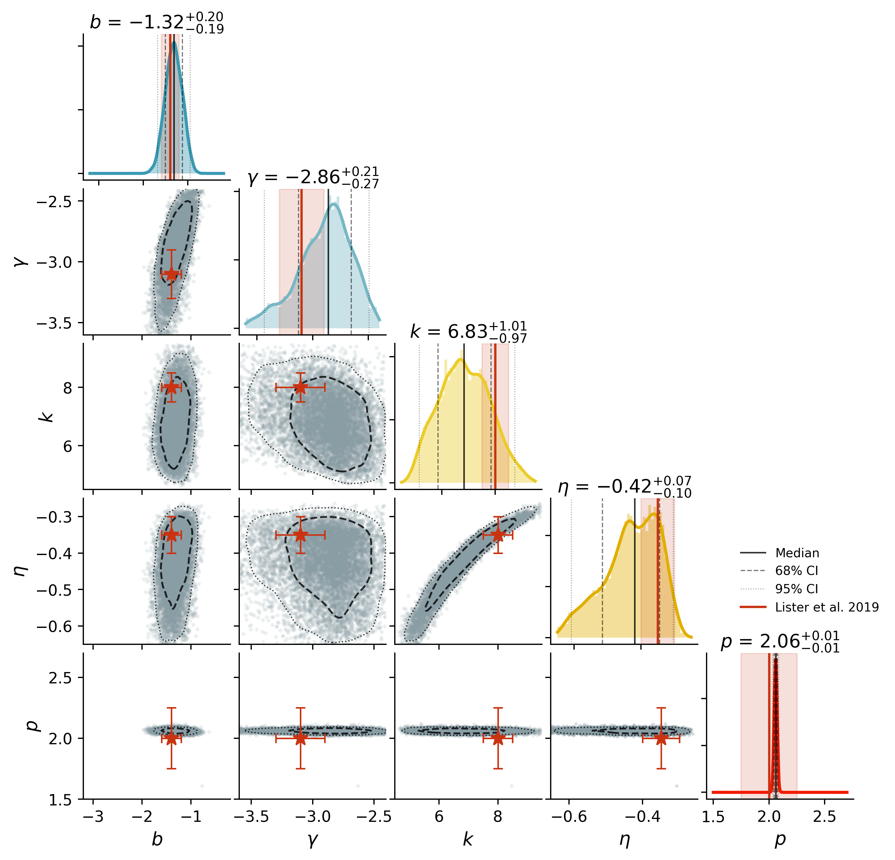
图注：The parameter posteriors from the simulation-based inference model for the FSRQ sub-sample of the MOJAVE 1.5 Jy Quarter century AGN parent population. The red stars indicate the best fit values from \(\protect\cite{lister_mojave_2019}.\) The uncertainties quoted for each parameter are at the $1\sigma$ level.
对应解读：对应“posterior corner plot”和模型拟合段落中关于参数后验形状、非高斯性、退化关系以及旧误差被低估的讨论。
入选理由：这是本文族群反演结果的核心图，直接展示 MOJAVE FSRQ 子样本的 SBI 参数后验，并用红星标出 Lister et al. 2019 的最佳拟合值。它最能支撑日报中关于 b 的约束、参数相关性、非高斯后验和传统估计误差偏小的解读，比单纯流程图更直接关联主要科学结论。
来源与置信度：\(arxiv_source\)；high；\(arxiv_source\) / paper.tex:figure[1]
Fig02
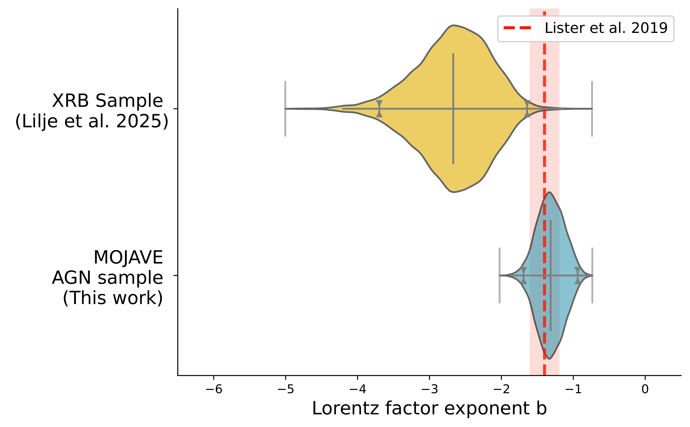
图注：Comparison of posterior for the Lorentz factor exponent $b$, if $N(\Gamma) \propto \Gamma^b$. We show both the posteriors for the XRB large-scale jet population as taken from \(\protect\cite{lilje_kinematics_2025}\) and the posterior for the FSRQ sub-sample of the MOJAVE AGN sample obtained by SBI in this work. A vertical line marks the mean of the population and the arrow markers indicate the $2\sigma$ intervals of both posteriors. As a reference we also show the previous constraints from \(\protect\cite{lister_mojave_2019}\) obtained from the same sample.
对应解读：对应“与旧 AGN 估计和 XRB 分布比较图”以及关键结果中 AGN 与 XRB 的 Lorentz factor 分布斜率在 2σ 内一致的讨论。
入选理由：该图直接比较本文得到的 AGN 洛伦兹因子分布指数 b 后验、XRB 大尺度喷流 b 后验以及旧 MOJAVE 约束，并标出 2σ 区间。它是支撑‘AGN 与 XRB 可比较且在 2σ 水平一致’这一跨尺度物理结论的关键图。
来源与置信度：\(arxiv_source\)；high；\(arxiv_source\) / paper.tex:figure[2]
Fig03
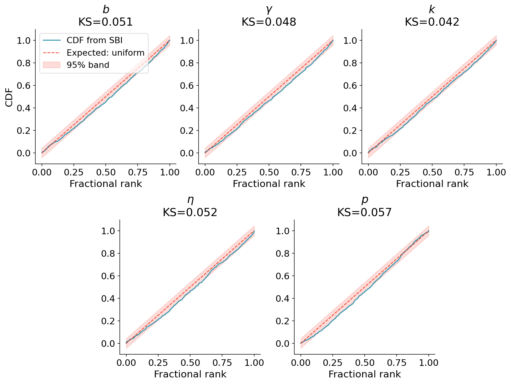
图注：SBC rank plots for each parameter. Resulted from sampling 5000 posterior observations with 1000 samples each. The KS test for a uniform distribution is included as a dashed red reference line with a $95\%$ confidence interval in the shaded region.
对应解读：对应“simulation-based calibration 或 coverage 图”和模型拟合段落中关于后验可信区间是否校准、是否过度自信的诊断。
入选理由：SBC rank plots 是验证 SBI 后验可信度的重要校准图，能检验真值在后验分位数中的分布是否接近均匀，并给出 KS 检验参考线和 95% 区间。它直接支撑日报中‘若覆盖率不对，后验数值即使精确也不可信’的判断。
来源与置信度：\(arxiv_source\)；high；\(arxiv_source\) / paper.tex:figure[3]
Fig04
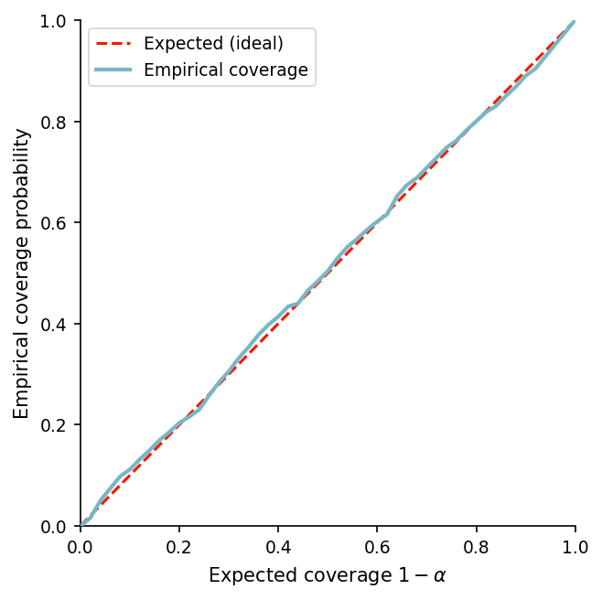
图注：TARP analysis of the trained SBI flow, which displays global calibration of the flow.
对应解读：对应“SBI 校准图或 mock recovery 图”中关于 normalizing flow 全局校准质量的讨论。
入选理由：TARP analysis 展示训练好的 SBI flow 的全局校准，是 Fig03 之外对后验可靠性的独立验证。虽然它不直接给出物理参数 b 的数值比较，但对证明本文 likelihood-free 后验没有明显系统性失准很重要。
来源与置信度：\(arxiv_source\)；high；\(arxiv_source\) / paper.tex:figure[4]
Fig05
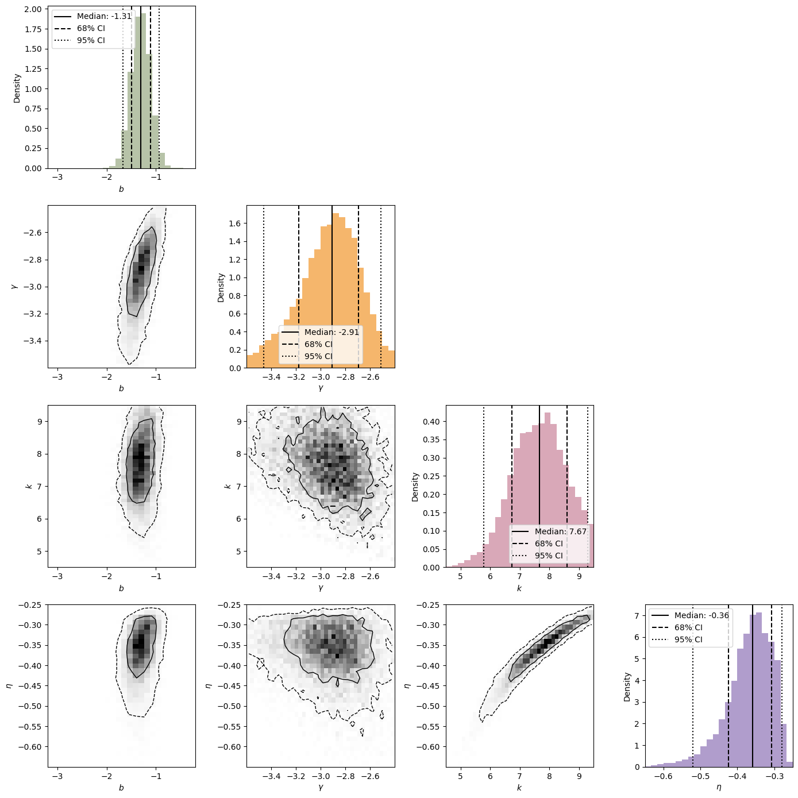
图注：Architecture and training flow of the conditional normalizing flow. Colours group stages (cyan = data / preprocessing; blue = encoder; purple = conditional flow; green/orange = training and hyperparameter search).
对应解读：对应“前向模拟流程或选择函数图”中较广义的方法流程部分，以及 \(detailed_explanation_cn\) 中 normalizing flow 如何从模拟学习后验的说明。
入选理由：该图展示 conditional normalizing flow 的架构和训练流程，有助于读者理解 SBI 管线。但它不是物理选择函数图，也不展示 Gamma、theta、delta 或流量阈值如何筛选样本，因此与日报要求的观测选择效应诊断关系弱于后验图和校准图。
来源与置信度：\(arxiv_source\)；high；\(arxiv_source\) / paper.tex:figure[5]
强相关工作
这篇工作与 MOJAVE 系列 VLBI 观测论文直接相关，属于同一类源、同一巡天样本的族群建模延伸。应检索关键词包括 “MOJAVE 1.5 Jy sample apparent speeds”, “MOJAVE quarter century AGN jets”, “VLBI superluminal motion Lorentz factor distribution”。这些工作提供了表观速度、射电核流量和样本定义，是本文 SBI 模拟器的观测基础。
在理论和方法上，本文延续了相对论性喷流 beaming 统计、AGN 统一模型和 blazar 选择效应研究。经典关键词包括 “relativistic beaming AGN jets”, “Doppler boosting flux limited blazar sample”, “AGN Lorentz factor distribution”。本文的新意不是推翻这些基础，而是用 SBI 更严格地传播选择效应和参数退化。
相似或存在张力的方向包括 XRB 喷流速度分布研究、AGN 与 XRB 喷流统一标度，以及传统解析似然或 KS 检验式族群反演。可检索 “X-ray binary jet Lorentz factor distribution”, “black hole jet speed comparison AGN XRB”, “simulation-based inference astrophysical populations”。本文称 AGN 与 XRB 的分布在 \(2\sigma\) 内一致，因此读者应特别检查 XRB 参考样本是否有独立的选择偏差，例如只观测到明亮瞬态喷流、倾角不确定和距离误差。
同一事件 / 同类源线索：
相似工作：
- https://ui.adsabs.harvard.edu/abs/1995PASP..107..803U/abstract
- https://ui.adsabs.harvard.edu/abs/2009AJ....137.3718L/abstract
- https://ui.adsabs.harvard.edu/abs/2019ApJ...874...43L/abstract
基础理论 / 方法工作：
- https://ui.adsabs.harvard.edu/abs/1979Natur.279..770B/abstract
- https://ui.adsabs.harvard.edu/abs/1995PASP..107..803U/abstract
- https://www.pnas.org/doi/10.1073/pnas.1912789117
相反观点 / 张力线索：
12. Three-Dimensional Expansion of Iron Ejecta in Cassiopeia A with Chandra and XRISM
- 来源：arXiv / astro-ph.HE
- 链接：https://arxiv.org/abs/2608.08412v1
- 作者：Aya Bamba, Tomoki Kadoya, Kouichi Hagino, Jacco Vink, Manan Agarwal, Masahiro Ichihashi, Paul Plucinsky
- 评分：novelty 7/10，importance 8/10，relevance 8/10，final 8.70/10
- 推荐理由：结合Chandra自行和XRISM多普勒测量得到Cas A Fe-K喷发物三维速度结构，约束核心坍缩SNR爆炸和层反转；XRISM高分辨率X射线结果对HE读者有较高价值。
中文题目：用 Chandra 与 XRISM 重建仙后座 A 铁喷出物的三维膨胀
做了什么：这篇文章把 Chandra 多历元成像给出的天球面自行，与 XRISM 对 Fe-K 线的多普勒速度结合起来，构造了仙后座 A 中 Fe-K 发射喷出物的区域平均三维速度图。核心结论是：大多数铁喷出物仍以向外膨胀为主，投影速度最高约为 \(4580\,\mathrm{km\,s^{-1}}\)；东南部铁喷出物三维速度达到 \(5160\pm320\,\mathrm{km\,s^{-1}}\)，高于硅、硫等中等质量元素的典型速度，并且视线速度弥散较小。这支持此前关于核心坍缩超新星中铁丰富内层与中等质量元素层发生“翻转”或强混合的图像。西部区域出现表观内向运动或新的 Fe-K 发射成分，可能与稠密环境相互作用有关，但目前数据尚不能唯一判定其物理来源。
为什么重要：仙后座 A 是研究核心坍缩超新星爆炸非球对称性、喷出物混合和反向激波加热的标杆源。铁本应来自较深层核合成区，如果铁富集物质在三维空间中跑到中等质量元素之外，就直接约束爆炸中的瑞利-泰勒不稳定性、低模态不对称、喷流样结构和中微子驱动湍流。本文的重要性在于把高角分辨率的 Chandra 运动学和高光谱分辨率的 XRISM 线心速度放到同一张速度图里，而不只是分别讨论图像形态或谱线红蓝移。
理论 / 观测 / 仪器方法价值：对理论而言，这项工作给爆炸模拟提供了铁喷出物的三维速度、方向和速度弥散约束，特别是东南高速铁团块和西部异常运动。对观测而言，它展示了 Chandra 长时间基线自行测量与 XRISM 高分辨率 X 射线谱学互补的用法：一个给出天球面速度，一个给出视线速度。对方法而言，光流法用于弥散 X 射线结构的形态追踪，可作为其他年轻超新星遗迹三维运动学研究的模板，但也提醒读者要严肃处理亮度变化、激波加热和新发射结构对“运动”的污染。
为什么应该关注：如果你关心核心坍缩超新星如何把新合成铁抛到外层、为何年轻遗迹会呈现非球对称壳层、或者 XRISM 能给扩展源运动学带来什么新东西，这篇都值得读。它不是简单地说“Cas A 在膨胀”，而是在问铁喷出物到底向哪里、以多快、以多大内部弥散运动；这些量正是把遗迹观测和爆炸三维流体模拟连接起来的关键。
展开详细解读：文章讲解、背景、理论、重点章节、图表与相关工作
文章详细讲解
科学问题：仙后座 A 是年龄约数百年的银河系核心坍缩超新星遗迹，离我们近、角尺寸大、X 射线亮，是研究喷出物动力学的少数对象之一。铁峰元素在爆炸前位于更深层，按一维分层图像应比硅、硫等中等质量元素更靠内、更慢；但 Cas A 的 X 射线和 \(^{44}\mathrm{Ti}\) 观测早已显示铁富集物质分布非常不均匀，部分铁可能已经越过中等质量元素层。本文聚焦的问题是：Fe-K 发射喷出物在三维空间中的真实速度结构是什么？这些铁是在整体外膨胀，还是局部受环境作用产生反常运动？
作者怎么做：文章把两类互补观测量结合起来。第一类是 Chandra 多历元成像，利用其亚角秒级角分辨率和二十多年时间基线测量 Fe-K 发射结构在天球面上的位移；作者采用光流法，而不是只追踪少数手工选定团块，从而得到区域平均的投影速度场。第二类是 XRISM 的高分辨率 X 射线谱学，利用 Fe-K 线心偏移测量视线方向多普勒速度，并用线宽或区域内速度分布刻画视线速度弥散。两者结合后，可近似得到 Fe-K 发射气体的三维速度矢量。
关键结果：大多数 Fe-K 发射区的运动方向与从爆炸中心向外的径向膨胀一致，天球面投影速度最高约 \(4580\,\mathrm{km\,s^{-1}}\)。最突出的区域在东南部，结合自行和多普勒速度后得到三维速度 \(5160\pm320\,\mathrm{km\,s^{-1}}\)。这个速度高于以往对硅、硫等中等质量元素喷出物的测量，且对应区域的视线速度弥散相对较小，说明它更像是一支相干的高速铁富集结构，而不只是多种速度成分在谱线中混叠。作者认为这与 Fe-rich 与 IME-rich 喷出层的翻转或强混合图像相容。
局限和下一步：本文给出的三维速度图是“区域平均”和“近似”的，因为 Chandra 图像中的亮度结构会随反向激波加热、冷却、非平衡电离和环境密度变化而演化，光流测到的并不总是纯粹物质位移。XRISM 的角分辨率又明显低于 Chandra，视线速度在空间混合后需要谨慎解释。尤其是西部区域的表观内向运动，既可能是喷出物与稠密周围介质相互作用导致的真实减速或回流，也可能是新 Fe-K 发射成分出现造成的形态假运动。下一步需要更长时间基线、更多能带的联合光流测量、更精细的 XRISM 区域谱分解，以及与三维流体和非平衡电离模拟直接比较。
关键结果是怎么做出来的
数据与样本选择方面，本文围绕 Cas A 中 Fe-K 发射最明显的区域展开，而不是对整个宽带 X 射线壳层做无差别运动学分析。Fe-K 发射主要追踪被反向激波加热到 X 射线温度、且铁丰度较高的喷出物，因此样本本身已经偏向“正在发光”的铁团块。作者把 Chandra 多历元图像配准到共同坐标系后，在 Fe-K 能段上用光流法估计局部位移，再把空间区域与 XRISM 光谱提取区对应起来，得到每个区域的投影速度与多普勒速度。
最重要的事件数或样本量不是点源计数意义上的“多少个事件”，而是若干 Fe-K 发射区域和每个区域内的 X 射线光子统计。Chandra 部分依赖多历元图像的形态一致性和时间基线；XRISM 部分依赖 Fe-K 线的线心、线宽和背景建模。读者应重点关注作者如何定义区域、如何处理 Chandra 与 XRISM 不同点扩散函数造成的空间混合，以及是否排除了强烈变化或信噪比较低的区域，因为这些选择会直接影响三维速度矢量。
显著性和置信度主要体现在速度误差与区域间速度差异上。东南部三维速度 \(5160\pm320\,\mathrm{km\,s^{-1}}\) 是本文最醒目的定量结果；其误差应来自投影速度误差和多普勒速度误差的合成。该速度高于中等质量元素速度的结论，关键不只是数值大，还在于 Fe-K 的视线速度弥散较小，降低了“其实是多个成分混合导致线心偏移”的解释空间。若论文中给出速度矢量图、区域谱线拟合表和 Fe-K 线残差图，这些应共同支撑该结论。
统计与模型比较方面，Chandra 光流结果通常需要与简单径向自相似膨胀模型比较：若位移方向与爆炸中心连线一致，则支持自由或近自由膨胀；若偏离或指向内侧，则提示环境相互作用、新发射成分或模式识别失败。XRISM 光谱部分则通常通过含高斯线、连续谱和背景成分的谱模型估计线心能量，并把线心偏移换算为 \(v_{\rm los}\)。读者应看作者是否给出替代谱模型、不同能段背景、不同区域划分下速度是否稳定。
系统误差主要有四类。第一，图像配准误差和 Chandra 有效点扩散函数变化会给微小位移带来系统偏差。第二，Fe-K 亮度变化会让光流把“变亮的新结构”误当成“物质移动”。第三，XRISM 的较大角分辨率会把相邻红移和蓝移成分混在一个谱中，使线心偏移变成加权平均。第四，爆炸中心、距离和年龄的采用值会改变从角速度到线速度的换算。本文对西部异常运动的谨慎表述，正是这些系统误差和物理复杂性共同作用的结果。
支撑结论的图表应包括 Fe-K 图像和区域定义图、Chandra 光流速度矢量图、XRISM Fe-K 线心或多普勒速度图、三维速度幅值图，以及速度与方位角或元素种类的比较图。最重要的读法是把东南区域与西部区域分开看：前者强调高速、相干、外向；后者强调运动方向异常和物理解读非唯一。
展开背景、理论、公式、模型、章节和图表导读
背景知识
研究对象是仙后座 A，也就是 Cas A，银河系内最年轻、最亮的核心坍缩超新星遗迹之一。它的年龄约为几百年，距离约为几千秒差距量级，角直径只有数角分，因此 Chandra 可以在二十多年基线上直接测出 X 射线结构的角位移。Cas A 中的喷出物、前向激波、反向激波、非热同步辐射丝状结构和富金属热等离子体交织在一起，是一个复杂但信息密度极高的实验场。
历史问题是核心坍缩超新星是否保持“洋葱壳”式分层。爆炸前的大质量恒星从内到外大致有铁峰元素、硅硫钙等中等质量元素、氧氖镁、碳氧层以及氢氦包层；若爆炸是一维、球对称且混合弱，铁峰元素应更靠内、速度更低。可是 Cas A 的 X 射线谱成像、光学快结、红外尘埃和 \(^{44}\mathrm{Ti}\) 观测都显示喷出物高度非球对称，铁和钛的空间分布尤其提示深层物质曾被强烈搅拌或以羽流形式抛出。
观测背景上，Chandra 的优势是空间分辨率和长期稳定的成像能力，可用于自行测量；缺点是 CCD 能谱分辨率不足以精细分离复杂的 Fe-K 线结构。XRISM 的 Resolve 微量热计则能以数 \(\mathrm{eV}\) 量级能量分辨率测量 X 射线线心和线宽，适合做多普勒速度，但其角分辨率不能像 Chandra 那样分辨细小团块。把两者联合，正好补上“天球面速度”和“视线速度”的缺口。
这个问题现在值得重新看，是因为 XRISM 让扩展源 X 射线谱学进入了高分辨率阶段，而 Cas A 又有极长的 Chandra 档案基线。过去对三维结构的讨论常依赖光学结、低分辨率 X 射线谱或模型重建；现在可以针对 Fe-K 发射本身同时测 \(v_x\)、\(v_y\) 和 \(v_z\)。这对检验三维爆炸模拟尤其关键，因为模型输出的不是二维投影图，而是元素丰度、温度、电离年龄和速度的三维分布。
常见误区之一是把 Fe-K 亮区直接等同于全部铁质量分布。实际上 Fe-K 发射需要合适的温度、电离状态和激波加热历史，未被反向激波加热或温度不合适的铁可能并不亮。另一个误区是把图像位移完全看成物质运动；在年轻遗迹中，亮度模式可能因激波穿过密度结构而改变。第三个误区是把线宽全解释为湍流或速度弥散，忽略仪器响应、热展宽、多组分混合和非平衡电离线复合的贡献。
基础理论 / 方法脉络
基础物理图像可以从自由膨胀的超新星喷出物说起。爆炸后不久，若忽略外部介质阻力，每个喷出物团块以近似恒定速度运动，位置满足 \(r\propto t\)。进入遗迹阶段后，前向激波扫过星周或星际介质，反向激波向内穿过喷出物并把富金属气体加热到 X 射线温度。Fe-K 发射并不是“所有铁”的示踪，而是被加热并处在合适电离状态的铁的示踪。
三维速度由两个观测维度组成。Chandra 给出天球面上的角位移 \(\Delta \theta\)，除以时间基线 \(\Delta t\) 得到自行 \(\mu\)，再乘以距离 \(D\) 得到横向速度。XRISM 通过谱线能量偏移得到视线速度：若 Fe-K 线实验室能量为 \(E_0\)，观测线心为 \(E_{\rm obs}\)，在非相对论极限下能量相对偏移对应 \(v_{\rm los}/c\)。两者合成可得速度幅值和方向。
本文的一个关键方法点是光流法。光流法假设图像亮度结构在短时间间隔内主要被平移搬运，即亮度随流场移动而近似守恒。对弥散喷出物，这比只选几个明亮结点更系统，但也更依赖“亮度变化不太剧烈”的假设。Cas A 中反向激波持续点亮新物质，所以光流速度需要与残差图、区域谱和物理环境一起判断。
XRISM 谱学的关键量包括 Fe-K 线心、线宽、线通量、连续谱温度、非平衡电离参数和背景。线心给平均 \(v_{\rm los}\)，线宽可包含热展宽、湍流或多速度成分混合。若一个区域同时包含红移和蓝移团块，观测到的线心只是通量加权平均，线宽则可能变大。因此东南部“高速且小视线速度弥散”的结果特别有意义，因为它更接近单一相干运动成分。
主要退化关系包括距离 \(D\) 与横向速度的线性退化、爆炸中心选择与径向方向判断的退化、线宽中热速度与非热速度的退化，以及元素丰度、温度和电离年龄对 Fe-K emissivity 的退化。系统误差还来自 Chandra 历元间校准、XRISM 点扩散函数混合、背景和连续谱建模，以及区域划分的人为选择。
公式与推导
第一步，把年轻遗迹中的喷出物近似看成从爆炸中心出发的弹道运动。在无显著减速的极限下，位置与速度满足
其中 \(\mathbf{r}\) 是相对爆炸中心的位置，\(\mathbf{v}\) 是三维速度，\(t_0\) 是爆炸时刻。这个式子给出判断“外向膨胀”的基准：速度方向应与 \(\mathbf{r}\) 大致平行。
第二步，Chandra 图像测到的是角位移。若某结构在时间 \(\Delta t\) 内移动 \(\Delta \theta\)，自行为
其中 \(\mu\) 通常以 \(\mathrm{arcsec\,yr^{-1}}\) 表示。给定距离 \(D\)，横向速度为
这里 \(v_\perp\) 的单位是 \(\mathrm{km\,s^{-1}}\)，\(\mu\) 用 \(\mathrm{arcsec\,yr^{-1}}\)，\(D\) 用 \(\mathrm{pc}\)。距离误差会线性传递到 \(v_\perp\)。
第三步，光流法把两历元图像 \(I(x,y,t)\) 的变化写成亮度守恒近似：
其中 \((u_x,u_y)\) 是图像平面速度场，\(I\) 是 Fe-K 能段表面亮度。这个方程隐含假设是结构主要平移而非突然变亮或变暗；在反向激波点亮新铁团块时，该假设可能失效。
第四步，XRISM 通过多普勒位移测视线速度。非相对论近似下，线心能量偏移满足
其中 \(E_0\) 是静止系 Fe-K 线能量，\(E_{\rm obs}\) 是观测线心，\(v_{\rm los}\) 是远离观测者为正或按论文约定定义的视线速度，\(c\) 是光速。符号约定必须与论文保持一致。
第五步，三维速度幅值由横向与视线分量合成：
若 Chandra 给出两个天球面分量 \((v_x,v_y)\)，则 \(v_\perp=\sqrt{v_x^2+v_y^2}\)。本文东南区域的 \(v_{\rm 3D}=5160\pm320\,\mathrm{km\,s^{-1}}\) 就是这类合成量。
第六步，误差传播可近似写为
其中 \(\sigma(v_\perp)\) 和 \(\sigma(v_{\rm los})\) 分别来自光流位移和谱线线心拟合。若两者存在共同系统误差，例如区域混合，则还应加入协方差项。
第七步，谱线宽度可以分解为仪器、热运动和非热或多组分速度弥散的贡献：
这里 \(\sigma_E\) 是观测能量宽度，\(\sigma_{E,{\rm inst}}\) 是仪器响应宽度，\(\sigma_{v,{\rm th}}\) 是热速度弥散，\(\sigma_{v,{\rm nt}}\) 包括湍流和未分辨多速度成分。东南区域较小的视线速度弥散意味着 \(\sigma_{v,{\rm nt}}\) 或多成分混合不大。
第八步，谱拟合通常通过泊松似然或 \(C\) 统计量完成。若第 \(i\) 个能道观测计数为 \(n_i\)，模型预期为 \(m_i(\boldsymbol{\theta})\)，则
其中 \(\boldsymbol{\theta}\) 包括线心、线宽、通量、连续谱和背景参数。比较不同速度模型或谱模型时，\(\Delta C\) 可用于近似评估拟合改善，但必须注意参数边界和系统误差。
第九步，径向外膨胀可用速度与位置方向的夹角诊断：
若 \(\cos\psi\simeq 1\)，图像平面运动近似外向；若 \(\cos\psi<0\)，则表现为内向或反径向运动。本文西部区域的异常正应在这类诊断上特别检查，同时结合亮度残差判断是否为新发射成分导致。
模型拟合 / 应用方法
本文涉及两套拟合逻辑。第一套是图像运动拟合：把不同历元的 Chandra Fe-K 图像配准后，用光流法求局部位移场。待估参数不是传统意义上的少数全局参数，而是每个像素或每个区域的二维速度分量。实际应用中通常需要正则化或平滑，以避免噪声被解释为剧烈速度波动；这会在空间分辨率和速度精度之间引入折中。
第二套是 XRISM 谱线拟合：对每个区域建立包含连续谱、Fe-K 线复合体、可能的其他弱线和背景的谱模型，通过 \(C\) 统计量或等价泊松似然估计线心和线宽。线心给出通量加权平均视线速度，线宽给出热展宽、湍流、多成分混合和仪器响应卷积后的总宽度。若模型没有充分描述非平衡电离下的 Fe-K 复合线结构，线心可能带有系统偏差。
参数退化非常重要。横向速度与距离 \(D\) 完全线性相关，因此任何距离假设都会直接进入速度标尺。光流速度与亮度演化退化：一个新变亮的结构可能让算法给出虚假的位移。谱线线宽与多速度成分退化：宽线既可来自一个区域内速度弥散，也可来自多个空间上未分辨团块。铁丰度、电子温度和电离年龄会共同控制 Fe-K emissivity，使“发光铁”的分布不等于“铁质量”的分布。
残差诊断应分两类看。图像残差方面，应检查用测得光流把早期图像推进到晚期后，哪些区域仍有正负残差；强残差区域可能是亮度变化或新发射，而非真实物质位移。谱残差方面，应检查 Fe-K 线峰附近是否有系统性偏离，尤其是单一高斯或单一速度成分是否无法描述线翼。若东南区残差小且线宽窄，高速铁团块的解释就更稳健。
模型可能失败的场景包括：反向激波正好穿过铁团块导致发射快速增强；XRISM 提取区包含多个 Chandra 可分辨但速度不同的团块；背景或非热连续谱估计错误改变线心；以及西部区域受稠密分子云或星周介质影响，运动不再接近弹道。本文对西部区域不做唯一解释，是合理的保守处理。
实际应用上，这类联合拟合可推广到其他年轻遗迹，例如 \(\mathrm{G1.9+0.3}\)、Kepler、Tycho 或大麦哲伦云中的年轻遗迹，但前提是有足够长的高分辨率成像基线和可分离的金属线。对未来 Athena、Lynx 或更高角分辨率 X 射线微量热计任务来说，Cas A 是验证扩展源三维运动学分析链条的天然标定场。
重点章节 / 结果段落怎么读
数据与样本部分应首先读清楚作者选取了哪些 Chandra 历元、Fe-K 能段如何定义、图像如何配准，以及 XRISM 谱提取区域如何与 Chandra 图像区域对应。这里决定了速度测量的空间基准和系统误差下限。尤其要关注爆炸中心、距离和时间基线的采用值。
方法部分的重点是光流法。读者应看作者如何处理图像平滑、曝光校正、背景扣除、低信噪区域遮罩和速度场正则化。光流法的结果很容易看起来“连续而漂亮”，但其可靠性取决于亮度守恒假设和残差检验。
XRISM 谱分析部分应关注 Fe-K 线心和线宽如何测量。需要看谱模型是否包含非平衡电离等离子体、连续谱、背景和仪器响应卷积；还要看不同区域的线心偏移、线宽和误差是否在表格中给出。若有替代模型或系统误差预算，应优先阅读。
主结果部分应围绕三维速度图来读。重点是东南高速区域的 \(v_{\rm 3D}\)、大多数区域外向膨胀的证据，以及西部表观内向运动或新 Fe-K 成分的证据链。不要只看颜色图的最大值，要同时看误差、区域大小和线宽。
讨论部分应读作者如何把铁速度与硅、硫等中等质量元素速度比较，并如何联系到 Fe-rich 与 IME-rich 层翻转。这里的关键不是简单比较“谁更快”，而是比较不同元素是否在同一空间方向、同一激波加热条件和同一选择函数下被观测到。
附录或稳健性检验若存在，应重点看不同区域划分、不同平滑尺度、不同谱模型、不同爆炸中心或距离假设对速度结论的影响。对西部异常区域，附录中的残差图和替代解释通常比正文结论更能说明问题。
建议重点查看的图表
-
Fe-K Chandra 图像与区域划分图：看 Fe-K 亮区如何被分区，东南高速区和西部异常区是否边界清楚，是否可能包含多个结构。
-
Chandra 光流速度矢量图：看箭头是否大体从爆炸中心向外，西部箭头是否显著偏离径向方向，低信噪区域是否被遮罩。
-
光流残差或两历元差分图：看哪些地方存在强正负残差，判断速度场是否可能被亮度变化污染。
-
XRISM Fe-K 谱线拟合图：看每个关键区域的线心偏移、线宽和残差，尤其东南区域是否线窄且拟合良好。
-
多普勒速度或视线速度弥散图：看红移和蓝移成分是否空间分离，XRISM 空间混合是否可能影响线心。
-
三维速度幅值图或表：看 \(v_\perp\)、\(v_{\rm los}\) 和 \(v_{\rm 3D}\) 的误差如何合成，东南 \(5160\pm320\,\mathrm{km\,s^{-1}}\) 是否明显高于其他区域。
-
与中等质量元素速度的比较图或表：看 Fe-K 与 Si、S 的速度比较是否在同一区域或同一参考系下完成，避免选择效应造成误读。
-
系统误差汇总表：看距离、配准、谱模型、区域选择和仪器响应对速度的影响量级。
关键图表逐图导读
图 1：通常应是 Cas A 的 Chandra Fe-K 能段图像叠加分析区域。横纵轴应为天球坐标或相对爆炸中心的角距离，颜色表示 Fe-K 表面亮度。读者要看东南和西部区域是否由明亮、连续的 Fe-K 结构主导；若一个区域内有多个离散亮斑，XRISM 的谱线速度可能是混合平均。陷阱是把亮度最高处误认为铁质量最高处，因为 Fe-K 亮度还依赖温度和电离状态。
图 2：应重点查看 Chandra 光流得到的二维速度矢量场。坐标轴仍是天球位置，箭头方向表示投影运动方向，箭头长度或颜色表示 \(v_\perp\)。主要结论应是大多数 Fe-K 结构向外膨胀，最高投影速度约 \(4580\,\mathrm{km\,s^{-1}}\)。读图陷阱是忽略箭头背后的正则化和平滑；边缘或低信噪区的箭头不一定可靠。
图 3：若论文给出光流残差、两历元差分或模型推进图，这张图是判断方法可信度的关键。坐标轴为空间位置，颜色表示观测晚期图像与由早期图像按速度场推进后的差值。若西部出现强残差，说明表观内向运动可能不是物质真的向内，而是新 Fe-K 发射成分或亮度演化。读者应把残差图与速度矢量图并排看。
图 4：XRISM Fe-K 谱线拟合图应以能量为横轴、计数或通量为纵轴，模型线叠加在数据点上，下方给出残差。东南区域应表现为线心偏移明确、线宽相对较小、残差无系统结构。陷阱是 Fe-K 不是单条孤立线，而是复合线；若模型过于简单，线心速度可能吸收原子物理或电离结构误差。
图 5：多普勒速度图或区域速度表应显示 \(v_{\rm los}\) 的空间变化。读者要看红移和蓝移区域是否与 Chandra 的形态结构对应，以及 XRISM 点扩散函数是否可能把相邻区域混合。若线宽在某些区域很大，那里用单一 \(v_{\rm los}\) 代表物理速度就要谨慎。
图 6：三维速度合成图或方位角分布图应把 \(v_\perp\)、\(v_{\rm los}\) 合成为 \(v_{\rm 3D}\)。重点看东南区域 \(5160\pm320\,\mathrm{km\,s^{-1}}\) 是否为全样本最高，以及误差棒是否仍使其高于中等质量元素速度。读图陷阱是颜色条最大值容易强化视觉印象，真正判断要看误差和系统项。
图 7：与 Si、S 等中等质量元素的比较图如果存在，横轴可能是方位角或区域编号，纵轴是速度或膨胀率。结论应是 Fe-K 在东南方向速度超过 IME，支持层翻转或强混合。陷阱是不同元素的发射条件不同；Fe-K 与 Si、S 亮区不一定采样同一批物质。
论文原图 / 可嵌入图片
Fig06
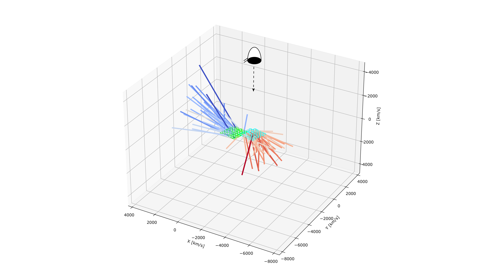
图注：The approximate region-averaged three-dimensional motion map of the Fe-K complex (arrows) with Resolve field of view. The arrow length represents the velocity magnitude, while the color indicates the line-of-sight Doppler velocity adopted from XRISM/Resolve measurements. X, Y, and Z represent east-west, north-south, and line-of-sight directions, respectively. The displayed velocities should be interpreted as approximate region-averaged quantities because of the broad Resolve PSF. Cas~A is viewed from above, as indicated by the eye symbol. {Alt text: An image showing three-dimensional motion of Fe-K complex.}
对应解读：建议重点查看的图表第5、6项；关键图表逐图导读图6；三维速度合成与XRISM多普勒速度解释段落。
入选理由：这是候选图中最直接支撑论文核心结论的图：把Chandra自行与XRISM/Resolve视线多普勒速度合成为近似三维运动图，箭头长度表示速度幅值、颜色表示视线速度，并明确标出Resolve视场和PSF导致的区域平均限制。它最适合用来解读东南Fe-K喷出物为何成为高速三维结构，以及红蓝移空间分布和XRISM空间混合的风险。
来源与置信度：\(arxiv_source\)；high；\(arxiv_source\) / arxiv.tex:figure[6]
Fig05
图注：The proper motion map of Fe-K complex (arrows) overlaid on the Fe-K complex intensity map. Arrow lengths represent the magnitude of the projected expansion velocity. Yellow arrows indicate velocities larger than the estimated systematic astrometric uncertainty (660~km~s$^{-1}$), while white arrows indicate velocities comparable to or smaller than this uncertainty. The images are binned with a pixel size of 0.5~arcsec. {Alt text: An image showing proper motion of Fe-K complex.}
对应解读：建议重点查看的图表第2项；关键图表逐图导读图2；图像运动拟合与光流速度场段落。
入选理由：该图是Fe-K自行速度矢量场叠加在强度图上的主图，箭头长度直接对应投影膨胀速度，并用黄色/白色区分是否超过660 km/s系统配准不确定度。它能检验大多数Fe-K结构是否径向外膨胀、西部箭头是否异常，以及最高投影速度约4580 km/s这一结论的空间来源。
来源与置信度：\(arxiv_source\)；high；\(arxiv_source\) / arxiv.tex:figure[5]
Fig09
图注：Left: The smoothed and clipped Fe K map of Cas A, based on the 2004 VLP data. This image forms the basis for making an Fe K bright mask. Center: the mask derived from the Fe K map. Right: The mask for the Fe K map with the grid of the available XRISM/Resolve pixels for the NW and SE pointings. {Alt text: Fe K maps with Chandra.}
对应解读：建议重点查看的图表第1、5项；关键图表逐图导读图1和图5中关于Fe-K区域划分、XRISM像素混合和亮区掩膜的讨论。
入选理由：该图展示2004年Chandra Fe-K图、Fe-K亮区mask以及NW/SE两次XRISM/Resolve可用像素网格，是理解区域平均速度和XRISM空间混合的关键辅助图。相比单纯Fe-K图像，它同时给出亮区选择与Resolve像素覆盖，能帮助判断东南和西部区域是否可能包含多个Chandra可分辨结构。
来源与置信度：\(arxiv_source\)；high；\(arxiv_source\) / arxiv.tex:figure[9]
Fig04
图注：An example of $dt$ vs. $dx$ (blue) and $dy$ (red) in the XRISM/Resolve pix 13 in the SE observation. Dashed lines represent the best-fit line of the displacement. The error bars represent the adopted uncertainties of the region-averaged proper motions, obtained by combining the estimated regional vector scatter with the astrometric uncertainty. {Alt text: A line graph.}
对应解读：模型拟合段落中关于Chandra光流/位移拟合、区域平均自行误差和系统配准误差的说明。
入选理由：该图给出XRISM SE观测中pix 13区域的dt与dx、dy关系及最佳拟合直线，直接展示如何从多历元位移斜率得到区域平均proper motion，并包含由区域矢量散布和天体测量不确定度合成的误差棒。它比普通两历元图更能支撑日报中对速度拟合方法、误差来源和正则化/亮度演化退化的解读。
来源与置信度：\(arxiv_source\)；high；\(arxiv_source\) / arxiv.tex:figure[4]
Fig10
图注：Results of the radial expansion measurements. Left: the expansion parameter, defined as $m\equiv t_{\rm Cas A}/\tau_{\rm exp} \propto a_j$, with $t_{\rm Cas A}=332$ the approximate age of Cas A in 2004 \(\citep{thorstensen2001}.\) Right: the measured radial proper motions $v_{\rm prop}$ in km\,s$^{-1}$. {Alt text: Expansion measurement maps of Fe K.}
对应解读：建议重点查看的图表第6、8项；关键图表逐图导读图6中关于v_perp、误差和系统项的讨论；附录径向膨胀测量。
入选理由：该图给出Fe-K径向膨胀参数和径向proper motion速度图，是对主文光流速度场的独立/补充诊断，可用于检查投影速度幅值、径向膨胀假设和系统误差影响。它有助于避免只凭箭头图判断速度，尤其适合与Fig05和Fig06并列比较。
来源与置信度：\(arxiv_source\)；high；\(arxiv_source\) / arxiv.tex:figure[10]
Fig11
图注：Comparison of the proper motions based on the optical flow method (main text) with the radial expansion measurements (appendix). {Alt text: Comparison of two proper motion measurements.}
对应解读：模型拟合段落中关于光流法与径向膨胀测量交叉检验、系统误差和方法可靠性的讨论。
入选理由：该图比较主文光流proper motion与附录径向膨胀测量结果，能直接服务于日报里对方法稳健性和系统误差的关注。虽然不如三维速度图和主速度矢量图承载核心物理结论，但它是候选图中少数能检验速度测量方法依赖性的图。
来源与置信度：\(arxiv_source\)；high；\(arxiv_source\) / arxiv.tex:figure[11]
强相关工作
与同一源 Cas A 的既有工作相比，本文位于三条研究线的交叉处。第一条是 Chandra 对 Cas A 喷出物和激波的长期成像研究，包括铁、硅、硫等元素的空间分布和自行。第二条是三维重建工作，例如利用光学快结、红外和 X 射线速度信息恢复喷出物几何。第三条是 \(^{44}\mathrm{Ti}\) 观测，特别是 NuSTAR 对钛分布的测量，它同样追踪深层爆炸产物并指向非球对称爆炸。
理论上，本文与中微子驱动核心坍缩爆炸的三维模拟、低模态不稳定性、瑞利-泰勒混合和喷出物层翻转问题直接相关。相反或需要谨慎对待的观点是：Fe-K 亮度结构未必代表铁质量结构，且表观运动可能由电离和加热历史造成。因此检索时应同时使用关键词“Cassiopeia A Fe-K proper motion”、“Cas A XRISM Doppler”、“Cas A ejecta inversion”、“Cas A titanium-44 NuSTAR”、“core-collapse supernova Rayleigh-Taylor mixing”。
同一事件/同一源论文包括 Cas A 的 Chandra 元素分布、三维重建、NuSTAR \(^{44}\mathrm{Ti}\) 成图和历史爆炸模型。相似类别论文可检索 Tycho、Kepler、\(\mathrm{G1.9+0.3}\) 等年轻超新星遗迹的自行和 X 射线谱运动学。综述类关键词包括“supernova remnants ejecta mixing review”和“Cassiopeia A review”。
同一事件 / 同类源线索：
- https://arxiv.org/abs/2608.08412
- https://arxiv.org/pdf/2608.08412
- https://chandra.harvard.edu/photo/2000/0052/
- https://simbad.u-strasbg.fr/simbad/sim-id?Ident=Cassiopeia%20A
相似工作：
- https://arxiv.org/abs/1403.4978
- https://ui.adsabs.harvard.edu/abs/2010ApJ...725.2038D/abstract
- https://ui.adsabs.harvard.edu/abs/2012ApJ...746..130H/abstract
基础理论 / 方法工作：
- https://ui.adsabs.harvard.edu/abs/1995ApJ...440..706B/abstract
- https://ui.adsabs.harvard.edu/abs/2006ARA%26A..44..507R/abstract
- https://ui.adsabs.harvard.edu/abs/2017ARA%26A..55...59J/abstract
相反观点 / 张力线索：
13. Probing Memory-Burdened Primordial Black Holes with High-Energy Neutrinos
- 来源：arXiv / astro-ph.HE
- 链接：https://arxiv.org/abs/2608.08144v1
- 作者：Arian Moradi Asl, Sandhya Choubey, Andreas Lund
- 评分：novelty 7/10，importance 8/10，relevance 8/10，final 8.70/10
- 推荐理由：研究memory-burdened PBH的高能/超高能中微子信号，使用IceCube数据约束并预测IceCube-Gen2和GRAND灵敏度；虽偏奇异PBH模型，但与高能中微子天文学和多信使探测直接相关。
中文题目：用高能中微子探测具有“记忆负担”效应的原初黑洞
做了什么：这篇文章研究一种非标准原初黑洞蒸发图像：如果黑洞在晚期蒸发中受到“记忆负担”效应抑制，质量低于标准 Hawking 寿命阈值的原初黑洞仍可能存活到今天，并通过蒸发产生高能到超高能中微子。作者用 IceCube 的 HESE、MESE 和 EHE 数据给出当前限制，并预估 IceCube-Gen2 radio 与 GRAND200k 的未来灵敏度；同时比较单质量函数与对数正态质量函数。核心结论是：对数正态分布的低质量尾会显著增强高能中微子通量，因此同样中位质量下通常比单质量模型更容易被限制；当前 IceCube 对较小记忆负担参数更有约束力，而未来射电中微子阵列对较大参数空间更敏感。
为什么重要：标准图像中，小于约 \(10^{15}\,\mathrm{g}\) 的原初黑洞今天应已蒸发殆尽，因此这一质量区间通常不再作为存活暗物质候选来讨论。记忆负担效应如果成立，会重新打开轻质量原初黑洞的宇宙学窗口，并把可观测信号推到高能中微子能段。本文的重要性在于，它把一个偏量子引力/黑洞微观态的理论假设转化为 IceCube 和未来超高能中微子实验可检验的通量限制、灵敏度预估和质量函数判别问题。
理论 / 观测 / 仪器方法价值：对理论而言，本文给出记忆负担原初黑洞在不同质量函数下的可观测后果，说明不能只用单质量近似理解限制。对观测而言，它把 HESE、MESE、EHE 三类 IceCube 数据与未来 radio 阵列统一放进事件率/似然框架，指出不同能段对记忆负担参数 \(k\)、质量尺度和丰度 \(f_{\mathrm{PBH}}\) 的互补性。对方法而言，文章强调质量函数低质量尾对高能通量的非线性放大，这是许多原初黑洞限制在扩展质量函数下都会遇到的关键问题。
为什么应该关注：如果你关心原初黑洞暗物质，这篇文章提醒你：晚期蒸发物理的不确定性可能改变“哪些质量已经被排除”的基本图景。如果你关心高能中微子天文学，它给出了一类非天体加速器来源的可检验模板，并说明 IceCube-Gen2 与 GRAND200k 不只是增加统计量，还会改变可探测的黑洞参数区间。如果你做模型约束或预言，这篇文章的一个实用教训是：扩展质量函数的尾部往往比中位质量本身更决定信号。
展开详细解读：文章讲解、背景、理论、重点章节、图表与相关工作
文章详细讲解
科学问题：标准 Hawking 蒸发给出一个清晰结论，质量低于约 \(10^{15}\,\mathrm{g}\) 的原初黑洞在宇宙年龄内会完全蒸发，因此今天不应作为存活种群贡献暗物质或持续辐射背景。但“记忆负担”设想认为，黑洞在蒸发后期会因内部微观态信息或量子记忆效应而降低蒸发效率，使剩余寿命大幅延长。这样一来，传统上已经被认为消失的轻质量原初黑洞可以存活到今天，并在当前宇宙中释放高能粒子，尤其是高能和超高能中微子。
作者怎么做：论文把记忆负担效应参数化为一个控制晚期蒸发抑制强度的参数 \(k\)，并计算存活原初黑洞种群的中微子注入谱、宇宙学传播后的弥散通量以及在具体实验中的事件数。作者分别考虑单质量函数和对数正态质量函数，后者由中位质量和宽度描述。观测端使用 IceCube 已有的 HESE、MESE 和 EHE 数据进行约束，并对 IceCube-Gen2 radio 与 GRAND200k 做未来灵敏度预估。
关键结果：当前 IceCube 数据已经能对一部分记忆负担原初黑洞参数空间给出领先限制，尤其在较小 \(k\) 情形下，因为蒸发仍较强，现有高能中微子样本足以限制其丰度。对于较大 \(k\)，晚期蒸发被更强烈抑制，信号峰值和强度进入未来超高能中微子实验更擅长的区域，因此 IceCube-Gen2 radio 和 GRAND200k 的提升更明显。文章还指出，对数正态质量函数往往比同中位质量的单质量函数受到更强限制，原因不是中位质量处的黑洞更多，而是低质量尾部黑洞温度更高、单位质量的高能中微子产额更大。
局限和下一步：本文结果依赖于记忆负担效应的具体参数化，而这一效应本身还不是已由完整量子引力理论严格推导并普遍接受的定论。高能中微子端还受到大气背景、天体弥散背景、探测器有效面积、地球吸收和能量重建误差影响。下一步值得做的是把中微子限制与 \(\gamma\) 射线、宇宙线、\(N_{\mathrm{eff}}\)、BBN 和 CMB 能量注入约束联合起来，并检验不同记忆负担模型或不同扩展质量函数形状是否会改变本文的质量函数判别结论。
关键结果是怎么做出来的
本文最重要的证据链从信号模板构造开始。作者不是简单给出一个“原初黑洞产生中微子”的量级估算，而是分别对单质量分布和对数正态分布积分中微子产额。对于单质量模型，全部黑洞集中在一个质量尺度，谱形主要由该质量和记忆负担参数 \(k\) 决定；对于对数正态模型，低质量尾会贡献更高温、更硬的中微子谱。因此，即便两个模型具有相同中位质量，其高能端事件率也可能相差很大。
当前约束部分使用 IceCube 的三类公开高能样本：HESE、MESE 和 EHE。它们覆盖不同能区和事件选择，HESE 更强调起点事件和较干净的全味道高能样本，MESE 扩展中等能区统计，EHE 则针对极高能事件搜索。作者把记忆负担原初黑洞产生的弥散中微子通量折叠探测器有效面积和曝光，得到每个能量 bin 或分析通道中的预期事件数，再与观测计数及背景预期比较。
显著性和置信区间的关键在于事件数似然或等价的上限构造。对于未见显著额外信号的当前数据，作者将原初黑洞贡献作为额外非负分量，扫描 \(f_{\mathrm{PBH}}\)、质量尺度、分布宽度和 \(k\)，找出会导致过多事件的区域。支撑结论的图表应包括当前 IceCube 对参数空间的排除曲线、不同质量函数下的通量谱，以及 HESE/MESE/EHE 各自贡献的相对强弱。
未来预估部分假定 IceCube-Gen2 radio 和 GRAND200k 的有效面积、能量范围与曝光，计算在无信号情况下可达到的灵敏度，也研究一个代表性的正信号情景：未来实验看到约 \(30\) 个来自原初黑洞的事件。作者用这些模拟事件评估能否区分单质量和对数正态质量函数，并估计记忆负担原初黑洞参数的可恢复精度。结果显示，如果真实模型是对数正态分布，通常更容易排除单质量模型，因为低质量尾造成的高能谱形很难由单一质量完全模仿。
主要系统误差来自三层：第一是理论端的瞬时蒸发谱和记忆负担抑制函数；第二是宇宙学分布和扩展质量函数低质量尾的归一化；第三是实验端的有效面积、能量重建、背景模型和地球吸收。稳健性检验的核心应看不同数据集是否给出一致限制、未来两个探测器的结论是否互相支持、以及改变质量函数宽度后约束是否仍由低质量尾主导。
展开背景、理论、公式、模型、章节和图表导读
背景知识
原初黑洞是在早期宇宙高密度涨落、相变、暴胀后再加热或其他非标准机制中可能形成的黑洞。与恒星坍缩黑洞不同，原初黑洞质量范围极宽，可以从远低于小行星质量到数十太阳质量甚至更高。由于它们不需要恒星演化形成，长期以来被视为暗物质候选，也被用来解释某些引力波并合事件、微透镜异常和高红移结构形成问题。
历史上的核心限制之一来自 Hawking 蒸发。黑洞温度随质量降低而升高，因此越轻的黑洞蒸发越快。标准估计给出一个近似阈值：初始质量低于约 \(10^{15}\,\mathrm{g}\) 的黑洞寿命短于当前宇宙年龄。这个结论把轻质量原初黑洞从“今天仍然存在的暗物质”讨论中基本移除，但也产生了强烈的末期爆发和宇宙背景辐射约束。
记忆负担效应试图修改这一晚期蒸发图像。其物理直觉是，黑洞在蒸发过程中不是一个只由质量、角动量和电荷决定的完全无记忆热体；大量微观态或信息负担可能在晚期影响蒸发速率。若蒸发被抑制，轻质量黑洞可以变成长寿命遗迹或准稳定对象，并在今天继续以较低但仍可观测的速率发射粒子。
这个问题现在值得重新看有两个原因。第一，高能中微子天文学已经从“是否能探测宇宙中微子”进入“能否用能谱和方向统计区分来源”的阶段，IceCube 已经提供了多年 HESE、MESE 和 EHE 数据。第二，IceCube-Gen2 radio、GRAND、RNO-G 等射电阵列正在把超高能中微子窗口推向更大有效体积，使极稀有弥散信号的搜索变得现实。
常见误区有三点。其一，把原初黑洞限制当作只依赖一个质量的曲线；实际上扩展质量函数的尾部可能主导信号。其二，把 Hawking 蒸发限制视为完全模型无关；若晚期蒸发率被新物理改变，低质量区的结论会重排。其三，把中微子信号只理解为天体加速器产物；蒸发源产生的是近似各向同性、谱形由黑洞温度控制的粒子背景，与星系团、AGN 或 GRB 加速过程的物理图像不同。
基础理论 / 方法脉络
基础物理图像从 Hawking 温度开始：非旋转、无电荷黑洞的温度与质量成反比。质量越小，温度越高，能发射的粒子越重、能量越高。对 \(10^{15}\,\mathrm{g}\) 以下的标准原初黑洞，今天若仍在蒸发，其温度足以产生高能粒子；但在标准寿命计算中，这些对象通常早已消失。记忆负担模型改变的是寿命和晚期发射率，而不是“轻黑洞更热”这一基本趋势。
本文关心的关键可观测量是弥散中微子通量。单个黑洞的发射谱由 Hawking 温度、灰体因子、粒子自由度和记忆负担抑制决定；宇宙中所有黑洞的贡献还要乘以数密度并沿红移积分。若原初黑洞贡献暗物质比例为 \(f_{\mathrm{PBH}}\)，其共动数量密度大致随 \(f_{\mathrm{PBH}}\rho_{\mathrm{DM}}/M\) 缩放，但扩展质量函数需要对质量积分。
质量函数是本文的核心差异来源。单质量函数把所有对象放在同一质量 \(M_0\)，适合做基准模型，但实际形成机制往往给出有限宽度。对数正态分布用中位质量和宽度描述，低质量端虽然质量分数可能很小，却因为温度更高、蒸发更强，对高能中微子通量贡献不成比例地大。这就是为什么同样中位质量下，对数正态模型可能被更强约束。
观测方法上，IceCube 类实验并不直接测量“原初黑洞”，而是测量不同能量、方向和拓扑的中微子候选事件。理论通量需要折叠有效面积、曝光时间、能量响应和味道比例，得到预期事件数。若预期信号加背景超过观测允许范围，就排除对应参数；若未来有正信号，则需要比较不同质量函数模板在能谱和事件总数上的拟合优度。
主要退化关系包括 \(f_{\mathrm{PBH}}\) 与蒸发抑制强度之间的归一化退化、质量尺度与谱峰位置之间的退化、质量函数宽度与低质量尾增强之间的退化，以及天体弥散中微子背景与原初黑洞通量在部分能区的谱形混淆。系统误差则包括探测器有效面积、冰或射电介质建模、地球吸收截面、能量重建偏差和背景外推。
公式与推导
第一步是黑洞温度。对 Schwarzschild 黑洞，Hawking 温度为
其中 \(M\) 是黑洞质量，\(G\) 是引力常数，\(c\) 是光速，\(\hbar\) 是约化 Planck 常数，\(k_{\mathrm{B}}\) 是 Boltzmann 常数。这个式子说明低质量原初黑洞具有更高温度，因此更容易产生高能中微子。
第二步是标准蒸发率。忽略自旋和电荷时，质量损失可写成近似形式
其中 \(\alpha(M)\) 汇总灰体因子和可发射粒子自由度。若 \(\alpha(M)\) 近似常数，寿命满足
这里 \(M_i\) 是初始质量。这给出标准蒸发阈值的基本缩放。
第三步引入记忆负担的现象学抑制。可把晚期蒸发率写成
其中 \(S_k(M)\) 是由记忆负担参数 \(k\) 控制的抑制函数。较小 \(S_k(M)\) 表示蒸发更慢，轻质量原初黑洞更可能存活到今天。具体 \(S_k(M)\) 的形式由论文采用的记忆负担模型给定。
第四步是单个黑洞的中微子发射谱。对能量 \(E\) 的中微子，瞬时谱可概念性写为
其中 \(\Gamma_j(E,M)\) 是灰体因子，\(j\) 表示直接发射或经次级粒子衰变/强子化产生中微子的通道，\(\mathrm{d}n_{j\rightarrow \nu}/\mathrm{d}E\) 是每个通道的中微子产额，符号 \(\pm\) 对应费米子或玻色子统计。
第五步是质量函数。单质量分布可写为
而对数正态分布可写为
其中 \(M_0\) 是单质量，\(M_c\) 是对数正态中位质量，\(\sigma\) 是宽度，\(\psi(M)\) 通常按 \(\int \psi(M)\,\mathrm{d}M=1\) 归一化。
第六步是局域数密度与丰度关系。若原初黑洞占暗物质比例为 \(f_{\mathrm{PBH}}\)，质量区间 \([M,M+\mathrm{d}M]\) 的数密度近似为
其中 \(\rho_{\mathrm{DM}}\) 是暗物质质量密度。这里的 \(1/M\) 因子使低质量尾在数目上更占优势。
第七步是弥散通量。忽略方向各向异性的宇宙学平均通量可写为
其中 \(E'=(1+z)E\) 是源端能量，\(H(z)\) 是 Hubble 参数。这个式子连接理论模型与地球处可观测通量。
第八步是事件数。实验在第 \(i\) 个能量区间的预期信号数为
其中 \(T\) 是曝光时间，\(A_{\mathrm{eff}}(E)\) 是有效面积。实际分析还可加入味道、方向、地球吸收和能量响应矩阵。
第九步是计数似然。若第 \(i\) 个 bin 观测到 \(n_i\) 个事件，背景为 \(b_i\)，则 Poisson 似然为
通过扫描参数并比较 \(-2\Delta\ln\mathcal{L}\)，可得到排除线、未来灵敏度或模型选择显著性。
第十步是模型比较。若比较对数正态模型和单质量模型，可定义
当 \(\Delta \mathrm{TS}>0\) 时，数据更支持对数正态模板；其显著性解释取决于模型是否嵌套、参数边界和伪实验校准。本文讨论未来约 \(30\) 个事件时能否用类似统计量区分两种质量函数假设。
模型拟合 / 应用方法
本文的拟合对象主要是中微子能谱和事件数，而不是直接拟合黑洞质量。参数包括原初黑洞丰度 \(f_{\mathrm{PBH}}\)、质量尺度如单质量 \(M_0\) 或对数正态中位质量 \(M_c\)、对数正态宽度 \(\sigma\)，以及记忆负担参数 \(k\)。对当前 IceCube 数据，拟合目标通常是给定背景下不超过观测事件数，因此输出排除上限；对未来正信号情景，目标变为恢复输入参数并比较质量函数模型。
似然结构可理解为分 bin 的 Poisson 计数似然，或在更完整分析中加入未分 bin 能量、方向和事件拓扑信息。背景项包括大气中微子、大气缪子误识别以及天体弥散中微子背景。若背景模型固定，限制主要由信号模板形状和归一化决定；若背景谱指数或归一化可浮动，原初黑洞信号与背景之间会出现退化，尤其在谱形不够尖锐的能区。
参数退化很重要。增加 \(f_{\mathrm{PBH}}\) 会提高整体事件数，增强记忆负担抑制则会降低蒸发输出，二者可部分抵消。降低质量会提高温度并把谱推向高能，但也改变寿命和存活条件。对数正态宽度 \(\sigma\) 增大时，低质量尾可能显著增强高能端通量，使它看起来像更轻的单质量模型；不过低能端和高能端的相对形状仍可能帮助区分。
残差诊断应关注两类偏差。第一，若单质量模型拟合真实对数正态信号，它可能在谱峰附近拟合尚可，但在最高能 bin 留下系统性正残差或负残差。第二，若背景谱被错误建模，原初黑洞分量可能吸收背景外推误差，导致虚假偏好。未来约 \(30\) 个事件的模型判别并不只是事件总数问题，而是能谱分布是否显示出低质量尾带来的硬端增强。
模型可能失败的地方也很明确。若记忆负担抑制函数的真实能量或时间依赖不同于假设，信号模板会系统偏移。若原初黑洞存在聚团或非均匀分布，弥散各向同性近似可能不足。若还有 \(\gamma\) 射线或带电宇宙线约束更强，单独中微子允许区间可能在多信使联合分析中被进一步压缩。
重点章节 / 结果段落怎么读
-
引言与物理动机：建议先抓住作者为什么要把记忆负担效应和高能中微子联系起来。重点不是一般原初黑洞暗物质综述，而是标准 Hawking 寿命阈值被修改后，轻质量存活原初黑洞会怎样进入 IceCube 能区。
-
记忆负担原初黑洞模型：这一部分应重点读蒸发率如何被参数 \(k\) 修改、存活条件如何定义、以及单个黑洞的中微子产额如何计算。读者要检查作者是否明确区分直接中微子发射与次级强子化/衰变贡献。
-
质量函数设定：这里是本文区别于许多单质量限制工作的关键。应比较单质量函数和对数正态函数在同一中位质量下的低质量尾差别，并注意作者如何归一化质量函数、如何处理已经完全蒸发或被记忆负担保留下来的低质量对象。
-
当前 IceCube 约束：重点看 HESE、MESE 和 EHE 三类数据分别限制哪些能区，以及合并后排除曲线如何随 \(k\)、质量和 \(f_{\mathrm{PBH}}\) 变化。不要只看最强限制线，也要看不同数据集的互补性。
-
未来灵敏度和正信号模型比较：这一节应读 IceCube-Gen2 radio 与 GRAND200k 的事件率预估、约 \(30\) 事件假设下的质量函数判别，以及参数恢复区间。尤其要看对数正态为真时为什么更容易排除单质量，而反过来较难。
-
讨论和稳健性：检查作者如何处理系统误差、理论不确定性和与其他信使限制的关系。若附录给出似然、有效面积、质量函数积分或伪实验细节，应优先阅读，因为这些决定限制曲线是否可复现。
建议重点查看的图表
-
单个原初黑洞或不同参数下的中微子发射谱：看横轴能量、纵轴产额或通量，确认较小质量和不同 \(k\) 如何移动谱峰和改变归一化。
-
单质量与对数正态质量函数的比较图：重点看低质量尾，而不是只看中位质量附近。需要判断高能中微子增强是否主要来自尾部。
-
当前 IceCube 限制曲线：看 \(f_{\mathrm{PBH}}\) 对质量或 \(k\) 的排除区域，比较 HESE、MESE、EHE 哪个在不同区域最强。
-
未来 IceCube-Gen2 radio 和 GRAND200k 灵敏度图：看投影曲线相对当前 IceCube 的提升幅度，以及提升发生在低 \(k\) 还是高 \(k\) 区域。
-
对数正态宽度 \(\sigma\) 的影响图或表：看宽度增加是否单调增强限制，以及是否存在因过多低质量对象而被其他条件截断的区域。
-
约 \(30\) 个未来事件的模型判别图：检查单质量和对数正态模板在能谱上的残差、置信区间或测试统计量分布。
-
参数恢复置信区间图：看 \(f_{\mathrm{PBH}}\)、质量尺度、\(\sigma\) 和 \(k\) 的相关性椭圆，识别最强退化方向。
关键图表逐图导读
图 1：若论文给出记忆负担原初黑洞的中微子谱，横轴通常是中微子能量，纵轴是单源产额或弥散通量。不同颜色/线型对应不同 \(M\) 或 \(k\)。读图时要看谱峰是否随质量降低向高能移动，以及较大 \(k\) 是否压低总通量或改变高能端斜率。陷阱是不要把某一能点的增强简单解释为丰度增加，它可能来自温度变化或低质量尾。
图 2：质量函数图通常横轴为 \(M\)，纵轴为 \(ψ(M)\) 或质量分数。单质量模型会显示为窄峰或竖线，对数正态模型则有有限宽度。关键是低质量端在对数坐标下的面积不一定看起来大，但经过 \(1/M\) 数密度权重和更强蒸发后，会在高能中微子通量中被放大。
图 3：当前 IceCube 限制图通常横轴为质量尺度或 \(k\)，纵轴为 \(f_{\mathrm{PBH}}\) 上限。不同数据集的曲线应分开显示或在图例中标注。读者应检查排除线的拐点：这些拐点往往对应信号谱峰从 MESE/HESE 能区进入 EHE 能区，或由蒸发抑制导致通量急剧下降。
图 4：未来灵敏度图应把 IceCube-Gen2 radio 和 GRAND200k 与当前 IceCube 放在同一参数平面。重点不是所有区域都提升多少，而是哪些 \(k\) 和质量范围由未来 radio 阵列主导。若曲线在高 \(k\) 区域明显优于 IceCube，说明超高能、大有效体积探测对慢蒸发残余信号更关键。
图 5：若有质量函数判别图，横轴可能是能量 bin 或测试统计量，纵轴为事件数、似然比或置信度。对数正态为真时，单质量模型常在高能尾拟合不足。读图陷阱是约 \(30\) 个事件的统计涨落仍然很大，因此要看伪实验分布重叠，而不是只看一条最佳拟合曲线。
图 6：参数估计角图或置信区间图应重点看 \(f_{\mathrm{PBH}}\) 与 \(k\)、质量与 \(\sigma\) 的相关性。如果置信区间沿某一方向很长，说明未来即便发现信号，也未必能唯一确定蒸发物理和质量函数形状，需要多信使或更宽能区数据打破退化。
论文原图 / 可嵌入图片
Fig02
图注：90\% CL upper limits on the present-day PBH abundance \(\fpbh\) from the current IceCube HESE, MESE, and EHE datasets, together with the projected upper limits for IceCube-Gen2 radio and GRAND200k assuming 10 years of exposure. The top row shows the results for a monochromatic initial mass function, while the bottom row shows the results for a log-normal initial mass function with \(\sigma = 0.5\). The columns correspond to \(k=1\), \(2\), and \(4\). Abundances above each curve are excluded.
对应解读：建议重点查看的图表第3、4项；关键图表逐图导读图3、图4；模型拟合中当前 IceCube 上限与未来灵敏度段落。
入选理由：这张图直接给出当前 IceCube HESE、MESE、EHE 对 \(f_{\mathrm{PBH}}\) 的 90% CL 上限，并同时展示 IceCube-Gen2 radio 与 GRAND200k 的10年投影灵敏度；还按单质量/对数正态质量函数和 \(k=1,2,4\) 分面，最集中地支撑日报关于低 \(k\) 当前限制更强、高 \(k\) 未来 radio 阵列提升更明显的核心结论。
来源与置信度：\(arxiv_source\)；high；\(arxiv_source\) / main.tex:figure[2]
Fig04
图注：Bayesian model comparison of the monochromatic and log-normal mass-function hypotheses for simulated IceCube-Gen2 radio and GRAND200k event samples. The left and right columns correspond to the signal being generated under the monochromatic and log-normal mass-function hypotheses, respectively, while the top and bottom rows correspond to \(k_{\rm true}=2\) and \(4\). The points show the median log Bayes factor, \(\ln B_{\rm LN,mono}=\ln Z_{\rm LN}-\ln Z_{\rm mono}\), over 50 Poisson realizations, and the horizontal bars show the corresponding \(68\%\) intervals. Results are shown for the combined dataset and for each detector separately. Positive values favor the log-normal model, negative values favor the monochromatic model, and the vertical dashed line marks equal evidence.
对应解读：建议重点查看的图表第6项；关键图表逐图导读图5；模型拟合中约30个未来事件的模型判别与贝叶斯证据比较段落。
入选理由：该图用模拟 IceCube-Gen2 radio 和 GRAND200k 的约30事件样本比较单质量与对数正态质量函数，给出 \(\ln B_{\rm LN,mono}\) 的中位数和68%区间，正好对应日报强调的模型判别、伪实验涨落和置信区间重叠问题，比单纯事件谱示意更能体现未来能否区分质量函数假设。
来源与置信度：\(arxiv_source\)；high；\(arxiv_source\) / main.tex:figure[4]
Fig06
图注：Posterior reconstruction for the log-normal benchmark with \(k_{\rm true}=2\), \(M_c^{\rm true}=3.16\times10^5\,{\rm g}\), \(\sigma_{\rm true}=1\), and \(\fpbh^{\rm true}=8.22\times10^{-8}\), using the combined IceCube-Gen2 radio and GRAND200k expected-count dataset containing 30 signal events. The plotting conventions are the same as in Fig. \(\ref{fig:mono-k2-reconstruction},\) with the addition of the log-normal width parameter \(\sigma\).
对应解读：建议重点查看的图表第7项；关键图表逐图导读图6；模型拟合中参数恢复、\(f_{\mathrm{PBH}}\)、质量尺度、\(\sigma\) 与 \(k\) 退化关系段落。
入选理由：这是对数正态基准模型在 \(k_{\rm true}=2\) 下的后验重建图，包含一维后验和二维联合置信轮廓，并额外包含质量函数宽度 \(\sigma\)。它最适合展示日报所说的未来发现后参数恢复能力，以及 \(f_{\mathrm{PBH}}\)、质量尺度和 \(\sigma\) 之间的相关性与退化。
来源与置信度：\(arxiv_source\)；high；\(arxiv_source\) / main.tex:figure[6]
Fig01
图注：Illustrative sky-averaged all-flavor diffuse neutrino flux from memory-burdened PBHs for a set of benchmark parameters. Solid and dashed green curves denote the monochromatic and log-normal PBH spectrum, respectively. Current IceCube HESE \(\cite{IceCube:2020wum}\) and MESE \(\cite{IceCube:2025ewu}\) segmented flux measurements and published \(90\%\) CL differential sensitivities for IceCube-Gen2 radio \(\cite{IceCube:2019pna}\) and GRAND200k \(\cite{GRAND:2018iaj}\) are shown for comparison. These sensitivity curves are included only as visual references, and are not used for the forecasts below.
对应解读：建议重点查看的图表第1、2项；关键图表逐图导读图1、图2；详细解读中低质量尾增强高能中微子通量的段落。
入选理由：该图展示记忆负担 PBH 的全天平均全味弥散中微子通量，并把单质量与对数正态质量函数曲线直接并列，还叠加 IceCube 分段通量和未来实验参考灵敏度。它能直观说明对数正态低质量尾如何改变高能端通量，是理解后续限制曲线和模型判别的物理入口。
来源与置信度：\(arxiv_source\)；high；\(arxiv_source\) / main.tex:figure[1]
Fig03
图注：Ratio \(\mathcal{R}_{90}\) of the strongest \(90\%\) CL upper limits on \(\fpbh\) obtained for log-normal and monochromatic initial mass functions, evaluated at equal characteristic mass, \(M\equiv M_0 = M_c\). The panels correspond to \(k=1\), \(2\), and \(4\), while the curves show the results for \(\sigma= 0.5\) and \(1\). Values below unity indicate that the log-normal mass function gives a stronger constraint than the corresponding monochromatic mass function. The dotted horizontal line marks \(\mathcal{R}_{90}=1\).
对应解读：建议重点查看的图表第2、5项；关键结果中对数正态质量函数比同中位质量单质量函数限制更强的段落。
入选理由：这张图直接给出对数正态与单质量质量函数在相同特征质量下最强 \(f_{\mathrm{PBH}}\) 上限的比值 \(\mathcal{R}_{90}\)，并比较 \(\sigma=0.5\) 和 \(1\) 以及不同 \(k\)。它比单纯质量函数示意更定量地验证日报强调的宽度和低质量尾会强化高能中微子限制。
来源与置信度：\(arxiv_source\)；high；\(arxiv_source\) / main.tex:figure[3]
Fig08
图注：Posterior reconstruction for the log-normal benchmark with \(k_{\rm true}=4\), \(M_c^{\rm true}=1.88\times10^{2}\,\mathrm{g}\), \(\sigma_{\rm true}=1\), and \(\fpbh^{\rm true}=4.46\times10^{-7}\), using the combined IceCube-Gen2 radio and GRAND200k expected-count dataset containing 30 signal events. The plotting conventions are the same as in Fig. \(\ref{fig:mono-k2-reconstruction},\) with the addition of the log-normal width parameter \(\sigma\).
对应解读：建议重点查看的图表第7项；关键图表逐图导读图6；未来高 \(k\) 情形下参数恢复和退化方向讨论。
入选理由：该图给出 \(k_{\rm true}=4\) 的对数正态基准后验重建，补充 Fig06 的低/中等 \(k\) 情形，有助于检查日报所说高 \(k\) 区域未来实验更关键时，\(f_{\mathrm{PBH}}\)、\(M_c\)、\(\sigma\) 等参数是否仍能被有效恢复以及退化是否加重。
来源与置信度：\(arxiv_source\)；high；\(arxiv_source\) / main.tex:figure[8]
强相关工作
这篇工作属于“轻质量原初黑洞在非标准蒸发物理下的多信使探测”这一类。应与标准 Hawking 蒸发限制、原初黑洞暗物质综述、IceCube 弥散中微子谱测量以及未来超高能中微子实验灵敏度论文一起阅读。检索关键词可用 “primordial black holes Hawking evaporation neutrinos IceCube”, “memory burden black holes evaporation”, “extended mass function PBH constraints”, “IceCube HESE MESE EHE diffuse neutrino”。
同类或相近工作包括用 \(\gamma\) 射线、宇宙线、CMB/BBN 能量注入限制蒸发原初黑洞，以及用高能中微子约束标准蒸发或爆发末期原初黑洞的论文。潜在张力在于：若同一参数空间已经被 \(\gamma\) 射线背景或宇宙学能量注入排除，中微子发现解释就必须说明记忆负担如何同时改变不同粒子通道；反之，中微子无信号也可与其他信使一起限制晚期蒸发抑制函数。
本文没有命名的单一天体源或瞬变事件，而是弥散原初黑洞种群研究。因此 source-context 应理解为同类源、基础理论、实验样本和未来实验目录，而不是同一事件后续观测。建议进一步检索 IceCube HESE catalog、IceCube extremely high energy neutrino search、IceCube-Gen2 radio sensitivity、GRAND200k neutrino sensitivity。
同一事件 / 同类源线索：
相似工作：
基础理论 / 方法工作：
相反观点 / 张力线索：
14. A Systematic Study of Type Ia Supernova Remnants: Using Nucleosynthesis to Probe their Supernova Progenitors
- 来源：arXiv / astro-ph.HE
- 链接：https://arxiv.org/abs/2608.07778v1
- 作者：Cole Treyturik, Samar Safi-Harb, Gilles Ferrand
- 评分：novelty 7/10，importance 8/10，relevance 8/10，final 8.70/10
- 推荐理由：对热核型SNR样本进行系统的空间分辨X射线谱学和核合成模型比较，约束Ia前身星与爆炸模型；SNR高能X射线研究中较有用的综合数据集和模型评估。
中文题目：Ia 型超新星遗迹的系统研究：用核合成产额反推超新星前身星和爆炸机制
做了什么：这篇文章对一批被认为主要来自热核爆炸、且仍由抛射物辐射主导的银河系和大麦哲伦云超新星遗迹做了空间分辨的 X 射线光谱分析。作者用档案 XMM-Newton 数据，另对 G1.9+0.3 使用 Chandra 数据，把每个遗迹自适应分区后拟合非平衡电离等离子体模型，得到温度、电离时标和抛射物元素丰度，再把相对于 Si 的丰度比与文献中 11 组、共 335 个核合成模型比较。主要结论很直接：单个遗迹常能被某些模型族较好解释，但没有一个模型能同时复现所有测得的元素比；因此，用 X 射线丰度反推 Ia 爆炸通道很有价值，但目前仍受核合成模型、等离子体拟合和三维混合等系统误差限制。
为什么重要：Ia 型超新星是宇宙学距离标尺和铁峰元素的重要来源，但它们到底来自近 Chandrasekhar 质量白矮星、亚 Chandrasekhar 质量双爆轰，还是双简并动力学爆炸，仍没有统一答案。年轻或中年超新星遗迹保留了爆炸产物的空间和元素信息，是连接瞬态超新星观测与前身星物理的少数直接证据之一。本文的重要性在于它不是挑一个著名遗迹做个案解释，而是用同一套 X 射线分析和同一套模型比较框架系统地处理一批 Ia 候选遗迹，从而暴露出“某个模型能解释某个元素比”与“一个爆炸模型真正解释整个遗迹”之间的差距。
理论 / 观测 / 仪器方法价值：对理论而言，文章把 335 个核合成模型放到同一观测检验框架下，能指出不同爆炸族在 Si、S、Ar、Ca、Fe、Ni 等丰度比上的成功与失败位置。对观测而言，它强调空间分辨光谱和相对丰度比比单一区域整体谱更能诊断抛射物分层、反向激波加热和混合。对方法而言，它给出了一套可复用的流程：自适应分箱、非平衡电离谱拟合、丰度比归一化、模型库比较和残差诊断。
为什么应该关注：如果你关心 Ia 型超新星是否真能作为“标准化烛光”、银河化学演化中铁峰元素产额是否可靠，或者 XRISM、Athena 时代如何从高分辨 X 射线谱中提取爆炸物理，这篇文章都值得看。它提醒我们：遗迹丰度诊断不是简单地把观测点贴到某条理论产额曲线上，而是一个受等离子体状态、反向激波采样、距离、背景、核反应率和多维混合共同控制的反问题。
展开详细解读：文章讲解、背景、理论、重点章节、图表与相关工作
文章详细讲解
科学问题：Ia 型超新星的光变曲线和早期光谱告诉我们白矮星经历了热核爆炸，但对前身星系统和点火/燃烧路径的约束仍然不唯一。近 Chandrasekhar 质量延迟爆轰、亚 Chandrasekhar 质量中心爆炸、He 壳触发双爆轰、双白矮星并合或碰撞，都能在某些参数区间产生类似 Ia 型超新星的可见光表现。超新星遗迹提供了另一种约束：X 射线谱中的 Mg、Si、S、Ar、Ca、Fe、Ni 等线辐射来自被反向激波加热的抛射物，其相对丰度应保留核合成产额和爆炸分层的痕迹。
作者怎么做：本文选取银河系和大麦哲伦云中一批抛射物主导、热核起源可能性较高的超新星遗迹，用档案 XMM-Newton 数据做统一处理；对极年轻且角尺度较小的 G1.9+0.3 使用 Chandra 数据。作者将每个遗迹按计数或信噪需求做自适应空间分箱，对每个区域提取 X 射线谱，并用非平衡电离等离子体模型拟合温度 \(kT\)、电离时标 \(n_{\rm e}t\)、吸收柱密度和元素丰度。随后，他们不直接比较绝对丰度，而是主要使用相对于 Si 的丰度比，因为 Si 在 Ia 遗迹中通常较强、相对容易测量，也能减弱体积、距离、填充因子和归一化的不确定性。
关键结果：作者把观测丰度比与文献中 11 组核合成模拟、共 335 个模型比较，其中包括 7 组热核爆炸模型和 4 组核心坍缩模型作为对照。结果显示，许多遗迹确实更接近某些 Ia 模型族，例如近 Chandrasekhar 质量延迟爆轰、亚 Chandrasekhar 质量爆炸或动力学驱动双爆轰，但这种对应关系通常并不唯一。更重要的是，没有一个模型能同时很好地复现所有测得的元素比；所谓“最佳模型”往往是由若干个拟合得较好的比值主导，而另一些元素比仍有明显残差。这说明丰度产额比较有判别力，但不应被过度解释为单一、确定的前身星分类。
局限和下一步：限制来自两端。一端是观测：X 射线只看到已被反向激波加热并达到可辐射状态的抛射物，未激波化物质、低温物质和强混合区域可能被低估；NEI 模型、背景扣除、吸收、连续谱归一化和 Fe-L 复合线都会影响丰度。另一端是理论：许多核合成产额来自一维或参数化模型，核反应率、初始金属丰度、中心密度、点火几何、湍流混合和非标准爆炸能量都不完整。作者因此主张未来需要更细的核反应率、更高维度的混合和湍流处理、更宽的金属丰度覆盖，以及探索非标准能量的爆炸模型；在观测上，高光谱分辨率任务将能把元素丰度、速度结构和电离状态同时约束起来。
关键结果是怎么做出来的
本文最重要的证据链从样本定义开始：作者没有把所有已知超新星遗迹混在一起，而是聚焦于银河系和 LMC 中抛射物主导、且被认为或暂定为热核起源的遗迹。这样的选择能最大化 X 射线谱中核合成产物的权重，避免壳层扫掠星际介质完全主导光谱。样本大小和对象清单应以论文的样本表为准；读者阅读时首先要检查每个对象的年龄、距离、环境、Ia 分类依据以及是否存在核心坍缩替代解释，因为这些因素会直接影响后面对产额模型的解释。
数据处理层面，作者使用 XMM-Newton 档案观测作为主数据源，并对 G1.9+0.3 使用 Chandra。核心步骤是空间自适应分箱：每个遗迹被分成若干满足光谱统计要求的区域，而不是只提取一个整体谱。每个区域拟合非平衡电离热等离子体模型，得到 \(kT\)、\(n_{\rm e}t\) 和元素丰度。这里需要关注论文中每个遗迹最终进入比较的区域数、每个区域的计数阈值、背景选取方式、是否允许多温度成分、以及是否把扫掠星际介质和抛射物成分分开。
统计比较的关键不是简单看某条线强不强，而是把区域或整体代表性丰度转化为相对于 Si 的比值，再与 335 个核合成模型逐一比较。读者应重点看作者采用的距离度量或 \(\chi^2\)-类指标如何定义：是否使用观测误差作为权重，是否包含系统误差，如何处理只有上限或测量不稳的元素，是否让所有元素比同等权重进入拟合。摘要给出的核心结论是：单个遗迹可被若干模型子集较好匹配，但没有任何单一模型能同时复现全部元素比，这意味着模型排序常由少数元素比驱动。
支持结论的图表应包括：每个遗迹的空间分箱和谱拟合质量图、丰度比分布图、观测丰度比与模型库的比较图、最佳模型残差图，以及不同模型族在多个遗迹上的排名或距离统计表。特别要看模型线或模型点在 \({\rm S/Si}\)、\({\rm Ar/Si}\)、\({\rm Ca/Si}\)、\({\rm Fe/Si}\)、\({\rm Ni/Si}\) 上是否同时穿过误差条；如果只在中间质量元素上很好、但在 Fe 峰元素上失败，那么对爆炸密度和燃烧模式的物理解释会完全不同。
系统误差方面，最需要检查的是 NEI 模型对 Fe-L 复合体和低能吸收的处理、背景区域是否污染、元素丰度与连续谱归一化的退化、等离子体多温度结构是否被单温模型吸收，以及反向激波只采样部分抛射物导致的选择效应。稳健性检验应包括改变分箱、改变背景、采用不同等离子体模型、剔除不可靠元素比、比较区域平均和整体谱结果、以及把核心坍缩模型作为反例库加入后是否仍能区分热核起源。本文的结论不是“找到了唯一前身星”，而是“系统比较显示某些模型族有偏好，但产额反演目前仍是不适定问题”。
展开背景、理论、公式、模型、章节和图表导读
背景知识
研究对象是 Ia 型超新星遗迹。Ia 型超新星通常来自碳氧白矮星的热核失控，其抛射物富含 Si、S、Ar、Ca 和 Fe 峰元素，残骸在几百到几千年内被正向激波和反向激波加热，在 X 射线波段发出强线辐射。与早期超新星光谱相比，遗迹观测给出的是爆炸后很久的三维产物分布和等离子体状态，因此它既包含核合成信息，也包含后续流体演化信息。
历史问题在于 Ia 型超新星的前身星通道长期未定。经典图像是白矮星接近 Chandrasekhar 质量后点火，经历亚声速燃烧到超声速爆轰的延迟爆轰；另一类模型则是亚 Chandrasekhar 质量白矮星在 He 壳爆轰触发下发生核心爆轰；双白矮星并合、碰撞和动力学驱动双爆轰又提供了更多可能。不同模型的 \(^{56}{\rm Ni}\)、稳定 Fe 峰元素和中间质量元素产额不同，因此遗迹丰度是判别这些模型的重要证据。
观测背景上，XMM-Newton 和 Chandra 已积累大量年轻超新星遗迹数据。Chandra 的角分辨率适合研究细结构和紧凑年轻遗迹，XMM-Newton 的大有效面积适合获得高信噪谱。过去很多工作集中在 Tycho、Kepler、SN 1006、LMC 年轻 Ia 候选遗迹等单个对象；本文的价值是把多个对象放进同一处理管线和同一模型库比较中，从而减少个案研究中的方法差异。
为什么现在值得重新看？一方面，核合成模型库越来越大，包含近 Chandrasekhar、亚 Chandrasekhar、双爆轰和双简并等多种路径；另一方面，X 射线档案数据已足够支持空间分辨统计研究。再加上 XRISM 和未来 Athena 将提升线诊断能力，现在系统梳理 CCD 光谱能为未来高分辨谱设定基准问题：哪些元素比最能区分模型，哪些差异其实被等离子体系统误差淹没。
常见误区包括：第一，把 Ia 遗迹中的高 Fe 丰度直接等同于某个特定爆炸通道；实际上 Fe 的可见量强烈取决于反向激波是否已加热内层。第二，把模型产额与观测丰度作一一对应时忽略了 X 射线发射量权重；观测到的是发射加权、温度和电离状态加权的丰度。第三，认为最佳拟合模型就是唯一真实模型；在丰度比数量有限、误差相关且模型库不完备时，多种模型族可能给出相近统计质量。
基础理论 / 方法脉络
基础物理图像是这样的：超新星爆炸把不同核合成层以高速抛出，抛射物与周围介质相互作用形成正向激波和反向激波。正向激波加热星际或星周介质，反向激波向内传播并加热抛射物。被加热的低密度等离子体通常没有达到碰撞电离平衡，因此 X 射线线强不仅取决于元素丰度，还取决于电子温度 \(kT\) 和电离时标 \(n_{\rm e}t\)。
Ia 爆炸模型的可观测差别主要体现在核合成产额。低密度燃烧较多地产生中间质量元素，如 Si、S、Ar、Ca；高密度完全燃烧产生 Fe 峰元素，包括放射性 \(^{56}{\rm Ni}\) 衰变后的 Fe，以及由电子俘获产生的稳定 Fe、Ni 同位素。近 Chandrasekhar 质量模型由于中心密度高，常产生更多稳定 Ni 和 Mn；亚 Chandrasekhar 模型密度较低，Fe 峰稳定同位素比例不同。双爆轰模型还可能在外层 He 壳产生特定中间质量或铁峰元素特征。
本文使用的观测量是 X 射线谱拟合得到的元素丰度，尤其是相对于 Si 的丰度比。选择 Si 作为归一化元素有实际原因：Ia 遗迹中 Si 线通常较强，处于 CCD 谱较敏感的能段，且是中间质量元素的代表。相对丰度比能减少距离、体积、发射填充因子和总发射量不确定性，但不能消除温度结构、电离状态和区域选择带来的系统误差。
方法上，作者把观测谱与 NEI 等离子体模型卷积仪器响应后拟合。CCD X 射线谱不是直接的元素质量清单，而是光子计数分布；每个能道的模型计数取决于源光谱、吸收、望远镜有效面积、响应矩阵和背景。拟合得到的丰度是模型参数，必须通过残差和参数置信区间判断是否可靠。
常见退化包括：\(kT\) 与 \(n_{\rm e}t\) 都会改变线比；Fe-L 复合体对温度、电离态和原子数据库敏感；吸收柱密度影响 O、Ne、Mg 等低能元素；非热同步辐射连续谱会稀释热线等效宽度；多个温度成分若被单一成分近似，可能把温度结构错误映射成丰度异常。本文的系统比较正是建立在这些限制之上，因此结论强调模型族偏好而非唯一识别。
公式与推导
第一步，从激波加热后的稀薄等离子体辐射出发。某一空间区域的 X 射线谱可写为发射量加权的体积分：
这里 \(F_E\) 是到达地球的能量或光子谱通量，\(D\) 是距离，\(n_{\rm e}\) 和 \(n_{\rm H}\) 是电子和氢数密度，\(\Lambda_E\) 是 NEI 等离子体发射率，\(kT\) 是电子温度，\(n_{\rm e}t\) 是电离时标，\(Z_i\) 是元素 \(i\) 的丰度。
第二步，X 射线谱拟合常用发射量归一化而不是直接质量：
这个 \(K\) 控制连续谱和线辐射总强度。由于 \(D\)、体积 \(V\) 和填充因子常不确定，绝对丰度和总质量比相对丰度更难稳健测定。
第三步，NEI 状态用电离时标描述：
其中 \(t_{\rm s}\) 是某团气体自被激波加热以来的时间。若 \(\tau\) 较小，离子电离态落后于电子温度；若 \(\tau\) 足够大，等离子体趋近碰撞电离平衡。Ia 遗迹中不同区域的 \(\tau\) 差异会显著改变 Si、S、Fe 等线强。
第四步，某元素线的粗略强度可写成
其中 \(n_i\) 是元素 \(i\) 的离子或元素数密度，\(q_{\ell,i}\) 是碰撞激发和级联贡献的有效系数，\(h\nu_\ell\) 是线能量。这说明线强不是单独的丰度计，而是丰度、温度、电离态和发射量的乘积。
第五步，本文比较模型时使用相对于 Si 的丰度比。观测比值可定义为
具体归一化取决于论文表格定义。这里 \(Z_i\) 是光谱拟合丰度，\(Z_{\rm Si}\) 是 Si 丰度。使用 \(R_i^{\rm obs}\) 能降低 \(K\) 和距离误差的影响。
第六步，核合成模型给出的通常是元素质量产额 \(M_i^{\rm mod}\)。与数丰度比比较时需考虑原子量：
其中 \(A_i\) 是元素 \(i\) 的平均原子量，\(N_i^{\rm mod}\) 是模型预测的原子数。这个转换把理论产额连接到 X 射线光谱拟合中的丰度比。
第七步，一个常见的模型距离或拟合优度可写为
其中 \(m\) 标记第 \(m\) 个核合成模型，\(\sigma_i\) 是观测统计误差，\(\sigma_{i,{\rm sys}}\) 是系统误差项。即使论文采用略有不同的距离度量，这个式子也表达了核心诊断：哪个模型在多元素比空间中离观测最近。
第八步，若把模型比较写成似然，则有
两个模型族 \(a\) 和 \(b\) 的相对支持可用 \(\Delta\chi^2=\chi^2_a-\chi^2_b\) 或似然比衡量。物理解释时要谨慎，因为元素比误差可能相关，模型库也不是连续完整的参数空间。
第九步，仪器计数空间中的拟合才是实际观测约束来源：
这里 \(C_j^{\rm mod}\) 是第 \(j\) 个能道的模型计数，\(t_{\rm exp}\) 是曝光时间，\(R_j(E)\) 是响应矩阵，\(A_{\rm eff}(E)\) 是有效面积，\(N_{\rm H}\) 是吸收柱密度，\(\sigma(E)\) 是光电吸收截面，\(B_j\) 是背景计数。丰度比的可信度最终取决于这个计数模型能否同时解释线峰和连续谱残差。
模型拟合 / 应用方法
本文的拟合分成两层。第一层是 X 射线谱拟合：对每个自适应空间区域，模型参数通常包括吸收柱密度 \(N_{\rm H}\)、电子温度 \(kT\)、电离时标 \(n_{\rm e}t\)、模型归一化 \(K\)、若干元素丰度以及可能的背景或非热成分。拟合统计量可为 \(\chi^2\)、C-stat 或类似 Poisson 似然，具体取决于谱分组和计数水平。读者应检查论文是否统一固定某些元素、是否允许不同区域共享 \(N_{\rm H}\)，以及低计数区域是否使用了合适统计量。
第二层是核合成模型匹配：把每个遗迹的丰度比向量与 335 个模型的产额比向量比较。拟合量不是光谱计数本身，而是 \({\rm Mg/Si}\)、\({\rm S/Si}\)、\({\rm Ar/Si}\)、\({\rm Ca/Si}\)、\({\rm Fe/Si}\)、\({\rm Ni/Si}\) 等相对比值。模型库包括多种热核爆炸族，也包括核心坍缩模型作为对照。这里的“最佳拟合”应理解为离散模型库中的最小距离点，而不是连续参数空间中的全局物理解。
参数退化非常关键。\(kT\) 与 \(n_{\rm e}t\) 的退化会改变线峰相对强度；\(N_{\rm H}\) 与低能元素丰度退化；非热连续谱与高温热连续谱退化；Fe-L 区域的原子数据和多温结构会影响 Fe 丰度。若一个区域的连续谱被错误归因于热成分，所有线的等效宽度都会被系统性改变，进而影响丰度比。相对于 Si 的归一化能减弱归一化误差，但不能解决元素之间能段、离子态和原子过程不同导致的偏差。
残差诊断应比模型排名更受重视。一个模型若在 \({\rm S/Si}\)、\({\rm Ar/Si}\)、\({\rm Ca/Si}\) 上很好，但在 \({\rm Fe/Si}\) 或 \({\rm Ni/Si}\) 上明显偏离，说明它可能复现了不完全燃烧层，却没有复现高密度燃烧产物；反之，若 Fe 峰元素匹配而中间质量元素失败，则可能是爆炸能量、分层或反向激波采样问题。本文强调没有单一模型能同时复现所有比值，正是基于这种多元素残差结构。
实际应用上，这套框架适合用来筛选模型族，而不是给每个遗迹贴上唯一标签。更稳健的做法是报告若干可接受模型族及其失败元素，结合遗迹形态、年龄、环境、历史超新星记录、光回波谱和紧凑星搜索结果共同判断。未来用 XRISM 或 Athena 的高分辨谱，可以把线心速度、线宽、电离态和丰度一起拟合，从而打破一部分 CCD 谱中的退化关系。
重点章节 / 结果段落怎么读
-
样本与数据部分：读者应首先看对象选择标准、每个遗迹的 Ia 分类依据、使用的观测 ID、曝光时间和过滤后的有效时间。这里决定了后续结论的适用范围。特别要核对哪些遗迹是公认 Ia，哪些只是热核起源候选；若样本中存在与核心坍缩解释有争议的对象，模型比较结果就要单独看。
-
空间分箱与谱提取部分：重点看自适应分箱算法、每个区域的目标计数或信噪、背景区域定义、点源剔除和仪器响应生成。空间分辨分析的优势在于避免整体谱混合不同温度和电离状态，但分箱过粗会丢失结构，分箱过细会增加参数不稳定。
-
X 射线谱模型部分：重点看使用的 NEI 模型、是否包含多成分等离子体、哪些元素丰度自由、哪些固定到太阳丰度或与其他元素绑定。读者应检查典型谱图和残差，尤其是 Si-K、S-K、Ar-K、Ca-K、Fe-L 和 Fe-K 区域是否被同时解释。
-
核合成模型库和比较指标部分：这是全文方法核心。需要看 11 组模型如何分类、335 个模型覆盖哪些爆炸质量、中心密度、金属丰度、点火条件和爆炸能量。还要看观测丰度比与模型产额比之间是否做了原子量转换，误差如何传播，以及模型排名如何定义。
-
单个遗迹结果与总体讨论部分：建议按对象逐一读最佳模型族和失败元素，再回到总体图表看是否存在跨样本趋势。摘要已说明没有一个模型能复现全部元素比，因此读者应关注作者如何从“不唯一”中仍提取有用物理信息，例如哪些遗迹偏向近 Chandrasekhar 延迟爆轰，哪些偏向亚 Chandrasekhar 或双爆轰。
-
局限与未来模型改进部分：这里关系到本文结论能否外推。重点看作者对核反应率、多维混合、湍流、金属丰度网格和非标准爆炸能量的讨论，因为这些正是目前理论产额与遗迹丰度之间不一致的潜在来源。
建议重点查看的图表
-
样本和空间分箱图：看每个遗迹被划分成多少区域，分箱是否沿亮壳、喷流状结构或 Fe-rich 区域变化；若区域跨越明显不同成分，丰度解释会被混合。
-
代表性 X 射线谱及残差图：重点检查 Si-K、S-K、Ar-K、Ca-K、Fe-L、Fe-K 附近的残差。若某些线峰系统性欠拟合或过拟合，后续丰度比可能有偏。
-
参数空间图：看 \(kT\)、\(n_{\rm e}t\)、元素丰度在遗迹内的空间分布。温度和电离时标结构若与丰度结构高度相关，需警惕模型退化。
-
观测丰度比与模型产额比比较图：这是判断爆炸模型族的核心图。应看不同模型族是否在多元素比上同时落入误差范围，而不是只匹配单个元素。
-
最佳模型残差或排名表：看每个遗迹排名靠前的模型是否属于同一爆炸族，还是多个模型族交错出现；若排名差异很小，不能过度解读第一名。
-
热核模型与核心坍缩模型对照图：看核心坍缩模型是否在某些对象上也能局部匹配。若能，说明仅凭少数元素比不足以确认 Ia 起源。
-
稳健性检验图或附录表：看改变区域选择、剔除某个元素、采用不同误差处理后，最佳模型族是否变化。若模型偏好对单个元素高度敏感，结论应降级为提示性。
关键图表逐图导读
图 1：通常应是样本图像和空间分箱示意。坐标轴为空间坐标或天球坐标，颜色表示 X 射线强度，叠加多边形或网格表示自适应谱提取区域。读图时要看分箱是否追随表面亮度，以及 Fe-rich 或 Si-rich 结构是否被单独分出。陷阱是把图像亮度直接理解为质量分布；亮度还受密度、温度和电离状态影响。
图 2：代表性区域的 X 射线谱拟合图。横轴为能量，纵轴为计数率或归一化计数，数据点为观测，模型线为吸收后的 NEI 谱，下面通常给出残差。关键看 Si、S、Ar、Ca 和 Fe 线区是否都有可接受残差。若连续谱被模型系统性压低或抬高，丰度会随之偏移。
图 3：等离子体参数空间分布图。横纵轴为空间坐标，颜色分别表示 \(kT\)、\(n_{\rm e}t\) 或某元素丰度。主要结论应来自丰度结构是否与已知抛射物分层一致，例如 Si 壳和 Fe-rich 内层是否可区分。读图陷阱是把低 \(n_{\rm e}t\) 区域的弱线解释为低丰度；实际上可能只是电离不足。
图 4：观测丰度比和核合成模型比较图。横轴可为元素或元素比，纵轴为相对于 Si 的比值；观测点带误差条，模型用不同颜色或符号区分近 Chandrasekhar、亚 Chandrasekhar、双爆轰和核心坍缩模型。最重要的是看整条模式是否匹配，而不是单个点。若某模型只在 \({\rm Ca/Si}\) 上好而在 \({\rm Fe/Si}\) 上差，它不能被称为完整解释。
图 5：模型排名、\(\chi^2\) 或距离统计图。横轴可能是模型编号或模型族，纵轴为拟合优度。若最低点附近有许多模型形成平台，说明模型不可唯一区分。应关注排名靠前模型是否来自相同物理族，以及剔除某个高权重元素后排名是否重排。
图 6：跨样本汇总图。横轴为不同遗迹，纵轴为最佳模型族、残差或元素比偏差。该图用于判断本文的系统性结论：个别遗迹可偏向某类 Ia 爆炸，但不存在一个模型解释全部对象。读图时不要把不同年龄和环境的遗迹直接当作同等采样的爆炸产物；反向激波演化阶段不同会改变可见抛射物成分。
论文原图 / 可嵌入图片
Fig06
图注：Comparisons between observational data and the best-fit models of nucleosynthesis in Type Ia supernovae for all objects. Shaded red areas represent observational data, while colored points represent abundance ratios from a given model and are listed in order of decreasing quality-of-fit. The abundance ratios shown (in this and subsequent figures) are given in the form of $(\text{X}/\text{Si})/(\text{X}/\text{Si})_{\odot}$, where X is the abundance value of the relevant element with respect to the solar values of \(\cite{wilms_2000}.\) See \S\ref{ssec:thermonuclear} and Table~\(\ref{tab:model_summary}\) for details of the models.
对应解读：“建议重点查看的图表”第4项、关键图表逐图导读图4，以及模型拟合中第二层核合成模型匹配。
入选理由：这是全文最核心的观测丰度比与热核 Ia 核合成模型比较图，直接展示相对于 Si 的多元素丰度比、观测误差带和按拟合优度排序的模型点，可用于判断近 Chandrasekhar、亚 Chandrasekhar 或双爆轰等模型族是否能同时匹配多元素模式。
来源与置信度：\(arxiv_source\)；high；\(arxiv_source\) / main.tex:figure[6]
Fig07
图注：Continued from above.
对应解读：“建议重点查看的图表”第4项和关键图表逐图导读图4的延续页。
入选理由：作为 Fig06 的续图，它扩展了热核模型比较到更多遗迹，是支撑“个别遗迹可偏向某类 Ia 爆炸但不唯一”这一跨样本结论的必要补充。若只看 Fig06，样本覆盖不完整。
来源与置信度：\(arxiv_source\)；high；\(arxiv_source\) / main.tex:figure[7]
Fig08
图注：Continued from above.
对应解读：“建议重点查看的图表”第4项、关键图表逐图导读图6，以及详细解读中的跨样本系统性结论。
入选理由：这是热核模型比较组图的后续部分，有助于完整呈现所有对象的 Ia 模型匹配情况，特别适合检验日报中强调的“没有一个模型能同时复现所有测得元素比”。
来源与置信度：\(arxiv_source\)；high；\(arxiv_source\) / main.tex:figure[8]
Fig09
图注：Comparisons between observational data and the best-fit models of nucleosynthesis in core-collapse supernovae for all objects. Shaded red areas represent observational data, while colored points represent abundance ratios from a given model and are listed in order of decreasing quality-of-fit. See \S\ref{ssec:core-collapse} and Table~\(\ref{tab:cc_model_summary}\) details of the models.
对应解读：“建议重点查看的图表”第6项：热核模型与核心坍缩模型对照图；也对应模型拟合中把核心坍缩模型作为对照库的说明。
入选理由：该图直接给出观测丰度比与核心坍缩核合成模型的比较，是判断少数元素比是否可能被非 Ia 模型局部匹配的关键证据，可避免把 Ia 起源解释过度绝对化。
来源与置信度：\(arxiv_source\)；high；\(arxiv_source\) / main.tex:figure[9]
Fig10
图注：Continued from above.
对应解读：“建议重点查看的图表”第6项的续图，以及关键图表逐图导读中关于跨样本模型族对照的讨论。
入选理由：作为核心坍缩模型比较的续页，它补足更多遗迹的对照结果，使读者能判断核心坍缩模型的局部匹配是否只是个别对象现象，还是在样本中具有系统性。
来源与置信度：\(arxiv_source\)；high；\(arxiv_source\) / main.tex:figure[10]
Fig03
图注：Sample spectra for each object. All spectra taken from region labeled R00' in each object, with the exception of G1.9+0.3, for which the sample spectrum was taken from the region labeledN'.
对应解读：“建议重点查看的图表”第2项：代表性 X 射线谱及残差图；对应模型拟合中第一层 X 射线谱拟合诊断。
入选理由：该图展示每个对象代表区域的谱拟合，是检查 Si-K、S-K、Ar-K、Ca-K、Fe-L、Fe-K 等线区残差和连续谱拟合质量的入口。虽然它不直接给出核合成模型排名，但能评估后续丰度比是否可能受谱拟合系统误差影响。
来源与置信度：\(arxiv_source\)；high；\(arxiv_source\) / main.tex:figure[3]
强相关工作
这篇工作属于 Ia 型超新星遗迹 X 射线丰度诊断和 Ia 爆炸核合成模型检验的交叉领域。应把它与 Tycho、Kepler、SN 1006、G1.9+0.3 以及 LMC 年轻 Ia 候选遗迹的个案研究一起读；这些同类源研究通常会给出更细的空间结构、速度信息或历史环境约束。检索关键词可用 “Type Ia supernova remnant X-ray abundance nucleosynthesis Tycho Kepler SN 1006 G1.9+0.3 LMC”。
理论方面，应连接到近 Chandrasekhar 质量延迟爆轰、亚 Chandrasekhar 质量双爆轰、violent merger、dynamically driven double detonation、以及核心坍缩产额模型库。与本文存在张力的不是某一篇相反论文，而是整个领域中的模型非唯一性：早期光变曲线、星云期光谱、光回波、遗迹丰度和化学演化对同一爆炸通道的偏好并不总一致。检索关键词可用 “near-Chandrasekhar delayed detonation yields”, “sub-Chandrasekhar double detonation nucleosynthesis”, “SNR abundance ratio progenitor Type Ia”, “non-equilibrium ionization Fe L systematic”。
同一事件 / 同类源线索：
相似工作：
基础理论 / 方法工作：
- https://arxiv.org/abs/astro-ph/9704082
- https://arxiv.org/abs/1002.4928
- https://arxiv.org/abs/1109.2542
相反观点 / 张力线索：
（未提供）
15. Hyperaccreting Magnetised Neutron Stars inside Rotating Massive Envelopes: Low-Power Jets and Precursor Flares
- 来源：arXiv / astro-ph.HE
- 链接：https://arxiv.org/abs/2608.09395v1
- 作者：Patrick Chi-Kit Cheong, Christopher L. Fryer, David Radice
- 评分：novelty 8/10，importance 8/10，relevance 7/10，final 8.65/10
- 推荐理由：GRMHD加中微子输运模拟公共包层中超吸积磁化中子星，给出低功率喷流和X射线前兆耀发条件；对致密天体瞬变发动机有较强相关性。
中文题目：旋转大质量包层中的超吸积磁化中子星：低功率喷流与前兆耀发
做了什么：这篇论文用轴对称广义相对论磁流体力学模拟研究一个中子星在大质量伴星共同包层阶段被吞入后，靠近致密核心时会发生什么。作者把旋转包层、不同中子星表面磁场强度、双矩中微子输运和简化核反应网络放在同一套计算里，追踪超临界吸积、中微子冷却、磁场放大和喷流样外流。主要结论是：包层角动量会形成离心屏障和厚盘，降低中子星表面的净吸积率；足够强的初始磁场，约 \(B_{\rm surf}\gtrsim 2.3\times 10^{13}\,\mathrm{G}\)，可通过差分旋转放大环向磁场，形成磁塔并暂时阻止吸积、清空极向漏斗。这样的中子星发动机可能产生功率最高约 \(10^{46}\,\mathrm{erg\,s^{-1}}\) 的低功率前兆喷流或 \(X\) 射线耀发，但总能量不足以直接剥离大质量包层，后续仍可能需要黑洞发动机完成爆发。
为什么重要：共同包层内的中子星超吸积是若干高能暂现源模型的核心环节，包括长时标伽马暴前兆、奇特超新星、快蓝光学暂现源和并合诱发塌缩情景。过去常把中子星快速吞噬成黑洞作为默认结果，但这篇工作指出，旋转和磁场反馈能显著改变塌缩时钟：不是简单的自由落体加吸积，而是厚盘、磁塔、中微子冷却和极向漏斗共同决定发动机寿命与早期电磁信号。
理论 / 观测 / 仪器方法价值：理论价值在于它把共同包层局部超吸积问题推进到含广义相对论、磁场、中微子和核反应的耦合模拟，而不是只用 Bondi-Hoyle 估算或纯流体近似。观测价值在于给出一个可检验的信号层级：磁化中子星阶段应偏向低功率、较软的前兆耀发，而非直接产生足以炸开包层的主爆发。方法价值在于展示了包层角动量和初始磁通量如何控制吸积率、中微子光度、磁压屏障和喷流功率。
为什么应该关注：如果你关心长伽马暴前兆、共同包层喷流超新星、致密天体在恒星内部的多信使信号，或中子星到黑洞转变前的可观测窗口，这篇文章值得看。它给出的不是又一个“喷流可以爆炸”的乐观结论，而是更有约束力的负结果：磁化中子星可以拖延塌缩并点亮前兆，但通常不够强到独立完成爆炸。这会影响我们如何解释主爆发前几十秒到更长时间尺度的弱 \(X\) 射线/伽马射线活动。
展开详细解读：文章讲解、背景、理论、重点章节、图表与相关工作
文章详细讲解
科学问题：一个中子星在共同包层演化中被大质量伴星吞入后，会在高密度包层和核心附近经历远超 Eddington 的吸积。传统图像里，高吸积率会让中子星迅速增重并塌缩为黑洞；但如果包层带有角动量，吸积流不会简单径向落入，而会形成厚盘和离心屏障；如果中子星有足够磁场，差分旋转还会把极向磁场卷成强环向磁场，产生磁压反馈。这篇论文要回答的问题是：在相对论、中微子冷却和磁流体效应同时存在时，中子星能否存活足够长、能否发射喷流、喷流是否足以反过来驱散包层。
作者怎么做：论文采用全耦合轴对称 GRMHD 模拟，把中子星放在旋转的大质量包层环境内，系统改变包层旋转剖面和中子星表面磁场强度，范围约为 \(B_{\rm surf}\sim 5\times 10^{10}-5\times 10^{13}\,\mathrm{G}\)。计算中包含能量积分双矩中微子输运，也就是演化中微子能量和通量矩，以近似处理高温高密度吸积流中的冷却和辐射反馈；还加入 \(13\) 同位素核反应网络，用于追踪热核过程对能量和成分的影响。作者特别比较了无磁、弱磁和强磁模型，以及中子星自身自转与包层旋转的相对作用。
关键结果：无磁模型中，包层旋转本身就足以建立离心屏障和几何厚吸积盘，使中子星表面的净吸积率下降，中微子光度也随之降低；中子星固有自转对全局吸积结构的影响反而较小。磁化模型中，吸积流差分旋转通过 \(\Omega\)-效应快速放大环向磁场，磁压推动磁塔沿极向膨胀。当初始表面磁场达到强磁区间，尤其约 \(B_{\rm surf}\gtrsim 2.3\times 10^{13}\,\mathrm{G}\) 时，磁压可在中子星表面附近完全阻断继续落入的气体，并清空低密度极向漏斗。由此产生的发动机功率可达 \(\sim 10^{46}\,\mathrm{erg\,s^{-1}}\)，适合解释低功率前兆喷流或 \(X\) 射线耀发。
局限和下一步：结论的最大限制来自轴对称模拟。真实三维流动中的非轴对称湍流、螺旋模、磁旋转不稳定饱和、喷流摇摆和共同包层的大尺度不均匀性，可能改变磁通积累和喷流准直效率。论文模拟的是局部发动机阶段，尚不能直接判断整个恒星包层的全局剥离、冲击 breakout、光变曲线和谱演化。下一步需要三维 GRMHD 或至少三维 Newtonian/相对论混合的多尺度计算，把中子星附近发动机与共同包层全局响应接起来，并进一步探索不同包层质量、核心结构、磁场拓扑和中子星状态方程对塌缩时间的影响。
关键结果是怎么做出来的
本文最重要的证据链从一组受控数值实验开始：作者固定“中子星嵌入旋转大质量包层并发生超临界吸积”的基本设定，然后分别改变包层旋转剖面和中子星初始表面磁场。样本不是观测事件样本，而是一组物理参数扫描模型；核心比较对象包括无磁模型、弱磁模型和强磁模型，以及不同旋转条件下的吸积结构。读者应把每个模型看作一次发动机实验，重点比较吸积率、磁能增长、极向密度、外流功率和中微子光度的时间演化。
第一个关键结果来自无磁或弱磁情况下的旋转效应。若包层有足够角动量，落入气体在靠近中子星前遇到离心支撑，形成几何厚盘而非准球对称 Bondi-Hoyle 流。作者用密度、速度和角动量分布图显示厚盘和离心屏障的出现，并用中子星表面质量通量时间序列证明净吸积率下降。中微子光度随吸积率降低而变暗，这是重要交叉诊断：如果只是数值边界造成质量通量变化，中微子冷却曲线不一定会同步反映盘结构改变。
第二个关键结果是磁场放大和磁塔形成。强磁模型中，差分旋转把初始场卷绕成环向场，磁能随时间快速增长，随后磁压沿低阻力极向方向推动膨胀。论文将这个过程称为磁塔扩张；支持证据应包括环向磁场强度图、磁压与气体/动压比较、极向漏斗密度下降以及外流速度或能量通量图。临界现象出现在 \(B_{\rm surf}\gtrsim 2.3\times 10^{13}\,\mathrm{G}\) 左右：磁压不只是扰动吸积，而是能够在中子星表面附近阻断吸积流。
第三个关键结果是能量预算的负结论。即便强磁模型可以给出最高约 \(10^{46}\,\mathrm{erg\,s^{-1}}\) 的低功率喷流，这一功率与大质量包层束缚能相比仍偏低；若持续时间不极端长，总注入能量不足以剥离整个包层。这里的判断不是单看瞬时功率，而是要比较时间积分喷流能量、耦合效率和包层束缚能。论文因此把磁化中子星阶段定位为“前兆发动机”，而不是主爆炸发动机。
统计显著性在这类模拟论文中不是通过观测 \(p\)-值给出，而是通过参数扫描和稳健性比较建立。读者应关注不同磁场强度之间是否出现单调趋势，临界场强附近是否有清晰的吸积率跃迁或极向漏斗打开，以及这些趋势是否在不同旋转剖面下仍成立。主要系统误差包括轴对称导致的反发电机问题、MRI 分辨率、磁场初始拓扑、内边界/中子星表面处理、中微子闭合关系和核网络简化。稳健性检验的关键不是“某一条曲线是否平滑”，而是磁压超过吸积流冲压的物理条件是否在多个诊断量中同时出现。
展开背景、理论、公式、模型、章节和图表导读
背景知识
研究对象是共同包层中的中子星。当一颗中子星进入演化后期大质量伴星的膨胀包层，它会因阻力损失轨道能量并向内螺旋。这个过程通常被称为共同包层演化，是双致密星形成、奇特爆发和恒星并合的重要通道。若中子星接近伴星核心，局部密度极高，估算得到的吸积率可远超 Eddington 极限，辐射压不再能有效阻止吸积，因为光子被困住，中微子冷却可能主导能量损失。
历史上，这类系统常被联系到“嵌入式喷流”或“喷流反馈共同包层”模型：中子星或黑洞在恒星内部吸积并发射喷流，喷流把能量沉积到包层中，可能产生超新星样爆发、快速蓝色光学暂现源，或长伽马暴前兆。另一个长期问题是中子星是否会迅速塌缩为黑洞。如果吸积率真的维持在极高水平，中子星在很短时间内就会超过最大质量；但吸积流的角动量、磁场和反馈会显著改变这个简单估计。
为什么现在值得重新看：过去很多工作用解析 Bondi-Hoyle-Lyttleton 吸积率或低维流体模拟估计共同包层内吸积，但这些方法很难同时处理致密天体附近的强引力、磁场放大、中微子冷却和核燃烧。随着 GRMHD 和近似中微子输运方法成熟，局部发动机可以被更自洽地模拟。尤其是强磁中子星或磁星级磁场是否能在塌缩前打开极向通道，是解释前兆高能信号的关键。
常见误区之一是把“超 Eddington”直接等同于“高效喷流爆炸”。在高光深包层中，Eddington 极限对光子辐射不再是决定性限制，但这并不保证吸积能会高效转成准直喷流，也不保证喷流能耦合到整个包层。另一个误区是忽视角动量：如果流体有足够比角动量，吸积率可比球对称估算低很多。第三个误区是把中子星自转看成主要控制参量；这篇文章显示，在其设定下，包层旋转和磁通量比中子星固有自转更重要。
基础理论 / 方法脉络
基本物理图像是：中子星在稠密包层中运动，周围气体在重力聚焦下被捕获并向中子星落入。若气体冷却有效、光子被俘获，吸积可以达到远超光子 Eddington 限制的“超临界”或“超吸积”状态。落入物质的引力能在中子星附近释放，一部分变成热能并由中微子带走，一部分可进入磁场、湍流和外流。
角动量决定吸积几何。若包层气体相对中子星的比角动量 \(j\) 小于局部 Kepler 值，流动近似径向下落；若 \(j\) 足够大，气体会在离心半径附近堆积，形成厚盘或环面。厚盘的压力支撑和旋转支撑降低直接打到中子星表面的质量通量，也改变中微子发射区域的温度和密度分布。因此，本文把包层旋转剖面作为核心控制量。
磁场的关键作用来自差分旋转。初始极向或混合磁场被旋转流卷绕，环向分量增长；当磁压 \(p_B=B^2/(8\pi)\) 可与气体压力或吸积冲压相比，磁场不再是被动示踪量，而能推动极向膨胀，形成所谓磁塔。磁塔不是必然的超相对论喷流，它首先是磁压主导的低密度通道；其能否变成远处可见喷流取决于持续功率、包层柱密度和能量耦合。
本文的观测关联量不是直接光变曲线，而是发动机层面的功率、持续时间和几何结构。若极向漏斗被清空，低功率喷流可能沿密度较低方向传播并在包层内耗散，产生 \(X\) 射线前兆或较软高能耀发。常见退化包括：同样的外流功率可由较弱磁场但较高吸积率产生，也可由较强磁场但较低吸积率产生；同样的中微子光度下降可来自吸积率降低，也可来自温度结构改变。系统误差主要来自轴对称、分辨率、磁场拓扑和中微子闭合关系。
公式与推导
第一步可从捕获尺度理解共同包层内的超吸积。若中子星质量为 \(M_{\rm NS}\)，相对包层速度为 \(v_{\rm rel}\)，局部声速为 \(c_s\)，则 Bondi-Hoyle-Lyttleton 捕获半径近似为
这里 \(G\) 是引力常数。这个公式只给出无反馈、弱角动量情况下的尺度；本文的重要性正是在于检验旋转和磁场如何让真实吸积偏离这一估算。
对应的粗略质量捕获率为
其中 \(\rho\) 是包层局部密度。若直接使用这个量，往往会得到足以让中子星快速塌缩的超大吸积率；但当气体具有比角动量 \(j\) 时，真正到达中子星表面的 \(\dot M\) 会被盘形成和反馈显著降低。
角动量屏障可由离心半径表示：
当 \(R_{c}\) 大于中子星半径 \(R_{\rm NS}\) 或内边界尺度时，气体不能直接径向落到表面，而是在 \(R_{c}\) 附近形成厚盘。这里 \(j\) 由包层旋转剖面和中子星轨道运动共同决定；这正对应论文中旋转包层降低净吸积率的结果。
吸积释放的引力功率可写成
其中 \(\eta_{\rm acc}\) 是进入热、中微子、磁场和外流的效率因子。超吸积中光子通常被困，冷却主要通过中微子，因此中微子光度 \(L_\nu\) 可作为 \(\dot M\) 和热结构的诊断，但它不等于全部可用于喷流的功率。
磁场能否阻断吸积，核心比较是磁压与冲压。磁压为
而近似径向或垂向流入的冲压可写作
当 \(p_B\gtrsim p_{\rm ram}\) 时，磁场可以显著改变流线；当这一条件在中子星表面附近和极向区域持续成立时，就可能清空极向漏斗并暂时停止表面吸积。
差分旋转放大环向磁场可由归纳方程的简化形式理解：
这里 \(B_\phi\) 是环向场，\(\mathbf{B}_p\) 是极向场，\(\Omega\) 是角速度。只要厚盘存在显著 \(\nabla\Omega\)，环向磁场就会增长，直到被浮力、重联、湍流或外流带走而饱和。
喷流或磁塔功率的尺度可用极向能量通量估计：
其中 \(T^{r}_{\ t,\rm EM}\) 和 \(T^{r}_{\ t,\rm matter}\) 分别代表电磁和物质能量动量张量分量，积分只在喷流开角 \(\Omega_{\rm jet}\) 内进行。论文给出的 \(P_{\rm jet}\sim 10^{46}\,\mathrm{erg\,s^{-1}}\) 应理解为发动机尺度的能量流率，而不是必然逃出恒星后的观测光度。
能否剥离包层取决于时间积分能量与束缚能比较：
这里 \(ε_{\rm coup}\) 是喷流能量耦合到包层的效率，\(E_{\rm bind}\) 是包层束缚能。本文的结论是，即使强磁中子星可产生前兆级喷流，其 \(E_{\rm jet}\epsilon_{\rm coup}\) 通常不足以超过大质量包层的 \(E_{\rm bind}\)，因此主爆发可能还要等待后续黑洞发动机。
模型拟合 / 应用方法
这篇文章的“拟合”不是对观测数据做参数后验估计，而是数值实验中的参数扫描和模型比较。主要输入参量包括中子星表面磁场 \(B_{\rm surf}\)、包层旋转剖面、中子星自转状态、包层密度和热力学结构等；主要输出量包括净吸积率 \(\dot M\)、中微子光度 \(L_\nu\)、磁能、极向密度、外流功率 \(P_{\rm jet}\) 和是否形成低密度漏斗。读者应把这些输出量看成对发动机模型的诊断，而不是直接的观测拟合曲线。
参数估计的核心是找临界行为。论文报告强初始磁场，特别是 \(B_{\rm surf}\gtrsim 2.3\times 10^{13}\,\mathrm{G}\)，能使磁压阻断表面吸积并清空极向通道。这个阈值不是宇宙常数，而是在本文包层结构、维度、分辨率和磁场拓扑下得到的模型阈值。若改变中子星半径、状态方程、包层密度、初始极向磁通或三维湍流饱和水平，阈值可能移动。
残差诊断在模拟论文中表现为守恒误差、分辨率收敛、边界敏感性和不同诊断量是否一致。例如，如果 \(P_{\rm jet}\) 增强但极向密度没有下降，喷流解释就不稳；如果 \(\dot M\) 下降但中微子光度和盘结构没有相应变化，可能要检查数值边界或输运近似。对本文结论最关键的残差，是磁压、冲压、质量通量和外流能量通量在时间上的同步关系。
退化关系很多。较高包层角动量会降低吸积率，也可能给磁场放大提供更强差分旋转；因此 \(B_{\rm surf}\) 与旋转剖面对喷流功率的影响并不完全独立。较高吸积率增加可用引力能，却也增加冲压，使磁场更难打开漏斗。中微子冷却越有效，盘越容易保持致密并继续吸积，但热压反馈可能较弱。实际应用到观测时，还要把发动机功率通过喷流传播、包层耗散和辐射转化效率映射到光变曲线，这会引入新的退化。
模型可能失败的地方包括：轴对称会抑制某些三维非轴对称不稳定性，也可能人为维持有序磁塔；简化中微子输运可能低估或高估冷却效率；核反应网络虽然比纯理想气体更好，但仍不等于完整核统计平衡和详细成分演化；局部模拟不能完整给出共同包层的全局动力响应。因此，本文最可靠的读法是把它看成局部发动机物理的强约束，而不是完整暂现源预测。
重点章节 / 结果段落怎么读
数据/初始模型部分应首先读。这里决定了中子星质量、半径或有效表面处理、包层密度与旋转剖面、初始磁场几何和 \(B_{\rm surf}\) 扫描范围。读者要特别检查包层旋转是否代表真实共同包层末期条件，以及模拟域是否足以包含盘、磁塔和极向漏斗。
数值方法部分是理解可信度的关键。重点看 GRMHD 方程、轴对称假设、网格与分辨率、双矩中微子输运的闭合关系、核反应网络、边界条件和诊断量定义。尤其要确认 \(\dot M\)、\(L_\nu\) 和 \(P_{\rm jet}\) 在什么半径或表面上积分，因为不同积分面会影响数值大小。
无磁或弱磁旋转结果部分应作为基准读。这里展示包层角动量如何从准球对称流转变为厚盘吸积，并降低净吸积率。读者应关注密度切片、速度场、角动量分布和中微子光度曲线是否一致支持“离心屏障”解释。
强磁模型结果部分是全文核心。重点读 \(\Omega\)-效应放大环向磁场、磁塔形成、吸积阻断和极向漏斗清空的时间顺序。不要只看最后时刻图，要看时间演化曲线中磁能增长、\(p_B/p_{\rm ram}\) 增大、\(\dot M\) 下降和 \(P_{\rm jet}\) 上升是否构成因果链。
讨论和局限部分决定如何把结果连接到暂现源。作者认为磁化中子星发动机可解释低功率前兆耀发，但不足以剥离大质量包层。读者应重点看他们如何估算喷流能量和包层束缚能，以及如何讨论后续黑洞形成、黑洞驱动爆发和观测前兆之间的关系。
建议重点查看的图表
-
初始条件或模型参数表：检查每个模型的 \(B_{\rm surf}\)、包层旋转剖面、中子星自转设定和运行时间。阈值 \(B_{\rm surf}\gtrsim 2.3\times 10^{13}\,\mathrm{G}\) 是否来自足够密集的参数扫描，取决于这张表。
-
密度和速度场二维切片：看旋转模型中是否形成厚盘，极向区域是否相对低密度，速度矢量是否显示真实外流而不是局部涡旋。
-
质量吸积率 \(\dot M(t)\) 曲线：比较无磁、弱磁、强磁和不同旋转模型。关键是强磁模型是否出现持续下降或截断，而不只是短时振荡。
-
中微子光度 \(L_\nu(t)\) 曲线：检查它是否随吸积率和盘温度变化。若旋转降低 \(\dot M\)，\(L_\nu\) 应有对应响应。
-
磁能、环向磁场或 \(p_B/p_{\rm ram}\) 诊断图：这是磁塔因果链的核心。要看磁压是否真的超过冲压，且位置是否在中子星表面和极向漏斗附近。
-
喷流功率 \(P_{\rm jet}(t)\) 或能量通量角分布：检查最高 \(\sim 10^{46}\,\mathrm{erg\,s^{-1}}\) 是否持续、是否主要沿极向、是否由电磁通量主导。
-
能量预算或包层束缚能比较表：看时间积分喷流能量与 \(E_{\rm bind}\) 的差距，以及作者采用的耦合效率假设。
-
稳健性/分辨率附录：检查 MRI 或磁场卷绕是否被足够解析，边界条件是否影响吸积阻断。
关键图表逐图导读
图 1：通常应是初始模型或演化早期结构图。横纵坐标多为柱坐标半径与极向高度，颜色显示密度、温度或角速度，箭头显示速度场。读图时应确认包层不是静态均匀背景，而有指定旋转剖面；若图中已经有明显角动量梯度，后续厚盘形成就不是偶然数值产物。陷阱是不要把初始低密度极区误读成喷流，喷流需要后续外流速度和能量通量诊断支持。
图 2：无磁或弱磁旋转模型的密度/角动量切片。坐标轴应展示中子星附近的 \(r\)-\(z\) 或 \(r\)-\(\theta\) 结构，颜色为 \(\rho\) 或比角动量 \(j\)，模型线可能标出离心半径或 Kepler 条件。主要结论是旋转形成离心屏障和厚盘。读图陷阱是厚盘的存在不等于低吸积率一定足以阻止塌缩，还必须看 \(dM/\mathrm{d}t\) 的时间积分。
图 3：质量吸积率与中微子光度时间演化图。横轴为时间，纵轴分别为 \(\dot M\) 和 \(L_\nu\)，不同颜色代表不同旋转或磁场模型。关键趋势是旋转模型相对非旋转模型的 \(\dot M\) 降低，以及强磁模型在磁塔形成后出现更明显的吸积抑制。陷阱是短时尖峰可能来自盘振荡或边界反射，应该看长期平均和多诊断一致性。
图 4：磁场放大和磁塔形成图。坐标轴仍是二维空间切片，颜色可能为 \(B_\phi\)、磁压 \(p_B\)、磁化参数或 \(p_B/p_{\rm ram}\)。模型线或箭头显示极向膨胀。主要结论是差分旋转通过 \(\Omega\)-效应放大环向场，并使磁压超过流入冲压。读图陷阱是强 \(B_\phi\) 本身不等于喷流，只有当它和外向能量通量、低密度漏斗同时出现，才支持发动机解释。
图 5：喷流功率或能量通量角分布图。横轴可能是时间或极角，纵轴为 \(P_{\rm jet}\)、电磁能量通量或总能量通量。若峰值接近 \(10^{46}\,\mathrm{erg\,s^{-1}}\)，要看它持续多久、积分能量多少、是否集中在小极角。读图陷阱是把发动机面上的功率直接当成逃逸光度，实际还要经过包层传播和辐射效率转换。
图 6：能量预算或结论汇总图/表。它应比较喷流积分能量、中微子光度、吸积释放能和包层束缚能。主要结论是中子星磁发动机可产生前兆但不足以单独剥离包层。陷阱是束缚能取决于恒星模型和耦合效率；若换成更低质量或更膨胀包层，结论边界可能改变。
论文原图 / 可嵌入图片
Fig05
图注：Mass accretion rate at 5000~km (\emph{top left}) and 15~km (\emph{top mid}), total neutrino luminosity (\emph{top right}), disk mass (\emph{bottom left}) and angular momentum (\emph{bottom middle}), and the averaged shock radius (\emph{bottom right}) as functions of time of different magnetised models.
对应解读：对应“建议重点查看的图表”第3、4项，以及“图3：质量吸积率与中微子光度时间演化图”和模型比较段落。
入选理由：这张图同时给出不同磁化模型的5000 km与15 km质量吸积率、总中微子光度、盘质量、角动量和平均激波半径，是检验强磁场是否真正抑制吸积、以及中微子光度是否随吸积变化响应的核心诊断。相比单一空间切片，它直接支撑论文关于强磁模型延缓塌缩和降低净吸积的时间演化结论。
来源与置信度：\(arxiv_source\)；high；\(arxiv_source\) / main.tex:figure[5]
Fig11
图注：\(\emph{Left and middle panels}\): Time evolution of the unbounded rest mass and the energy in the post-shock regions. \(\emph{Right panel}\): Time evolution of the jet power extracted at $r=500$~km for all magnetised cases.
对应解读：对应“建议重点查看的图表”第6、7项，以及“图5：喷流功率或能量通量角分布图”和能量预算讨论。
入选理由：右图直接给出500 km处提取的喷流功率时间演化，左、中图还给出非束缚质量和后激波区域能量，是判断最高约10^46 erg/s是否成立、持续多久以及是否足以影响包层的最关键图。它比只显示磁场形态的图更直接连接到前兆喷流和能量预算结论。
来源与置信度：\(arxiv_source\)；high；\(arxiv_source\) / main.tex:figure[11]
Fig10
图注：Inverse plasma beta ($\beta^{-1}_{\rm mag}$) profiles for magnetised models with $\eta = 0.3$ at various times. The $B_{\rm surf}=4.64 \times 10^{10}$~G model is excluded, as it remains strictly fluid-dominated ($\beta^{-1}_{\rm mag} \leq 10^{-4}$).
对应解读：对应“建议重点查看的图表”第5项，以及“图4：磁场放大和磁塔形成图”中关于磁压是否超过流体压力的诊断。
入选理由：反等离子体 beta 剖面直接显示磁压相对于气体压力的强弱，是判断磁塔是否进入磁主导状态、能否推开吸积流的关键证据。它覆盖多个磁化模型和多个时刻，能检验强磁场模型是否从局部强场发展为大尺度磁压反馈。
来源与置信度：\(arxiv_source\)；high；\(arxiv_source\) / main.tex:figure[10]
Fig09
图注：Toroidal magnetic field ($B^{\phi}$) profiles for all magnetised models with $\eta = 0.3$ at various times. Black streamlines with arrows indicate the poloidal magnetic fields.
对应解读：对应“建议重点查看的图表”第5项，以及“图4：磁场放大和磁塔形成图”中关于Ω效应放大环向磁场的段落。
入选理由：这张图展示环向磁场B^phi的二维结构，并叠加极向磁力线流线，最直接支持差分旋转将磁场卷绕成强环向场、随后形成磁塔的因果链。它补充了Fig10的压力诊断，说明磁主导不是抽象标量变化，而有明确的空间结构。
来源与置信度：\(arxiv_source\)；high；\(arxiv_source\) / main.tex:figure[9]
Fig02
图注：Mass accretion rate at 5000~km (\emph{top left}) and 15~km (\emph{top mid}), total neutrino luminosity (\emph{top right}), disk mass (\emph{bottom left}) and angular momentum (\emph{bottom middle}), and the averaged shock radius (\emph{bottom right}) as functions of time of models with different rotations.
对应解读：对应“建议重点查看的图表”第3、4项，以及“图3：质量吸积率与中微子光度时间演化图”中关于不同旋转模型的比较。
入选理由：这张图比较不同包层旋转模型下的吸积率、中微子光度、盘质量、角动量和激波半径，是验证‘旋转形成离心屏障并降低吸积率与中微子光度’的主时间序列图。它为后续磁化模型提供无磁旋转基准，因此科学解释价值高。
来源与置信度：\(arxiv_source\)；high；\(arxiv_source\) / main.tex:figure[2]
Fig03
图注：Rest mass density $\rho$ profiles for non-magnetised models at $t=400~{\rm ms}$. Green arrows indicate the velocity vectors.
对应解读：对应“建议重点查看的图表”第2项，以及“图2：无磁或弱磁旋转模型的密度/角动量切片”。
入选理由：这张图给出无磁模型在400 ms的密度二维剖面并叠加速度矢量，可直接检查厚盘、极向低密度区域和流场形态是否存在。它是把Fig02中的吸积率降低与实际流体结构联系起来的关键空间图，能避免仅凭时间曲线误判盘形成。
来源与置信度：\(arxiv_source\)；high；\(arxiv_source\) / main.tex:figure[3]
强相关工作
这篇工作与共同包层内致密天体吸积、喷流反馈共同包层、嵌入式中子星/黑洞发动机和长伽马暴前兆模型相连。建议检索关键词包括“common envelope neutron star hypercritical accretion”、“jet feedback common envelope”、“embedded neutron star jet”、“hyperaccreting neutron star neutrino cooling”、“magnetic tower GRMHD”。同类工作通常会从 Bondi-Hoyle 吸积估算出发，再讨论角动量和喷流反馈如何降低实际吸积率；本文的进步是把局部发动机做成含 GRMHD 和中微子输运的受控模拟。
它也与 collapsar 和磁星发动机文献有交叉，但结论并不等同。collapsar 的中心天体通常是黑洞加吸积盘，功率可由 Blandford-Znajek 机制或中微子湮灭提供；磁星发动机则强调新生高速旋转强磁中子星的自转能释放。本文研究的是被包层吞入的超吸积中子星，且发现中子星阶段功率较低，更像主爆发前的前兆阶段。若要找相反或张力观点，可检索那些认为中子星喷流可高效剥离共同包层、或认为共同包层内中子星会迅速塌缩为黑洞的论文。
同一事件 / 同类源线索：
相似工作：
- https://ui.adsabs.harvard.edu/abs/2011ApJ...730..125P/abstract
- https://ui.adsabs.harvard.edu/abs/2019MNRAS.488.5615S/abstract
基础理论 / 方法工作：
- https://ui.adsabs.harvard.edu/abs/1993ApJ...411L..33C/abstract
- https://ui.adsabs.harvard.edu/abs/1977MNRAS.179..433B/abstract
- https://ui.adsabs.harvard.edu/abs/1984ApJ...283..694W/abstract
相反观点 / 张力线索：
（未提供）
说明
评分由 LLM 给出初评，再由本地阈值策略过滤；IACT、TeV 伽马射线和高能中微子天文学按重点方向处理。